Note
Go to the end to download the full example code.
Surface Motor Unit Action Potentials#
After having created the muscle model, we can simulate the surface EMG by creating a surface EMG model.
First step is to create MUAPs from the muscle model.
Note
The MUAPs are the action potentials of the motor units at the surface of the skin.
from pathlib import Path
import joblib
import matplotlib.pyplot as plt
import numpy as np
from myogen import simulator
from myogen.utils.plotting import plot_muap_grid
Define Parameters#
The surface EMG is created using the SurfaceEMG object.
The SurfaceEMG object takes the following parameters:
muscle_model: Muscle modelsampling_frequency: Sampling frequencyelectrode_grid_dimensions: Electrode grid dimensionsinter_electrode_distance: Inter-electrode distancefat_thickness: Fat thicknessskin_thickness: Skin thickness
# Define simulation parameters
sampling_frequency = 2048.0 # Hz - standard for surface EMG
Load Muscle Model#
Load muscle model from previous example
Create Surface EMG Model#
The SurfaceEMG object is initialized with the muscle model, the electrode array, and the simulation parameters.
Note
For simplicity, we only simulate the first motor unit. This can be changed by modifying the
MUs_to_simulateparameter.
This is to simulate the surface EMG from two different directions.
electrode_array_monopolar = simulator.SurfaceElectrodeArray(
num_rows=13,
num_cols=5,
inter_electrode_distances__mm=2,
electrode_radius__mm=1,
differentiation_mode="monopolar",
bending_radius__mm=muscle.radius__mm
+ muscle.skin_thickness__mm
+ muscle.fat_thickness__mm,
)
surface_emg = simulator.SurfaceEMG(
muscle_model=muscle,
electrode_arrays=[electrode_array_monopolar],
sampling_frequency__Hz=sampling_frequency,
)
Simulate MUAPs#
To generate the MUAPs, we need to run the simulate_muaps method of the SurfaceEMG object.
# Run simulation with progress output
muaps = surface_emg.simulate_muaps()
print(f"\nMUAP simulation completed!")
print(f"Generated MUAPs shape: {muaps[0].shape}")
print(f" - {muaps[0].shape[0]} motor units")
print(f" - {muaps[0].shape[1]}×{muaps[0].shape[2]} electrode grid")
print(f" - {muaps[0].shape[3]} time samples")
# Save results
joblib.dump(surface_emg, save_path / "surface_emg.pkl")
Electrode Array 1/1 MU 1/25: 0%| | 0/7 [00:00<?, ?fiber(s)/s]
Electrode Array 1/1 MU 1/25: 14%|█▍ | 1/7 [00:00<00:02, 2.73fiber(s)/s]
Electrode Array 1/1 MU 1/25: 29%|██▊ | 2/7 [00:00<00:01, 3.31fiber(s)/s]
Electrode Array 1/1 MU 1/25: 43%|████▎ | 3/7 [00:00<00:01, 3.56fiber(s)/s]
Electrode Array 1/1 MU 1/25: 57%|█████▋ | 4/7 [00:01<00:00, 3.69fiber(s)/s]
Electrode Array 1/1 MU 1/25: 71%|███████▏ | 5/7 [00:01<00:00, 3.76fiber(s)/s]
Electrode Array 1/1 MU 1/25: 86%|████████▌ | 6/7 [00:01<00:00, 3.82fiber(s)/s]
Electrode Array 1/1 MU 1/25: 100%|██████████| 7/7 [00:01<00:00, 3.84fiber(s)/s]
Electrode Array 1/1 MU 1/25: 100%|██████████| 7/7 [00:01<00:00, 3.68fiber(s)/s]
Electrode Array 1/1 MU 2/25: 0%| | 0/24 [00:00<?, ?fiber(s)/s]
Electrode Array 1/1 MU 2/25: 4%|▍ | 1/24 [00:00<00:07, 2.96fiber(s)/s]
Electrode Array 1/1 MU 2/25: 8%|▊ | 2/24 [00:00<00:06, 3.45fiber(s)/s]
Electrode Array 1/1 MU 2/25: 12%|█▎ | 3/24 [00:00<00:05, 3.65fiber(s)/s]
Electrode Array 1/1 MU 2/25: 17%|█▋ | 4/24 [00:01<00:05, 3.74fiber(s)/s]
Electrode Array 1/1 MU 2/25: 21%|██ | 5/24 [00:01<00:04, 3.80fiber(s)/s]
Electrode Array 1/1 MU 2/25: 25%|██▌ | 6/24 [00:01<00:04, 3.84fiber(s)/s]
Electrode Array 1/1 MU 2/25: 29%|██▉ | 7/24 [00:01<00:04, 3.86fiber(s)/s]
Electrode Array 1/1 MU 2/25: 33%|███▎ | 8/24 [00:02<00:04, 3.88fiber(s)/s]
Electrode Array 1/1 MU 2/25: 38%|███▊ | 9/24 [00:02<00:03, 3.89fiber(s)/s]
Electrode Array 1/1 MU 2/25: 42%|████▏ | 10/24 [00:02<00:03, 3.82fiber(s)/s]
Electrode Array 1/1 MU 2/25: 46%|████▌ | 11/24 [00:02<00:03, 3.79fiber(s)/s]
Electrode Array 1/1 MU 2/25: 50%|█████ | 12/24 [00:03<00:03, 3.83fiber(s)/s]
Electrode Array 1/1 MU 2/25: 54%|█████▍ | 13/24 [00:03<00:02, 3.85fiber(s)/s]
Electrode Array 1/1 MU 2/25: 58%|█████▊ | 14/24 [00:03<00:02, 3.87fiber(s)/s]
Electrode Array 1/1 MU 2/25: 62%|██████▎ | 15/24 [00:03<00:02, 3.89fiber(s)/s]
Electrode Array 1/1 MU 2/25: 67%|██████▋ | 16/24 [00:04<00:02, 3.89fiber(s)/s]
Electrode Array 1/1 MU 2/25: 71%|███████ | 17/24 [00:04<00:01, 3.90fiber(s)/s]
Electrode Array 1/1 MU 2/25: 75%|███████▌ | 18/24 [00:04<00:01, 3.90fiber(s)/s]
Electrode Array 1/1 MU 2/25: 79%|███████▉ | 19/24 [00:04<00:01, 3.90fiber(s)/s]
Electrode Array 1/1 MU 2/25: 83%|████████▎ | 20/24 [00:05<00:01, 3.91fiber(s)/s]
Electrode Array 1/1 MU 2/25: 88%|████████▊ | 21/24 [00:05<00:00, 3.91fiber(s)/s]
Electrode Array 1/1 MU 2/25: 92%|█████████▏| 22/24 [00:05<00:00, 3.91fiber(s)/s]
Electrode Array 1/1 MU 2/25: 96%|█████████▌| 23/24 [00:05<00:00, 3.90fiber(s)/s]
Electrode Array 1/1 MU 2/25: 100%|██████████| 24/24 [00:06<00:00, 3.88fiber(s)/s]
Electrode Array 1/1 MU 2/25: 100%|██████████| 24/24 [00:06<00:00, 3.84fiber(s)/s]
Electrode Array 1/1 MU 3/25: 0%| | 0/25 [00:00<?, ?fiber(s)/s]
Electrode Array 1/1 MU 3/25: 4%|▍ | 1/25 [00:00<00:08, 2.96fiber(s)/s]
Electrode Array 1/1 MU 3/25: 8%|▊ | 2/25 [00:00<00:06, 3.45fiber(s)/s]
Electrode Array 1/1 MU 3/25: 12%|█▏ | 3/25 [00:00<00:06, 3.65fiber(s)/s]
Electrode Array 1/1 MU 3/25: 16%|█▌ | 4/25 [00:01<00:05, 3.75fiber(s)/s]
Electrode Array 1/1 MU 3/25: 20%|██ | 5/25 [00:01<00:05, 3.80fiber(s)/s]
Electrode Array 1/1 MU 3/25: 24%|██▍ | 6/25 [00:01<00:04, 3.84fiber(s)/s]
Electrode Array 1/1 MU 3/25: 28%|██▊ | 7/25 [00:01<00:04, 3.86fiber(s)/s]
Electrode Array 1/1 MU 3/25: 32%|███▏ | 8/25 [00:02<00:04, 3.88fiber(s)/s]
Electrode Array 1/1 MU 3/25: 36%|███▌ | 9/25 [00:02<00:04, 3.89fiber(s)/s]
Electrode Array 1/1 MU 3/25: 40%|████ | 10/25 [00:02<00:03, 3.90fiber(s)/s]
Electrode Array 1/1 MU 3/25: 44%|████▍ | 11/25 [00:02<00:03, 3.90fiber(s)/s]
Electrode Array 1/1 MU 3/25: 48%|████▊ | 12/25 [00:03<00:03, 3.90fiber(s)/s]
Electrode Array 1/1 MU 3/25: 52%|█████▏ | 13/25 [00:03<00:03, 3.91fiber(s)/s]
Electrode Array 1/1 MU 3/25: 56%|█████▌ | 14/25 [00:03<00:02, 3.90fiber(s)/s]
Electrode Array 1/1 MU 3/25: 60%|██████ | 15/25 [00:03<00:02, 3.91fiber(s)/s]
Electrode Array 1/1 MU 3/25: 64%|██████▍ | 16/25 [00:04<00:02, 3.91fiber(s)/s]
Electrode Array 1/1 MU 3/25: 68%|██████▊ | 17/25 [00:04<00:02, 3.91fiber(s)/s]
Electrode Array 1/1 MU 3/25: 72%|███████▏ | 18/25 [00:04<00:01, 3.91fiber(s)/s]
Electrode Array 1/1 MU 3/25: 76%|███████▌ | 19/25 [00:04<00:01, 3.91fiber(s)/s]
Electrode Array 1/1 MU 3/25: 80%|████████ | 20/25 [00:05<00:01, 3.91fiber(s)/s]
Electrode Array 1/1 MU 3/25: 84%|████████▍ | 21/25 [00:05<00:01, 3.91fiber(s)/s]
Electrode Array 1/1 MU 3/25: 88%|████████▊ | 22/25 [00:05<00:00, 3.91fiber(s)/s]
Electrode Array 1/1 MU 3/25: 92%|█████████▏| 23/25 [00:05<00:00, 3.90fiber(s)/s]
Electrode Array 1/1 MU 3/25: 96%|█████████▌| 24/25 [00:06<00:00, 3.91fiber(s)/s]
Electrode Array 1/1 MU 3/25: 100%|██████████| 25/25 [00:06<00:00, 3.90fiber(s)/s]
Electrode Array 1/1 MU 3/25: 100%|██████████| 25/25 [00:06<00:00, 3.86fiber(s)/s]
Electrode Array 1/1 MU 4/25: 0%| | 0/39 [00:00<?, ?fiber(s)/s]
Electrode Array 1/1 MU 4/25: 3%|▎ | 1/39 [00:00<00:12, 2.95fiber(s)/s]
Electrode Array 1/1 MU 4/25: 5%|▌ | 2/39 [00:00<00:10, 3.44fiber(s)/s]
Electrode Array 1/1 MU 4/25: 8%|▊ | 3/39 [00:00<00:09, 3.63fiber(s)/s]
Electrode Array 1/1 MU 4/25: 10%|█ | 4/39 [00:01<00:09, 3.73fiber(s)/s]
Electrode Array 1/1 MU 4/25: 13%|█▎ | 5/39 [00:01<00:08, 3.79fiber(s)/s]
Electrode Array 1/1 MU 4/25: 15%|█▌ | 6/39 [00:01<00:08, 3.82fiber(s)/s]
Electrode Array 1/1 MU 4/25: 18%|█▊ | 7/39 [00:01<00:08, 3.85fiber(s)/s]
Electrode Array 1/1 MU 4/25: 21%|██ | 8/39 [00:02<00:08, 3.87fiber(s)/s]
Electrode Array 1/1 MU 4/25: 23%|██▎ | 9/39 [00:02<00:07, 3.88fiber(s)/s]
Electrode Array 1/1 MU 4/25: 26%|██▌ | 10/39 [00:02<00:07, 3.89fiber(s)/s]
Electrode Array 1/1 MU 4/25: 28%|██▊ | 11/39 [00:02<00:07, 3.90fiber(s)/s]
Electrode Array 1/1 MU 4/25: 31%|███ | 12/39 [00:03<00:06, 3.90fiber(s)/s]
Electrode Array 1/1 MU 4/25: 33%|███▎ | 13/39 [00:03<00:06, 3.91fiber(s)/s]
Electrode Array 1/1 MU 4/25: 36%|███▌ | 14/39 [00:03<00:06, 3.91fiber(s)/s]
Electrode Array 1/1 MU 4/25: 38%|███▊ | 15/39 [00:03<00:06, 3.91fiber(s)/s]
Electrode Array 1/1 MU 4/25: 41%|████ | 16/39 [00:04<00:05, 3.91fiber(s)/s]
Electrode Array 1/1 MU 4/25: 44%|████▎ | 17/39 [00:04<00:05, 3.91fiber(s)/s]
Electrode Array 1/1 MU 4/25: 46%|████▌ | 18/39 [00:04<00:05, 3.92fiber(s)/s]
Electrode Array 1/1 MU 4/25: 49%|████▊ | 19/39 [00:04<00:05, 3.92fiber(s)/s]
Electrode Array 1/1 MU 4/25: 51%|█████▏ | 20/39 [00:05<00:04, 3.92fiber(s)/s]
Electrode Array 1/1 MU 4/25: 54%|█████▍ | 21/39 [00:05<00:04, 3.92fiber(s)/s]
Electrode Array 1/1 MU 4/25: 56%|█████▋ | 22/39 [00:05<00:04, 3.91fiber(s)/s]
Electrode Array 1/1 MU 4/25: 59%|█████▉ | 23/39 [00:05<00:04, 3.91fiber(s)/s]
Electrode Array 1/1 MU 4/25: 62%|██████▏ | 24/39 [00:06<00:03, 3.91fiber(s)/s]
Electrode Array 1/1 MU 4/25: 64%|██████▍ | 25/39 [00:06<00:03, 3.91fiber(s)/s]
Electrode Array 1/1 MU 4/25: 67%|██████▋ | 26/39 [00:06<00:03, 3.91fiber(s)/s]
Electrode Array 1/1 MU 4/25: 69%|██████▉ | 27/39 [00:06<00:03, 3.91fiber(s)/s]
Electrode Array 1/1 MU 4/25: 72%|███████▏ | 28/39 [00:07<00:02, 3.91fiber(s)/s]
Electrode Array 1/1 MU 4/25: 74%|███████▍ | 29/39 [00:07<00:02, 3.92fiber(s)/s]
Electrode Array 1/1 MU 4/25: 77%|███████▋ | 30/39 [00:07<00:02, 3.92fiber(s)/s]
Electrode Array 1/1 MU 4/25: 79%|███████▉ | 31/39 [00:08<00:02, 3.92fiber(s)/s]
Electrode Array 1/1 MU 4/25: 82%|████████▏ | 32/39 [00:08<00:01, 3.92fiber(s)/s]
Electrode Array 1/1 MU 4/25: 85%|████████▍ | 33/39 [00:08<00:01, 3.92fiber(s)/s]
Electrode Array 1/1 MU 4/25: 87%|████████▋ | 34/39 [00:08<00:01, 3.92fiber(s)/s]
Electrode Array 1/1 MU 4/25: 90%|████████▉ | 35/39 [00:09<00:01, 3.92fiber(s)/s]
Electrode Array 1/1 MU 4/25: 92%|█████████▏| 36/39 [00:09<00:00, 3.92fiber(s)/s]
Electrode Array 1/1 MU 4/25: 95%|█████████▍| 37/39 [00:09<00:00, 3.92fiber(s)/s]
Electrode Array 1/1 MU 4/25: 97%|█████████▋| 38/39 [00:09<00:00, 3.92fiber(s)/s]
Electrode Array 1/1 MU 4/25: 100%|██████████| 39/39 [00:10<00:00, 3.92fiber(s)/s]
Electrode Array 1/1 MU 4/25: 100%|██████████| 39/39 [00:10<00:00, 3.88fiber(s)/s]
Electrode Array 1/1 MU 5/25: 0%| | 0/46 [00:00<?, ?fiber(s)/s]
Electrode Array 1/1 MU 5/25: 2%|▏ | 1/46 [00:00<00:15, 2.96fiber(s)/s]
Electrode Array 1/1 MU 5/25: 4%|▍ | 2/46 [00:00<00:12, 3.44fiber(s)/s]
Electrode Array 1/1 MU 5/25: 7%|▋ | 3/46 [00:00<00:11, 3.64fiber(s)/s]
Electrode Array 1/1 MU 5/25: 9%|▊ | 4/46 [00:01<00:11, 3.73fiber(s)/s]
Electrode Array 1/1 MU 5/25: 11%|█ | 5/46 [00:01<00:10, 3.79fiber(s)/s]
Electrode Array 1/1 MU 5/25: 13%|█▎ | 6/46 [00:01<00:10, 3.83fiber(s)/s]
Electrode Array 1/1 MU 5/25: 15%|█▌ | 7/46 [00:01<00:10, 3.86fiber(s)/s]
Electrode Array 1/1 MU 5/25: 17%|█▋ | 8/46 [00:02<00:09, 3.87fiber(s)/s]
Electrode Array 1/1 MU 5/25: 20%|█▉ | 9/46 [00:02<00:09, 3.89fiber(s)/s]
Electrode Array 1/1 MU 5/25: 22%|██▏ | 10/46 [00:02<00:09, 3.90fiber(s)/s]
Electrode Array 1/1 MU 5/25: 24%|██▍ | 11/46 [00:02<00:08, 3.91fiber(s)/s]
Electrode Array 1/1 MU 5/25: 26%|██▌ | 12/46 [00:03<00:08, 3.91fiber(s)/s]
Electrode Array 1/1 MU 5/25: 28%|██▊ | 13/46 [00:03<00:08, 3.91fiber(s)/s]
Electrode Array 1/1 MU 5/25: 30%|███ | 14/46 [00:03<00:08, 3.91fiber(s)/s]
Electrode Array 1/1 MU 5/25: 33%|███▎ | 15/46 [00:03<00:07, 3.92fiber(s)/s]
Electrode Array 1/1 MU 5/25: 35%|███▍ | 16/46 [00:04<00:07, 3.92fiber(s)/s]
Electrode Array 1/1 MU 5/25: 37%|███▋ | 17/46 [00:04<00:07, 3.92fiber(s)/s]
Electrode Array 1/1 MU 5/25: 39%|███▉ | 18/46 [00:04<00:07, 3.92fiber(s)/s]
Electrode Array 1/1 MU 5/25: 41%|████▏ | 19/46 [00:04<00:06, 3.92fiber(s)/s]
Electrode Array 1/1 MU 5/25: 43%|████▎ | 20/46 [00:05<00:06, 3.92fiber(s)/s]
Electrode Array 1/1 MU 5/25: 46%|████▌ | 21/46 [00:05<00:06, 3.92fiber(s)/s]
Electrode Array 1/1 MU 5/25: 48%|████▊ | 22/46 [00:05<00:06, 3.92fiber(s)/s]
Electrode Array 1/1 MU 5/25: 50%|█████ | 23/46 [00:05<00:05, 3.92fiber(s)/s]
Electrode Array 1/1 MU 5/25: 52%|█████▏ | 24/46 [00:06<00:05, 3.92fiber(s)/s]
Electrode Array 1/1 MU 5/25: 54%|█████▍ | 25/46 [00:06<00:05, 3.91fiber(s)/s]
Electrode Array 1/1 MU 5/25: 57%|█████▋ | 26/46 [00:06<00:05, 3.92fiber(s)/s]
Electrode Array 1/1 MU 5/25: 59%|█████▊ | 27/46 [00:06<00:04, 3.92fiber(s)/s]
Electrode Array 1/1 MU 5/25: 61%|██████ | 28/46 [00:07<00:04, 3.91fiber(s)/s]
Electrode Array 1/1 MU 5/25: 63%|██████▎ | 29/46 [00:07<00:04, 3.91fiber(s)/s]
Electrode Array 1/1 MU 5/25: 65%|██████▌ | 30/46 [00:07<00:04, 3.91fiber(s)/s]
Electrode Array 1/1 MU 5/25: 67%|██████▋ | 31/46 [00:08<00:03, 3.91fiber(s)/s]
Electrode Array 1/1 MU 5/25: 70%|██████▉ | 32/46 [00:08<00:03, 3.91fiber(s)/s]
Electrode Array 1/1 MU 5/25: 72%|███████▏ | 33/46 [00:08<00:03, 3.91fiber(s)/s]
Electrode Array 1/1 MU 5/25: 74%|███████▍ | 34/46 [00:08<00:03, 3.91fiber(s)/s]
Electrode Array 1/1 MU 5/25: 76%|███████▌ | 35/46 [00:09<00:02, 3.91fiber(s)/s]
Electrode Array 1/1 MU 5/25: 78%|███████▊ | 36/46 [00:09<00:02, 3.91fiber(s)/s]
Electrode Array 1/1 MU 5/25: 80%|████████ | 37/46 [00:09<00:02, 3.91fiber(s)/s]
Electrode Array 1/1 MU 5/25: 83%|████████▎ | 38/46 [00:09<00:02, 3.91fiber(s)/s]
Electrode Array 1/1 MU 5/25: 85%|████████▍ | 39/46 [00:10<00:01, 3.91fiber(s)/s]
Electrode Array 1/1 MU 5/25: 87%|████████▋ | 40/46 [00:10<00:01, 3.91fiber(s)/s]
Electrode Array 1/1 MU 5/25: 89%|████████▉ | 41/46 [00:10<00:01, 3.91fiber(s)/s]
Electrode Array 1/1 MU 5/25: 91%|█████████▏| 42/46 [00:10<00:01, 3.91fiber(s)/s]
Electrode Array 1/1 MU 5/25: 93%|█████████▎| 43/46 [00:11<00:00, 3.91fiber(s)/s]
Electrode Array 1/1 MU 5/25: 96%|█████████▌| 44/46 [00:11<00:00, 3.91fiber(s)/s]
Electrode Array 1/1 MU 5/25: 98%|█████████▊| 45/46 [00:11<00:00, 3.84fiber(s)/s]
Electrode Array 1/1 MU 5/25: 100%|██████████| 46/46 [00:11<00:00, 3.75fiber(s)/s]
Electrode Array 1/1 MU 5/25: 100%|██████████| 46/46 [00:11<00:00, 3.87fiber(s)/s]
Electrode Array 1/1 MU 6/25: 0%| | 0/51 [00:00<?, ?fiber(s)/s]
Electrode Array 1/1 MU 6/25: 2%|▏ | 1/51 [00:00<00:16, 2.96fiber(s)/s]
Electrode Array 1/1 MU 6/25: 4%|▍ | 2/51 [00:00<00:14, 3.45fiber(s)/s]
Electrode Array 1/1 MU 6/25: 6%|▌ | 3/51 [00:00<00:13, 3.64fiber(s)/s]
Electrode Array 1/1 MU 6/25: 8%|▊ | 4/51 [00:01<00:12, 3.73fiber(s)/s]
Electrode Array 1/1 MU 6/25: 10%|▉ | 5/51 [00:01<00:12, 3.79fiber(s)/s]
Electrode Array 1/1 MU 6/25: 12%|█▏ | 6/51 [00:01<00:11, 3.81fiber(s)/s]
Electrode Array 1/1 MU 6/25: 14%|█▎ | 7/51 [00:01<00:11, 3.83fiber(s)/s]
Electrode Array 1/1 MU 6/25: 16%|█▌ | 8/51 [00:02<00:11, 3.85fiber(s)/s]
Electrode Array 1/1 MU 6/25: 18%|█▊ | 9/51 [00:02<00:11, 3.75fiber(s)/s]
Electrode Array 1/1 MU 6/25: 20%|█▉ | 10/51 [00:02<00:10, 3.79fiber(s)/s]
Electrode Array 1/1 MU 6/25: 22%|██▏ | 11/51 [00:02<00:10, 3.79fiber(s)/s]
Electrode Array 1/1 MU 6/25: 24%|██▎ | 12/51 [00:03<00:10, 3.81fiber(s)/s]
Electrode Array 1/1 MU 6/25: 25%|██▌ | 13/51 [00:03<00:09, 3.82fiber(s)/s]
Electrode Array 1/1 MU 6/25: 27%|██▋ | 14/51 [00:03<00:09, 3.83fiber(s)/s]
Electrode Array 1/1 MU 6/25: 29%|██▉ | 15/51 [00:03<00:09, 3.84fiber(s)/s]
Electrode Array 1/1 MU 6/25: 31%|███▏ | 16/51 [00:04<00:09, 3.85fiber(s)/s]
Electrode Array 1/1 MU 6/25: 33%|███▎ | 17/51 [00:04<00:08, 3.86fiber(s)/s]
Electrode Array 1/1 MU 6/25: 35%|███▌ | 18/51 [00:04<00:08, 3.86fiber(s)/s]
Electrode Array 1/1 MU 6/25: 37%|███▋ | 19/51 [00:05<00:08, 3.87fiber(s)/s]
Electrode Array 1/1 MU 6/25: 39%|███▉ | 20/51 [00:05<00:08, 3.87fiber(s)/s]
Electrode Array 1/1 MU 6/25: 41%|████ | 21/51 [00:05<00:07, 3.87fiber(s)/s]
Electrode Array 1/1 MU 6/25: 43%|████▎ | 22/51 [00:05<00:07, 3.88fiber(s)/s]
Electrode Array 1/1 MU 6/25: 45%|████▌ | 23/51 [00:06<00:07, 3.88fiber(s)/s]
Electrode Array 1/1 MU 6/25: 47%|████▋ | 24/51 [00:06<00:06, 3.87fiber(s)/s]
Electrode Array 1/1 MU 6/25: 49%|████▉ | 25/51 [00:06<00:06, 3.80fiber(s)/s]
Electrode Array 1/1 MU 6/25: 51%|█████ | 26/51 [00:06<00:06, 3.83fiber(s)/s]
Electrode Array 1/1 MU 6/25: 53%|█████▎ | 27/51 [00:07<00:06, 3.84fiber(s)/s]
Electrode Array 1/1 MU 6/25: 55%|█████▍ | 28/51 [00:07<00:05, 3.85fiber(s)/s]
Electrode Array 1/1 MU 6/25: 57%|█████▋ | 29/51 [00:07<00:05, 3.86fiber(s)/s]
Electrode Array 1/1 MU 6/25: 59%|█████▉ | 30/51 [00:07<00:05, 3.87fiber(s)/s]
Electrode Array 1/1 MU 6/25: 61%|██████ | 31/51 [00:08<00:05, 3.88fiber(s)/s]
Electrode Array 1/1 MU 6/25: 63%|██████▎ | 32/51 [00:08<00:04, 3.87fiber(s)/s]
Electrode Array 1/1 MU 6/25: 65%|██████▍ | 33/51 [00:08<00:04, 3.86fiber(s)/s]
Electrode Array 1/1 MU 6/25: 67%|██████▋ | 34/51 [00:08<00:04, 3.87fiber(s)/s]
Electrode Array 1/1 MU 6/25: 69%|██████▊ | 35/51 [00:09<00:04, 3.87fiber(s)/s]
Electrode Array 1/1 MU 6/25: 71%|███████ | 36/51 [00:09<00:03, 3.87fiber(s)/s]
Electrode Array 1/1 MU 6/25: 73%|███████▎ | 37/51 [00:09<00:03, 3.88fiber(s)/s]
Electrode Array 1/1 MU 6/25: 75%|███████▍ | 38/51 [00:09<00:03, 3.88fiber(s)/s]
Electrode Array 1/1 MU 6/25: 76%|███████▋ | 39/51 [00:10<00:03, 3.88fiber(s)/s]
Electrode Array 1/1 MU 6/25: 78%|███████▊ | 40/51 [00:10<00:02, 3.88fiber(s)/s]
Electrode Array 1/1 MU 6/25: 80%|████████ | 41/51 [00:10<00:02, 3.89fiber(s)/s]
Electrode Array 1/1 MU 6/25: 82%|████████▏ | 42/51 [00:10<00:02, 3.90fiber(s)/s]
Electrode Array 1/1 MU 6/25: 84%|████████▍ | 43/51 [00:11<00:02, 3.90fiber(s)/s]
Electrode Array 1/1 MU 6/25: 86%|████████▋ | 44/51 [00:11<00:01, 3.90fiber(s)/s]
Electrode Array 1/1 MU 6/25: 88%|████████▊ | 45/51 [00:11<00:01, 3.90fiber(s)/s]
Electrode Array 1/1 MU 6/25: 90%|█████████ | 46/51 [00:11<00:01, 3.91fiber(s)/s]
Electrode Array 1/1 MU 6/25: 92%|█████████▏| 47/51 [00:12<00:01, 3.91fiber(s)/s]
Electrode Array 1/1 MU 6/25: 94%|█████████▍| 48/51 [00:12<00:00, 3.91fiber(s)/s]
Electrode Array 1/1 MU 6/25: 96%|█████████▌| 49/51 [00:12<00:00, 3.89fiber(s)/s]
Electrode Array 1/1 MU 6/25: 98%|█████████▊| 50/51 [00:13<00:00, 3.89fiber(s)/s]
Electrode Array 1/1 MU 6/25: 100%|██████████| 51/51 [00:13<00:00, 3.89fiber(s)/s]
Electrode Array 1/1 MU 6/25: 100%|██████████| 51/51 [00:13<00:00, 3.84fiber(s)/s]
Electrode Array 1/1 MU 7/25: 0%| | 0/61 [00:00<?, ?fiber(s)/s]
Electrode Array 1/1 MU 7/25: 2%|▏ | 1/61 [00:00<00:20, 2.95fiber(s)/s]
Electrode Array 1/1 MU 7/25: 3%|▎ | 2/61 [00:00<00:17, 3.45fiber(s)/s]
Electrode Array 1/1 MU 7/25: 5%|▍ | 3/61 [00:00<00:15, 3.63fiber(s)/s]
Electrode Array 1/1 MU 7/25: 7%|▋ | 4/61 [00:01<00:15, 3.73fiber(s)/s]
Electrode Array 1/1 MU 7/25: 8%|▊ | 5/61 [00:01<00:14, 3.76fiber(s)/s]
Electrode Array 1/1 MU 7/25: 10%|▉ | 6/61 [00:01<00:14, 3.81fiber(s)/s]
Electrode Array 1/1 MU 7/25: 11%|█▏ | 7/61 [00:01<00:14, 3.84fiber(s)/s]
Electrode Array 1/1 MU 7/25: 13%|█▎ | 8/61 [00:02<00:13, 3.86fiber(s)/s]
Electrode Array 1/1 MU 7/25: 15%|█▍ | 9/61 [00:02<00:13, 3.87fiber(s)/s]
Electrode Array 1/1 MU 7/25: 16%|█▋ | 10/61 [00:02<00:13, 3.88fiber(s)/s]
Electrode Array 1/1 MU 7/25: 18%|█▊ | 11/61 [00:02<00:12, 3.89fiber(s)/s]
Electrode Array 1/1 MU 7/25: 20%|█▉ | 12/61 [00:03<00:12, 3.89fiber(s)/s]
Electrode Array 1/1 MU 7/25: 21%|██▏ | 13/61 [00:03<00:12, 3.90fiber(s)/s]
Electrode Array 1/1 MU 7/25: 23%|██▎ | 14/61 [00:03<00:12, 3.90fiber(s)/s]
Electrode Array 1/1 MU 7/25: 25%|██▍ | 15/61 [00:03<00:11, 3.90fiber(s)/s]
Electrode Array 1/1 MU 7/25: 26%|██▌ | 16/61 [00:04<00:11, 3.90fiber(s)/s]
Electrode Array 1/1 MU 7/25: 28%|██▊ | 17/61 [00:04<00:11, 3.89fiber(s)/s]
Electrode Array 1/1 MU 7/25: 30%|██▉ | 18/61 [00:04<00:11, 3.90fiber(s)/s]
Electrode Array 1/1 MU 7/25: 31%|███ | 19/61 [00:04<00:10, 3.90fiber(s)/s]
Electrode Array 1/1 MU 7/25: 33%|███▎ | 20/61 [00:05<00:10, 3.90fiber(s)/s]
Electrode Array 1/1 MU 7/25: 34%|███▍ | 21/61 [00:05<00:10, 3.90fiber(s)/s]
Electrode Array 1/1 MU 7/25: 36%|███▌ | 22/61 [00:05<00:09, 3.91fiber(s)/s]
Electrode Array 1/1 MU 7/25: 38%|███▊ | 23/61 [00:05<00:09, 3.91fiber(s)/s]
Electrode Array 1/1 MU 7/25: 39%|███▉ | 24/61 [00:06<00:09, 3.91fiber(s)/s]
Electrode Array 1/1 MU 7/25: 41%|████ | 25/61 [00:06<00:09, 3.90fiber(s)/s]
Electrode Array 1/1 MU 7/25: 43%|████▎ | 26/61 [00:06<00:08, 3.91fiber(s)/s]
Electrode Array 1/1 MU 7/25: 44%|████▍ | 27/61 [00:07<00:08, 3.90fiber(s)/s]
Electrode Array 1/1 MU 7/25: 46%|████▌ | 28/61 [00:07<00:08, 3.90fiber(s)/s]
Electrode Array 1/1 MU 7/25: 48%|████▊ | 29/61 [00:07<00:08, 3.91fiber(s)/s]
Electrode Array 1/1 MU 7/25: 49%|████▉ | 30/61 [00:07<00:07, 3.90fiber(s)/s]
Electrode Array 1/1 MU 7/25: 51%|█████ | 31/61 [00:08<00:07, 3.90fiber(s)/s]
Electrode Array 1/1 MU 7/25: 52%|█████▏ | 32/61 [00:08<00:07, 3.90fiber(s)/s]
Electrode Array 1/1 MU 7/25: 54%|█████▍ | 33/61 [00:08<00:07, 3.90fiber(s)/s]
Electrode Array 1/1 MU 7/25: 56%|█████▌ | 34/61 [00:08<00:06, 3.90fiber(s)/s]
Electrode Array 1/1 MU 7/25: 57%|█████▋ | 35/61 [00:09<00:06, 3.89fiber(s)/s]
Electrode Array 1/1 MU 7/25: 59%|█████▉ | 36/61 [00:09<00:06, 3.89fiber(s)/s]
Electrode Array 1/1 MU 7/25: 61%|██████ | 37/61 [00:09<00:06, 3.89fiber(s)/s]
Electrode Array 1/1 MU 7/25: 62%|██████▏ | 38/61 [00:09<00:05, 3.87fiber(s)/s]
Electrode Array 1/1 MU 7/25: 64%|██████▍ | 39/61 [00:10<00:05, 3.86fiber(s)/s]
Electrode Array 1/1 MU 7/25: 66%|██████▌ | 40/61 [00:10<00:05, 3.86fiber(s)/s]
Electrode Array 1/1 MU 7/25: 67%|██████▋ | 41/61 [00:10<00:05, 3.87fiber(s)/s]
Electrode Array 1/1 MU 7/25: 69%|██████▉ | 42/61 [00:10<00:04, 3.88fiber(s)/s]
Electrode Array 1/1 MU 7/25: 70%|███████ | 43/61 [00:11<00:04, 3.89fiber(s)/s]
Electrode Array 1/1 MU 7/25: 72%|███████▏ | 44/61 [00:11<00:04, 3.89fiber(s)/s]
Electrode Array 1/1 MU 7/25: 74%|███████▍ | 45/61 [00:11<00:04, 3.89fiber(s)/s]
Electrode Array 1/1 MU 7/25: 75%|███████▌ | 46/61 [00:11<00:03, 3.89fiber(s)/s]
Electrode Array 1/1 MU 7/25: 77%|███████▋ | 47/61 [00:12<00:03, 3.88fiber(s)/s]
Electrode Array 1/1 MU 7/25: 79%|███████▊ | 48/61 [00:12<00:03, 3.88fiber(s)/s]
Electrode Array 1/1 MU 7/25: 80%|████████ | 49/61 [00:12<00:03, 3.89fiber(s)/s]
Electrode Array 1/1 MU 7/25: 82%|████████▏ | 50/61 [00:12<00:02, 3.89fiber(s)/s]
Electrode Array 1/1 MU 7/25: 84%|████████▎ | 51/61 [00:13<00:02, 3.89fiber(s)/s]
Electrode Array 1/1 MU 7/25: 85%|████████▌ | 52/61 [00:13<00:02, 3.89fiber(s)/s]
Electrode Array 1/1 MU 7/25: 87%|████████▋ | 53/61 [00:13<00:02, 3.90fiber(s)/s]
Electrode Array 1/1 MU 7/25: 89%|████████▊ | 54/61 [00:13<00:01, 3.90fiber(s)/s]
Electrode Array 1/1 MU 7/25: 90%|█████████ | 55/61 [00:14<00:01, 3.89fiber(s)/s]
Electrode Array 1/1 MU 7/25: 92%|█████████▏| 56/61 [00:14<00:01, 3.90fiber(s)/s]
Electrode Array 1/1 MU 7/25: 93%|█████████▎| 57/61 [00:14<00:01, 3.91fiber(s)/s]
Electrode Array 1/1 MU 7/25: 95%|█████████▌| 58/61 [00:14<00:00, 3.91fiber(s)/s]
Electrode Array 1/1 MU 7/25: 97%|█████████▋| 59/61 [00:15<00:00, 3.91fiber(s)/s]
Electrode Array 1/1 MU 7/25: 98%|█████████▊| 60/61 [00:15<00:00, 3.91fiber(s)/s]
Electrode Array 1/1 MU 7/25: 100%|██████████| 61/61 [00:15<00:00, 3.91fiber(s)/s]
Electrode Array 1/1 MU 7/25: 100%|██████████| 61/61 [00:15<00:00, 3.88fiber(s)/s]
Electrode Array 1/1 MU 8/25: 0%| | 0/78 [00:00<?, ?fiber(s)/s]
Electrode Array 1/1 MU 8/25: 1%|▏ | 1/78 [00:00<00:25, 2.97fiber(s)/s]
Electrode Array 1/1 MU 8/25: 3%|▎ | 2/78 [00:00<00:22, 3.45fiber(s)/s]
Electrode Array 1/1 MU 8/25: 4%|▍ | 3/78 [00:00<00:20, 3.62fiber(s)/s]
Electrode Array 1/1 MU 8/25: 5%|▌ | 4/78 [00:01<00:19, 3.72fiber(s)/s]
Electrode Array 1/1 MU 8/25: 6%|▋ | 5/78 [00:01<00:19, 3.78fiber(s)/s]
Electrode Array 1/1 MU 8/25: 8%|▊ | 6/78 [00:01<00:19, 3.64fiber(s)/s]
Electrode Array 1/1 MU 8/25: 9%|▉ | 7/78 [00:01<00:19, 3.72fiber(s)/s]
Electrode Array 1/1 MU 8/25: 10%|█ | 8/78 [00:02<00:18, 3.78fiber(s)/s]
Electrode Array 1/1 MU 8/25: 12%|█▏ | 9/78 [00:02<00:18, 3.81fiber(s)/s]
Electrode Array 1/1 MU 8/25: 13%|█▎ | 10/78 [00:02<00:17, 3.84fiber(s)/s]
Electrode Array 1/1 MU 8/25: 14%|█▍ | 11/78 [00:02<00:17, 3.86fiber(s)/s]
Electrode Array 1/1 MU 8/25: 15%|█▌ | 12/78 [00:03<00:17, 3.87fiber(s)/s]
Electrode Array 1/1 MU 8/25: 17%|█▋ | 13/78 [00:03<00:16, 3.88fiber(s)/s]
Electrode Array 1/1 MU 8/25: 18%|█▊ | 14/78 [00:03<00:16, 3.88fiber(s)/s]
Electrode Array 1/1 MU 8/25: 19%|█▉ | 15/78 [00:03<00:16, 3.88fiber(s)/s]
Electrode Array 1/1 MU 8/25: 21%|██ | 16/78 [00:04<00:15, 3.89fiber(s)/s]
Electrode Array 1/1 MU 8/25: 22%|██▏ | 17/78 [00:04<00:15, 3.89fiber(s)/s]
Electrode Array 1/1 MU 8/25: 23%|██▎ | 18/78 [00:04<00:15, 3.89fiber(s)/s]
Electrode Array 1/1 MU 8/25: 24%|██▍ | 19/78 [00:05<00:15, 3.89fiber(s)/s]
Electrode Array 1/1 MU 8/25: 26%|██▌ | 20/78 [00:05<00:14, 3.89fiber(s)/s]
Electrode Array 1/1 MU 8/25: 27%|██▋ | 21/78 [00:05<00:14, 3.89fiber(s)/s]
Electrode Array 1/1 MU 8/25: 28%|██▊ | 22/78 [00:05<00:14, 3.89fiber(s)/s]
Electrode Array 1/1 MU 8/25: 29%|██▉ | 23/78 [00:06<00:14, 3.90fiber(s)/s]
Electrode Array 1/1 MU 8/25: 31%|███ | 24/78 [00:06<00:13, 3.90fiber(s)/s]
Electrode Array 1/1 MU 8/25: 32%|███▏ | 25/78 [00:06<00:13, 3.89fiber(s)/s]
Electrode Array 1/1 MU 8/25: 33%|███▎ | 26/78 [00:06<00:13, 3.90fiber(s)/s]
Electrode Array 1/1 MU 8/25: 35%|███▍ | 27/78 [00:07<00:13, 3.90fiber(s)/s]
Electrode Array 1/1 MU 8/25: 36%|███▌ | 28/78 [00:07<00:12, 3.90fiber(s)/s]
Electrode Array 1/1 MU 8/25: 37%|███▋ | 29/78 [00:07<00:12, 3.90fiber(s)/s]
Electrode Array 1/1 MU 8/25: 38%|███▊ | 30/78 [00:07<00:12, 3.90fiber(s)/s]
Electrode Array 1/1 MU 8/25: 40%|███▉ | 31/78 [00:08<00:12, 3.91fiber(s)/s]
Electrode Array 1/1 MU 8/25: 41%|████ | 32/78 [00:08<00:11, 3.90fiber(s)/s]
Electrode Array 1/1 MU 8/25: 42%|████▏ | 33/78 [00:08<00:11, 3.90fiber(s)/s]
Electrode Array 1/1 MU 8/25: 44%|████▎ | 34/78 [00:08<00:11, 3.90fiber(s)/s]
Electrode Array 1/1 MU 8/25: 45%|████▍ | 35/78 [00:09<00:11, 3.90fiber(s)/s]
Electrode Array 1/1 MU 8/25: 46%|████▌ | 36/78 [00:09<00:10, 3.89fiber(s)/s]
Electrode Array 1/1 MU 8/25: 47%|████▋ | 37/78 [00:09<00:10, 3.89fiber(s)/s]
Electrode Array 1/1 MU 8/25: 49%|████▊ | 38/78 [00:09<00:10, 3.89fiber(s)/s]
Electrode Array 1/1 MU 8/25: 50%|█████ | 39/78 [00:10<00:10, 3.89fiber(s)/s]
Electrode Array 1/1 MU 8/25: 51%|█████▏ | 40/78 [00:10<00:09, 3.89fiber(s)/s]
Electrode Array 1/1 MU 8/25: 53%|█████▎ | 41/78 [00:10<00:09, 3.89fiber(s)/s]
Electrode Array 1/1 MU 8/25: 54%|█████▍ | 42/78 [00:10<00:09, 3.89fiber(s)/s]
Electrode Array 1/1 MU 8/25: 55%|█████▌ | 43/78 [00:11<00:09, 3.89fiber(s)/s]
Electrode Array 1/1 MU 8/25: 56%|█████▋ | 44/78 [00:11<00:08, 3.88fiber(s)/s]
Electrode Array 1/1 MU 8/25: 58%|█████▊ | 45/78 [00:11<00:08, 3.88fiber(s)/s]
Electrode Array 1/1 MU 8/25: 59%|█████▉ | 46/78 [00:11<00:08, 3.88fiber(s)/s]
Electrode Array 1/1 MU 8/25: 60%|██████ | 47/78 [00:12<00:08, 3.87fiber(s)/s]
Electrode Array 1/1 MU 8/25: 62%|██████▏ | 48/78 [00:12<00:07, 3.87fiber(s)/s]
Electrode Array 1/1 MU 8/25: 63%|██████▎ | 49/78 [00:12<00:07, 3.88fiber(s)/s]
Electrode Array 1/1 MU 8/25: 64%|██████▍ | 50/78 [00:12<00:07, 3.88fiber(s)/s]
Electrode Array 1/1 MU 8/25: 65%|██████▌ | 51/78 [00:13<00:06, 3.88fiber(s)/s]
Electrode Array 1/1 MU 8/25: 67%|██████▋ | 52/78 [00:13<00:06, 3.88fiber(s)/s]
Electrode Array 1/1 MU 8/25: 68%|██████▊ | 53/78 [00:13<00:06, 3.88fiber(s)/s]
Electrode Array 1/1 MU 8/25: 69%|██████▉ | 54/78 [00:13<00:06, 3.88fiber(s)/s]
Electrode Array 1/1 MU 8/25: 71%|███████ | 55/78 [00:14<00:05, 3.88fiber(s)/s]
Electrode Array 1/1 MU 8/25: 72%|███████▏ | 56/78 [00:14<00:05, 3.88fiber(s)/s]
Electrode Array 1/1 MU 8/25: 73%|███████▎ | 57/78 [00:14<00:05, 3.88fiber(s)/s]
Electrode Array 1/1 MU 8/25: 74%|███████▍ | 58/78 [00:15<00:05, 3.88fiber(s)/s]
Electrode Array 1/1 MU 8/25: 76%|███████▌ | 59/78 [00:15<00:04, 3.88fiber(s)/s]
Electrode Array 1/1 MU 8/25: 77%|███████▋ | 60/78 [00:15<00:04, 3.87fiber(s)/s]
Electrode Array 1/1 MU 8/25: 78%|███████▊ | 61/78 [00:15<00:04, 3.88fiber(s)/s]
Electrode Array 1/1 MU 8/25: 79%|███████▉ | 62/78 [00:16<00:04, 3.88fiber(s)/s]
Electrode Array 1/1 MU 8/25: 81%|████████ | 63/78 [00:16<00:03, 3.88fiber(s)/s]
Electrode Array 1/1 MU 8/25: 82%|████████▏ | 64/78 [00:16<00:03, 3.88fiber(s)/s]
Electrode Array 1/1 MU 8/25: 83%|████████▎ | 65/78 [00:16<00:03, 3.88fiber(s)/s]
Electrode Array 1/1 MU 8/25: 85%|████████▍ | 66/78 [00:17<00:03, 3.88fiber(s)/s]
Electrode Array 1/1 MU 8/25: 86%|████████▌ | 67/78 [00:17<00:02, 3.88fiber(s)/s]
Electrode Array 1/1 MU 8/25: 87%|████████▋ | 68/78 [00:17<00:02, 3.88fiber(s)/s]
Electrode Array 1/1 MU 8/25: 88%|████████▊ | 69/78 [00:17<00:02, 3.88fiber(s)/s]
Electrode Array 1/1 MU 8/25: 90%|████████▉ | 70/78 [00:18<00:02, 3.88fiber(s)/s]
Electrode Array 1/1 MU 8/25: 91%|█████████ | 71/78 [00:18<00:01, 3.88fiber(s)/s]
Electrode Array 1/1 MU 8/25: 92%|█████████▏| 72/78 [00:18<00:01, 3.88fiber(s)/s]
Electrode Array 1/1 MU 8/25: 94%|█████████▎| 73/78 [00:18<00:01, 3.88fiber(s)/s]
Electrode Array 1/1 MU 8/25: 95%|█████████▍| 74/78 [00:19<00:01, 3.89fiber(s)/s]
Electrode Array 1/1 MU 8/25: 96%|█████████▌| 75/78 [00:19<00:00, 3.89fiber(s)/s]
Electrode Array 1/1 MU 8/25: 97%|█████████▋| 76/78 [00:19<00:00, 3.89fiber(s)/s]
Electrode Array 1/1 MU 8/25: 99%|█████████▊| 77/78 [00:19<00:00, 3.90fiber(s)/s]
Electrode Array 1/1 MU 8/25: 100%|██████████| 78/78 [00:20<00:00, 3.90fiber(s)/s]
Electrode Array 1/1 MU 8/25: 100%|██████████| 78/78 [00:20<00:00, 3.87fiber(s)/s]
Electrode Array 1/1 MU 9/25: 0%| | 0/70 [00:00<?, ?fiber(s)/s]
Electrode Array 1/1 MU 9/25: 1%|▏ | 1/70 [00:00<00:23, 2.98fiber(s)/s]
Electrode Array 1/1 MU 9/25: 3%|▎ | 2/70 [00:00<00:19, 3.46fiber(s)/s]
Electrode Array 1/1 MU 9/25: 4%|▍ | 3/70 [00:00<00:18, 3.66fiber(s)/s]
Electrode Array 1/1 MU 9/25: 6%|▌ | 4/70 [00:01<00:17, 3.75fiber(s)/s]
Electrode Array 1/1 MU 9/25: 7%|▋ | 5/70 [00:01<00:17, 3.81fiber(s)/s]
Electrode Array 1/1 MU 9/25: 9%|▊ | 6/70 [00:01<00:16, 3.84fiber(s)/s]
Electrode Array 1/1 MU 9/25: 10%|█ | 7/70 [00:01<00:16, 3.87fiber(s)/s]
Electrode Array 1/1 MU 9/25: 11%|█▏ | 8/70 [00:02<00:15, 3.88fiber(s)/s]
Electrode Array 1/1 MU 9/25: 13%|█▎ | 9/70 [00:02<00:15, 3.89fiber(s)/s]
Electrode Array 1/1 MU 9/25: 14%|█▍ | 10/70 [00:02<00:15, 3.90fiber(s)/s]
Electrode Array 1/1 MU 9/25: 16%|█▌ | 11/70 [00:02<00:15, 3.90fiber(s)/s]
Electrode Array 1/1 MU 9/25: 17%|█▋ | 12/70 [00:03<00:14, 3.91fiber(s)/s]
Electrode Array 1/1 MU 9/25: 19%|█▊ | 13/70 [00:03<00:14, 3.91fiber(s)/s]
Electrode Array 1/1 MU 9/25: 20%|██ | 14/70 [00:03<00:14, 3.91fiber(s)/s]
Electrode Array 1/1 MU 9/25: 21%|██▏ | 15/70 [00:03<00:14, 3.91fiber(s)/s]
Electrode Array 1/1 MU 9/25: 23%|██▎ | 16/70 [00:04<00:13, 3.91fiber(s)/s]
Electrode Array 1/1 MU 9/25: 24%|██▍ | 17/70 [00:04<00:13, 3.91fiber(s)/s]
Electrode Array 1/1 MU 9/25: 26%|██▌ | 18/70 [00:04<00:13, 3.91fiber(s)/s]
Electrode Array 1/1 MU 9/25: 27%|██▋ | 19/70 [00:04<00:13, 3.92fiber(s)/s]
Electrode Array 1/1 MU 9/25: 29%|██▊ | 20/70 [00:05<00:12, 3.92fiber(s)/s]
Electrode Array 1/1 MU 9/25: 30%|███ | 21/70 [00:05<00:12, 3.90fiber(s)/s]
Electrode Array 1/1 MU 9/25: 31%|███▏ | 22/70 [00:05<00:12, 3.91fiber(s)/s]
Electrode Array 1/1 MU 9/25: 33%|███▎ | 23/70 [00:05<00:12, 3.91fiber(s)/s]
Electrode Array 1/1 MU 9/25: 34%|███▍ | 24/70 [00:06<00:11, 3.90fiber(s)/s]
Electrode Array 1/1 MU 9/25: 36%|███▌ | 25/70 [00:06<00:11, 3.91fiber(s)/s]
Electrode Array 1/1 MU 9/25: 37%|███▋ | 26/70 [00:06<00:11, 3.91fiber(s)/s]
Electrode Array 1/1 MU 9/25: 39%|███▊ | 27/70 [00:06<00:11, 3.90fiber(s)/s]
Electrode Array 1/1 MU 9/25: 40%|████ | 28/70 [00:07<00:10, 3.91fiber(s)/s]
Electrode Array 1/1 MU 9/25: 41%|████▏ | 29/70 [00:07<00:10, 3.91fiber(s)/s]
Electrode Array 1/1 MU 9/25: 43%|████▎ | 30/70 [00:07<00:10, 3.90fiber(s)/s]
Electrode Array 1/1 MU 9/25: 44%|████▍ | 31/70 [00:08<00:09, 3.91fiber(s)/s]
Electrode Array 1/1 MU 9/25: 46%|████▌ | 32/70 [00:08<00:09, 3.91fiber(s)/s]
Electrode Array 1/1 MU 9/25: 47%|████▋ | 33/70 [00:08<00:09, 3.90fiber(s)/s]
Electrode Array 1/1 MU 9/25: 49%|████▊ | 34/70 [00:08<00:09, 3.90fiber(s)/s]
Electrode Array 1/1 MU 9/25: 50%|█████ | 35/70 [00:09<00:08, 3.90fiber(s)/s]
Electrode Array 1/1 MU 9/25: 51%|█████▏ | 36/70 [00:09<00:08, 3.89fiber(s)/s]
Electrode Array 1/1 MU 9/25: 53%|█████▎ | 37/70 [00:09<00:08, 3.89fiber(s)/s]
Electrode Array 1/1 MU 9/25: 54%|█████▍ | 38/70 [00:09<00:08, 3.90fiber(s)/s]
Electrode Array 1/1 MU 9/25: 56%|█████▌ | 39/70 [00:10<00:07, 3.90fiber(s)/s]
Electrode Array 1/1 MU 9/25: 57%|█████▋ | 40/70 [00:10<00:07, 3.90fiber(s)/s]
Electrode Array 1/1 MU 9/25: 59%|█████▊ | 41/70 [00:10<00:07, 3.91fiber(s)/s]
Electrode Array 1/1 MU 9/25: 60%|██████ | 42/70 [00:10<00:07, 3.90fiber(s)/s]
Electrode Array 1/1 MU 9/25: 61%|██████▏ | 43/70 [00:11<00:06, 3.91fiber(s)/s]
Electrode Array 1/1 MU 9/25: 63%|██████▎ | 44/70 [00:11<00:06, 3.90fiber(s)/s]
Electrode Array 1/1 MU 9/25: 64%|██████▍ | 45/70 [00:11<00:06, 3.90fiber(s)/s]
Electrode Array 1/1 MU 9/25: 66%|██████▌ | 46/70 [00:11<00:06, 3.90fiber(s)/s]
Electrode Array 1/1 MU 9/25: 67%|██████▋ | 47/70 [00:12<00:05, 3.90fiber(s)/s]
Electrode Array 1/1 MU 9/25: 69%|██████▊ | 48/70 [00:12<00:05, 3.89fiber(s)/s]
Electrode Array 1/1 MU 9/25: 70%|███████ | 49/70 [00:12<00:05, 3.90fiber(s)/s]
Electrode Array 1/1 MU 9/25: 71%|███████▏ | 50/70 [00:12<00:05, 3.90fiber(s)/s]
Electrode Array 1/1 MU 9/25: 73%|███████▎ | 51/70 [00:13<00:04, 3.90fiber(s)/s]
Electrode Array 1/1 MU 9/25: 74%|███████▍ | 52/70 [00:13<00:04, 3.90fiber(s)/s]
Electrode Array 1/1 MU 9/25: 76%|███████▌ | 53/70 [00:13<00:04, 3.91fiber(s)/s]
Electrode Array 1/1 MU 9/25: 77%|███████▋ | 54/70 [00:13<00:04, 3.88fiber(s)/s]
Electrode Array 1/1 MU 9/25: 79%|███████▊ | 55/70 [00:14<00:03, 3.89fiber(s)/s]
Electrode Array 1/1 MU 9/25: 80%|████████ | 56/70 [00:14<00:03, 3.89fiber(s)/s]
Electrode Array 1/1 MU 9/25: 81%|████████▏ | 57/70 [00:14<00:03, 3.89fiber(s)/s]
Electrode Array 1/1 MU 9/25: 83%|████████▎ | 58/70 [00:14<00:03, 3.90fiber(s)/s]
Electrode Array 1/1 MU 9/25: 84%|████████▍ | 59/70 [00:15<00:02, 3.90fiber(s)/s]
Electrode Array 1/1 MU 9/25: 86%|████████▌ | 60/70 [00:15<00:02, 3.89fiber(s)/s]
Electrode Array 1/1 MU 9/25: 87%|████████▋ | 61/70 [00:15<00:02, 3.90fiber(s)/s]
Electrode Array 1/1 MU 9/25: 89%|████████▊ | 62/70 [00:15<00:02, 3.90fiber(s)/s]
Electrode Array 1/1 MU 9/25: 90%|█████████ | 63/70 [00:16<00:01, 3.89fiber(s)/s]
Electrode Array 1/1 MU 9/25: 91%|█████████▏| 64/70 [00:16<00:01, 3.90fiber(s)/s]
Electrode Array 1/1 MU 9/25: 93%|█████████▎| 65/70 [00:16<00:01, 3.90fiber(s)/s]
Electrode Array 1/1 MU 9/25: 94%|█████████▍| 66/70 [00:16<00:01, 3.90fiber(s)/s]
Electrode Array 1/1 MU 9/25: 96%|█████████▌| 67/70 [00:17<00:00, 3.90fiber(s)/s]
Electrode Array 1/1 MU 9/25: 97%|█████████▋| 68/70 [00:17<00:00, 3.91fiber(s)/s]
Electrode Array 1/1 MU 9/25: 99%|█████████▊| 69/70 [00:17<00:00, 3.90fiber(s)/s]
Electrode Array 1/1 MU 9/25: 100%|██████████| 70/70 [00:18<00:00, 3.91fiber(s)/s]
Electrode Array 1/1 MU 9/25: 100%|██████████| 70/70 [00:18<00:00, 3.89fiber(s)/s]
Electrode Array 1/1 MU 10/25: 0%| | 0/150 [00:00<?, ?fiber(s)/s]
Electrode Array 1/1 MU 10/25: 1%| | 1/150 [00:00<00:50, 2.97fiber(s)/s]
Electrode Array 1/1 MU 10/25: 1%|▏ | 2/150 [00:00<00:42, 3.46fiber(s)/s]
Electrode Array 1/1 MU 10/25: 2%|▏ | 3/150 [00:00<00:40, 3.64fiber(s)/s]
Electrode Array 1/1 MU 10/25: 3%|▎ | 4/150 [00:01<00:38, 3.75fiber(s)/s]
Electrode Array 1/1 MU 10/25: 3%|▎ | 5/150 [00:01<00:38, 3.80fiber(s)/s]
Electrode Array 1/1 MU 10/25: 4%|▍ | 6/150 [00:01<00:37, 3.84fiber(s)/s]
Electrode Array 1/1 MU 10/25: 5%|▍ | 7/150 [00:01<00:37, 3.85fiber(s)/s]
Electrode Array 1/1 MU 10/25: 5%|▌ | 8/150 [00:02<00:36, 3.86fiber(s)/s]
Electrode Array 1/1 MU 10/25: 6%|▌ | 9/150 [00:02<00:37, 3.75fiber(s)/s]
Electrode Array 1/1 MU 10/25: 7%|▋ | 10/150 [00:02<00:36, 3.80fiber(s)/s]
Electrode Array 1/1 MU 10/25: 7%|▋ | 11/150 [00:02<00:36, 3.83fiber(s)/s]
Electrode Array 1/1 MU 10/25: 8%|▊ | 12/150 [00:03<00:35, 3.85fiber(s)/s]
Electrode Array 1/1 MU 10/25: 9%|▊ | 13/150 [00:03<00:35, 3.87fiber(s)/s]
Electrode Array 1/1 MU 10/25: 9%|▉ | 14/150 [00:03<00:35, 3.88fiber(s)/s]
Electrode Array 1/1 MU 10/25: 10%|█ | 15/150 [00:03<00:34, 3.89fiber(s)/s]
Electrode Array 1/1 MU 10/25: 11%|█ | 16/150 [00:04<00:34, 3.88fiber(s)/s]
Electrode Array 1/1 MU 10/25: 11%|█▏ | 17/150 [00:04<00:34, 3.89fiber(s)/s]
Electrode Array 1/1 MU 10/25: 12%|█▏ | 18/150 [00:04<00:33, 3.90fiber(s)/s]
Electrode Array 1/1 MU 10/25: 13%|█▎ | 19/150 [00:04<00:33, 3.90fiber(s)/s]
Electrode Array 1/1 MU 10/25: 13%|█▎ | 20/150 [00:05<00:33, 3.90fiber(s)/s]
Electrode Array 1/1 MU 10/25: 14%|█▍ | 21/150 [00:05<00:33, 3.90fiber(s)/s]
Electrode Array 1/1 MU 10/25: 15%|█▍ | 22/150 [00:05<00:32, 3.91fiber(s)/s]
Electrode Array 1/1 MU 10/25: 15%|█▌ | 23/150 [00:06<00:32, 3.89fiber(s)/s]
Electrode Array 1/1 MU 10/25: 16%|█▌ | 24/150 [00:06<00:32, 3.88fiber(s)/s]
Electrode Array 1/1 MU 10/25: 17%|█▋ | 25/150 [00:06<00:32, 3.89fiber(s)/s]
Electrode Array 1/1 MU 10/25: 17%|█▋ | 26/150 [00:06<00:31, 3.89fiber(s)/s]
Electrode Array 1/1 MU 10/25: 18%|█▊ | 27/150 [00:07<00:31, 3.90fiber(s)/s]
Electrode Array 1/1 MU 10/25: 19%|█▊ | 28/150 [00:07<00:31, 3.90fiber(s)/s]
Electrode Array 1/1 MU 10/25: 19%|█▉ | 29/150 [00:07<00:31, 3.89fiber(s)/s]
Electrode Array 1/1 MU 10/25: 20%|██ | 30/150 [00:07<00:30, 3.89fiber(s)/s]
Electrode Array 1/1 MU 10/25: 21%|██ | 31/150 [00:08<00:30, 3.89fiber(s)/s]
Electrode Array 1/1 MU 10/25: 21%|██▏ | 32/150 [00:08<00:30, 3.89fiber(s)/s]
Electrode Array 1/1 MU 10/25: 22%|██▏ | 33/150 [00:08<00:30, 3.89fiber(s)/s]
Electrode Array 1/1 MU 10/25: 23%|██▎ | 34/150 [00:08<00:29, 3.89fiber(s)/s]
Electrode Array 1/1 MU 10/25: 23%|██▎ | 35/150 [00:09<00:29, 3.90fiber(s)/s]
Electrode Array 1/1 MU 10/25: 24%|██▍ | 36/150 [00:09<00:29, 3.90fiber(s)/s]
Electrode Array 1/1 MU 10/25: 25%|██▍ | 37/150 [00:09<00:28, 3.90fiber(s)/s]
Electrode Array 1/1 MU 10/25: 25%|██▌ | 38/150 [00:09<00:28, 3.90fiber(s)/s]
Electrode Array 1/1 MU 10/25: 26%|██▌ | 39/150 [00:10<00:28, 3.90fiber(s)/s]
Electrode Array 1/1 MU 10/25: 27%|██▋ | 40/150 [00:10<00:28, 3.90fiber(s)/s]
Electrode Array 1/1 MU 10/25: 27%|██▋ | 41/150 [00:10<00:27, 3.91fiber(s)/s]
Electrode Array 1/1 MU 10/25: 28%|██▊ | 42/150 [00:10<00:27, 3.91fiber(s)/s]
Electrode Array 1/1 MU 10/25: 29%|██▊ | 43/150 [00:11<00:27, 3.91fiber(s)/s]
Electrode Array 1/1 MU 10/25: 29%|██▉ | 44/150 [00:11<00:27, 3.90fiber(s)/s]
Electrode Array 1/1 MU 10/25: 30%|███ | 45/150 [00:11<00:26, 3.91fiber(s)/s]
Electrode Array 1/1 MU 10/25: 31%|███ | 46/150 [00:11<00:26, 3.91fiber(s)/s]
Electrode Array 1/1 MU 10/25: 31%|███▏ | 47/150 [00:12<00:26, 3.91fiber(s)/s]
Electrode Array 1/1 MU 10/25: 32%|███▏ | 48/150 [00:12<00:26, 3.91fiber(s)/s]
Electrode Array 1/1 MU 10/25: 33%|███▎ | 49/150 [00:12<00:25, 3.89fiber(s)/s]
Electrode Array 1/1 MU 10/25: 33%|███▎ | 50/150 [00:12<00:25, 3.90fiber(s)/s]
Electrode Array 1/1 MU 10/25: 34%|███▍ | 51/150 [00:13<00:25, 3.90fiber(s)/s]
Electrode Array 1/1 MU 10/25: 35%|███▍ | 52/150 [00:13<00:25, 3.90fiber(s)/s]
Electrode Array 1/1 MU 10/25: 35%|███▌ | 53/150 [00:13<00:24, 3.91fiber(s)/s]
Electrode Array 1/1 MU 10/25: 36%|███▌ | 54/150 [00:13<00:24, 3.91fiber(s)/s]
Electrode Array 1/1 MU 10/25: 37%|███▋ | 55/150 [00:14<00:24, 3.91fiber(s)/s]
Electrode Array 1/1 MU 10/25: 37%|███▋ | 56/150 [00:14<00:24, 3.90fiber(s)/s]
Electrode Array 1/1 MU 10/25: 38%|███▊ | 57/150 [00:14<00:23, 3.91fiber(s)/s]
Electrode Array 1/1 MU 10/25: 39%|███▊ | 58/150 [00:14<00:23, 3.90fiber(s)/s]
Electrode Array 1/1 MU 10/25: 39%|███▉ | 59/150 [00:15<00:23, 3.91fiber(s)/s]
Electrode Array 1/1 MU 10/25: 40%|████ | 60/150 [00:15<00:23, 3.91fiber(s)/s]
Electrode Array 1/1 MU 10/25: 41%|████ | 61/150 [00:15<00:22, 3.91fiber(s)/s]
Electrode Array 1/1 MU 10/25: 41%|████▏ | 62/150 [00:16<00:22, 3.91fiber(s)/s]
Electrode Array 1/1 MU 10/25: 42%|████▏ | 63/150 [00:16<00:22, 3.91fiber(s)/s]
Electrode Array 1/1 MU 10/25: 43%|████▎ | 64/150 [00:16<00:21, 3.91fiber(s)/s]
Electrode Array 1/1 MU 10/25: 43%|████▎ | 65/150 [00:16<00:21, 3.91fiber(s)/s]
Electrode Array 1/1 MU 10/25: 44%|████▍ | 66/150 [00:17<00:21, 3.91fiber(s)/s]
Electrode Array 1/1 MU 10/25: 45%|████▍ | 67/150 [00:17<00:21, 3.91fiber(s)/s]
Electrode Array 1/1 MU 10/25: 45%|████▌ | 68/150 [00:17<00:20, 3.91fiber(s)/s]
Electrode Array 1/1 MU 10/25: 46%|████▌ | 69/150 [00:17<00:20, 3.91fiber(s)/s]
Electrode Array 1/1 MU 10/25: 47%|████▋ | 70/150 [00:18<00:20, 3.91fiber(s)/s]
Electrode Array 1/1 MU 10/25: 47%|████▋ | 71/150 [00:18<00:20, 3.91fiber(s)/s]
Electrode Array 1/1 MU 10/25: 48%|████▊ | 72/150 [00:18<00:19, 3.91fiber(s)/s]
Electrode Array 1/1 MU 10/25: 49%|████▊ | 73/150 [00:18<00:19, 3.91fiber(s)/s]
Electrode Array 1/1 MU 10/25: 49%|████▉ | 74/150 [00:19<00:19, 3.91fiber(s)/s]
Electrode Array 1/1 MU 10/25: 50%|█████ | 75/150 [00:19<00:19, 3.91fiber(s)/s]
Electrode Array 1/1 MU 10/25: 51%|█████ | 76/150 [00:19<00:18, 3.91fiber(s)/s]
Electrode Array 1/1 MU 10/25: 51%|█████▏ | 77/150 [00:19<00:18, 3.92fiber(s)/s]
Electrode Array 1/1 MU 10/25: 52%|█████▏ | 78/150 [00:20<00:18, 3.91fiber(s)/s]
Electrode Array 1/1 MU 10/25: 53%|█████▎ | 79/150 [00:20<00:18, 3.92fiber(s)/s]
Electrode Array 1/1 MU 10/25: 53%|█████▎ | 80/150 [00:20<00:17, 3.91fiber(s)/s]
Electrode Array 1/1 MU 10/25: 54%|█████▍ | 81/150 [00:20<00:17, 3.92fiber(s)/s]
Electrode Array 1/1 MU 10/25: 55%|█████▍ | 82/150 [00:21<00:17, 3.91fiber(s)/s]
Electrode Array 1/1 MU 10/25: 55%|█████▌ | 83/150 [00:21<00:17, 3.91fiber(s)/s]
Electrode Array 1/1 MU 10/25: 56%|█████▌ | 84/150 [00:21<00:16, 3.91fiber(s)/s]
Electrode Array 1/1 MU 10/25: 57%|█████▋ | 85/150 [00:21<00:16, 3.90fiber(s)/s]
Electrode Array 1/1 MU 10/25: 57%|█████▋ | 86/150 [00:22<00:16, 3.89fiber(s)/s]
Electrode Array 1/1 MU 10/25: 58%|█████▊ | 87/150 [00:22<00:16, 3.90fiber(s)/s]
Electrode Array 1/1 MU 10/25: 59%|█████▊ | 88/150 [00:22<00:15, 3.89fiber(s)/s]
Electrode Array 1/1 MU 10/25: 59%|█████▉ | 89/150 [00:22<00:15, 3.89fiber(s)/s]
Electrode Array 1/1 MU 10/25: 60%|██████ | 90/150 [00:23<00:15, 3.89fiber(s)/s]
Electrode Array 1/1 MU 10/25: 61%|██████ | 91/150 [00:23<00:15, 3.89fiber(s)/s]
Electrode Array 1/1 MU 10/25: 61%|██████▏ | 92/150 [00:23<00:14, 3.90fiber(s)/s]
Electrode Array 1/1 MU 10/25: 62%|██████▏ | 93/150 [00:23<00:14, 3.90fiber(s)/s]
Electrode Array 1/1 MU 10/25: 63%|██████▎ | 94/150 [00:24<00:14, 3.89fiber(s)/s]
Electrode Array 1/1 MU 10/25: 63%|██████▎ | 95/150 [00:24<00:14, 3.90fiber(s)/s]
Electrode Array 1/1 MU 10/25: 64%|██████▍ | 96/150 [00:24<00:13, 3.88fiber(s)/s]
Electrode Array 1/1 MU 10/25: 65%|██████▍ | 97/150 [00:24<00:13, 3.89fiber(s)/s]
Electrode Array 1/1 MU 10/25: 65%|██████▌ | 98/150 [00:25<00:13, 3.89fiber(s)/s]
Electrode Array 1/1 MU 10/25: 66%|██████▌ | 99/150 [00:25<00:13, 3.89fiber(s)/s]
Electrode Array 1/1 MU 10/25: 67%|██████▋ | 100/150 [00:25<00:12, 3.89fiber(s)/s]
Electrode Array 1/1 MU 10/25: 67%|██████▋ | 101/150 [00:25<00:12, 3.89fiber(s)/s]
Electrode Array 1/1 MU 10/25: 68%|██████▊ | 102/150 [00:26<00:12, 3.89fiber(s)/s]
Electrode Array 1/1 MU 10/25: 69%|██████▊ | 103/150 [00:26<00:12, 3.89fiber(s)/s]
Electrode Array 1/1 MU 10/25: 69%|██████▉ | 104/150 [00:26<00:11, 3.90fiber(s)/s]
Electrode Array 1/1 MU 10/25: 70%|███████ | 105/150 [00:27<00:11, 3.90fiber(s)/s]
Electrode Array 1/1 MU 10/25: 71%|███████ | 106/150 [00:27<00:11, 3.89fiber(s)/s]
Electrode Array 1/1 MU 10/25: 71%|███████▏ | 107/150 [00:27<00:11, 3.90fiber(s)/s]
Electrode Array 1/1 MU 10/25: 72%|███████▏ | 108/150 [00:27<00:10, 3.89fiber(s)/s]
Electrode Array 1/1 MU 10/25: 73%|███████▎ | 109/150 [00:28<00:10, 3.89fiber(s)/s]
Electrode Array 1/1 MU 10/25: 73%|███████▎ | 110/150 [00:28<00:10, 3.89fiber(s)/s]
Electrode Array 1/1 MU 10/25: 74%|███████▍ | 111/150 [00:28<00:10, 3.90fiber(s)/s]
Electrode Array 1/1 MU 10/25: 75%|███████▍ | 112/150 [00:28<00:09, 3.90fiber(s)/s]
Electrode Array 1/1 MU 10/25: 75%|███████▌ | 113/150 [00:29<00:09, 3.90fiber(s)/s]
Electrode Array 1/1 MU 10/25: 76%|███████▌ | 114/150 [00:29<00:09, 3.90fiber(s)/s]
Electrode Array 1/1 MU 10/25: 77%|███████▋ | 115/150 [00:29<00:08, 3.91fiber(s)/s]
Electrode Array 1/1 MU 10/25: 77%|███████▋ | 116/150 [00:29<00:08, 3.91fiber(s)/s]
Electrode Array 1/1 MU 10/25: 78%|███████▊ | 117/150 [00:30<00:08, 3.91fiber(s)/s]
Electrode Array 1/1 MU 10/25: 79%|███████▊ | 118/150 [00:30<00:08, 3.91fiber(s)/s]
Electrode Array 1/1 MU 10/25: 79%|███████▉ | 119/150 [00:30<00:07, 3.91fiber(s)/s]
Electrode Array 1/1 MU 10/25: 80%|████████ | 120/150 [00:30<00:07, 3.91fiber(s)/s]
Electrode Array 1/1 MU 10/25: 81%|████████ | 121/150 [00:31<00:07, 3.91fiber(s)/s]
Electrode Array 1/1 MU 10/25: 81%|████████▏ | 122/150 [00:31<00:07, 3.90fiber(s)/s]
Electrode Array 1/1 MU 10/25: 82%|████████▏ | 123/150 [00:31<00:06, 3.90fiber(s)/s]
Electrode Array 1/1 MU 10/25: 83%|████████▎ | 124/150 [00:31<00:06, 3.89fiber(s)/s]
Electrode Array 1/1 MU 10/25: 83%|████████▎ | 125/150 [00:32<00:06, 3.90fiber(s)/s]
Electrode Array 1/1 MU 10/25: 84%|████████▍ | 126/150 [00:32<00:06, 3.89fiber(s)/s]
Electrode Array 1/1 MU 10/25: 85%|████████▍ | 127/150 [00:32<00:05, 3.90fiber(s)/s]
Electrode Array 1/1 MU 10/25: 85%|████████▌ | 128/150 [00:32<00:05, 3.90fiber(s)/s]
Electrode Array 1/1 MU 10/25: 86%|████████▌ | 129/150 [00:33<00:05, 3.90fiber(s)/s]
Electrode Array 1/1 MU 10/25: 87%|████████▋ | 130/150 [00:33<00:05, 3.91fiber(s)/s]
Electrode Array 1/1 MU 10/25: 87%|████████▋ | 131/150 [00:33<00:04, 3.91fiber(s)/s]
Electrode Array 1/1 MU 10/25: 88%|████████▊ | 132/150 [00:33<00:04, 3.91fiber(s)/s]
Electrode Array 1/1 MU 10/25: 89%|████████▊ | 133/150 [00:34<00:04, 3.91fiber(s)/s]
Electrode Array 1/1 MU 10/25: 89%|████████▉ | 134/150 [00:34<00:04, 3.91fiber(s)/s]
Electrode Array 1/1 MU 10/25: 90%|█████████ | 135/150 [00:34<00:03, 3.91fiber(s)/s]
Electrode Array 1/1 MU 10/25: 91%|█████████ | 136/150 [00:34<00:03, 3.90fiber(s)/s]
Electrode Array 1/1 MU 10/25: 91%|█████████▏| 137/150 [00:35<00:03, 3.91fiber(s)/s]
Electrode Array 1/1 MU 10/25: 92%|█████████▏| 138/150 [00:35<00:03, 3.91fiber(s)/s]
Electrode Array 1/1 MU 10/25: 93%|█████████▎| 139/150 [00:35<00:02, 3.91fiber(s)/s]
Electrode Array 1/1 MU 10/25: 93%|█████████▎| 140/150 [00:35<00:02, 3.91fiber(s)/s]
Electrode Array 1/1 MU 10/25: 94%|█████████▍| 141/150 [00:36<00:02, 3.79fiber(s)/s]
Electrode Array 1/1 MU 10/25: 95%|█████████▍| 142/150 [00:36<00:02, 3.83fiber(s)/s]
Electrode Array 1/1 MU 10/25: 95%|█████████▌| 143/150 [00:36<00:01, 3.85fiber(s)/s]
Electrode Array 1/1 MU 10/25: 96%|█████████▌| 144/150 [00:37<00:01, 3.87fiber(s)/s]
Electrode Array 1/1 MU 10/25: 97%|█████████▋| 145/150 [00:37<00:01, 3.88fiber(s)/s]
Electrode Array 1/1 MU 10/25: 97%|█████████▋| 146/150 [00:37<00:01, 3.88fiber(s)/s]
Electrode Array 1/1 MU 10/25: 98%|█████████▊| 147/150 [00:37<00:00, 3.90fiber(s)/s]
Electrode Array 1/1 MU 10/25: 99%|█████████▊| 148/150 [00:38<00:00, 3.90fiber(s)/s]
Electrode Array 1/1 MU 10/25: 99%|█████████▉| 149/150 [00:38<00:00, 3.90fiber(s)/s]
Electrode Array 1/1 MU 10/25: 100%|██████████| 150/150 [00:38<00:00, 3.91fiber(s)/s]
Electrode Array 1/1 MU 10/25: 100%|██████████| 150/150 [00:38<00:00, 3.89fiber(s)/s]
Electrode Array 1/1 MU 11/25: 0%| | 0/151 [00:00<?, ?fiber(s)/s]
Electrode Array 1/1 MU 11/25: 1%| | 1/151 [00:00<00:50, 2.98fiber(s)/s]
Electrode Array 1/1 MU 11/25: 1%|▏ | 2/151 [00:00<00:43, 3.44fiber(s)/s]
Electrode Array 1/1 MU 11/25: 2%|▏ | 3/151 [00:00<00:40, 3.63fiber(s)/s]
Electrode Array 1/1 MU 11/25: 3%|▎ | 4/151 [00:01<00:39, 3.74fiber(s)/s]
Electrode Array 1/1 MU 11/25: 3%|▎ | 5/151 [00:01<00:38, 3.80fiber(s)/s]
Electrode Array 1/1 MU 11/25: 4%|▍ | 6/151 [00:01<00:37, 3.83fiber(s)/s]
Electrode Array 1/1 MU 11/25: 5%|▍ | 7/151 [00:01<00:37, 3.86fiber(s)/s]
Electrode Array 1/1 MU 11/25: 5%|▌ | 8/151 [00:02<00:36, 3.87fiber(s)/s]
Electrode Array 1/1 MU 11/25: 6%|▌ | 9/151 [00:02<00:36, 3.88fiber(s)/s]
Electrode Array 1/1 MU 11/25: 7%|▋ | 10/151 [00:02<00:36, 3.89fiber(s)/s]
Electrode Array 1/1 MU 11/25: 7%|▋ | 11/151 [00:02<00:35, 3.89fiber(s)/s]
Electrode Array 1/1 MU 11/25: 8%|▊ | 12/151 [00:03<00:35, 3.90fiber(s)/s]
Electrode Array 1/1 MU 11/25: 9%|▊ | 13/151 [00:03<00:35, 3.90fiber(s)/s]
Electrode Array 1/1 MU 11/25: 9%|▉ | 14/151 [00:03<00:35, 3.90fiber(s)/s]
Electrode Array 1/1 MU 11/25: 10%|▉ | 15/151 [00:03<00:34, 3.90fiber(s)/s]
Electrode Array 1/1 MU 11/25: 11%|█ | 16/151 [00:04<00:34, 3.90fiber(s)/s]
Electrode Array 1/1 MU 11/25: 11%|█▏ | 17/151 [00:04<00:34, 3.89fiber(s)/s]
Electrode Array 1/1 MU 11/25: 12%|█▏ | 18/151 [00:04<00:34, 3.89fiber(s)/s]
Electrode Array 1/1 MU 11/25: 13%|█▎ | 19/151 [00:04<00:33, 3.89fiber(s)/s]
Electrode Array 1/1 MU 11/25: 13%|█▎ | 20/151 [00:05<00:33, 3.89fiber(s)/s]
Electrode Array 1/1 MU 11/25: 14%|█▍ | 21/151 [00:05<00:33, 3.89fiber(s)/s]
Electrode Array 1/1 MU 11/25: 15%|█▍ | 22/151 [00:05<00:33, 3.90fiber(s)/s]
Electrode Array 1/1 MU 11/25: 15%|█▌ | 23/151 [00:05<00:32, 3.90fiber(s)/s]
Electrode Array 1/1 MU 11/25: 16%|█▌ | 24/151 [00:06<00:32, 3.91fiber(s)/s]
Electrode Array 1/1 MU 11/25: 17%|█▋ | 25/151 [00:06<00:32, 3.91fiber(s)/s]
Electrode Array 1/1 MU 11/25: 17%|█▋ | 26/151 [00:06<00:31, 3.91fiber(s)/s]
Electrode Array 1/1 MU 11/25: 18%|█▊ | 27/151 [00:07<00:31, 3.91fiber(s)/s]
Electrode Array 1/1 MU 11/25: 19%|█▊ | 28/151 [00:07<00:31, 3.91fiber(s)/s]
Electrode Array 1/1 MU 11/25: 19%|█▉ | 29/151 [00:07<00:31, 3.91fiber(s)/s]
Electrode Array 1/1 MU 11/25: 20%|█▉ | 30/151 [00:07<00:30, 3.91fiber(s)/s]
Electrode Array 1/1 MU 11/25: 21%|██ | 31/151 [00:08<00:30, 3.91fiber(s)/s]
Electrode Array 1/1 MU 11/25: 21%|██ | 32/151 [00:08<00:30, 3.92fiber(s)/s]
Electrode Array 1/1 MU 11/25: 22%|██▏ | 33/151 [00:08<00:30, 3.92fiber(s)/s]
Electrode Array 1/1 MU 11/25: 23%|██▎ | 34/151 [00:08<00:29, 3.91fiber(s)/s]
Electrode Array 1/1 MU 11/25: 23%|██▎ | 35/151 [00:09<00:29, 3.91fiber(s)/s]
Electrode Array 1/1 MU 11/25: 24%|██▍ | 36/151 [00:09<00:29, 3.91fiber(s)/s]
Electrode Array 1/1 MU 11/25: 25%|██▍ | 37/151 [00:09<00:29, 3.92fiber(s)/s]
Electrode Array 1/1 MU 11/25: 25%|██▌ | 38/151 [00:09<00:28, 3.92fiber(s)/s]
Electrode Array 1/1 MU 11/25: 26%|██▌ | 39/151 [00:10<00:28, 3.92fiber(s)/s]
Electrode Array 1/1 MU 11/25: 26%|██▋ | 40/151 [00:10<00:28, 3.91fiber(s)/s]
Electrode Array 1/1 MU 11/25: 27%|██▋ | 41/151 [00:10<00:28, 3.91fiber(s)/s]
Electrode Array 1/1 MU 11/25: 28%|██▊ | 42/151 [00:10<00:27, 3.91fiber(s)/s]
Electrode Array 1/1 MU 11/25: 28%|██▊ | 43/151 [00:11<00:27, 3.91fiber(s)/s]
Electrode Array 1/1 MU 11/25: 29%|██▉ | 44/151 [00:11<00:27, 3.92fiber(s)/s]
Electrode Array 1/1 MU 11/25: 30%|██▉ | 45/151 [00:11<00:27, 3.90fiber(s)/s]
Electrode Array 1/1 MU 11/25: 30%|███ | 46/151 [00:11<00:26, 3.90fiber(s)/s]
Electrode Array 1/1 MU 11/25: 31%|███ | 47/151 [00:12<00:26, 3.90fiber(s)/s]
Electrode Array 1/1 MU 11/25: 32%|███▏ | 48/151 [00:12<00:26, 3.90fiber(s)/s]
Electrode Array 1/1 MU 11/25: 32%|███▏ | 49/151 [00:12<00:26, 3.90fiber(s)/s]
Electrode Array 1/1 MU 11/25: 33%|███▎ | 50/151 [00:12<00:25, 3.90fiber(s)/s]
Electrode Array 1/1 MU 11/25: 34%|███▍ | 51/151 [00:13<00:25, 3.91fiber(s)/s]
Electrode Array 1/1 MU 11/25: 34%|███▍ | 52/151 [00:13<00:25, 3.91fiber(s)/s]
Electrode Array 1/1 MU 11/25: 35%|███▌ | 53/151 [00:13<00:25, 3.91fiber(s)/s]
Electrode Array 1/1 MU 11/25: 36%|███▌ | 54/151 [00:13<00:24, 3.91fiber(s)/s]
Electrode Array 1/1 MU 11/25: 36%|███▋ | 55/151 [00:14<00:24, 3.91fiber(s)/s]
Electrode Array 1/1 MU 11/25: 37%|███▋ | 56/151 [00:14<00:24, 3.91fiber(s)/s]
Electrode Array 1/1 MU 11/25: 38%|███▊ | 57/151 [00:14<00:24, 3.91fiber(s)/s]
Electrode Array 1/1 MU 11/25: 38%|███▊ | 58/151 [00:14<00:23, 3.92fiber(s)/s]
Electrode Array 1/1 MU 11/25: 39%|███▉ | 59/151 [00:15<00:23, 3.92fiber(s)/s]
Electrode Array 1/1 MU 11/25: 40%|███▉ | 60/151 [00:15<00:23, 3.92fiber(s)/s]
Electrode Array 1/1 MU 11/25: 40%|████ | 61/151 [00:15<00:22, 3.91fiber(s)/s]
Electrode Array 1/1 MU 11/25: 41%|████ | 62/151 [00:15<00:22, 3.92fiber(s)/s]
Electrode Array 1/1 MU 11/25: 42%|████▏ | 63/151 [00:16<00:22, 3.92fiber(s)/s]
Electrode Array 1/1 MU 11/25: 42%|████▏ | 64/151 [00:16<00:22, 3.92fiber(s)/s]
Electrode Array 1/1 MU 11/25: 43%|████▎ | 65/151 [00:16<00:21, 3.91fiber(s)/s]
Electrode Array 1/1 MU 11/25: 44%|████▎ | 66/151 [00:16<00:21, 3.92fiber(s)/s]
Electrode Array 1/1 MU 11/25: 44%|████▍ | 67/151 [00:17<00:21, 3.91fiber(s)/s]
Electrode Array 1/1 MU 11/25: 45%|████▌ | 68/151 [00:17<00:21, 3.90fiber(s)/s]
Electrode Array 1/1 MU 11/25: 46%|████▌ | 69/151 [00:17<00:21, 3.90fiber(s)/s]
Electrode Array 1/1 MU 11/25: 46%|████▋ | 70/151 [00:17<00:20, 3.91fiber(s)/s]
Electrode Array 1/1 MU 11/25: 47%|████▋ | 71/151 [00:18<00:20, 3.91fiber(s)/s]
Electrode Array 1/1 MU 11/25: 48%|████▊ | 72/151 [00:18<00:20, 3.92fiber(s)/s]
Electrode Array 1/1 MU 11/25: 48%|████▊ | 73/151 [00:18<00:19, 3.91fiber(s)/s]
Electrode Array 1/1 MU 11/25: 49%|████▉ | 74/151 [00:19<00:19, 3.91fiber(s)/s]
Electrode Array 1/1 MU 11/25: 50%|████▉ | 75/151 [00:19<00:19, 3.92fiber(s)/s]
Electrode Array 1/1 MU 11/25: 50%|█████ | 76/151 [00:19<00:19, 3.92fiber(s)/s]
Electrode Array 1/1 MU 11/25: 51%|█████ | 77/151 [00:19<00:18, 3.92fiber(s)/s]
Electrode Array 1/1 MU 11/25: 52%|█████▏ | 78/151 [00:20<00:18, 3.92fiber(s)/s]
Electrode Array 1/1 MU 11/25: 52%|█████▏ | 79/151 [00:20<00:18, 3.92fiber(s)/s]
Electrode Array 1/1 MU 11/25: 53%|█████▎ | 80/151 [00:20<00:18, 3.92fiber(s)/s]
Electrode Array 1/1 MU 11/25: 54%|█████▎ | 81/151 [00:20<00:17, 3.92fiber(s)/s]
Electrode Array 1/1 MU 11/25: 54%|█████▍ | 82/151 [00:21<00:17, 3.92fiber(s)/s]
Electrode Array 1/1 MU 11/25: 55%|█████▍ | 83/151 [00:21<00:17, 3.92fiber(s)/s]
Electrode Array 1/1 MU 11/25: 56%|█████▌ | 84/151 [00:21<00:17, 3.92fiber(s)/s]
Electrode Array 1/1 MU 11/25: 56%|█████▋ | 85/151 [00:21<00:16, 3.91fiber(s)/s]
Electrode Array 1/1 MU 11/25: 57%|█████▋ | 86/151 [00:22<00:16, 3.91fiber(s)/s]
Electrode Array 1/1 MU 11/25: 58%|█████▊ | 87/151 [00:22<00:16, 3.91fiber(s)/s]
Electrode Array 1/1 MU 11/25: 58%|█████▊ | 88/151 [00:22<00:16, 3.91fiber(s)/s]
Electrode Array 1/1 MU 11/25: 59%|█████▉ | 89/151 [00:22<00:15, 3.91fiber(s)/s]
Electrode Array 1/1 MU 11/25: 60%|█████▉ | 90/151 [00:23<00:15, 3.91fiber(s)/s]
Electrode Array 1/1 MU 11/25: 60%|██████ | 91/151 [00:23<00:15, 3.91fiber(s)/s]
Electrode Array 1/1 MU 11/25: 61%|██████ | 92/151 [00:23<00:15, 3.91fiber(s)/s]
Electrode Array 1/1 MU 11/25: 62%|██████▏ | 93/151 [00:23<00:14, 3.91fiber(s)/s]
Electrode Array 1/1 MU 11/25: 62%|██████▏ | 94/151 [00:24<00:14, 3.91fiber(s)/s]
Electrode Array 1/1 MU 11/25: 63%|██████▎ | 95/151 [00:24<00:14, 3.92fiber(s)/s]
Electrode Array 1/1 MU 11/25: 64%|██████▎ | 96/151 [00:24<00:14, 3.92fiber(s)/s]
Electrode Array 1/1 MU 11/25: 64%|██████▍ | 97/151 [00:24<00:13, 3.92fiber(s)/s]
Electrode Array 1/1 MU 11/25: 65%|██████▍ | 98/151 [00:25<00:13, 3.92fiber(s)/s]
Electrode Array 1/1 MU 11/25: 66%|██████▌ | 99/151 [00:25<00:13, 3.92fiber(s)/s]
Electrode Array 1/1 MU 11/25: 66%|██████▌ | 100/151 [00:25<00:13, 3.92fiber(s)/s]
Electrode Array 1/1 MU 11/25: 67%|██████▋ | 101/151 [00:25<00:12, 3.92fiber(s)/s]
Electrode Array 1/1 MU 11/25: 68%|██████▊ | 102/151 [00:26<00:12, 3.92fiber(s)/s]
Electrode Array 1/1 MU 11/25: 68%|██████▊ | 103/151 [00:26<00:12, 3.92fiber(s)/s]
Electrode Array 1/1 MU 11/25: 69%|██████▉ | 104/151 [00:26<00:12, 3.92fiber(s)/s]
Electrode Array 1/1 MU 11/25: 70%|██████▉ | 105/151 [00:26<00:11, 3.91fiber(s)/s]
Electrode Array 1/1 MU 11/25: 70%|███████ | 106/151 [00:27<00:11, 3.91fiber(s)/s]
Electrode Array 1/1 MU 11/25: 71%|███████ | 107/151 [00:27<00:11, 3.91fiber(s)/s]
Electrode Array 1/1 MU 11/25: 72%|███████▏ | 108/151 [00:27<00:10, 3.91fiber(s)/s]
Electrode Array 1/1 MU 11/25: 72%|███████▏ | 109/151 [00:27<00:10, 3.91fiber(s)/s]
Electrode Array 1/1 MU 11/25: 73%|███████▎ | 110/151 [00:28<00:10, 3.91fiber(s)/s]
Electrode Array 1/1 MU 11/25: 74%|███████▎ | 111/151 [00:28<00:10, 3.91fiber(s)/s]
Electrode Array 1/1 MU 11/25: 74%|███████▍ | 112/151 [00:28<00:09, 3.91fiber(s)/s]
Electrode Array 1/1 MU 11/25: 75%|███████▍ | 113/151 [00:28<00:09, 3.90fiber(s)/s]
Electrode Array 1/1 MU 11/25: 75%|███████▌ | 114/151 [00:29<00:09, 3.91fiber(s)/s]
Electrode Array 1/1 MU 11/25: 76%|███████▌ | 115/151 [00:29<00:09, 3.91fiber(s)/s]
Electrode Array 1/1 MU 11/25: 77%|███████▋ | 116/151 [00:29<00:08, 3.91fiber(s)/s]
Electrode Array 1/1 MU 11/25: 77%|███████▋ | 117/151 [00:30<00:08, 3.91fiber(s)/s]
Electrode Array 1/1 MU 11/25: 78%|███████▊ | 118/151 [00:30<00:08, 3.92fiber(s)/s]
Electrode Array 1/1 MU 11/25: 79%|███████▉ | 119/151 [00:30<00:08, 3.92fiber(s)/s]
Electrode Array 1/1 MU 11/25: 79%|███████▉ | 120/151 [00:30<00:07, 3.92fiber(s)/s]
Electrode Array 1/1 MU 11/25: 80%|████████ | 121/151 [00:31<00:07, 3.92fiber(s)/s]
Electrode Array 1/1 MU 11/25: 81%|████████ | 122/151 [00:31<00:07, 3.92fiber(s)/s]
Electrode Array 1/1 MU 11/25: 81%|████████▏ | 123/151 [00:31<00:07, 3.92fiber(s)/s]
Electrode Array 1/1 MU 11/25: 82%|████████▏ | 124/151 [00:31<00:06, 3.92fiber(s)/s]
Electrode Array 1/1 MU 11/25: 83%|████████▎ | 125/151 [00:32<00:06, 3.92fiber(s)/s]
Electrode Array 1/1 MU 11/25: 83%|████████▎ | 126/151 [00:32<00:06, 3.92fiber(s)/s]
Electrode Array 1/1 MU 11/25: 84%|████████▍ | 127/151 [00:32<00:06, 3.92fiber(s)/s]
Electrode Array 1/1 MU 11/25: 85%|████████▍ | 128/151 [00:32<00:05, 3.92fiber(s)/s]
Electrode Array 1/1 MU 11/25: 85%|████████▌ | 129/151 [00:33<00:05, 3.92fiber(s)/s]
Electrode Array 1/1 MU 11/25: 86%|████████▌ | 130/151 [00:33<00:05, 3.92fiber(s)/s]
Electrode Array 1/1 MU 11/25: 87%|████████▋ | 131/151 [00:33<00:05, 3.92fiber(s)/s]
Electrode Array 1/1 MU 11/25: 87%|████████▋ | 132/151 [00:33<00:04, 3.92fiber(s)/s]
Electrode Array 1/1 MU 11/25: 88%|████████▊ | 133/151 [00:34<00:04, 3.92fiber(s)/s]
Electrode Array 1/1 MU 11/25: 89%|████████▊ | 134/151 [00:34<00:04, 3.92fiber(s)/s]
Electrode Array 1/1 MU 11/25: 89%|████████▉ | 135/151 [00:34<00:04, 3.92fiber(s)/s]
Electrode Array 1/1 MU 11/25: 90%|█████████ | 136/151 [00:34<00:03, 3.92fiber(s)/s]
Electrode Array 1/1 MU 11/25: 91%|█████████ | 137/151 [00:35<00:03, 3.92fiber(s)/s]
Electrode Array 1/1 MU 11/25: 91%|█████████▏| 138/151 [00:35<00:03, 3.92fiber(s)/s]
Electrode Array 1/1 MU 11/25: 92%|█████████▏| 139/151 [00:35<00:03, 3.92fiber(s)/s]
Electrode Array 1/1 MU 11/25: 93%|█████████▎| 140/151 [00:35<00:02, 3.92fiber(s)/s]
Electrode Array 1/1 MU 11/25: 93%|█████████▎| 141/151 [00:36<00:02, 3.92fiber(s)/s]
Electrode Array 1/1 MU 11/25: 94%|█████████▍| 142/151 [00:36<00:02, 3.92fiber(s)/s]
Electrode Array 1/1 MU 11/25: 95%|█████████▍| 143/151 [00:36<00:02, 3.92fiber(s)/s]
Electrode Array 1/1 MU 11/25: 95%|█████████▌| 144/151 [00:36<00:01, 3.92fiber(s)/s]
Electrode Array 1/1 MU 11/25: 96%|█████████▌| 145/151 [00:37<00:01, 3.92fiber(s)/s]
Electrode Array 1/1 MU 11/25: 97%|█████████▋| 146/151 [00:37<00:01, 3.79fiber(s)/s]
Electrode Array 1/1 MU 11/25: 97%|█████████▋| 147/151 [00:37<00:01, 3.81fiber(s)/s]
Electrode Array 1/1 MU 11/25: 98%|█████████▊| 148/151 [00:37<00:00, 3.85fiber(s)/s]
Electrode Array 1/1 MU 11/25: 99%|█████████▊| 149/151 [00:38<00:00, 3.87fiber(s)/s]
Electrode Array 1/1 MU 11/25: 99%|█████████▉| 150/151 [00:38<00:00, 3.88fiber(s)/s]
Electrode Array 1/1 MU 11/25: 100%|██████████| 151/151 [00:38<00:00, 3.89fiber(s)/s]
Electrode Array 1/1 MU 11/25: 100%|██████████| 151/151 [00:38<00:00, 3.90fiber(s)/s]
Electrode Array 1/1 MU 12/25: 0%| | 0/160 [00:00<?, ?fiber(s)/s]
Electrode Array 1/1 MU 12/25: 1%| | 1/160 [00:00<00:53, 2.96fiber(s)/s]
Electrode Array 1/1 MU 12/25: 1%|▏ | 2/160 [00:00<00:45, 3.44fiber(s)/s]
Electrode Array 1/1 MU 12/25: 2%|▏ | 3/160 [00:00<00:43, 3.63fiber(s)/s]
Electrode Array 1/1 MU 12/25: 2%|▎ | 4/160 [00:01<00:41, 3.73fiber(s)/s]
Electrode Array 1/1 MU 12/25: 3%|▎ | 5/160 [00:01<00:40, 3.78fiber(s)/s]
Electrode Array 1/1 MU 12/25: 4%|▍ | 6/160 [00:01<00:40, 3.82fiber(s)/s]
Electrode Array 1/1 MU 12/25: 4%|▍ | 7/160 [00:01<00:39, 3.85fiber(s)/s]
Electrode Array 1/1 MU 12/25: 5%|▌ | 8/160 [00:02<00:39, 3.85fiber(s)/s]
Electrode Array 1/1 MU 12/25: 6%|▌ | 9/160 [00:02<00:39, 3.86fiber(s)/s]
Electrode Array 1/1 MU 12/25: 6%|▋ | 10/160 [00:02<00:38, 3.87fiber(s)/s]
Electrode Array 1/1 MU 12/25: 7%|▋ | 11/160 [00:02<00:38, 3.88fiber(s)/s]
Electrode Array 1/1 MU 12/25: 8%|▊ | 12/160 [00:03<00:38, 3.89fiber(s)/s]
Electrode Array 1/1 MU 12/25: 8%|▊ | 13/160 [00:03<00:37, 3.89fiber(s)/s]
Electrode Array 1/1 MU 12/25: 9%|▉ | 14/160 [00:03<00:37, 3.90fiber(s)/s]
Electrode Array 1/1 MU 12/25: 9%|▉ | 15/160 [00:03<00:37, 3.90fiber(s)/s]
Electrode Array 1/1 MU 12/25: 10%|█ | 16/160 [00:04<00:36, 3.90fiber(s)/s]
Electrode Array 1/1 MU 12/25: 11%|█ | 17/160 [00:04<00:36, 3.90fiber(s)/s]
Electrode Array 1/1 MU 12/25: 11%|█▏ | 18/160 [00:04<00:36, 3.90fiber(s)/s]
Electrode Array 1/1 MU 12/25: 12%|█▏ | 19/160 [00:04<00:36, 3.90fiber(s)/s]
Electrode Array 1/1 MU 12/25: 12%|█▎ | 20/160 [00:05<00:35, 3.90fiber(s)/s]
Electrode Array 1/1 MU 12/25: 13%|█▎ | 21/160 [00:05<00:35, 3.90fiber(s)/s]
Electrode Array 1/1 MU 12/25: 14%|█▍ | 22/160 [00:05<00:35, 3.90fiber(s)/s]
Electrode Array 1/1 MU 12/25: 14%|█▍ | 23/160 [00:05<00:35, 3.90fiber(s)/s]
Electrode Array 1/1 MU 12/25: 15%|█▌ | 24/160 [00:06<00:34, 3.90fiber(s)/s]
Electrode Array 1/1 MU 12/25: 16%|█▌ | 25/160 [00:06<00:34, 3.90fiber(s)/s]
Electrode Array 1/1 MU 12/25: 16%|█▋ | 26/160 [00:06<00:34, 3.90fiber(s)/s]
Electrode Array 1/1 MU 12/25: 17%|█▋ | 27/160 [00:07<00:34, 3.90fiber(s)/s]
Electrode Array 1/1 MU 12/25: 18%|█▊ | 28/160 [00:07<00:33, 3.91fiber(s)/s]
Electrode Array 1/1 MU 12/25: 18%|█▊ | 29/160 [00:07<00:33, 3.89fiber(s)/s]
Electrode Array 1/1 MU 12/25: 19%|█▉ | 30/160 [00:07<00:33, 3.90fiber(s)/s]
Electrode Array 1/1 MU 12/25: 19%|█▉ | 31/160 [00:08<00:33, 3.90fiber(s)/s]
Electrode Array 1/1 MU 12/25: 20%|██ | 32/160 [00:08<00:32, 3.90fiber(s)/s]
Electrode Array 1/1 MU 12/25: 21%|██ | 33/160 [00:08<00:32, 3.90fiber(s)/s]
Electrode Array 1/1 MU 12/25: 21%|██▏ | 34/160 [00:08<00:32, 3.90fiber(s)/s]
Electrode Array 1/1 MU 12/25: 22%|██▏ | 35/160 [00:09<00:32, 3.90fiber(s)/s]
Electrode Array 1/1 MU 12/25: 22%|██▎ | 36/160 [00:09<00:31, 3.90fiber(s)/s]
Electrode Array 1/1 MU 12/25: 23%|██▎ | 37/160 [00:09<00:31, 3.91fiber(s)/s]
Electrode Array 1/1 MU 12/25: 24%|██▍ | 38/160 [00:09<00:31, 3.91fiber(s)/s]
Electrode Array 1/1 MU 12/25: 24%|██▍ | 39/160 [00:10<00:31, 3.90fiber(s)/s]
Electrode Array 1/1 MU 12/25: 25%|██▌ | 40/160 [00:10<00:30, 3.90fiber(s)/s]
Electrode Array 1/1 MU 12/25: 26%|██▌ | 41/160 [00:10<00:30, 3.91fiber(s)/s]
Electrode Array 1/1 MU 12/25: 26%|██▋ | 42/160 [00:10<00:30, 3.91fiber(s)/s]
Electrode Array 1/1 MU 12/25: 27%|██▋ | 43/160 [00:11<00:29, 3.91fiber(s)/s]
Electrode Array 1/1 MU 12/25: 28%|██▊ | 44/160 [00:11<00:29, 3.91fiber(s)/s]
Electrode Array 1/1 MU 12/25: 28%|██▊ | 45/160 [00:11<00:29, 3.91fiber(s)/s]
Electrode Array 1/1 MU 12/25: 29%|██▉ | 46/160 [00:11<00:29, 3.91fiber(s)/s]
Electrode Array 1/1 MU 12/25: 29%|██▉ | 47/160 [00:12<00:28, 3.91fiber(s)/s]
Electrode Array 1/1 MU 12/25: 30%|███ | 48/160 [00:12<00:28, 3.91fiber(s)/s]
Electrode Array 1/1 MU 12/25: 31%|███ | 49/160 [00:12<00:28, 3.91fiber(s)/s]
Electrode Array 1/1 MU 12/25: 31%|███▏ | 50/160 [00:12<00:28, 3.91fiber(s)/s]
Electrode Array 1/1 MU 12/25: 32%|███▏ | 51/160 [00:13<00:27, 3.91fiber(s)/s]
Electrode Array 1/1 MU 12/25: 32%|███▎ | 52/160 [00:13<00:27, 3.90fiber(s)/s]
Electrode Array 1/1 MU 12/25: 33%|███▎ | 53/160 [00:13<00:27, 3.89fiber(s)/s]
Electrode Array 1/1 MU 12/25: 34%|███▍ | 54/160 [00:13<00:27, 3.90fiber(s)/s]
Electrode Array 1/1 MU 12/25: 34%|███▍ | 55/160 [00:14<00:26, 3.89fiber(s)/s]
Electrode Array 1/1 MU 12/25: 35%|███▌ | 56/160 [00:14<00:26, 3.89fiber(s)/s]
Electrode Array 1/1 MU 12/25: 36%|███▌ | 57/160 [00:14<00:26, 3.89fiber(s)/s]
Electrode Array 1/1 MU 12/25: 36%|███▋ | 58/160 [00:14<00:26, 3.89fiber(s)/s]
Electrode Array 1/1 MU 12/25: 37%|███▋ | 59/160 [00:15<00:25, 3.89fiber(s)/s]
Electrode Array 1/1 MU 12/25: 38%|███▊ | 60/160 [00:15<00:25, 3.89fiber(s)/s]
Electrode Array 1/1 MU 12/25: 38%|███▊ | 61/160 [00:15<00:25, 3.90fiber(s)/s]
Electrode Array 1/1 MU 12/25: 39%|███▉ | 62/160 [00:15<00:25, 3.90fiber(s)/s]
Electrode Array 1/1 MU 12/25: 39%|███▉ | 63/160 [00:16<00:24, 3.90fiber(s)/s]
Electrode Array 1/1 MU 12/25: 40%|████ | 64/160 [00:16<00:24, 3.91fiber(s)/s]
Electrode Array 1/1 MU 12/25: 41%|████ | 65/160 [00:16<00:24, 3.90fiber(s)/s]
Electrode Array 1/1 MU 12/25: 41%|████▏ | 66/160 [00:17<00:24, 3.90fiber(s)/s]
Electrode Array 1/1 MU 12/25: 42%|████▏ | 67/160 [00:17<00:23, 3.90fiber(s)/s]
Electrode Array 1/1 MU 12/25: 42%|████▎ | 68/160 [00:17<00:23, 3.91fiber(s)/s]
Electrode Array 1/1 MU 12/25: 43%|████▎ | 69/160 [00:17<00:23, 3.90fiber(s)/s]
Electrode Array 1/1 MU 12/25: 44%|████▍ | 70/160 [00:18<00:23, 3.90fiber(s)/s]
Electrode Array 1/1 MU 12/25: 44%|████▍ | 71/160 [00:18<00:22, 3.90fiber(s)/s]
Electrode Array 1/1 MU 12/25: 45%|████▌ | 72/160 [00:18<00:22, 3.90fiber(s)/s]
Electrode Array 1/1 MU 12/25: 46%|████▌ | 73/160 [00:18<00:22, 3.90fiber(s)/s]
Electrode Array 1/1 MU 12/25: 46%|████▋ | 74/160 [00:19<00:22, 3.90fiber(s)/s]
Electrode Array 1/1 MU 12/25: 47%|████▋ | 75/160 [00:19<00:21, 3.90fiber(s)/s]
Electrode Array 1/1 MU 12/25: 48%|████▊ | 76/160 [00:19<00:22, 3.78fiber(s)/s]
Electrode Array 1/1 MU 12/25: 48%|████▊ | 77/160 [00:19<00:21, 3.82fiber(s)/s]
Electrode Array 1/1 MU 12/25: 49%|████▉ | 78/160 [00:20<00:21, 3.84fiber(s)/s]
Electrode Array 1/1 MU 12/25: 49%|████▉ | 79/160 [00:20<00:20, 3.86fiber(s)/s]
Electrode Array 1/1 MU 12/25: 50%|█████ | 80/160 [00:20<00:20, 3.88fiber(s)/s]
Electrode Array 1/1 MU 12/25: 51%|█████ | 81/160 [00:20<00:20, 3.88fiber(s)/s]
Electrode Array 1/1 MU 12/25: 51%|█████▏ | 82/160 [00:21<00:20, 3.89fiber(s)/s]
Electrode Array 1/1 MU 12/25: 52%|█████▏ | 83/160 [00:21<00:19, 3.90fiber(s)/s]
Electrode Array 1/1 MU 12/25: 52%|█████▎ | 84/160 [00:21<00:19, 3.90fiber(s)/s]
Electrode Array 1/1 MU 12/25: 53%|█████▎ | 85/160 [00:21<00:19, 3.91fiber(s)/s]
Electrode Array 1/1 MU 12/25: 54%|█████▍ | 86/160 [00:22<00:18, 3.91fiber(s)/s]
Electrode Array 1/1 MU 12/25: 54%|█████▍ | 87/160 [00:22<00:18, 3.90fiber(s)/s]
Electrode Array 1/1 MU 12/25: 55%|█████▌ | 88/160 [00:22<00:18, 3.90fiber(s)/s]
Electrode Array 1/1 MU 12/25: 56%|█████▌ | 89/160 [00:22<00:18, 3.90fiber(s)/s]
Electrode Array 1/1 MU 12/25: 56%|█████▋ | 90/160 [00:23<00:17, 3.90fiber(s)/s]
Electrode Array 1/1 MU 12/25: 57%|█████▋ | 91/160 [00:23<00:17, 3.91fiber(s)/s]
Electrode Array 1/1 MU 12/25: 57%|█████▊ | 92/160 [00:23<00:17, 3.91fiber(s)/s]
Electrode Array 1/1 MU 12/25: 58%|█████▊ | 93/160 [00:23<00:17, 3.90fiber(s)/s]
Electrode Array 1/1 MU 12/25: 59%|█████▉ | 94/160 [00:24<00:16, 3.91fiber(s)/s]
Electrode Array 1/1 MU 12/25: 59%|█████▉ | 95/160 [00:24<00:16, 3.91fiber(s)/s]
Electrode Array 1/1 MU 12/25: 60%|██████ | 96/160 [00:24<00:16, 3.90fiber(s)/s]
Electrode Array 1/1 MU 12/25: 61%|██████ | 97/160 [00:24<00:16, 3.89fiber(s)/s]
Electrode Array 1/1 MU 12/25: 61%|██████▏ | 98/160 [00:25<00:16, 3.80fiber(s)/s]
Electrode Array 1/1 MU 12/25: 62%|██████▏ | 99/160 [00:25<00:15, 3.83fiber(s)/s]
Electrode Array 1/1 MU 12/25: 62%|██████▎ | 100/160 [00:25<00:15, 3.85fiber(s)/s]
Electrode Array 1/1 MU 12/25: 63%|██████▎ | 101/160 [00:26<00:15, 3.87fiber(s)/s]
Electrode Array 1/1 MU 12/25: 64%|██████▍ | 102/160 [00:26<00:14, 3.88fiber(s)/s]
Electrode Array 1/1 MU 12/25: 64%|██████▍ | 103/160 [00:26<00:14, 3.89fiber(s)/s]
Electrode Array 1/1 MU 12/25: 65%|██████▌ | 104/160 [00:26<00:14, 3.89fiber(s)/s]
Electrode Array 1/1 MU 12/25: 66%|██████▌ | 105/160 [00:27<00:14, 3.90fiber(s)/s]
Electrode Array 1/1 MU 12/25: 66%|██████▋ | 106/160 [00:27<00:13, 3.90fiber(s)/s]
Electrode Array 1/1 MU 12/25: 67%|██████▋ | 107/160 [00:27<00:13, 3.91fiber(s)/s]
Electrode Array 1/1 MU 12/25: 68%|██████▊ | 108/160 [00:27<00:13, 3.91fiber(s)/s]
Electrode Array 1/1 MU 12/25: 68%|██████▊ | 109/160 [00:28<00:13, 3.91fiber(s)/s]
Electrode Array 1/1 MU 12/25: 69%|██████▉ | 110/160 [00:28<00:12, 3.91fiber(s)/s]
Electrode Array 1/1 MU 12/25: 69%|██████▉ | 111/160 [00:28<00:12, 3.91fiber(s)/s]
Electrode Array 1/1 MU 12/25: 70%|███████ | 112/160 [00:28<00:12, 3.91fiber(s)/s]
Electrode Array 1/1 MU 12/25: 71%|███████ | 113/160 [00:29<00:12, 3.91fiber(s)/s]
Electrode Array 1/1 MU 12/25: 71%|███████▏ | 114/160 [00:29<00:11, 3.91fiber(s)/s]
Electrode Array 1/1 MU 12/25: 72%|███████▏ | 115/160 [00:29<00:11, 3.91fiber(s)/s]
Electrode Array 1/1 MU 12/25: 72%|███████▎ | 116/160 [00:29<00:11, 3.91fiber(s)/s]
Electrode Array 1/1 MU 12/25: 73%|███████▎ | 117/160 [00:30<00:11, 3.90fiber(s)/s]
Electrode Array 1/1 MU 12/25: 74%|███████▍ | 118/160 [00:30<00:10, 3.91fiber(s)/s]
Electrode Array 1/1 MU 12/25: 74%|███████▍ | 119/160 [00:30<00:10, 3.91fiber(s)/s]
Electrode Array 1/1 MU 12/25: 75%|███████▌ | 120/160 [00:30<00:10, 3.91fiber(s)/s]
Electrode Array 1/1 MU 12/25: 76%|███████▌ | 121/160 [00:31<00:09, 3.91fiber(s)/s]
Electrode Array 1/1 MU 12/25: 76%|███████▋ | 122/160 [00:31<00:09, 3.91fiber(s)/s]
Electrode Array 1/1 MU 12/25: 77%|███████▋ | 123/160 [00:31<00:09, 3.90fiber(s)/s]
Electrode Array 1/1 MU 12/25: 78%|███████▊ | 124/160 [00:31<00:09, 3.91fiber(s)/s]
Electrode Array 1/1 MU 12/25: 78%|███████▊ | 125/160 [00:32<00:08, 3.91fiber(s)/s]
Electrode Array 1/1 MU 12/25: 79%|███████▉ | 126/160 [00:32<00:08, 3.91fiber(s)/s]
Electrode Array 1/1 MU 12/25: 79%|███████▉ | 127/160 [00:32<00:08, 3.91fiber(s)/s]
Electrode Array 1/1 MU 12/25: 80%|████████ | 128/160 [00:32<00:08, 3.91fiber(s)/s]
Electrode Array 1/1 MU 12/25: 81%|████████ | 129/160 [00:33<00:07, 3.91fiber(s)/s]
Electrode Array 1/1 MU 12/25: 81%|████████▏ | 130/160 [00:33<00:07, 3.91fiber(s)/s]
Electrode Array 1/1 MU 12/25: 82%|████████▏ | 131/160 [00:33<00:07, 3.92fiber(s)/s]
Electrode Array 1/1 MU 12/25: 82%|████████▎ | 132/160 [00:33<00:07, 3.91fiber(s)/s]
Electrode Array 1/1 MU 12/25: 83%|████████▎ | 133/160 [00:34<00:06, 3.91fiber(s)/s]
Electrode Array 1/1 MU 12/25: 84%|████████▍ | 134/160 [00:34<00:06, 3.91fiber(s)/s]
Electrode Array 1/1 MU 12/25: 84%|████████▍ | 135/160 [00:34<00:06, 3.91fiber(s)/s]
Electrode Array 1/1 MU 12/25: 85%|████████▌ | 136/160 [00:34<00:06, 3.90fiber(s)/s]
Electrode Array 1/1 MU 12/25: 86%|████████▌ | 137/160 [00:35<00:05, 3.90fiber(s)/s]
Electrode Array 1/1 MU 12/25: 86%|████████▋ | 138/160 [00:35<00:05, 3.88fiber(s)/s]
Electrode Array 1/1 MU 12/25: 87%|████████▋ | 139/160 [00:35<00:05, 3.88fiber(s)/s]
Electrode Array 1/1 MU 12/25: 88%|████████▊ | 140/160 [00:36<00:05, 3.88fiber(s)/s]
Electrode Array 1/1 MU 12/25: 88%|████████▊ | 141/160 [00:36<00:04, 3.89fiber(s)/s]
Electrode Array 1/1 MU 12/25: 89%|████████▉ | 142/160 [00:36<00:04, 3.90fiber(s)/s]
Electrode Array 1/1 MU 12/25: 89%|████████▉ | 143/160 [00:36<00:04, 3.90fiber(s)/s]
Electrode Array 1/1 MU 12/25: 90%|█████████ | 144/160 [00:37<00:04, 3.90fiber(s)/s]
Electrode Array 1/1 MU 12/25: 91%|█████████ | 145/160 [00:37<00:03, 3.91fiber(s)/s]
Electrode Array 1/1 MU 12/25: 91%|█████████▏| 146/160 [00:37<00:03, 3.91fiber(s)/s]
Electrode Array 1/1 MU 12/25: 92%|█████████▏| 147/160 [00:37<00:03, 3.90fiber(s)/s]
Electrode Array 1/1 MU 12/25: 92%|█████████▎| 148/160 [00:38<00:03, 3.91fiber(s)/s]
Electrode Array 1/1 MU 12/25: 93%|█████████▎| 149/160 [00:38<00:02, 3.91fiber(s)/s]
Electrode Array 1/1 MU 12/25: 94%|█████████▍| 150/160 [00:38<00:02, 3.88fiber(s)/s]
Electrode Array 1/1 MU 12/25: 94%|█████████▍| 151/160 [00:38<00:02, 3.89fiber(s)/s]
Electrode Array 1/1 MU 12/25: 95%|█████████▌| 152/160 [00:39<00:02, 3.90fiber(s)/s]
Electrode Array 1/1 MU 12/25: 96%|█████████▌| 153/160 [00:39<00:01, 3.90fiber(s)/s]
Electrode Array 1/1 MU 12/25: 96%|█████████▋| 154/160 [00:39<00:01, 3.90fiber(s)/s]
Electrode Array 1/1 MU 12/25: 97%|█████████▋| 155/160 [00:39<00:01, 3.90fiber(s)/s]
Electrode Array 1/1 MU 12/25: 98%|█████████▊| 156/160 [00:40<00:01, 3.90fiber(s)/s]
Electrode Array 1/1 MU 12/25: 98%|█████████▊| 157/160 [00:40<00:00, 3.91fiber(s)/s]
Electrode Array 1/1 MU 12/25: 99%|█████████▉| 158/160 [00:40<00:00, 3.91fiber(s)/s]
Electrode Array 1/1 MU 12/25: 99%|█████████▉| 159/160 [00:40<00:00, 3.91fiber(s)/s]
Electrode Array 1/1 MU 12/25: 100%|██████████| 160/160 [00:41<00:00, 3.91fiber(s)/s]
Electrode Array 1/1 MU 12/25: 100%|██████████| 160/160 [00:41<00:00, 3.89fiber(s)/s]
Electrode Array 1/1 MU 13/25: 0%| | 0/200 [00:00<?, ?fiber(s)/s]
Electrode Array 1/1 MU 13/25: 0%| | 1/200 [00:00<01:06, 2.98fiber(s)/s]
Electrode Array 1/1 MU 13/25: 1%| | 2/200 [00:00<00:57, 3.46fiber(s)/s]
Electrode Array 1/1 MU 13/25: 2%|▏ | 3/200 [00:00<00:54, 3.64fiber(s)/s]
Electrode Array 1/1 MU 13/25: 2%|▏ | 4/200 [00:01<00:52, 3.73fiber(s)/s]
Electrode Array 1/1 MU 13/25: 2%|▎ | 5/200 [00:01<00:51, 3.80fiber(s)/s]
Electrode Array 1/1 MU 13/25: 3%|▎ | 6/200 [00:01<00:50, 3.83fiber(s)/s]
Electrode Array 1/1 MU 13/25: 4%|▎ | 7/200 [00:01<00:50, 3.85fiber(s)/s]
Electrode Array 1/1 MU 13/25: 4%|▍ | 8/200 [00:02<00:49, 3.86fiber(s)/s]
Electrode Array 1/1 MU 13/25: 4%|▍ | 9/200 [00:02<00:49, 3.88fiber(s)/s]
Electrode Array 1/1 MU 13/25: 5%|▌ | 10/200 [00:02<00:48, 3.88fiber(s)/s]
Electrode Array 1/1 MU 13/25: 6%|▌ | 11/200 [00:02<00:48, 3.88fiber(s)/s]
Electrode Array 1/1 MU 13/25: 6%|▌ | 12/200 [00:03<00:48, 3.89fiber(s)/s]
Electrode Array 1/1 MU 13/25: 6%|▋ | 13/200 [00:03<00:48, 3.89fiber(s)/s]
Electrode Array 1/1 MU 13/25: 7%|▋ | 14/200 [00:03<00:47, 3.90fiber(s)/s]
Electrode Array 1/1 MU 13/25: 8%|▊ | 15/200 [00:03<00:47, 3.88fiber(s)/s]
Electrode Array 1/1 MU 13/25: 8%|▊ | 16/200 [00:04<00:49, 3.75fiber(s)/s]
Electrode Array 1/1 MU 13/25: 8%|▊ | 17/200 [00:04<00:49, 3.72fiber(s)/s]
Electrode Array 1/1 MU 13/25: 9%|▉ | 18/200 [00:04<00:48, 3.78fiber(s)/s]
Electrode Array 1/1 MU 13/25: 10%|▉ | 19/200 [00:05<00:47, 3.81fiber(s)/s]
Electrode Array 1/1 MU 13/25: 10%|█ | 20/200 [00:05<00:46, 3.84fiber(s)/s]
Electrode Array 1/1 MU 13/25: 10%|█ | 21/200 [00:05<00:46, 3.86fiber(s)/s]
Electrode Array 1/1 MU 13/25: 11%|█ | 22/200 [00:05<00:45, 3.87fiber(s)/s]
Electrode Array 1/1 MU 13/25: 12%|█▏ | 23/200 [00:06<00:45, 3.88fiber(s)/s]
Electrode Array 1/1 MU 13/25: 12%|█▏ | 24/200 [00:06<00:45, 3.89fiber(s)/s]
Electrode Array 1/1 MU 13/25: 12%|█▎ | 25/200 [00:06<00:44, 3.90fiber(s)/s]
Electrode Array 1/1 MU 13/25: 13%|█▎ | 26/200 [00:06<00:44, 3.90fiber(s)/s]
Electrode Array 1/1 MU 13/25: 14%|█▎ | 27/200 [00:07<00:44, 3.90fiber(s)/s]
Electrode Array 1/1 MU 13/25: 14%|█▍ | 28/200 [00:07<00:44, 3.88fiber(s)/s]
Electrode Array 1/1 MU 13/25: 14%|█▍ | 29/200 [00:07<00:44, 3.87fiber(s)/s]
Electrode Array 1/1 MU 13/25: 15%|█▌ | 30/200 [00:07<00:43, 3.88fiber(s)/s]
Electrode Array 1/1 MU 13/25: 16%|█▌ | 31/200 [00:08<00:43, 3.88fiber(s)/s]
Electrode Array 1/1 MU 13/25: 16%|█▌ | 32/200 [00:08<00:43, 3.89fiber(s)/s]
Electrode Array 1/1 MU 13/25: 16%|█▋ | 33/200 [00:08<00:42, 3.89fiber(s)/s]
Electrode Array 1/1 MU 13/25: 17%|█▋ | 34/200 [00:08<00:42, 3.89fiber(s)/s]
Electrode Array 1/1 MU 13/25: 18%|█▊ | 35/200 [00:09<00:42, 3.89fiber(s)/s]
Electrode Array 1/1 MU 13/25: 18%|█▊ | 36/200 [00:09<00:42, 3.89fiber(s)/s]
Electrode Array 1/1 MU 13/25: 18%|█▊ | 37/200 [00:09<00:41, 3.90fiber(s)/s]
Electrode Array 1/1 MU 13/25: 19%|█▉ | 38/200 [00:09<00:41, 3.90fiber(s)/s]
Electrode Array 1/1 MU 13/25: 20%|█▉ | 39/200 [00:10<00:41, 3.90fiber(s)/s]
Electrode Array 1/1 MU 13/25: 20%|██ | 40/200 [00:10<00:40, 3.91fiber(s)/s]
Electrode Array 1/1 MU 13/25: 20%|██ | 41/200 [00:10<00:40, 3.91fiber(s)/s]
Electrode Array 1/1 MU 13/25: 21%|██ | 42/200 [00:10<00:40, 3.91fiber(s)/s]
Electrode Array 1/1 MU 13/25: 22%|██▏ | 43/200 [00:11<00:40, 3.90fiber(s)/s]
Electrode Array 1/1 MU 13/25: 22%|██▏ | 44/200 [00:11<00:39, 3.90fiber(s)/s]
Electrode Array 1/1 MU 13/25: 22%|██▎ | 45/200 [00:11<00:39, 3.90fiber(s)/s]
Electrode Array 1/1 MU 13/25: 23%|██▎ | 46/200 [00:11<00:39, 3.90fiber(s)/s]
Electrode Array 1/1 MU 13/25: 24%|██▎ | 47/200 [00:12<00:39, 3.89fiber(s)/s]
Electrode Array 1/1 MU 13/25: 24%|██▍ | 48/200 [00:12<00:38, 3.90fiber(s)/s]
Electrode Array 1/1 MU 13/25: 24%|██▍ | 49/200 [00:12<00:38, 3.90fiber(s)/s]
Electrode Array 1/1 MU 13/25: 25%|██▌ | 50/200 [00:12<00:38, 3.90fiber(s)/s]
Electrode Array 1/1 MU 13/25: 26%|██▌ | 51/200 [00:13<00:38, 3.91fiber(s)/s]
Electrode Array 1/1 MU 13/25: 26%|██▌ | 52/200 [00:13<00:37, 3.91fiber(s)/s]
Electrode Array 1/1 MU 13/25: 26%|██▋ | 53/200 [00:13<00:38, 3.79fiber(s)/s]
Electrode Array 1/1 MU 13/25: 27%|██▋ | 54/200 [00:14<00:38, 3.82fiber(s)/s]
Electrode Array 1/1 MU 13/25: 28%|██▊ | 55/200 [00:14<00:37, 3.85fiber(s)/s]
Electrode Array 1/1 MU 13/25: 28%|██▊ | 56/200 [00:14<00:37, 3.86fiber(s)/s]
Electrode Array 1/1 MU 13/25: 28%|██▊ | 57/200 [00:14<00:36, 3.87fiber(s)/s]
Electrode Array 1/1 MU 13/25: 29%|██▉ | 58/200 [00:15<00:36, 3.88fiber(s)/s]
Electrode Array 1/1 MU 13/25: 30%|██▉ | 59/200 [00:15<00:36, 3.89fiber(s)/s]
Electrode Array 1/1 MU 13/25: 30%|███ | 60/200 [00:15<00:35, 3.90fiber(s)/s]
Electrode Array 1/1 MU 13/25: 30%|███ | 61/200 [00:15<00:35, 3.90fiber(s)/s]
Electrode Array 1/1 MU 13/25: 31%|███ | 62/200 [00:16<00:35, 3.90fiber(s)/s]
Electrode Array 1/1 MU 13/25: 32%|███▏ | 63/200 [00:16<00:35, 3.91fiber(s)/s]
Electrode Array 1/1 MU 13/25: 32%|███▏ | 64/200 [00:16<00:34, 3.90fiber(s)/s]
Electrode Array 1/1 MU 13/25: 32%|███▎ | 65/200 [00:16<00:34, 3.90fiber(s)/s]
Electrode Array 1/1 MU 13/25: 33%|███▎ | 66/200 [00:17<00:34, 3.90fiber(s)/s]
Electrode Array 1/1 MU 13/25: 34%|███▎ | 67/200 [00:17<00:34, 3.90fiber(s)/s]
Electrode Array 1/1 MU 13/25: 34%|███▍ | 68/200 [00:17<00:33, 3.90fiber(s)/s]
Electrode Array 1/1 MU 13/25: 34%|███▍ | 69/200 [00:17<00:33, 3.90fiber(s)/s]
Electrode Array 1/1 MU 13/25: 35%|███▌ | 70/200 [00:18<00:33, 3.90fiber(s)/s]
Electrode Array 1/1 MU 13/25: 36%|███▌ | 71/200 [00:18<00:33, 3.90fiber(s)/s]
Electrode Array 1/1 MU 13/25: 36%|███▌ | 72/200 [00:18<00:32, 3.90fiber(s)/s]
Electrode Array 1/1 MU 13/25: 36%|███▋ | 73/200 [00:18<00:32, 3.89fiber(s)/s]
Electrode Array 1/1 MU 13/25: 37%|███▋ | 74/200 [00:19<00:32, 3.89fiber(s)/s]
Electrode Array 1/1 MU 13/25: 38%|███▊ | 75/200 [00:19<00:32, 3.89fiber(s)/s]
Electrode Array 1/1 MU 13/25: 38%|███▊ | 76/200 [00:19<00:31, 3.90fiber(s)/s]
Electrode Array 1/1 MU 13/25: 38%|███▊ | 77/200 [00:19<00:31, 3.90fiber(s)/s]
Electrode Array 1/1 MU 13/25: 39%|███▉ | 78/200 [00:20<00:31, 3.90fiber(s)/s]
Electrode Array 1/1 MU 13/25: 40%|███▉ | 79/200 [00:20<00:30, 3.91fiber(s)/s]
Electrode Array 1/1 MU 13/25: 40%|████ | 80/200 [00:20<00:30, 3.90fiber(s)/s]
Electrode Array 1/1 MU 13/25: 40%|████ | 81/200 [00:20<00:30, 3.90fiber(s)/s]
Electrode Array 1/1 MU 13/25: 41%|████ | 82/200 [00:21<00:30, 3.90fiber(s)/s]
Electrode Array 1/1 MU 13/25: 42%|████▏ | 83/200 [00:21<00:29, 3.91fiber(s)/s]
Electrode Array 1/1 MU 13/25: 42%|████▏ | 84/200 [00:21<00:29, 3.91fiber(s)/s]
Electrode Array 1/1 MU 13/25: 42%|████▎ | 85/200 [00:21<00:29, 3.91fiber(s)/s]
Electrode Array 1/1 MU 13/25: 43%|████▎ | 86/200 [00:22<00:29, 3.91fiber(s)/s]
Electrode Array 1/1 MU 13/25: 44%|████▎ | 87/200 [00:22<00:28, 3.91fiber(s)/s]
Electrode Array 1/1 MU 13/25: 44%|████▍ | 88/200 [00:22<00:28, 3.91fiber(s)/s]
Electrode Array 1/1 MU 13/25: 44%|████▍ | 89/200 [00:22<00:28, 3.91fiber(s)/s]
Electrode Array 1/1 MU 13/25: 45%|████▌ | 90/200 [00:23<00:28, 3.91fiber(s)/s]
Electrode Array 1/1 MU 13/25: 46%|████▌ | 91/200 [00:23<00:27, 3.91fiber(s)/s]
Electrode Array 1/1 MU 13/25: 46%|████▌ | 92/200 [00:23<00:27, 3.91fiber(s)/s]
Electrode Array 1/1 MU 13/25: 46%|████▋ | 93/200 [00:23<00:27, 3.91fiber(s)/s]
Electrode Array 1/1 MU 13/25: 47%|████▋ | 94/200 [00:24<00:27, 3.91fiber(s)/s]
Electrode Array 1/1 MU 13/25: 48%|████▊ | 95/200 [00:24<00:26, 3.90fiber(s)/s]
Electrode Array 1/1 MU 13/25: 48%|████▊ | 96/200 [00:24<00:26, 3.91fiber(s)/s]
Electrode Array 1/1 MU 13/25: 48%|████▊ | 97/200 [00:25<00:26, 3.91fiber(s)/s]
Electrode Array 1/1 MU 13/25: 49%|████▉ | 98/200 [00:25<00:26, 3.91fiber(s)/s]
Electrode Array 1/1 MU 13/25: 50%|████▉ | 99/200 [00:25<00:25, 3.91fiber(s)/s]
Electrode Array 1/1 MU 13/25: 50%|█████ | 100/200 [00:25<00:25, 3.91fiber(s)/s]
Electrode Array 1/1 MU 13/25: 50%|█████ | 101/200 [00:26<00:25, 3.91fiber(s)/s]
Electrode Array 1/1 MU 13/25: 51%|█████ | 102/200 [00:26<00:25, 3.91fiber(s)/s]
Electrode Array 1/1 MU 13/25: 52%|█████▏ | 103/200 [00:26<00:24, 3.91fiber(s)/s]
Electrode Array 1/1 MU 13/25: 52%|█████▏ | 104/200 [00:26<00:24, 3.90fiber(s)/s]
Electrode Array 1/1 MU 13/25: 52%|█████▎ | 105/200 [00:27<00:24, 3.90fiber(s)/s]
Electrode Array 1/1 MU 13/25: 53%|█████▎ | 106/200 [00:27<00:24, 3.90fiber(s)/s]
Electrode Array 1/1 MU 13/25: 54%|█████▎ | 107/200 [00:27<00:23, 3.90fiber(s)/s]
Electrode Array 1/1 MU 13/25: 54%|█████▍ | 108/200 [00:27<00:23, 3.91fiber(s)/s]
Electrode Array 1/1 MU 13/25: 55%|█████▍ | 109/200 [00:28<00:23, 3.91fiber(s)/s]
Electrode Array 1/1 MU 13/25: 55%|█████▌ | 110/200 [00:28<00:23, 3.91fiber(s)/s]
Electrode Array 1/1 MU 13/25: 56%|█████▌ | 111/200 [00:28<00:22, 3.91fiber(s)/s]
Electrode Array 1/1 MU 13/25: 56%|█████▌ | 112/200 [00:28<00:22, 3.90fiber(s)/s]
Electrode Array 1/1 MU 13/25: 56%|█████▋ | 113/200 [00:29<00:22, 3.88fiber(s)/s]
Electrode Array 1/1 MU 13/25: 57%|█████▋ | 114/200 [00:29<00:22, 3.89fiber(s)/s]
Electrode Array 1/1 MU 13/25: 57%|█████▊ | 115/200 [00:29<00:21, 3.89fiber(s)/s]
Electrode Array 1/1 MU 13/25: 58%|█████▊ | 116/200 [00:29<00:21, 3.89fiber(s)/s]
Electrode Array 1/1 MU 13/25: 58%|█████▊ | 117/200 [00:30<00:21, 3.90fiber(s)/s]
Electrode Array 1/1 MU 13/25: 59%|█████▉ | 118/200 [00:30<00:20, 3.91fiber(s)/s]
Electrode Array 1/1 MU 13/25: 60%|█████▉ | 119/200 [00:30<00:20, 3.91fiber(s)/s]
Electrode Array 1/1 MU 13/25: 60%|██████ | 120/200 [00:30<00:20, 3.91fiber(s)/s]
Electrode Array 1/1 MU 13/25: 60%|██████ | 121/200 [00:31<00:20, 3.91fiber(s)/s]
Electrode Array 1/1 MU 13/25: 61%|██████ | 122/200 [00:31<00:19, 3.91fiber(s)/s]
Electrode Array 1/1 MU 13/25: 62%|██████▏ | 123/200 [00:31<00:19, 3.91fiber(s)/s]
Electrode Array 1/1 MU 13/25: 62%|██████▏ | 124/200 [00:31<00:19, 3.90fiber(s)/s]
Electrode Array 1/1 MU 13/25: 62%|██████▎ | 125/200 [00:32<00:19, 3.89fiber(s)/s]
Electrode Array 1/1 MU 13/25: 63%|██████▎ | 126/200 [00:32<00:19, 3.89fiber(s)/s]
Electrode Array 1/1 MU 13/25: 64%|██████▎ | 127/200 [00:32<00:18, 3.89fiber(s)/s]
Electrode Array 1/1 MU 13/25: 64%|██████▍ | 128/200 [00:32<00:18, 3.88fiber(s)/s]
Electrode Array 1/1 MU 13/25: 64%|██████▍ | 129/200 [00:33<00:18, 3.89fiber(s)/s]
Electrode Array 1/1 MU 13/25: 65%|██████▌ | 130/200 [00:33<00:18, 3.88fiber(s)/s]
Electrode Array 1/1 MU 13/25: 66%|██████▌ | 131/200 [00:33<00:17, 3.88fiber(s)/s]
Electrode Array 1/1 MU 13/25: 66%|██████▌ | 132/200 [00:34<00:17, 3.88fiber(s)/s]
Electrode Array 1/1 MU 13/25: 66%|██████▋ | 133/200 [00:34<00:17, 3.89fiber(s)/s]
Electrode Array 1/1 MU 13/25: 67%|██████▋ | 134/200 [00:34<00:16, 3.88fiber(s)/s]
Electrode Array 1/1 MU 13/25: 68%|██████▊ | 135/200 [00:34<00:16, 3.89fiber(s)/s]
Electrode Array 1/1 MU 13/25: 68%|██████▊ | 136/200 [00:35<00:16, 3.90fiber(s)/s]
Electrode Array 1/1 MU 13/25: 68%|██████▊ | 137/200 [00:35<00:16, 3.90fiber(s)/s]
Electrode Array 1/1 MU 13/25: 69%|██████▉ | 138/200 [00:35<00:15, 3.90fiber(s)/s]
Electrode Array 1/1 MU 13/25: 70%|██████▉ | 139/200 [00:35<00:15, 3.90fiber(s)/s]
Electrode Array 1/1 MU 13/25: 70%|███████ | 140/200 [00:36<00:15, 3.90fiber(s)/s]
Electrode Array 1/1 MU 13/25: 70%|███████ | 141/200 [00:36<00:15, 3.90fiber(s)/s]
Electrode Array 1/1 MU 13/25: 71%|███████ | 142/200 [00:36<00:14, 3.90fiber(s)/s]
Electrode Array 1/1 MU 13/25: 72%|███████▏ | 143/200 [00:36<00:14, 3.91fiber(s)/s]
Electrode Array 1/1 MU 13/25: 72%|███████▏ | 144/200 [00:37<00:14, 3.91fiber(s)/s]
Electrode Array 1/1 MU 13/25: 72%|███████▎ | 145/200 [00:37<00:14, 3.91fiber(s)/s]
Electrode Array 1/1 MU 13/25: 73%|███████▎ | 146/200 [00:37<00:13, 3.91fiber(s)/s]
Electrode Array 1/1 MU 13/25: 74%|███████▎ | 147/200 [00:37<00:13, 3.91fiber(s)/s]
Electrode Array 1/1 MU 13/25: 74%|███████▍ | 148/200 [00:38<00:13, 3.91fiber(s)/s]
Electrode Array 1/1 MU 13/25: 74%|███████▍ | 149/200 [00:38<00:13, 3.91fiber(s)/s]
Electrode Array 1/1 MU 13/25: 75%|███████▌ | 150/200 [00:38<00:12, 3.91fiber(s)/s]
Electrode Array 1/1 MU 13/25: 76%|███████▌ | 151/200 [00:38<00:12, 3.90fiber(s)/s]
Electrode Array 1/1 MU 13/25: 76%|███████▌ | 152/200 [00:39<00:12, 3.90fiber(s)/s]
Electrode Array 1/1 MU 13/25: 76%|███████▋ | 153/200 [00:39<00:12, 3.89fiber(s)/s]
Electrode Array 1/1 MU 13/25: 77%|███████▋ | 154/200 [00:39<00:11, 3.90fiber(s)/s]
Electrode Array 1/1 MU 13/25: 78%|███████▊ | 155/200 [00:39<00:11, 3.90fiber(s)/s]
Electrode Array 1/1 MU 13/25: 78%|███████▊ | 156/200 [00:40<00:11, 3.90fiber(s)/s]
Electrode Array 1/1 MU 13/25: 78%|███████▊ | 157/200 [00:40<00:11, 3.91fiber(s)/s]
Electrode Array 1/1 MU 13/25: 79%|███████▉ | 158/200 [00:40<00:10, 3.91fiber(s)/s]
Electrode Array 1/1 MU 13/25: 80%|███████▉ | 159/200 [00:40<00:10, 3.91fiber(s)/s]
Electrode Array 1/1 MU 13/25: 80%|████████ | 160/200 [00:41<00:10, 3.91fiber(s)/s]
Electrode Array 1/1 MU 13/25: 80%|████████ | 161/200 [00:41<00:09, 3.91fiber(s)/s]
Electrode Array 1/1 MU 13/25: 81%|████████ | 162/200 [00:41<00:09, 3.91fiber(s)/s]
Electrode Array 1/1 MU 13/25: 82%|████████▏ | 163/200 [00:41<00:09, 3.91fiber(s)/s]
Electrode Array 1/1 MU 13/25: 82%|████████▏ | 164/200 [00:42<00:09, 3.91fiber(s)/s]
Electrode Array 1/1 MU 13/25: 82%|████████▎ | 165/200 [00:42<00:08, 3.91fiber(s)/s]
Electrode Array 1/1 MU 13/25: 83%|████████▎ | 166/200 [00:42<00:08, 3.91fiber(s)/s]
Electrode Array 1/1 MU 13/25: 84%|████████▎ | 167/200 [00:42<00:08, 3.91fiber(s)/s]
Electrode Array 1/1 MU 13/25: 84%|████████▍ | 168/200 [00:43<00:08, 3.91fiber(s)/s]
Electrode Array 1/1 MU 13/25: 84%|████████▍ | 169/200 [00:43<00:07, 3.91fiber(s)/s]
Electrode Array 1/1 MU 13/25: 85%|████████▌ | 170/200 [00:43<00:07, 3.91fiber(s)/s]
Electrode Array 1/1 MU 13/25: 86%|████████▌ | 171/200 [00:43<00:07, 3.91fiber(s)/s]
Electrode Array 1/1 MU 13/25: 86%|████████▌ | 172/200 [00:44<00:07, 3.91fiber(s)/s]
Electrode Array 1/1 MU 13/25: 86%|████████▋ | 173/200 [00:44<00:06, 3.91fiber(s)/s]
Electrode Array 1/1 MU 13/25: 87%|████████▋ | 174/200 [00:44<00:06, 3.91fiber(s)/s]
Electrode Array 1/1 MU 13/25: 88%|████████▊ | 175/200 [00:45<00:06, 3.90fiber(s)/s]
Electrode Array 1/1 MU 13/25: 88%|████████▊ | 176/200 [00:45<00:06, 3.91fiber(s)/s]
Electrode Array 1/1 MU 13/25: 88%|████████▊ | 177/200 [00:45<00:05, 3.91fiber(s)/s]
Electrode Array 1/1 MU 13/25: 89%|████████▉ | 178/200 [00:45<00:05, 3.91fiber(s)/s]
Electrode Array 1/1 MU 13/25: 90%|████████▉ | 179/200 [00:46<00:05, 3.90fiber(s)/s]
Electrode Array 1/1 MU 13/25: 90%|█████████ | 180/200 [00:46<00:05, 3.90fiber(s)/s]
Electrode Array 1/1 MU 13/25: 90%|█████████ | 181/200 [00:46<00:04, 3.90fiber(s)/s]
Electrode Array 1/1 MU 13/25: 91%|█████████ | 182/200 [00:46<00:04, 3.89fiber(s)/s]
Electrode Array 1/1 MU 13/25: 92%|█████████▏| 183/200 [00:47<00:04, 3.90fiber(s)/s]
Electrode Array 1/1 MU 13/25: 92%|█████████▏| 184/200 [00:47<00:04, 3.90fiber(s)/s]
Electrode Array 1/1 MU 13/25: 92%|█████████▎| 185/200 [00:47<00:03, 3.90fiber(s)/s]
Electrode Array 1/1 MU 13/25: 93%|█████████▎| 186/200 [00:47<00:03, 3.90fiber(s)/s]
Electrode Array 1/1 MU 13/25: 94%|█████████▎| 187/200 [00:48<00:03, 3.90fiber(s)/s]
Electrode Array 1/1 MU 13/25: 94%|█████████▍| 188/200 [00:48<00:03, 3.91fiber(s)/s]
Electrode Array 1/1 MU 13/25: 94%|█████████▍| 189/200 [00:48<00:02, 3.91fiber(s)/s]
Electrode Array 1/1 MU 13/25: 95%|█████████▌| 190/200 [00:48<00:02, 3.91fiber(s)/s]
Electrode Array 1/1 MU 13/25: 96%|█████████▌| 191/200 [00:49<00:02, 3.91fiber(s)/s]
Electrode Array 1/1 MU 13/25: 96%|█████████▌| 192/200 [00:49<00:02, 3.91fiber(s)/s]
Electrode Array 1/1 MU 13/25: 96%|█████████▋| 193/200 [00:49<00:01, 3.90fiber(s)/s]
Electrode Array 1/1 MU 13/25: 97%|█████████▋| 194/200 [00:49<00:01, 3.90fiber(s)/s]
Electrode Array 1/1 MU 13/25: 98%|█████████▊| 195/200 [00:50<00:01, 3.90fiber(s)/s]
Electrode Array 1/1 MU 13/25: 98%|█████████▊| 196/200 [00:50<00:01, 3.83fiber(s)/s]
Electrode Array 1/1 MU 13/25: 98%|█████████▊| 197/200 [00:50<00:00, 3.85fiber(s)/s]
Electrode Array 1/1 MU 13/25: 99%|█████████▉| 198/200 [00:50<00:00, 3.87fiber(s)/s]
Electrode Array 1/1 MU 13/25: 100%|█████████▉| 199/200 [00:51<00:00, 3.88fiber(s)/s]
Electrode Array 1/1 MU 13/25: 100%|██████████| 200/200 [00:51<00:00, 3.89fiber(s)/s]
Electrode Array 1/1 MU 13/25: 100%|██████████| 200/200 [00:51<00:00, 3.89fiber(s)/s]
Electrode Array 1/1 MU 14/25: 0%| | 0/202 [00:00<?, ?fiber(s)/s]
Electrode Array 1/1 MU 14/25: 0%| | 1/202 [00:00<01:07, 2.98fiber(s)/s]
Electrode Array 1/1 MU 14/25: 1%| | 2/202 [00:00<00:57, 3.46fiber(s)/s]
Electrode Array 1/1 MU 14/25: 1%|▏ | 3/202 [00:00<00:54, 3.65fiber(s)/s]
Electrode Array 1/1 MU 14/25: 2%|▏ | 4/202 [00:01<00:52, 3.75fiber(s)/s]
Electrode Array 1/1 MU 14/25: 2%|▏ | 5/202 [00:01<00:51, 3.81fiber(s)/s]
Electrode Array 1/1 MU 14/25: 3%|▎ | 6/202 [00:01<00:51, 3.83fiber(s)/s]
Electrode Array 1/1 MU 14/25: 3%|▎ | 7/202 [00:01<00:50, 3.85fiber(s)/s]
Electrode Array 1/1 MU 14/25: 4%|▍ | 8/202 [00:02<00:50, 3.85fiber(s)/s]
Electrode Array 1/1 MU 14/25: 4%|▍ | 9/202 [00:02<00:49, 3.87fiber(s)/s]
Electrode Array 1/1 MU 14/25: 5%|▍ | 10/202 [00:02<00:49, 3.88fiber(s)/s]
Electrode Array 1/1 MU 14/25: 5%|▌ | 11/202 [00:02<00:49, 3.89fiber(s)/s]
Electrode Array 1/1 MU 14/25: 6%|▌ | 12/202 [00:03<00:48, 3.89fiber(s)/s]
Electrode Array 1/1 MU 14/25: 6%|▋ | 13/202 [00:03<00:48, 3.90fiber(s)/s]
Electrode Array 1/1 MU 14/25: 7%|▋ | 14/202 [00:03<00:48, 3.90fiber(s)/s]
Electrode Array 1/1 MU 14/25: 7%|▋ | 15/202 [00:03<00:47, 3.91fiber(s)/s]
Electrode Array 1/1 MU 14/25: 8%|▊ | 16/202 [00:04<00:47, 3.90fiber(s)/s]
Electrode Array 1/1 MU 14/25: 8%|▊ | 17/202 [00:04<00:47, 3.90fiber(s)/s]
Electrode Array 1/1 MU 14/25: 9%|▉ | 18/202 [00:04<00:47, 3.91fiber(s)/s]
Electrode Array 1/1 MU 14/25: 9%|▉ | 19/202 [00:04<00:46, 3.91fiber(s)/s]
Electrode Array 1/1 MU 14/25: 10%|▉ | 20/202 [00:05<00:46, 3.91fiber(s)/s]
Electrode Array 1/1 MU 14/25: 10%|█ | 21/202 [00:05<00:46, 3.91fiber(s)/s]
Electrode Array 1/1 MU 14/25: 11%|█ | 22/202 [00:05<00:46, 3.91fiber(s)/s]
Electrode Array 1/1 MU 14/25: 11%|█▏ | 23/202 [00:05<00:45, 3.90fiber(s)/s]
Electrode Array 1/1 MU 14/25: 12%|█▏ | 24/202 [00:06<00:45, 3.89fiber(s)/s]
Electrode Array 1/1 MU 14/25: 12%|█▏ | 25/202 [00:06<00:45, 3.90fiber(s)/s]
Electrode Array 1/1 MU 14/25: 13%|█▎ | 26/202 [00:06<00:45, 3.91fiber(s)/s]
Electrode Array 1/1 MU 14/25: 13%|█▎ | 27/202 [00:06<00:44, 3.91fiber(s)/s]
Electrode Array 1/1 MU 14/25: 14%|█▍ | 28/202 [00:07<00:44, 3.91fiber(s)/s]
Electrode Array 1/1 MU 14/25: 14%|█▍ | 29/202 [00:07<00:44, 3.91fiber(s)/s]
Electrode Array 1/1 MU 14/25: 15%|█▍ | 30/202 [00:07<00:43, 3.91fiber(s)/s]
Electrode Array 1/1 MU 14/25: 15%|█▌ | 31/202 [00:08<00:43, 3.91fiber(s)/s]
Electrode Array 1/1 MU 14/25: 16%|█▌ | 32/202 [00:08<00:43, 3.91fiber(s)/s]
Electrode Array 1/1 MU 14/25: 16%|█▋ | 33/202 [00:08<00:43, 3.91fiber(s)/s]
Electrode Array 1/1 MU 14/25: 17%|█▋ | 34/202 [00:08<00:42, 3.91fiber(s)/s]
Electrode Array 1/1 MU 14/25: 17%|█▋ | 35/202 [00:09<00:42, 3.91fiber(s)/s]
Electrode Array 1/1 MU 14/25: 18%|█▊ | 36/202 [00:09<00:42, 3.91fiber(s)/s]
Electrode Array 1/1 MU 14/25: 18%|█▊ | 37/202 [00:09<00:42, 3.91fiber(s)/s]
Electrode Array 1/1 MU 14/25: 19%|█▉ | 38/202 [00:09<00:41, 3.92fiber(s)/s]
Electrode Array 1/1 MU 14/25: 19%|█▉ | 39/202 [00:10<00:41, 3.92fiber(s)/s]
Electrode Array 1/1 MU 14/25: 20%|█▉ | 40/202 [00:10<00:42, 3.80fiber(s)/s]
Electrode Array 1/1 MU 14/25: 20%|██ | 41/202 [00:10<00:41, 3.83fiber(s)/s]
Electrode Array 1/1 MU 14/25: 21%|██ | 42/202 [00:10<00:41, 3.86fiber(s)/s]
Electrode Array 1/1 MU 14/25: 21%|██▏ | 43/202 [00:11<00:41, 3.88fiber(s)/s]
Electrode Array 1/1 MU 14/25: 22%|██▏ | 44/202 [00:11<00:40, 3.89fiber(s)/s]
Electrode Array 1/1 MU 14/25: 22%|██▏ | 45/202 [00:11<00:40, 3.89fiber(s)/s]
Electrode Array 1/1 MU 14/25: 23%|██▎ | 46/202 [00:11<00:40, 3.89fiber(s)/s]
Electrode Array 1/1 MU 14/25: 23%|██▎ | 47/202 [00:12<00:39, 3.90fiber(s)/s]
Electrode Array 1/1 MU 14/25: 24%|██▍ | 48/202 [00:12<00:39, 3.90fiber(s)/s]
Electrode Array 1/1 MU 14/25: 24%|██▍ | 49/202 [00:12<00:39, 3.90fiber(s)/s]
Electrode Array 1/1 MU 14/25: 25%|██▍ | 50/202 [00:12<00:38, 3.90fiber(s)/s]
Electrode Array 1/1 MU 14/25: 25%|██▌ | 51/202 [00:13<00:38, 3.90fiber(s)/s]
Electrode Array 1/1 MU 14/25: 26%|██▌ | 52/202 [00:13<00:38, 3.90fiber(s)/s]
Electrode Array 1/1 MU 14/25: 26%|██▌ | 53/202 [00:13<00:38, 3.90fiber(s)/s]
Electrode Array 1/1 MU 14/25: 27%|██▋ | 54/202 [00:13<00:37, 3.91fiber(s)/s]
Electrode Array 1/1 MU 14/25: 27%|██▋ | 55/202 [00:14<00:37, 3.91fiber(s)/s]
Electrode Array 1/1 MU 14/25: 28%|██▊ | 56/202 [00:14<00:37, 3.92fiber(s)/s]
Electrode Array 1/1 MU 14/25: 28%|██▊ | 57/202 [00:14<00:37, 3.92fiber(s)/s]
Electrode Array 1/1 MU 14/25: 29%|██▊ | 58/202 [00:14<00:36, 3.91fiber(s)/s]
Electrode Array 1/1 MU 14/25: 29%|██▉ | 59/202 [00:15<00:36, 3.91fiber(s)/s]
Electrode Array 1/1 MU 14/25: 30%|██▉ | 60/202 [00:15<00:36, 3.92fiber(s)/s]
Electrode Array 1/1 MU 14/25: 30%|███ | 61/202 [00:15<00:36, 3.92fiber(s)/s]
Electrode Array 1/1 MU 14/25: 31%|███ | 62/202 [00:15<00:35, 3.92fiber(s)/s]
Electrode Array 1/1 MU 14/25: 31%|███ | 63/202 [00:16<00:35, 3.92fiber(s)/s]
Electrode Array 1/1 MU 14/25: 32%|███▏ | 64/202 [00:16<00:35, 3.92fiber(s)/s]
Electrode Array 1/1 MU 14/25: 32%|███▏ | 65/202 [00:16<00:34, 3.92fiber(s)/s]
Electrode Array 1/1 MU 14/25: 33%|███▎ | 66/202 [00:16<00:34, 3.92fiber(s)/s]
Electrode Array 1/1 MU 14/25: 33%|███▎ | 67/202 [00:17<00:34, 3.92fiber(s)/s]
Electrode Array 1/1 MU 14/25: 34%|███▎ | 68/202 [00:17<00:34, 3.91fiber(s)/s]
Electrode Array 1/1 MU 14/25: 34%|███▍ | 69/202 [00:17<00:34, 3.91fiber(s)/s]
Electrode Array 1/1 MU 14/25: 35%|███▍ | 70/202 [00:18<00:33, 3.91fiber(s)/s]
Electrode Array 1/1 MU 14/25: 35%|███▌ | 71/202 [00:18<00:33, 3.91fiber(s)/s]
Electrode Array 1/1 MU 14/25: 36%|███▌ | 72/202 [00:18<00:33, 3.91fiber(s)/s]
Electrode Array 1/1 MU 14/25: 36%|███▌ | 73/202 [00:18<00:32, 3.92fiber(s)/s]
Electrode Array 1/1 MU 14/25: 37%|███▋ | 74/202 [00:19<00:32, 3.91fiber(s)/s]
Electrode Array 1/1 MU 14/25: 37%|███▋ | 75/202 [00:19<00:32, 3.91fiber(s)/s]
Electrode Array 1/1 MU 14/25: 38%|███▊ | 76/202 [00:19<00:32, 3.91fiber(s)/s]
Electrode Array 1/1 MU 14/25: 38%|███▊ | 77/202 [00:19<00:31, 3.91fiber(s)/s]
Electrode Array 1/1 MU 14/25: 39%|███▊ | 78/202 [00:20<00:31, 3.92fiber(s)/s]
Electrode Array 1/1 MU 14/25: 39%|███▉ | 79/202 [00:20<00:31, 3.92fiber(s)/s]
Electrode Array 1/1 MU 14/25: 40%|███▉ | 80/202 [00:20<00:31, 3.92fiber(s)/s]
Electrode Array 1/1 MU 14/25: 40%|████ | 81/202 [00:20<00:30, 3.92fiber(s)/s]
Electrode Array 1/1 MU 14/25: 41%|████ | 82/202 [00:21<00:30, 3.92fiber(s)/s]
Electrode Array 1/1 MU 14/25: 41%|████ | 83/202 [00:21<00:30, 3.92fiber(s)/s]
Electrode Array 1/1 MU 14/25: 42%|████▏ | 84/202 [00:21<00:30, 3.92fiber(s)/s]
Electrode Array 1/1 MU 14/25: 42%|████▏ | 85/202 [00:21<00:29, 3.92fiber(s)/s]
Electrode Array 1/1 MU 14/25: 43%|████▎ | 86/202 [00:22<00:29, 3.92fiber(s)/s]
Electrode Array 1/1 MU 14/25: 43%|████▎ | 87/202 [00:22<00:29, 3.92fiber(s)/s]
Electrode Array 1/1 MU 14/25: 44%|████▎ | 88/202 [00:22<00:29, 3.92fiber(s)/s]
Electrode Array 1/1 MU 14/25: 44%|████▍ | 89/202 [00:22<00:28, 3.92fiber(s)/s]
Electrode Array 1/1 MU 14/25: 45%|████▍ | 90/202 [00:23<00:28, 3.91fiber(s)/s]
Electrode Array 1/1 MU 14/25: 45%|████▌ | 91/202 [00:23<00:28, 3.90fiber(s)/s]
Electrode Array 1/1 MU 14/25: 46%|████▌ | 92/202 [00:23<00:28, 3.90fiber(s)/s]
Electrode Array 1/1 MU 14/25: 46%|████▌ | 93/202 [00:23<00:27, 3.91fiber(s)/s]
Electrode Array 1/1 MU 14/25: 47%|████▋ | 94/202 [00:24<00:27, 3.91fiber(s)/s]
Electrode Array 1/1 MU 14/25: 47%|████▋ | 95/202 [00:24<00:27, 3.91fiber(s)/s]
Electrode Array 1/1 MU 14/25: 48%|████▊ | 96/202 [00:24<00:27, 3.91fiber(s)/s]
Electrode Array 1/1 MU 14/25: 48%|████▊ | 97/202 [00:24<00:26, 3.92fiber(s)/s]
Electrode Array 1/1 MU 14/25: 49%|████▊ | 98/202 [00:25<00:26, 3.92fiber(s)/s]
Electrode Array 1/1 MU 14/25: 49%|████▉ | 99/202 [00:25<00:26, 3.92fiber(s)/s]
Electrode Array 1/1 MU 14/25: 50%|████▉ | 100/202 [00:25<00:26, 3.92fiber(s)/s]
Electrode Array 1/1 MU 14/25: 50%|█████ | 101/202 [00:25<00:25, 3.89fiber(s)/s]
Electrode Array 1/1 MU 14/25: 50%|█████ | 102/202 [00:26<00:25, 3.90fiber(s)/s]
Electrode Array 1/1 MU 14/25: 51%|█████ | 103/202 [00:26<00:25, 3.91fiber(s)/s]
Electrode Array 1/1 MU 14/25: 51%|█████▏ | 104/202 [00:26<00:25, 3.91fiber(s)/s]
Electrode Array 1/1 MU 14/25: 52%|█████▏ | 105/202 [00:26<00:24, 3.91fiber(s)/s]
Electrode Array 1/1 MU 14/25: 52%|█████▏ | 106/202 [00:27<00:24, 3.91fiber(s)/s]
Electrode Array 1/1 MU 14/25: 53%|█████▎ | 107/202 [00:27<00:24, 3.92fiber(s)/s]
Electrode Array 1/1 MU 14/25: 53%|█████▎ | 108/202 [00:27<00:24, 3.91fiber(s)/s]
Electrode Array 1/1 MU 14/25: 54%|█████▍ | 109/202 [00:27<00:23, 3.91fiber(s)/s]
Electrode Array 1/1 MU 14/25: 54%|█████▍ | 110/202 [00:28<00:23, 3.92fiber(s)/s]
Electrode Array 1/1 MU 14/25: 55%|█████▍ | 111/202 [00:28<00:23, 3.92fiber(s)/s]
Electrode Array 1/1 MU 14/25: 55%|█████▌ | 112/202 [00:28<00:22, 3.92fiber(s)/s]
Electrode Array 1/1 MU 14/25: 56%|█████▌ | 113/202 [00:28<00:22, 3.92fiber(s)/s]
Electrode Array 1/1 MU 14/25: 56%|█████▋ | 114/202 [00:29<00:22, 3.91fiber(s)/s]
Electrode Array 1/1 MU 14/25: 57%|█████▋ | 115/202 [00:29<00:22, 3.91fiber(s)/s]
Electrode Array 1/1 MU 14/25: 57%|█████▋ | 116/202 [00:29<00:22, 3.91fiber(s)/s]
Electrode Array 1/1 MU 14/25: 58%|█████▊ | 117/202 [00:30<00:21, 3.91fiber(s)/s]
Electrode Array 1/1 MU 14/25: 58%|█████▊ | 118/202 [00:30<00:21, 3.91fiber(s)/s]
Electrode Array 1/1 MU 14/25: 59%|█████▉ | 119/202 [00:30<00:21, 3.91fiber(s)/s]
Electrode Array 1/1 MU 14/25: 59%|█████▉ | 120/202 [00:30<00:20, 3.91fiber(s)/s]
Electrode Array 1/1 MU 14/25: 60%|█████▉ | 121/202 [00:31<00:20, 3.91fiber(s)/s]
Electrode Array 1/1 MU 14/25: 60%|██████ | 122/202 [00:31<00:20, 3.92fiber(s)/s]
Electrode Array 1/1 MU 14/25: 61%|██████ | 123/202 [00:31<00:20, 3.92fiber(s)/s]
Electrode Array 1/1 MU 14/25: 61%|██████▏ | 124/202 [00:31<00:19, 3.92fiber(s)/s]
Electrode Array 1/1 MU 14/25: 62%|██████▏ | 125/202 [00:32<00:19, 3.92fiber(s)/s]
Electrode Array 1/1 MU 14/25: 62%|██████▏ | 126/202 [00:32<00:19, 3.92fiber(s)/s]
Electrode Array 1/1 MU 14/25: 63%|██████▎ | 127/202 [00:32<00:19, 3.92fiber(s)/s]
Electrode Array 1/1 MU 14/25: 63%|██████▎ | 128/202 [00:32<00:18, 3.92fiber(s)/s]
Electrode Array 1/1 MU 14/25: 64%|██████▍ | 129/202 [00:33<00:18, 3.89fiber(s)/s]
Electrode Array 1/1 MU 14/25: 64%|██████▍ | 130/202 [00:33<00:18, 3.90fiber(s)/s]
Electrode Array 1/1 MU 14/25: 65%|██████▍ | 131/202 [00:33<00:18, 3.90fiber(s)/s]
Electrode Array 1/1 MU 14/25: 65%|██████▌ | 132/202 [00:33<00:17, 3.91fiber(s)/s]
Electrode Array 1/1 MU 14/25: 66%|██████▌ | 133/202 [00:34<00:17, 3.91fiber(s)/s]
Electrode Array 1/1 MU 14/25: 66%|██████▋ | 134/202 [00:34<00:17, 3.92fiber(s)/s]
Electrode Array 1/1 MU 14/25: 67%|██████▋ | 135/202 [00:34<00:17, 3.92fiber(s)/s]
Electrode Array 1/1 MU 14/25: 67%|██████▋ | 136/202 [00:34<00:16, 3.92fiber(s)/s]
Electrode Array 1/1 MU 14/25: 68%|██████▊ | 137/202 [00:35<00:16, 3.92fiber(s)/s]
Electrode Array 1/1 MU 14/25: 68%|██████▊ | 138/202 [00:35<00:16, 3.91fiber(s)/s]
Electrode Array 1/1 MU 14/25: 69%|██████▉ | 139/202 [00:35<00:16, 3.92fiber(s)/s]
Electrode Array 1/1 MU 14/25: 69%|██████▉ | 140/202 [00:35<00:15, 3.91fiber(s)/s]
Electrode Array 1/1 MU 14/25: 70%|██████▉ | 141/202 [00:36<00:15, 3.92fiber(s)/s]
Electrode Array 1/1 MU 14/25: 70%|███████ | 142/202 [00:36<00:15, 3.91fiber(s)/s]
Electrode Array 1/1 MU 14/25: 71%|███████ | 143/202 [00:36<00:15, 3.91fiber(s)/s]
Electrode Array 1/1 MU 14/25: 71%|███████▏ | 144/202 [00:36<00:14, 3.91fiber(s)/s]
Electrode Array 1/1 MU 14/25: 72%|███████▏ | 145/202 [00:37<00:14, 3.91fiber(s)/s]
Electrode Array 1/1 MU 14/25: 72%|███████▏ | 146/202 [00:37<00:14, 3.84fiber(s)/s]
Electrode Array 1/1 MU 14/25: 73%|███████▎ | 147/202 [00:37<00:14, 3.86fiber(s)/s]
Electrode Array 1/1 MU 14/25: 73%|███████▎ | 148/202 [00:37<00:13, 3.87fiber(s)/s]
Electrode Array 1/1 MU 14/25: 74%|███████▍ | 149/202 [00:38<00:13, 3.88fiber(s)/s]
Electrode Array 1/1 MU 14/25: 74%|███████▍ | 150/202 [00:38<00:13, 3.90fiber(s)/s]
Electrode Array 1/1 MU 14/25: 75%|███████▍ | 151/202 [00:38<00:13, 3.90fiber(s)/s]
Electrode Array 1/1 MU 14/25: 75%|███████▌ | 152/202 [00:38<00:12, 3.91fiber(s)/s]
Electrode Array 1/1 MU 14/25: 76%|███████▌ | 153/202 [00:39<00:12, 3.91fiber(s)/s]
Electrode Array 1/1 MU 14/25: 76%|███████▌ | 154/202 [00:39<00:12, 3.91fiber(s)/s]
Electrode Array 1/1 MU 14/25: 77%|███████▋ | 155/202 [00:39<00:12, 3.92fiber(s)/s]
Electrode Array 1/1 MU 14/25: 77%|███████▋ | 156/202 [00:40<00:11, 3.92fiber(s)/s]
Electrode Array 1/1 MU 14/25: 78%|███████▊ | 157/202 [00:40<00:11, 3.91fiber(s)/s]
Electrode Array 1/1 MU 14/25: 78%|███████▊ | 158/202 [00:40<00:11, 3.90fiber(s)/s]
Electrode Array 1/1 MU 14/25: 79%|███████▊ | 159/202 [00:40<00:11, 3.91fiber(s)/s]
Electrode Array 1/1 MU 14/25: 79%|███████▉ | 160/202 [00:41<00:10, 3.91fiber(s)/s]
Electrode Array 1/1 MU 14/25: 80%|███████▉ | 161/202 [00:41<00:10, 3.91fiber(s)/s]
Electrode Array 1/1 MU 14/25: 80%|████████ | 162/202 [00:41<00:10, 3.90fiber(s)/s]
Electrode Array 1/1 MU 14/25: 81%|████████ | 163/202 [00:41<00:09, 3.90fiber(s)/s]
Electrode Array 1/1 MU 14/25: 81%|████████ | 164/202 [00:42<00:09, 3.90fiber(s)/s]
Electrode Array 1/1 MU 14/25: 82%|████████▏ | 165/202 [00:42<00:09, 3.90fiber(s)/s]
Electrode Array 1/1 MU 14/25: 82%|████████▏ | 166/202 [00:42<00:09, 3.90fiber(s)/s]
Electrode Array 1/1 MU 14/25: 83%|████████▎ | 167/202 [00:42<00:08, 3.90fiber(s)/s]
Electrode Array 1/1 MU 14/25: 83%|████████▎ | 168/202 [00:43<00:08, 3.90fiber(s)/s]
Electrode Array 1/1 MU 14/25: 84%|████████▎ | 169/202 [00:43<00:08, 3.91fiber(s)/s]
Electrode Array 1/1 MU 14/25: 84%|████████▍ | 170/202 [00:43<00:08, 3.91fiber(s)/s]
Electrode Array 1/1 MU 14/25: 85%|████████▍ | 171/202 [00:43<00:07, 3.92fiber(s)/s]
Electrode Array 1/1 MU 14/25: 85%|████████▌ | 172/202 [00:44<00:07, 3.91fiber(s)/s]
Electrode Array 1/1 MU 14/25: 86%|████████▌ | 173/202 [00:44<00:07, 3.91fiber(s)/s]
Electrode Array 1/1 MU 14/25: 86%|████████▌ | 174/202 [00:44<00:07, 3.91fiber(s)/s]
Electrode Array 1/1 MU 14/25: 87%|████████▋ | 175/202 [00:44<00:06, 3.91fiber(s)/s]
Electrode Array 1/1 MU 14/25: 87%|████████▋ | 176/202 [00:45<00:06, 3.91fiber(s)/s]
Electrode Array 1/1 MU 14/25: 88%|████████▊ | 177/202 [00:45<00:06, 3.91fiber(s)/s]
Electrode Array 1/1 MU 14/25: 88%|████████▊ | 178/202 [00:45<00:06, 3.91fiber(s)/s]
Electrode Array 1/1 MU 14/25: 89%|████████▊ | 179/202 [00:45<00:05, 3.90fiber(s)/s]
Electrode Array 1/1 MU 14/25: 89%|████████▉ | 180/202 [00:46<00:05, 3.90fiber(s)/s]
Electrode Array 1/1 MU 14/25: 90%|████████▉ | 181/202 [00:46<00:05, 3.90fiber(s)/s]
Electrode Array 1/1 MU 14/25: 90%|█████████ | 182/202 [00:46<00:05, 3.90fiber(s)/s]
Electrode Array 1/1 MU 14/25: 91%|█████████ | 183/202 [00:46<00:04, 3.90fiber(s)/s]
Electrode Array 1/1 MU 14/25: 91%|█████████ | 184/202 [00:47<00:04, 3.89fiber(s)/s]
Electrode Array 1/1 MU 14/25: 92%|█████████▏| 185/202 [00:47<00:04, 3.89fiber(s)/s]
Electrode Array 1/1 MU 14/25: 92%|█████████▏| 186/202 [00:47<00:04, 3.89fiber(s)/s]
Electrode Array 1/1 MU 14/25: 93%|█████████▎| 187/202 [00:47<00:03, 3.90fiber(s)/s]
Electrode Array 1/1 MU 14/25: 93%|█████████▎| 188/202 [00:48<00:03, 3.90fiber(s)/s]
Electrode Array 1/1 MU 14/25: 94%|█████████▎| 189/202 [00:48<00:03, 3.90fiber(s)/s]
Electrode Array 1/1 MU 14/25: 94%|█████████▍| 190/202 [00:48<00:03, 3.90fiber(s)/s]
Electrode Array 1/1 MU 14/25: 95%|█████████▍| 191/202 [00:48<00:02, 3.90fiber(s)/s]
Electrode Array 1/1 MU 14/25: 95%|█████████▌| 192/202 [00:49<00:02, 3.90fiber(s)/s]
Electrode Array 1/1 MU 14/25: 96%|█████████▌| 193/202 [00:49<00:02, 3.90fiber(s)/s]
Electrode Array 1/1 MU 14/25: 96%|█████████▌| 194/202 [00:49<00:02, 3.90fiber(s)/s]
Electrode Array 1/1 MU 14/25: 97%|█████████▋| 195/202 [00:49<00:01, 3.91fiber(s)/s]
Electrode Array 1/1 MU 14/25: 97%|█████████▋| 196/202 [00:50<00:01, 3.90fiber(s)/s]
Electrode Array 1/1 MU 14/25: 98%|█████████▊| 197/202 [00:50<00:01, 3.90fiber(s)/s]
Electrode Array 1/1 MU 14/25: 98%|█████████▊| 198/202 [00:50<00:01, 3.90fiber(s)/s]
Electrode Array 1/1 MU 14/25: 99%|█████████▊| 199/202 [00:51<00:00, 3.91fiber(s)/s]
Electrode Array 1/1 MU 14/25: 99%|█████████▉| 200/202 [00:51<00:00, 3.90fiber(s)/s]
Electrode Array 1/1 MU 14/25: 100%|█████████▉| 201/202 [00:51<00:00, 3.90fiber(s)/s]
Electrode Array 1/1 MU 14/25: 100%|██████████| 202/202 [00:51<00:00, 3.90fiber(s)/s]
Electrode Array 1/1 MU 14/25: 100%|██████████| 202/202 [00:51<00:00, 3.90fiber(s)/s]
Electrode Array 1/1 MU 15/25: 0%| | 0/158 [00:00<?, ?fiber(s)/s]
Electrode Array 1/1 MU 15/25: 1%| | 1/158 [00:00<00:52, 2.98fiber(s)/s]
Electrode Array 1/1 MU 15/25: 1%|▏ | 2/158 [00:00<00:45, 3.46fiber(s)/s]
Electrode Array 1/1 MU 15/25: 2%|▏ | 3/158 [00:00<00:42, 3.65fiber(s)/s]
Electrode Array 1/1 MU 15/25: 3%|▎ | 4/158 [00:01<00:41, 3.75fiber(s)/s]
Electrode Array 1/1 MU 15/25: 3%|▎ | 5/158 [00:01<00:40, 3.81fiber(s)/s]
Electrode Array 1/1 MU 15/25: 4%|▍ | 6/158 [00:01<00:39, 3.85fiber(s)/s]
Electrode Array 1/1 MU 15/25: 4%|▍ | 7/158 [00:01<00:39, 3.86fiber(s)/s]
Electrode Array 1/1 MU 15/25: 5%|▌ | 8/158 [00:02<00:38, 3.88fiber(s)/s]
Electrode Array 1/1 MU 15/25: 6%|▌ | 9/158 [00:02<00:38, 3.89fiber(s)/s]
Electrode Array 1/1 MU 15/25: 6%|▋ | 10/158 [00:02<00:37, 3.90fiber(s)/s]
Electrode Array 1/1 MU 15/25: 7%|▋ | 11/158 [00:02<00:37, 3.90fiber(s)/s]
Electrode Array 1/1 MU 15/25: 8%|▊ | 12/158 [00:03<00:37, 3.91fiber(s)/s]
Electrode Array 1/1 MU 15/25: 8%|▊ | 13/158 [00:03<00:37, 3.91fiber(s)/s]
Electrode Array 1/1 MU 15/25: 9%|▉ | 14/158 [00:03<00:36, 3.91fiber(s)/s]
Electrode Array 1/1 MU 15/25: 9%|▉ | 15/158 [00:03<00:36, 3.91fiber(s)/s]
Electrode Array 1/1 MU 15/25: 10%|█ | 16/158 [00:04<00:36, 3.91fiber(s)/s]
Electrode Array 1/1 MU 15/25: 11%|█ | 17/158 [00:04<00:36, 3.92fiber(s)/s]
Electrode Array 1/1 MU 15/25: 11%|█▏ | 18/158 [00:04<00:35, 3.91fiber(s)/s]
Electrode Array 1/1 MU 15/25: 12%|█▏ | 19/158 [00:04<00:35, 3.91fiber(s)/s]
Electrode Array 1/1 MU 15/25: 13%|█▎ | 20/158 [00:05<00:35, 3.92fiber(s)/s]
Electrode Array 1/1 MU 15/25: 13%|█▎ | 21/158 [00:05<00:34, 3.92fiber(s)/s]
Electrode Array 1/1 MU 15/25: 14%|█▍ | 22/158 [00:05<00:34, 3.92fiber(s)/s]
Electrode Array 1/1 MU 15/25: 15%|█▍ | 23/158 [00:05<00:34, 3.92fiber(s)/s]
Electrode Array 1/1 MU 15/25: 15%|█▌ | 24/158 [00:06<00:34, 3.92fiber(s)/s]
Electrode Array 1/1 MU 15/25: 16%|█▌ | 25/158 [00:06<00:33, 3.92fiber(s)/s]
Electrode Array 1/1 MU 15/25: 16%|█▋ | 26/158 [00:06<00:33, 3.92fiber(s)/s]
Electrode Array 1/1 MU 15/25: 17%|█▋ | 27/158 [00:06<00:33, 3.92fiber(s)/s]
Electrode Array 1/1 MU 15/25: 18%|█▊ | 28/158 [00:07<00:33, 3.92fiber(s)/s]
Electrode Array 1/1 MU 15/25: 18%|█▊ | 29/158 [00:07<00:32, 3.92fiber(s)/s]
Electrode Array 1/1 MU 15/25: 19%|█▉ | 30/158 [00:07<00:32, 3.92fiber(s)/s]
Electrode Array 1/1 MU 15/25: 20%|█▉ | 31/158 [00:07<00:32, 3.92fiber(s)/s]
Electrode Array 1/1 MU 15/25: 20%|██ | 32/158 [00:08<00:32, 3.92fiber(s)/s]
Electrode Array 1/1 MU 15/25: 21%|██ | 33/158 [00:08<00:31, 3.92fiber(s)/s]
Electrode Array 1/1 MU 15/25: 22%|██▏ | 34/158 [00:08<00:31, 3.92fiber(s)/s]
Electrode Array 1/1 MU 15/25: 22%|██▏ | 35/158 [00:09<00:31, 3.92fiber(s)/s]
Electrode Array 1/1 MU 15/25: 23%|██▎ | 36/158 [00:09<00:31, 3.92fiber(s)/s]
Electrode Array 1/1 MU 15/25: 23%|██▎ | 37/158 [00:09<00:30, 3.92fiber(s)/s]
Electrode Array 1/1 MU 15/25: 24%|██▍ | 38/158 [00:09<00:30, 3.92fiber(s)/s]
Electrode Array 1/1 MU 15/25: 25%|██▍ | 39/158 [00:10<00:30, 3.92fiber(s)/s]
Electrode Array 1/1 MU 15/25: 25%|██▌ | 40/158 [00:10<00:30, 3.92fiber(s)/s]
Electrode Array 1/1 MU 15/25: 26%|██▌ | 41/158 [00:10<00:29, 3.92fiber(s)/s]
Electrode Array 1/1 MU 15/25: 27%|██▋ | 42/158 [00:10<00:29, 3.92fiber(s)/s]
Electrode Array 1/1 MU 15/25: 27%|██▋ | 43/158 [00:11<00:29, 3.92fiber(s)/s]
Electrode Array 1/1 MU 15/25: 28%|██▊ | 44/158 [00:11<00:29, 3.92fiber(s)/s]
Electrode Array 1/1 MU 15/25: 28%|██▊ | 45/158 [00:11<00:28, 3.92fiber(s)/s]
Electrode Array 1/1 MU 15/25: 29%|██▉ | 46/158 [00:11<00:28, 3.91fiber(s)/s]
Electrode Array 1/1 MU 15/25: 30%|██▉ | 47/158 [00:12<00:28, 3.91fiber(s)/s]
Electrode Array 1/1 MU 15/25: 30%|███ | 48/158 [00:12<00:28, 3.91fiber(s)/s]
Electrode Array 1/1 MU 15/25: 31%|███ | 49/158 [00:12<00:27, 3.91fiber(s)/s]
Electrode Array 1/1 MU 15/25: 32%|███▏ | 50/158 [00:12<00:27, 3.90fiber(s)/s]
Electrode Array 1/1 MU 15/25: 32%|███▏ | 51/158 [00:13<00:27, 3.91fiber(s)/s]
Electrode Array 1/1 MU 15/25: 33%|███▎ | 52/158 [00:13<00:27, 3.91fiber(s)/s]
Electrode Array 1/1 MU 15/25: 34%|███▎ | 53/158 [00:13<00:26, 3.91fiber(s)/s]
Electrode Array 1/1 MU 15/25: 34%|███▍ | 54/158 [00:13<00:26, 3.91fiber(s)/s]
Electrode Array 1/1 MU 15/25: 35%|███▍ | 55/158 [00:14<00:26, 3.91fiber(s)/s]
Electrode Array 1/1 MU 15/25: 35%|███▌ | 56/158 [00:14<00:26, 3.90fiber(s)/s]
Electrode Array 1/1 MU 15/25: 36%|███▌ | 57/158 [00:14<00:25, 3.90fiber(s)/s]
Electrode Array 1/1 MU 15/25: 37%|███▋ | 58/158 [00:14<00:25, 3.91fiber(s)/s]
Electrode Array 1/1 MU 15/25: 37%|███▋ | 59/158 [00:15<00:25, 3.91fiber(s)/s]
Electrode Array 1/1 MU 15/25: 38%|███▊ | 60/158 [00:15<00:25, 3.91fiber(s)/s]
Electrode Array 1/1 MU 15/25: 39%|███▊ | 61/158 [00:15<00:24, 3.92fiber(s)/s]
Electrode Array 1/1 MU 15/25: 39%|███▉ | 62/158 [00:15<00:24, 3.92fiber(s)/s]
Electrode Array 1/1 MU 15/25: 40%|███▉ | 63/158 [00:16<00:24, 3.92fiber(s)/s]
Electrode Array 1/1 MU 15/25: 41%|████ | 64/158 [00:16<00:23, 3.92fiber(s)/s]
Electrode Array 1/1 MU 15/25: 41%|████ | 65/158 [00:16<00:23, 3.92fiber(s)/s]
Electrode Array 1/1 MU 15/25: 42%|████▏ | 66/158 [00:16<00:23, 3.92fiber(s)/s]
Electrode Array 1/1 MU 15/25: 42%|████▏ | 67/158 [00:17<00:23, 3.92fiber(s)/s]
Electrode Array 1/1 MU 15/25: 43%|████▎ | 68/158 [00:17<00:22, 3.92fiber(s)/s]
Electrode Array 1/1 MU 15/25: 44%|████▎ | 69/158 [00:17<00:22, 3.92fiber(s)/s]
Electrode Array 1/1 MU 15/25: 44%|████▍ | 70/158 [00:17<00:22, 3.92fiber(s)/s]
Electrode Array 1/1 MU 15/25: 45%|████▍ | 71/158 [00:18<00:22, 3.92fiber(s)/s]
Electrode Array 1/1 MU 15/25: 46%|████▌ | 72/158 [00:18<00:21, 3.92fiber(s)/s]
Electrode Array 1/1 MU 15/25: 46%|████▌ | 73/158 [00:18<00:21, 3.92fiber(s)/s]
Electrode Array 1/1 MU 15/25: 47%|████▋ | 74/158 [00:18<00:21, 3.92fiber(s)/s]
Electrode Array 1/1 MU 15/25: 47%|████▋ | 75/158 [00:19<00:21, 3.92fiber(s)/s]
Electrode Array 1/1 MU 15/25: 48%|████▊ | 76/158 [00:19<00:20, 3.92fiber(s)/s]
Electrode Array 1/1 MU 15/25: 49%|████▊ | 77/158 [00:19<00:20, 3.91fiber(s)/s]
Electrode Array 1/1 MU 15/25: 49%|████▉ | 78/158 [00:19<00:20, 3.92fiber(s)/s]
Electrode Array 1/1 MU 15/25: 50%|█████ | 79/158 [00:20<00:20, 3.92fiber(s)/s]
Electrode Array 1/1 MU 15/25: 51%|█████ | 80/158 [00:20<00:19, 3.92fiber(s)/s]
Electrode Array 1/1 MU 15/25: 51%|█████▏ | 81/158 [00:20<00:19, 3.91fiber(s)/s]
Electrode Array 1/1 MU 15/25: 52%|█████▏ | 82/158 [00:21<00:19, 3.92fiber(s)/s]
Electrode Array 1/1 MU 15/25: 53%|█████▎ | 83/158 [00:21<00:19, 3.92fiber(s)/s]
Electrode Array 1/1 MU 15/25: 53%|█████▎ | 84/158 [00:21<00:18, 3.92fiber(s)/s]
Electrode Array 1/1 MU 15/25: 54%|█████▍ | 85/158 [00:21<00:18, 3.92fiber(s)/s]
Electrode Array 1/1 MU 15/25: 54%|█████▍ | 86/158 [00:22<00:18, 3.92fiber(s)/s]
Electrode Array 1/1 MU 15/25: 55%|█████▌ | 87/158 [00:22<00:18, 3.92fiber(s)/s]
Electrode Array 1/1 MU 15/25: 56%|█████▌ | 88/158 [00:22<00:17, 3.92fiber(s)/s]
Electrode Array 1/1 MU 15/25: 56%|█████▋ | 89/158 [00:22<00:17, 3.92fiber(s)/s]
Electrode Array 1/1 MU 15/25: 57%|█████▋ | 90/158 [00:23<00:17, 3.92fiber(s)/s]
Electrode Array 1/1 MU 15/25: 58%|█████▊ | 91/158 [00:23<00:17, 3.92fiber(s)/s]
Electrode Array 1/1 MU 15/25: 58%|█████▊ | 92/158 [00:23<00:16, 3.92fiber(s)/s]
Electrode Array 1/1 MU 15/25: 59%|█████▉ | 93/158 [00:23<00:16, 3.92fiber(s)/s]
Electrode Array 1/1 MU 15/25: 59%|█████▉ | 94/158 [00:24<00:16, 3.92fiber(s)/s]
Electrode Array 1/1 MU 15/25: 60%|██████ | 95/158 [00:24<00:16, 3.92fiber(s)/s]
Electrode Array 1/1 MU 15/25: 61%|██████ | 96/158 [00:24<00:15, 3.92fiber(s)/s]
Electrode Array 1/1 MU 15/25: 61%|██████▏ | 97/158 [00:24<00:15, 3.92fiber(s)/s]
Electrode Array 1/1 MU 15/25: 62%|██████▏ | 98/158 [00:25<00:15, 3.91fiber(s)/s]
Electrode Array 1/1 MU 15/25: 63%|██████▎ | 99/158 [00:25<00:15, 3.91fiber(s)/s]
Electrode Array 1/1 MU 15/25: 63%|██████▎ | 100/158 [00:25<00:14, 3.91fiber(s)/s]
Electrode Array 1/1 MU 15/25: 64%|██████▍ | 101/158 [00:25<00:14, 3.90fiber(s)/s]
Electrode Array 1/1 MU 15/25: 65%|██████▍ | 102/158 [00:26<00:14, 3.90fiber(s)/s]
Electrode Array 1/1 MU 15/25: 65%|██████▌ | 103/158 [00:26<00:14, 3.91fiber(s)/s]
Electrode Array 1/1 MU 15/25: 66%|██████▌ | 104/158 [00:26<00:13, 3.91fiber(s)/s]
Electrode Array 1/1 MU 15/25: 66%|██████▋ | 105/158 [00:26<00:13, 3.92fiber(s)/s]
Electrode Array 1/1 MU 15/25: 67%|██████▋ | 106/158 [00:27<00:13, 3.92fiber(s)/s]
Electrode Array 1/1 MU 15/25: 68%|██████▊ | 107/158 [00:27<00:13, 3.92fiber(s)/s]
Electrode Array 1/1 MU 15/25: 68%|██████▊ | 108/158 [00:27<00:12, 3.92fiber(s)/s]
Electrode Array 1/1 MU 15/25: 69%|██████▉ | 109/158 [00:27<00:12, 3.92fiber(s)/s]
Electrode Array 1/1 MU 15/25: 70%|██████▉ | 110/158 [00:28<00:12, 3.92fiber(s)/s]
Electrode Array 1/1 MU 15/25: 70%|███████ | 111/158 [00:28<00:12, 3.92fiber(s)/s]
Electrode Array 1/1 MU 15/25: 71%|███████ | 112/158 [00:28<00:11, 3.92fiber(s)/s]
Electrode Array 1/1 MU 15/25: 72%|███████▏ | 113/158 [00:28<00:11, 3.92fiber(s)/s]
Electrode Array 1/1 MU 15/25: 72%|███████▏ | 114/158 [00:29<00:11, 3.92fiber(s)/s]
Electrode Array 1/1 MU 15/25: 73%|███████▎ | 115/158 [00:29<00:10, 3.91fiber(s)/s]
Electrode Array 1/1 MU 15/25: 73%|███████▎ | 116/158 [00:29<00:10, 3.91fiber(s)/s]
Electrode Array 1/1 MU 15/25: 74%|███████▍ | 117/158 [00:29<00:10, 3.91fiber(s)/s]
Electrode Array 1/1 MU 15/25: 75%|███████▍ | 118/158 [00:30<00:10, 3.91fiber(s)/s]
Electrode Array 1/1 MU 15/25: 75%|███████▌ | 119/158 [00:30<00:09, 3.91fiber(s)/s]
Electrode Array 1/1 MU 15/25: 76%|███████▌ | 120/158 [00:30<00:09, 3.91fiber(s)/s]
Electrode Array 1/1 MU 15/25: 77%|███████▋ | 121/158 [00:30<00:09, 3.91fiber(s)/s]
Electrode Array 1/1 MU 15/25: 77%|███████▋ | 122/158 [00:31<00:09, 3.92fiber(s)/s]
Electrode Array 1/1 MU 15/25: 78%|███████▊ | 123/158 [00:31<00:08, 3.92fiber(s)/s]
Electrode Array 1/1 MU 15/25: 78%|███████▊ | 124/158 [00:31<00:08, 3.91fiber(s)/s]
Electrode Array 1/1 MU 15/25: 79%|███████▉ | 125/158 [00:32<00:08, 3.90fiber(s)/s]
Electrode Array 1/1 MU 15/25: 80%|███████▉ | 126/158 [00:32<00:08, 3.91fiber(s)/s]
Electrode Array 1/1 MU 15/25: 80%|████████ | 127/158 [00:32<00:07, 3.91fiber(s)/s]
Electrode Array 1/1 MU 15/25: 81%|████████ | 128/158 [00:32<00:07, 3.91fiber(s)/s]
Electrode Array 1/1 MU 15/25: 82%|████████▏ | 129/158 [00:33<00:07, 3.92fiber(s)/s]
Electrode Array 1/1 MU 15/25: 82%|████████▏ | 130/158 [00:33<00:07, 3.92fiber(s)/s]
Electrode Array 1/1 MU 15/25: 83%|████████▎ | 131/158 [00:33<00:06, 3.92fiber(s)/s]
Electrode Array 1/1 MU 15/25: 84%|████████▎ | 132/158 [00:33<00:06, 3.92fiber(s)/s]
Electrode Array 1/1 MU 15/25: 84%|████████▍ | 133/158 [00:34<00:06, 3.92fiber(s)/s]
Electrode Array 1/1 MU 15/25: 85%|████████▍ | 134/158 [00:34<00:06, 3.92fiber(s)/s]
Electrode Array 1/1 MU 15/25: 85%|████████▌ | 135/158 [00:34<00:05, 3.92fiber(s)/s]
Electrode Array 1/1 MU 15/25: 86%|████████▌ | 136/158 [00:34<00:05, 3.92fiber(s)/s]
Electrode Array 1/1 MU 15/25: 87%|████████▋ | 137/158 [00:35<00:05, 3.92fiber(s)/s]
Electrode Array 1/1 MU 15/25: 87%|████████▋ | 138/158 [00:35<00:05, 3.92fiber(s)/s]
Electrode Array 1/1 MU 15/25: 88%|████████▊ | 139/158 [00:35<00:04, 3.91fiber(s)/s]
Electrode Array 1/1 MU 15/25: 89%|████████▊ | 140/158 [00:35<00:04, 3.91fiber(s)/s]
Electrode Array 1/1 MU 15/25: 89%|████████▉ | 141/158 [00:36<00:04, 3.91fiber(s)/s]
Electrode Array 1/1 MU 15/25: 90%|████████▉ | 142/158 [00:36<00:04, 3.91fiber(s)/s]
Electrode Array 1/1 MU 15/25: 91%|█████████ | 143/158 [00:36<00:03, 3.91fiber(s)/s]
Electrode Array 1/1 MU 15/25: 91%|█████████ | 144/158 [00:36<00:03, 3.91fiber(s)/s]
Electrode Array 1/1 MU 15/25: 92%|█████████▏| 145/158 [00:37<00:03, 3.91fiber(s)/s]
Electrode Array 1/1 MU 15/25: 92%|█████████▏| 146/158 [00:37<00:03, 3.92fiber(s)/s]
Electrode Array 1/1 MU 15/25: 93%|█████████▎| 147/158 [00:37<00:02, 3.91fiber(s)/s]
Electrode Array 1/1 MU 15/25: 94%|█████████▎| 148/158 [00:37<00:02, 3.92fiber(s)/s]
Electrode Array 1/1 MU 15/25: 94%|█████████▍| 149/158 [00:38<00:02, 3.92fiber(s)/s]
Electrode Array 1/1 MU 15/25: 95%|█████████▍| 150/158 [00:38<00:02, 3.92fiber(s)/s]
Electrode Array 1/1 MU 15/25: 96%|█████████▌| 151/158 [00:38<00:01, 3.92fiber(s)/s]
Electrode Array 1/1 MU 15/25: 96%|█████████▌| 152/158 [00:38<00:01, 3.92fiber(s)/s]
Electrode Array 1/1 MU 15/25: 97%|█████████▋| 153/158 [00:39<00:01, 3.92fiber(s)/s]
Electrode Array 1/1 MU 15/25: 97%|█████████▋| 154/158 [00:39<00:01, 3.92fiber(s)/s]
Electrode Array 1/1 MU 15/25: 98%|█████████▊| 155/158 [00:39<00:00, 3.92fiber(s)/s]
Electrode Array 1/1 MU 15/25: 99%|█████████▊| 156/158 [00:39<00:00, 3.92fiber(s)/s]
Electrode Array 1/1 MU 15/25: 99%|█████████▉| 157/158 [00:40<00:00, 3.92fiber(s)/s]
Electrode Array 1/1 MU 15/25: 100%|██████████| 158/158 [00:40<00:00, 3.92fiber(s)/s]
Electrode Array 1/1 MU 15/25: 100%|██████████| 158/158 [00:40<00:00, 3.91fiber(s)/s]
Electrode Array 1/1 MU 16/25: 0%| | 0/173 [00:00<?, ?fiber(s)/s]
Electrode Array 1/1 MU 16/25: 1%| | 1/173 [00:00<00:57, 2.98fiber(s)/s]
Electrode Array 1/1 MU 16/25: 1%| | 2/173 [00:00<00:49, 3.47fiber(s)/s]
Electrode Array 1/1 MU 16/25: 2%|▏ | 3/173 [00:00<00:46, 3.65fiber(s)/s]
Electrode Array 1/1 MU 16/25: 2%|▏ | 4/173 [00:01<00:45, 3.75fiber(s)/s]
Electrode Array 1/1 MU 16/25: 3%|▎ | 5/173 [00:01<00:44, 3.80fiber(s)/s]
Electrode Array 1/1 MU 16/25: 3%|▎ | 6/173 [00:01<00:43, 3.84fiber(s)/s]
Electrode Array 1/1 MU 16/25: 4%|▍ | 7/173 [00:01<00:42, 3.87fiber(s)/s]
Electrode Array 1/1 MU 16/25: 5%|▍ | 8/173 [00:02<00:42, 3.86fiber(s)/s]
Electrode Array 1/1 MU 16/25: 5%|▌ | 9/173 [00:02<00:42, 3.88fiber(s)/s]
Electrode Array 1/1 MU 16/25: 6%|▌ | 10/173 [00:02<00:41, 3.89fiber(s)/s]
Electrode Array 1/1 MU 16/25: 6%|▋ | 11/173 [00:02<00:41, 3.90fiber(s)/s]
Electrode Array 1/1 MU 16/25: 7%|▋ | 12/173 [00:03<00:41, 3.90fiber(s)/s]
Electrode Array 1/1 MU 16/25: 8%|▊ | 13/173 [00:03<00:40, 3.90fiber(s)/s]
Electrode Array 1/1 MU 16/25: 8%|▊ | 14/173 [00:03<00:40, 3.90fiber(s)/s]
Electrode Array 1/1 MU 16/25: 9%|▊ | 15/173 [00:03<00:40, 3.91fiber(s)/s]
Electrode Array 1/1 MU 16/25: 9%|▉ | 16/173 [00:04<00:40, 3.91fiber(s)/s]
Electrode Array 1/1 MU 16/25: 10%|▉ | 17/173 [00:04<00:39, 3.91fiber(s)/s]
Electrode Array 1/1 MU 16/25: 10%|█ | 18/173 [00:04<00:39, 3.91fiber(s)/s]
Electrode Array 1/1 MU 16/25: 11%|█ | 19/173 [00:04<00:39, 3.92fiber(s)/s]
Electrode Array 1/1 MU 16/25: 12%|█▏ | 20/173 [00:05<00:39, 3.91fiber(s)/s]
Electrode Array 1/1 MU 16/25: 12%|█▏ | 21/173 [00:05<00:38, 3.91fiber(s)/s]
Electrode Array 1/1 MU 16/25: 13%|█▎ | 22/173 [00:05<00:38, 3.91fiber(s)/s]
Electrode Array 1/1 MU 16/25: 13%|█▎ | 23/173 [00:05<00:39, 3.84fiber(s)/s]
Electrode Array 1/1 MU 16/25: 14%|█▍ | 24/173 [00:06<00:38, 3.86fiber(s)/s]
Electrode Array 1/1 MU 16/25: 14%|█▍ | 25/173 [00:06<00:38, 3.87fiber(s)/s]
Electrode Array 1/1 MU 16/25: 15%|█▌ | 26/173 [00:06<00:37, 3.88fiber(s)/s]
Electrode Array 1/1 MU 16/25: 16%|█▌ | 27/173 [00:07<00:37, 3.89fiber(s)/s]
Electrode Array 1/1 MU 16/25: 16%|█▌ | 28/173 [00:07<00:37, 3.89fiber(s)/s]
Electrode Array 1/1 MU 16/25: 17%|█▋ | 29/173 [00:07<00:36, 3.90fiber(s)/s]
Electrode Array 1/1 MU 16/25: 17%|█▋ | 30/173 [00:07<00:36, 3.90fiber(s)/s]
Electrode Array 1/1 MU 16/25: 18%|█▊ | 31/173 [00:08<00:36, 3.91fiber(s)/s]
Electrode Array 1/1 MU 16/25: 18%|█▊ | 32/173 [00:08<00:36, 3.91fiber(s)/s]
Electrode Array 1/1 MU 16/25: 19%|█▉ | 33/173 [00:08<00:35, 3.91fiber(s)/s]
Electrode Array 1/1 MU 16/25: 20%|█▉ | 34/173 [00:08<00:35, 3.91fiber(s)/s]
Electrode Array 1/1 MU 16/25: 20%|██ | 35/173 [00:09<00:35, 3.90fiber(s)/s]
Electrode Array 1/1 MU 16/25: 21%|██ | 36/173 [00:09<00:35, 3.89fiber(s)/s]
Electrode Array 1/1 MU 16/25: 21%|██▏ | 37/173 [00:09<00:34, 3.89fiber(s)/s]
Electrode Array 1/1 MU 16/25: 22%|██▏ | 38/173 [00:09<00:34, 3.89fiber(s)/s]
Electrode Array 1/1 MU 16/25: 23%|██▎ | 39/173 [00:10<00:34, 3.89fiber(s)/s]
Electrode Array 1/1 MU 16/25: 23%|██▎ | 40/173 [00:10<00:34, 3.90fiber(s)/s]
Electrode Array 1/1 MU 16/25: 24%|██▎ | 41/173 [00:10<00:33, 3.90fiber(s)/s]
Electrode Array 1/1 MU 16/25: 24%|██▍ | 42/173 [00:10<00:33, 3.90fiber(s)/s]
Electrode Array 1/1 MU 16/25: 25%|██▍ | 43/173 [00:11<00:33, 3.91fiber(s)/s]
Electrode Array 1/1 MU 16/25: 25%|██▌ | 44/173 [00:11<00:33, 3.91fiber(s)/s]
Electrode Array 1/1 MU 16/25: 26%|██▌ | 45/173 [00:11<00:32, 3.91fiber(s)/s]
Electrode Array 1/1 MU 16/25: 27%|██▋ | 46/173 [00:11<00:32, 3.91fiber(s)/s]
Electrode Array 1/1 MU 16/25: 27%|██▋ | 47/173 [00:12<00:32, 3.91fiber(s)/s]
Electrode Array 1/1 MU 16/25: 28%|██▊ | 48/173 [00:12<00:31, 3.91fiber(s)/s]
Electrode Array 1/1 MU 16/25: 28%|██▊ | 49/173 [00:12<00:31, 3.91fiber(s)/s]
Electrode Array 1/1 MU 16/25: 29%|██▉ | 50/173 [00:12<00:31, 3.91fiber(s)/s]
Electrode Array 1/1 MU 16/25: 29%|██▉ | 51/173 [00:13<00:31, 3.91fiber(s)/s]
Electrode Array 1/1 MU 16/25: 30%|███ | 52/173 [00:13<00:30, 3.91fiber(s)/s]
Electrode Array 1/1 MU 16/25: 31%|███ | 53/173 [00:13<00:30, 3.91fiber(s)/s]
Electrode Array 1/1 MU 16/25: 31%|███ | 54/173 [00:13<00:30, 3.91fiber(s)/s]
Electrode Array 1/1 MU 16/25: 32%|███▏ | 55/173 [00:14<00:30, 3.91fiber(s)/s]
Electrode Array 1/1 MU 16/25: 32%|███▏ | 56/173 [00:14<00:29, 3.91fiber(s)/s]
Electrode Array 1/1 MU 16/25: 33%|███▎ | 57/173 [00:14<00:29, 3.91fiber(s)/s]
Electrode Array 1/1 MU 16/25: 34%|███▎ | 58/173 [00:14<00:29, 3.91fiber(s)/s]
Electrode Array 1/1 MU 16/25: 34%|███▍ | 59/173 [00:15<00:29, 3.91fiber(s)/s]
Electrode Array 1/1 MU 16/25: 35%|███▍ | 60/173 [00:15<00:28, 3.90fiber(s)/s]
Electrode Array 1/1 MU 16/25: 35%|███▌ | 61/173 [00:15<00:28, 3.91fiber(s)/s]
Electrode Array 1/1 MU 16/25: 36%|███▌ | 62/173 [00:15<00:28, 3.91fiber(s)/s]
Electrode Array 1/1 MU 16/25: 36%|███▋ | 63/173 [00:16<00:28, 3.91fiber(s)/s]
Electrode Array 1/1 MU 16/25: 37%|███▋ | 64/173 [00:16<00:27, 3.91fiber(s)/s]
Electrode Array 1/1 MU 16/25: 38%|███▊ | 65/173 [00:16<00:27, 3.91fiber(s)/s]
Electrode Array 1/1 MU 16/25: 38%|███▊ | 66/173 [00:16<00:27, 3.91fiber(s)/s]
Electrode Array 1/1 MU 16/25: 39%|███▊ | 67/173 [00:17<00:27, 3.91fiber(s)/s]
Electrode Array 1/1 MU 16/25: 39%|███▉ | 68/173 [00:17<00:26, 3.91fiber(s)/s]
Electrode Array 1/1 MU 16/25: 40%|███▉ | 69/173 [00:17<00:26, 3.92fiber(s)/s]
Electrode Array 1/1 MU 16/25: 40%|████ | 70/173 [00:18<00:26, 3.92fiber(s)/s]
Electrode Array 1/1 MU 16/25: 41%|████ | 71/173 [00:18<00:26, 3.92fiber(s)/s]
Electrode Array 1/1 MU 16/25: 42%|████▏ | 72/173 [00:18<00:25, 3.91fiber(s)/s]
Electrode Array 1/1 MU 16/25: 42%|████▏ | 73/173 [00:18<00:25, 3.92fiber(s)/s]
Electrode Array 1/1 MU 16/25: 43%|████▎ | 74/173 [00:19<00:25, 3.91fiber(s)/s]
Electrode Array 1/1 MU 16/25: 43%|████▎ | 75/173 [00:19<00:25, 3.92fiber(s)/s]
Electrode Array 1/1 MU 16/25: 44%|████▍ | 76/173 [00:19<00:24, 3.91fiber(s)/s]
Electrode Array 1/1 MU 16/25: 45%|████▍ | 77/173 [00:19<00:24, 3.91fiber(s)/s]
Electrode Array 1/1 MU 16/25: 45%|████▌ | 78/173 [00:20<00:24, 3.91fiber(s)/s]
Electrode Array 1/1 MU 16/25: 46%|████▌ | 79/173 [00:20<00:24, 3.91fiber(s)/s]
Electrode Array 1/1 MU 16/25: 46%|████▌ | 80/173 [00:20<00:23, 3.91fiber(s)/s]
Electrode Array 1/1 MU 16/25: 47%|████▋ | 81/173 [00:20<00:23, 3.91fiber(s)/s]
Electrode Array 1/1 MU 16/25: 47%|████▋ | 82/173 [00:21<00:23, 3.91fiber(s)/s]
Electrode Array 1/1 MU 16/25: 48%|████▊ | 83/173 [00:21<00:23, 3.91fiber(s)/s]
Electrode Array 1/1 MU 16/25: 49%|████▊ | 84/173 [00:21<00:22, 3.91fiber(s)/s]
Electrode Array 1/1 MU 16/25: 49%|████▉ | 85/173 [00:21<00:22, 3.91fiber(s)/s]
Electrode Array 1/1 MU 16/25: 50%|████▉ | 86/173 [00:22<00:22, 3.91fiber(s)/s]
Electrode Array 1/1 MU 16/25: 50%|█████ | 87/173 [00:22<00:21, 3.91fiber(s)/s]
Electrode Array 1/1 MU 16/25: 51%|█████ | 88/173 [00:22<00:21, 3.92fiber(s)/s]
Electrode Array 1/1 MU 16/25: 51%|█████▏ | 89/173 [00:22<00:21, 3.92fiber(s)/s]
Electrode Array 1/1 MU 16/25: 52%|█████▏ | 90/173 [00:23<00:21, 3.92fiber(s)/s]
Electrode Array 1/1 MU 16/25: 53%|█████▎ | 91/173 [00:23<00:20, 3.91fiber(s)/s]
Electrode Array 1/1 MU 16/25: 53%|█████▎ | 92/173 [00:23<00:20, 3.91fiber(s)/s]
Electrode Array 1/1 MU 16/25: 54%|█████▍ | 93/173 [00:23<00:20, 3.90fiber(s)/s]
Electrode Array 1/1 MU 16/25: 54%|█████▍ | 94/173 [00:24<00:20, 3.90fiber(s)/s]
Electrode Array 1/1 MU 16/25: 55%|█████▍ | 95/173 [00:24<00:20, 3.90fiber(s)/s]
Electrode Array 1/1 MU 16/25: 55%|█████▌ | 96/173 [00:24<00:19, 3.90fiber(s)/s]
Electrode Array 1/1 MU 16/25: 56%|█████▌ | 97/173 [00:24<00:19, 3.91fiber(s)/s]
Electrode Array 1/1 MU 16/25: 57%|█████▋ | 98/173 [00:25<00:19, 3.91fiber(s)/s]
Electrode Array 1/1 MU 16/25: 57%|█████▋ | 99/173 [00:25<00:18, 3.91fiber(s)/s]
Electrode Array 1/1 MU 16/25: 58%|█████▊ | 100/173 [00:25<00:18, 3.91fiber(s)/s]
Electrode Array 1/1 MU 16/25: 58%|█████▊ | 101/173 [00:25<00:18, 3.91fiber(s)/s]
Electrode Array 1/1 MU 16/25: 59%|█████▉ | 102/173 [00:26<00:18, 3.91fiber(s)/s]
Electrode Array 1/1 MU 16/25: 60%|█████▉ | 103/173 [00:26<00:17, 3.91fiber(s)/s]
Electrode Array 1/1 MU 16/25: 60%|██████ | 104/173 [00:26<00:17, 3.91fiber(s)/s]
Electrode Array 1/1 MU 16/25: 61%|██████ | 105/173 [00:26<00:17, 3.92fiber(s)/s]
Electrode Array 1/1 MU 16/25: 61%|██████▏ | 106/173 [00:27<00:17, 3.92fiber(s)/s]
Electrode Array 1/1 MU 16/25: 62%|██████▏ | 107/173 [00:27<00:16, 3.91fiber(s)/s]
Electrode Array 1/1 MU 16/25: 62%|██████▏ | 108/173 [00:27<00:16, 3.91fiber(s)/s]
Electrode Array 1/1 MU 16/25: 63%|██████▎ | 109/173 [00:27<00:16, 3.92fiber(s)/s]
Electrode Array 1/1 MU 16/25: 64%|██████▎ | 110/173 [00:28<00:16, 3.92fiber(s)/s]
Electrode Array 1/1 MU 16/25: 64%|██████▍ | 111/173 [00:28<00:15, 3.92fiber(s)/s]
Electrode Array 1/1 MU 16/25: 65%|██████▍ | 112/173 [00:28<00:15, 3.92fiber(s)/s]
Electrode Array 1/1 MU 16/25: 65%|██████▌ | 113/173 [00:29<00:15, 3.92fiber(s)/s]
Electrode Array 1/1 MU 16/25: 66%|██████▌ | 114/173 [00:29<00:15, 3.92fiber(s)/s]
Electrode Array 1/1 MU 16/25: 66%|██████▋ | 115/173 [00:29<00:14, 3.92fiber(s)/s]
Electrode Array 1/1 MU 16/25: 67%|██████▋ | 116/173 [00:29<00:14, 3.91fiber(s)/s]
Electrode Array 1/1 MU 16/25: 68%|██████▊ | 117/173 [00:30<00:14, 3.92fiber(s)/s]
Electrode Array 1/1 MU 16/25: 68%|██████▊ | 118/173 [00:30<00:14, 3.92fiber(s)/s]
Electrode Array 1/1 MU 16/25: 69%|██████▉ | 119/173 [00:30<00:13, 3.92fiber(s)/s]
Electrode Array 1/1 MU 16/25: 69%|██████▉ | 120/173 [00:30<00:13, 3.91fiber(s)/s]
Electrode Array 1/1 MU 16/25: 70%|██████▉ | 121/173 [00:31<00:13, 3.91fiber(s)/s]
Electrode Array 1/1 MU 16/25: 71%|███████ | 122/173 [00:31<00:13, 3.91fiber(s)/s]
Electrode Array 1/1 MU 16/25: 71%|███████ | 123/173 [00:31<00:12, 3.91fiber(s)/s]
Electrode Array 1/1 MU 16/25: 72%|███████▏ | 124/173 [00:31<00:12, 3.91fiber(s)/s]
Electrode Array 1/1 MU 16/25: 72%|███████▏ | 125/173 [00:32<00:12, 3.91fiber(s)/s]
Electrode Array 1/1 MU 16/25: 73%|███████▎ | 126/173 [00:32<00:12, 3.91fiber(s)/s]
Electrode Array 1/1 MU 16/25: 73%|███████▎ | 127/173 [00:32<00:11, 3.91fiber(s)/s]
Electrode Array 1/1 MU 16/25: 74%|███████▍ | 128/173 [00:32<00:11, 3.91fiber(s)/s]
Electrode Array 1/1 MU 16/25: 75%|███████▍ | 129/173 [00:33<00:11, 3.92fiber(s)/s]
Electrode Array 1/1 MU 16/25: 75%|███████▌ | 130/173 [00:33<00:10, 3.91fiber(s)/s]
Electrode Array 1/1 MU 16/25: 76%|███████▌ | 131/173 [00:33<00:10, 3.91fiber(s)/s]
Electrode Array 1/1 MU 16/25: 76%|███████▋ | 132/173 [00:33<00:10, 3.91fiber(s)/s]
Electrode Array 1/1 MU 16/25: 77%|███████▋ | 133/173 [00:34<00:10, 3.89fiber(s)/s]
Electrode Array 1/1 MU 16/25: 77%|███████▋ | 134/173 [00:34<00:10, 3.78fiber(s)/s]
Electrode Array 1/1 MU 16/25: 78%|███████▊ | 135/173 [00:34<00:09, 3.82fiber(s)/s]
Electrode Array 1/1 MU 16/25: 79%|███████▊ | 136/173 [00:34<00:09, 3.85fiber(s)/s]
Electrode Array 1/1 MU 16/25: 79%|███████▉ | 137/173 [00:35<00:09, 3.87fiber(s)/s]
Electrode Array 1/1 MU 16/25: 80%|███████▉ | 138/173 [00:35<00:09, 3.88fiber(s)/s]
Electrode Array 1/1 MU 16/25: 80%|████████ | 139/173 [00:35<00:08, 3.89fiber(s)/s]
Electrode Array 1/1 MU 16/25: 81%|████████ | 140/173 [00:35<00:08, 3.90fiber(s)/s]
Electrode Array 1/1 MU 16/25: 82%|████████▏ | 141/173 [00:36<00:08, 3.90fiber(s)/s]
Electrode Array 1/1 MU 16/25: 82%|████████▏ | 142/173 [00:36<00:07, 3.91fiber(s)/s]
Electrode Array 1/1 MU 16/25: 83%|████████▎ | 143/173 [00:36<00:07, 3.91fiber(s)/s]
Electrode Array 1/1 MU 16/25: 83%|████████▎ | 144/173 [00:36<00:07, 3.91fiber(s)/s]
Electrode Array 1/1 MU 16/25: 84%|████████▍ | 145/173 [00:37<00:07, 3.92fiber(s)/s]
Electrode Array 1/1 MU 16/25: 84%|████████▍ | 146/173 [00:37<00:06, 3.90fiber(s)/s]
Electrode Array 1/1 MU 16/25: 85%|████████▍ | 147/173 [00:37<00:06, 3.90fiber(s)/s]
Electrode Array 1/1 MU 16/25: 86%|████████▌ | 148/173 [00:37<00:06, 3.91fiber(s)/s]
Electrode Array 1/1 MU 16/25: 86%|████████▌ | 149/173 [00:38<00:06, 3.91fiber(s)/s]
Electrode Array 1/1 MU 16/25: 87%|████████▋ | 150/173 [00:38<00:05, 3.91fiber(s)/s]
Electrode Array 1/1 MU 16/25: 87%|████████▋ | 151/173 [00:38<00:05, 3.91fiber(s)/s]
Electrode Array 1/1 MU 16/25: 88%|████████▊ | 152/173 [00:38<00:05, 3.91fiber(s)/s]
Electrode Array 1/1 MU 16/25: 88%|████████▊ | 153/173 [00:39<00:05, 3.91fiber(s)/s]
Electrode Array 1/1 MU 16/25: 89%|████████▉ | 154/173 [00:39<00:04, 3.91fiber(s)/s]
Electrode Array 1/1 MU 16/25: 90%|████████▉ | 155/173 [00:39<00:04, 3.91fiber(s)/s]
Electrode Array 1/1 MU 16/25: 90%|█████████ | 156/173 [00:40<00:04, 3.91fiber(s)/s]
Electrode Array 1/1 MU 16/25: 91%|█████████ | 157/173 [00:40<00:04, 3.92fiber(s)/s]
Electrode Array 1/1 MU 16/25: 91%|█████████▏| 158/173 [00:40<00:03, 3.91fiber(s)/s]
Electrode Array 1/1 MU 16/25: 92%|█████████▏| 159/173 [00:40<00:03, 3.92fiber(s)/s]
Electrode Array 1/1 MU 16/25: 92%|█████████▏| 160/173 [00:41<00:03, 3.91fiber(s)/s]
Electrode Array 1/1 MU 16/25: 93%|█████████▎| 161/173 [00:41<00:03, 3.91fiber(s)/s]
Electrode Array 1/1 MU 16/25: 94%|█████████▎| 162/173 [00:41<00:02, 3.90fiber(s)/s]
Electrode Array 1/1 MU 16/25: 94%|█████████▍| 163/173 [00:41<00:02, 3.90fiber(s)/s]
Electrode Array 1/1 MU 16/25: 95%|█████████▍| 164/173 [00:42<00:02, 3.90fiber(s)/s]
Electrode Array 1/1 MU 16/25: 95%|█████████▌| 165/173 [00:42<00:02, 3.91fiber(s)/s]
Electrode Array 1/1 MU 16/25: 96%|█████████▌| 166/173 [00:42<00:01, 3.91fiber(s)/s]
Electrode Array 1/1 MU 16/25: 97%|█████████▋| 167/173 [00:42<00:01, 3.91fiber(s)/s]
Electrode Array 1/1 MU 16/25: 97%|█████████▋| 168/173 [00:43<00:01, 3.91fiber(s)/s]
Electrode Array 1/1 MU 16/25: 98%|█████████▊| 169/173 [00:43<00:01, 3.91fiber(s)/s]
Electrode Array 1/1 MU 16/25: 98%|█████████▊| 170/173 [00:43<00:00, 3.91fiber(s)/s]
Electrode Array 1/1 MU 16/25: 99%|█████████▉| 171/173 [00:43<00:00, 3.91fiber(s)/s]
Electrode Array 1/1 MU 16/25: 99%|█████████▉| 172/173 [00:44<00:00, 3.92fiber(s)/s]
Electrode Array 1/1 MU 16/25: 100%|██████████| 173/173 [00:44<00:00, 3.91fiber(s)/s]
Electrode Array 1/1 MU 16/25: 100%|██████████| 173/173 [00:44<00:00, 3.90fiber(s)/s]
Electrode Array 1/1 MU 17/25: 0%| | 0/165 [00:00<?, ?fiber(s)/s]
Electrode Array 1/1 MU 17/25: 1%| | 1/165 [00:00<00:55, 2.98fiber(s)/s]
Electrode Array 1/1 MU 17/25: 1%| | 2/165 [00:00<00:47, 3.47fiber(s)/s]
Electrode Array 1/1 MU 17/25: 2%|▏ | 3/165 [00:00<00:44, 3.66fiber(s)/s]
Electrode Array 1/1 MU 17/25: 2%|▏ | 4/165 [00:01<00:43, 3.74fiber(s)/s]
Electrode Array 1/1 MU 17/25: 3%|▎ | 5/165 [00:01<00:42, 3.80fiber(s)/s]
Electrode Array 1/1 MU 17/25: 4%|▎ | 6/165 [00:01<00:41, 3.84fiber(s)/s]
Electrode Array 1/1 MU 17/25: 4%|▍ | 7/165 [00:01<00:40, 3.87fiber(s)/s]
Electrode Array 1/1 MU 17/25: 5%|▍ | 8/165 [00:02<00:40, 3.88fiber(s)/s]
Electrode Array 1/1 MU 17/25: 5%|▌ | 9/165 [00:02<00:40, 3.89fiber(s)/s]
Electrode Array 1/1 MU 17/25: 6%|▌ | 10/165 [00:02<00:39, 3.90fiber(s)/s]
Electrode Array 1/1 MU 17/25: 7%|▋ | 11/165 [00:02<00:39, 3.90fiber(s)/s]
Electrode Array 1/1 MU 17/25: 7%|▋ | 12/165 [00:03<00:39, 3.91fiber(s)/s]
Electrode Array 1/1 MU 17/25: 8%|▊ | 13/165 [00:03<00:38, 3.91fiber(s)/s]
Electrode Array 1/1 MU 17/25: 8%|▊ | 14/165 [00:03<00:38, 3.91fiber(s)/s]
Electrode Array 1/1 MU 17/25: 9%|▉ | 15/165 [00:03<00:38, 3.91fiber(s)/s]
Electrode Array 1/1 MU 17/25: 10%|▉ | 16/165 [00:04<00:38, 3.91fiber(s)/s]
Electrode Array 1/1 MU 17/25: 10%|█ | 17/165 [00:04<00:37, 3.91fiber(s)/s]
Electrode Array 1/1 MU 17/25: 11%|█ | 18/165 [00:04<00:37, 3.91fiber(s)/s]
Electrode Array 1/1 MU 17/25: 12%|█▏ | 19/165 [00:04<00:37, 3.91fiber(s)/s]
Electrode Array 1/1 MU 17/25: 12%|█▏ | 20/165 [00:05<00:37, 3.91fiber(s)/s]
Electrode Array 1/1 MU 17/25: 13%|█▎ | 21/165 [00:05<00:36, 3.91fiber(s)/s]
Electrode Array 1/1 MU 17/25: 13%|█▎ | 22/165 [00:05<00:36, 3.91fiber(s)/s]
Electrode Array 1/1 MU 17/25: 14%|█▍ | 23/165 [00:05<00:36, 3.91fiber(s)/s]
Electrode Array 1/1 MU 17/25: 15%|█▍ | 24/165 [00:06<00:36, 3.91fiber(s)/s]
Electrode Array 1/1 MU 17/25: 15%|█▌ | 25/165 [00:06<00:35, 3.91fiber(s)/s]
Electrode Array 1/1 MU 17/25: 16%|█▌ | 26/165 [00:06<00:35, 3.91fiber(s)/s]
Electrode Array 1/1 MU 17/25: 16%|█▋ | 27/165 [00:06<00:35, 3.91fiber(s)/s]
Electrode Array 1/1 MU 17/25: 17%|█▋ | 28/165 [00:07<00:35, 3.91fiber(s)/s]
Electrode Array 1/1 MU 17/25: 18%|█▊ | 29/165 [00:07<00:34, 3.91fiber(s)/s]
Electrode Array 1/1 MU 17/25: 18%|█▊ | 30/165 [00:07<00:34, 3.91fiber(s)/s]
Electrode Array 1/1 MU 17/25: 19%|█▉ | 31/165 [00:08<00:34, 3.92fiber(s)/s]
Electrode Array 1/1 MU 17/25: 19%|█▉ | 32/165 [00:08<00:33, 3.92fiber(s)/s]
Electrode Array 1/1 MU 17/25: 20%|██ | 33/165 [00:08<00:33, 3.92fiber(s)/s]
Electrode Array 1/1 MU 17/25: 21%|██ | 34/165 [00:08<00:33, 3.92fiber(s)/s]
Electrode Array 1/1 MU 17/25: 21%|██ | 35/165 [00:09<00:33, 3.92fiber(s)/s]
Electrode Array 1/1 MU 17/25: 22%|██▏ | 36/165 [00:09<00:32, 3.92fiber(s)/s]
Electrode Array 1/1 MU 17/25: 22%|██▏ | 37/165 [00:09<00:32, 3.92fiber(s)/s]
Electrode Array 1/1 MU 17/25: 23%|██▎ | 38/165 [00:09<00:32, 3.92fiber(s)/s]
Electrode Array 1/1 MU 17/25: 24%|██▎ | 39/165 [00:10<00:32, 3.91fiber(s)/s]
Electrode Array 1/1 MU 17/25: 24%|██▍ | 40/165 [00:10<00:31, 3.91fiber(s)/s]
Electrode Array 1/1 MU 17/25: 25%|██▍ | 41/165 [00:10<00:31, 3.92fiber(s)/s]
Electrode Array 1/1 MU 17/25: 25%|██▌ | 42/165 [00:10<00:31, 3.92fiber(s)/s]
Electrode Array 1/1 MU 17/25: 26%|██▌ | 43/165 [00:11<00:31, 3.91fiber(s)/s]
Electrode Array 1/1 MU 17/25: 27%|██▋ | 44/165 [00:11<00:30, 3.92fiber(s)/s]
Electrode Array 1/1 MU 17/25: 27%|██▋ | 45/165 [00:11<00:30, 3.92fiber(s)/s]
Electrode Array 1/1 MU 17/25: 28%|██▊ | 46/165 [00:11<00:30, 3.92fiber(s)/s]
Electrode Array 1/1 MU 17/25: 28%|██▊ | 47/165 [00:12<00:30, 3.92fiber(s)/s]
Electrode Array 1/1 MU 17/25: 29%|██▉ | 48/165 [00:12<00:29, 3.92fiber(s)/s]
Electrode Array 1/1 MU 17/25: 30%|██▉ | 49/165 [00:12<00:29, 3.92fiber(s)/s]
Electrode Array 1/1 MU 17/25: 30%|███ | 50/165 [00:12<00:29, 3.92fiber(s)/s]
Electrode Array 1/1 MU 17/25: 31%|███ | 51/165 [00:13<00:29, 3.91fiber(s)/s]
Electrode Array 1/1 MU 17/25: 32%|███▏ | 52/165 [00:13<00:28, 3.91fiber(s)/s]
Electrode Array 1/1 MU 17/25: 32%|███▏ | 53/165 [00:13<00:28, 3.91fiber(s)/s]
Electrode Array 1/1 MU 17/25: 33%|███▎ | 54/165 [00:13<00:28, 3.91fiber(s)/s]
Electrode Array 1/1 MU 17/25: 33%|███▎ | 55/165 [00:14<00:28, 3.91fiber(s)/s]
Electrode Array 1/1 MU 17/25: 34%|███▍ | 56/165 [00:14<00:27, 3.90fiber(s)/s]
Electrode Array 1/1 MU 17/25: 35%|███▍ | 57/165 [00:14<00:27, 3.90fiber(s)/s]
Electrode Array 1/1 MU 17/25: 35%|███▌ | 58/165 [00:14<00:27, 3.90fiber(s)/s]
Electrode Array 1/1 MU 17/25: 36%|███▌ | 59/165 [00:15<00:27, 3.90fiber(s)/s]
Electrode Array 1/1 MU 17/25: 36%|███▋ | 60/165 [00:15<00:26, 3.91fiber(s)/s]
Electrode Array 1/1 MU 17/25: 37%|███▋ | 61/165 [00:15<00:26, 3.91fiber(s)/s]
Electrode Array 1/1 MU 17/25: 38%|███▊ | 62/165 [00:15<00:26, 3.91fiber(s)/s]
Electrode Array 1/1 MU 17/25: 38%|███▊ | 63/165 [00:16<00:26, 3.91fiber(s)/s]
Electrode Array 1/1 MU 17/25: 39%|███▉ | 64/165 [00:16<00:25, 3.91fiber(s)/s]
Electrode Array 1/1 MU 17/25: 39%|███▉ | 65/165 [00:16<00:25, 3.91fiber(s)/s]
Electrode Array 1/1 MU 17/25: 40%|████ | 66/165 [00:16<00:25, 3.91fiber(s)/s]
Electrode Array 1/1 MU 17/25: 41%|████ | 67/165 [00:17<00:25, 3.91fiber(s)/s]
Electrode Array 1/1 MU 17/25: 41%|████ | 68/165 [00:17<00:24, 3.91fiber(s)/s]
Electrode Array 1/1 MU 17/25: 42%|████▏ | 69/165 [00:17<00:24, 3.92fiber(s)/s]
Electrode Array 1/1 MU 17/25: 42%|████▏ | 70/165 [00:17<00:24, 3.92fiber(s)/s]
Electrode Array 1/1 MU 17/25: 43%|████▎ | 71/165 [00:18<00:23, 3.92fiber(s)/s]
Electrode Array 1/1 MU 17/25: 44%|████▎ | 72/165 [00:18<00:23, 3.92fiber(s)/s]
Electrode Array 1/1 MU 17/25: 44%|████▍ | 73/165 [00:18<00:23, 3.92fiber(s)/s]
Electrode Array 1/1 MU 17/25: 45%|████▍ | 74/165 [00:18<00:23, 3.92fiber(s)/s]
Electrode Array 1/1 MU 17/25: 45%|████▌ | 75/165 [00:19<00:22, 3.91fiber(s)/s]
Electrode Array 1/1 MU 17/25: 46%|████▌ | 76/165 [00:19<00:22, 3.91fiber(s)/s]
Electrode Array 1/1 MU 17/25: 47%|████▋ | 77/165 [00:19<00:22, 3.91fiber(s)/s]
Electrode Array 1/1 MU 17/25: 47%|████▋ | 78/165 [00:20<00:22, 3.91fiber(s)/s]
Electrode Array 1/1 MU 17/25: 48%|████▊ | 79/165 [00:20<00:21, 3.91fiber(s)/s]
Electrode Array 1/1 MU 17/25: 48%|████▊ | 80/165 [00:20<00:21, 3.91fiber(s)/s]
Electrode Array 1/1 MU 17/25: 49%|████▉ | 81/165 [00:20<00:21, 3.91fiber(s)/s]
Electrode Array 1/1 MU 17/25: 50%|████▉ | 82/165 [00:21<00:21, 3.90fiber(s)/s]
Electrode Array 1/1 MU 17/25: 50%|█████ | 83/165 [00:21<00:21, 3.90fiber(s)/s]
Electrode Array 1/1 MU 17/25: 51%|█████ | 84/165 [00:21<00:20, 3.90fiber(s)/s]
Electrode Array 1/1 MU 17/25: 52%|█████▏ | 85/165 [00:21<00:20, 3.91fiber(s)/s]
Electrode Array 1/1 MU 17/25: 52%|█████▏ | 86/165 [00:22<00:20, 3.91fiber(s)/s]
Electrode Array 1/1 MU 17/25: 53%|█████▎ | 87/165 [00:22<00:19, 3.92fiber(s)/s]
Electrode Array 1/1 MU 17/25: 53%|█████▎ | 88/165 [00:22<00:19, 3.92fiber(s)/s]
Electrode Array 1/1 MU 17/25: 54%|█████▍ | 89/165 [00:22<00:19, 3.92fiber(s)/s]
Electrode Array 1/1 MU 17/25: 55%|█████▍ | 90/165 [00:23<00:19, 3.92fiber(s)/s]
Electrode Array 1/1 MU 17/25: 55%|█████▌ | 91/165 [00:23<00:18, 3.92fiber(s)/s]
Electrode Array 1/1 MU 17/25: 56%|█████▌ | 92/165 [00:23<00:18, 3.92fiber(s)/s]
Electrode Array 1/1 MU 17/25: 56%|█████▋ | 93/165 [00:23<00:18, 3.92fiber(s)/s]
Electrode Array 1/1 MU 17/25: 57%|█████▋ | 94/165 [00:24<00:18, 3.92fiber(s)/s]
Electrode Array 1/1 MU 17/25: 58%|█████▊ | 95/165 [00:24<00:17, 3.92fiber(s)/s]
Electrode Array 1/1 MU 17/25: 58%|█████▊ | 96/165 [00:24<00:17, 3.92fiber(s)/s]
Electrode Array 1/1 MU 17/25: 59%|█████▉ | 97/165 [00:24<00:17, 3.91fiber(s)/s]
Electrode Array 1/1 MU 17/25: 59%|█████▉ | 98/165 [00:25<00:17, 3.91fiber(s)/s]
Electrode Array 1/1 MU 17/25: 60%|██████ | 99/165 [00:25<00:16, 3.90fiber(s)/s]
Electrode Array 1/1 MU 17/25: 61%|██████ | 100/165 [00:25<00:16, 3.90fiber(s)/s]
Electrode Array 1/1 MU 17/25: 61%|██████ | 101/165 [00:25<00:16, 3.90fiber(s)/s]
Electrode Array 1/1 MU 17/25: 62%|██████▏ | 102/165 [00:26<00:16, 3.90fiber(s)/s]
Electrode Array 1/1 MU 17/25: 62%|██████▏ | 103/165 [00:26<00:15, 3.90fiber(s)/s]
Electrode Array 1/1 MU 17/25: 63%|██████▎ | 104/165 [00:26<00:15, 3.91fiber(s)/s]
Electrode Array 1/1 MU 17/25: 64%|██████▎ | 105/165 [00:26<00:15, 3.91fiber(s)/s]
Electrode Array 1/1 MU 17/25: 64%|██████▍ | 106/165 [00:27<00:15, 3.91fiber(s)/s]
Electrode Array 1/1 MU 17/25: 65%|██████▍ | 107/165 [00:27<00:14, 3.92fiber(s)/s]
Electrode Array 1/1 MU 17/25: 65%|██████▌ | 108/165 [00:27<00:14, 3.91fiber(s)/s]
Electrode Array 1/1 MU 17/25: 66%|██████▌ | 109/165 [00:27<00:14, 3.91fiber(s)/s]
Electrode Array 1/1 MU 17/25: 67%|██████▋ | 110/165 [00:28<00:14, 3.91fiber(s)/s]
Electrode Array 1/1 MU 17/25: 67%|██████▋ | 111/165 [00:28<00:13, 3.92fiber(s)/s]
Electrode Array 1/1 MU 17/25: 68%|██████▊ | 112/165 [00:28<00:13, 3.92fiber(s)/s]
Electrode Array 1/1 MU 17/25: 68%|██████▊ | 113/165 [00:28<00:13, 3.92fiber(s)/s]
Electrode Array 1/1 MU 17/25: 69%|██████▉ | 114/165 [00:29<00:13, 3.91fiber(s)/s]
Electrode Array 1/1 MU 17/25: 70%|██████▉ | 115/165 [00:29<00:12, 3.92fiber(s)/s]
Electrode Array 1/1 MU 17/25: 70%|███████ | 116/165 [00:29<00:12, 3.92fiber(s)/s]
Electrode Array 1/1 MU 17/25: 71%|███████ | 117/165 [00:29<00:12, 3.92fiber(s)/s]
Electrode Array 1/1 MU 17/25: 72%|███████▏ | 118/165 [00:30<00:12, 3.91fiber(s)/s]
Electrode Array 1/1 MU 17/25: 72%|███████▏ | 119/165 [00:30<00:11, 3.91fiber(s)/s]
Electrode Array 1/1 MU 17/25: 73%|███████▎ | 120/165 [00:30<00:11, 3.92fiber(s)/s]
Electrode Array 1/1 MU 17/25: 73%|███████▎ | 121/165 [00:31<00:11, 3.91fiber(s)/s]
Electrode Array 1/1 MU 17/25: 74%|███████▍ | 122/165 [00:31<00:11, 3.90fiber(s)/s]
Electrode Array 1/1 MU 17/25: 75%|███████▍ | 123/165 [00:31<00:10, 3.90fiber(s)/s]
Electrode Array 1/1 MU 17/25: 75%|███████▌ | 124/165 [00:31<00:10, 3.90fiber(s)/s]
Electrode Array 1/1 MU 17/25: 76%|███████▌ | 125/165 [00:32<00:10, 3.90fiber(s)/s]
Electrode Array 1/1 MU 17/25: 76%|███████▋ | 126/165 [00:32<00:09, 3.90fiber(s)/s]
Electrode Array 1/1 MU 17/25: 77%|███████▋ | 127/165 [00:32<00:09, 3.91fiber(s)/s]
Electrode Array 1/1 MU 17/25: 78%|███████▊ | 128/165 [00:32<00:09, 3.91fiber(s)/s]
Electrode Array 1/1 MU 17/25: 78%|███████▊ | 129/165 [00:33<00:09, 3.91fiber(s)/s]
Electrode Array 1/1 MU 17/25: 79%|███████▉ | 130/165 [00:33<00:08, 3.91fiber(s)/s]
Electrode Array 1/1 MU 17/25: 79%|███████▉ | 131/165 [00:33<00:08, 3.92fiber(s)/s]
Electrode Array 1/1 MU 17/25: 80%|████████ | 132/165 [00:33<00:08, 3.92fiber(s)/s]
Electrode Array 1/1 MU 17/25: 81%|████████ | 133/165 [00:34<00:08, 3.91fiber(s)/s]
Electrode Array 1/1 MU 17/25: 81%|████████ | 134/165 [00:34<00:07, 3.92fiber(s)/s]
Electrode Array 1/1 MU 17/25: 82%|████████▏ | 135/165 [00:34<00:07, 3.92fiber(s)/s]
Electrode Array 1/1 MU 17/25: 82%|████████▏ | 136/165 [00:34<00:07, 3.92fiber(s)/s]
Electrode Array 1/1 MU 17/25: 83%|████████▎ | 137/165 [00:35<00:07, 3.92fiber(s)/s]
Electrode Array 1/1 MU 17/25: 84%|████████▎ | 138/165 [00:35<00:06, 3.92fiber(s)/s]
Electrode Array 1/1 MU 17/25: 84%|████████▍ | 139/165 [00:35<00:06, 3.92fiber(s)/s]
Electrode Array 1/1 MU 17/25: 85%|████████▍ | 140/165 [00:35<00:06, 3.91fiber(s)/s]
Electrode Array 1/1 MU 17/25: 85%|████████▌ | 141/165 [00:36<00:06, 3.91fiber(s)/s]
Electrode Array 1/1 MU 17/25: 86%|████████▌ | 142/165 [00:36<00:05, 3.92fiber(s)/s]
Electrode Array 1/1 MU 17/25: 87%|████████▋ | 143/165 [00:36<00:05, 3.92fiber(s)/s]
Electrode Array 1/1 MU 17/25: 87%|████████▋ | 144/165 [00:36<00:05, 3.92fiber(s)/s]
Electrode Array 1/1 MU 17/25: 88%|████████▊ | 145/165 [00:37<00:05, 3.91fiber(s)/s]
Electrode Array 1/1 MU 17/25: 88%|████████▊ | 146/165 [00:37<00:04, 3.91fiber(s)/s]
Electrode Array 1/1 MU 17/25: 89%|████████▉ | 147/165 [00:37<00:04, 3.91fiber(s)/s]
Electrode Array 1/1 MU 17/25: 90%|████████▉ | 148/165 [00:37<00:04, 3.91fiber(s)/s]
Electrode Array 1/1 MU 17/25: 90%|█████████ | 149/165 [00:38<00:04, 3.90fiber(s)/s]
Electrode Array 1/1 MU 17/25: 91%|█████████ | 150/165 [00:38<00:03, 3.90fiber(s)/s]
Electrode Array 1/1 MU 17/25: 92%|█████████▏| 151/165 [00:38<00:03, 3.91fiber(s)/s]
Electrode Array 1/1 MU 17/25: 92%|█████████▏| 152/165 [00:38<00:03, 3.91fiber(s)/s]
Electrode Array 1/1 MU 17/25: 93%|█████████▎| 153/165 [00:39<00:03, 3.91fiber(s)/s]
Electrode Array 1/1 MU 17/25: 93%|█████████▎| 154/165 [00:39<00:02, 3.91fiber(s)/s]
Electrode Array 1/1 MU 17/25: 94%|█████████▍| 155/165 [00:39<00:02, 3.91fiber(s)/s]
Electrode Array 1/1 MU 17/25: 95%|█████████▍| 156/165 [00:39<00:02, 3.91fiber(s)/s]
Electrode Array 1/1 MU 17/25: 95%|█████████▌| 157/165 [00:40<00:02, 3.91fiber(s)/s]
Electrode Array 1/1 MU 17/25: 96%|█████████▌| 158/165 [00:40<00:01, 3.92fiber(s)/s]
Electrode Array 1/1 MU 17/25: 96%|█████████▋| 159/165 [00:40<00:01, 3.92fiber(s)/s]
Electrode Array 1/1 MU 17/25: 97%|█████████▋| 160/165 [00:40<00:01, 3.92fiber(s)/s]
Electrode Array 1/1 MU 17/25: 98%|█████████▊| 161/165 [00:41<00:01, 3.92fiber(s)/s]
Electrode Array 1/1 MU 17/25: 98%|█████████▊| 162/165 [00:41<00:00, 3.92fiber(s)/s]
Electrode Array 1/1 MU 17/25: 99%|█████████▉| 163/165 [00:41<00:00, 3.92fiber(s)/s]
Electrode Array 1/1 MU 17/25: 99%|█████████▉| 164/165 [00:41<00:00, 3.92fiber(s)/s]
Electrode Array 1/1 MU 17/25: 100%|██████████| 165/165 [00:42<00:00, 3.92fiber(s)/s]
Electrode Array 1/1 MU 17/25: 100%|██████████| 165/165 [00:42<00:00, 3.91fiber(s)/s]
Electrode Array 1/1 MU 18/25: 0%| | 0/187 [00:00<?, ?fiber(s)/s]
Electrode Array 1/1 MU 18/25: 1%| | 1/187 [00:00<01:02, 2.98fiber(s)/s]
Electrode Array 1/1 MU 18/25: 1%| | 2/187 [00:00<00:53, 3.47fiber(s)/s]
Electrode Array 1/1 MU 18/25: 2%|▏ | 3/187 [00:00<00:50, 3.66fiber(s)/s]
Electrode Array 1/1 MU 18/25: 2%|▏ | 4/187 [00:01<00:48, 3.76fiber(s)/s]
Electrode Array 1/1 MU 18/25: 3%|▎ | 5/187 [00:01<00:47, 3.81fiber(s)/s]
Electrode Array 1/1 MU 18/25: 3%|▎ | 6/187 [00:01<00:47, 3.85fiber(s)/s]
Electrode Array 1/1 MU 18/25: 4%|▎ | 7/187 [00:01<00:46, 3.87fiber(s)/s]
Electrode Array 1/1 MU 18/25: 4%|▍ | 8/187 [00:02<00:46, 3.88fiber(s)/s]
Electrode Array 1/1 MU 18/25: 5%|▍ | 9/187 [00:02<00:45, 3.89fiber(s)/s]
Electrode Array 1/1 MU 18/25: 5%|▌ | 10/187 [00:02<00:45, 3.90fiber(s)/s]
Electrode Array 1/1 MU 18/25: 6%|▌ | 11/187 [00:02<00:45, 3.90fiber(s)/s]
Electrode Array 1/1 MU 18/25: 6%|▋ | 12/187 [00:03<00:44, 3.91fiber(s)/s]
Electrode Array 1/1 MU 18/25: 7%|▋ | 13/187 [00:03<00:44, 3.91fiber(s)/s]
Electrode Array 1/1 MU 18/25: 7%|▋ | 14/187 [00:03<00:44, 3.91fiber(s)/s]
Electrode Array 1/1 MU 18/25: 8%|▊ | 15/187 [00:03<00:43, 3.91fiber(s)/s]
Electrode Array 1/1 MU 18/25: 9%|▊ | 16/187 [00:04<00:43, 3.91fiber(s)/s]
Electrode Array 1/1 MU 18/25: 9%|▉ | 17/187 [00:04<00:43, 3.91fiber(s)/s]
Electrode Array 1/1 MU 18/25: 10%|▉ | 18/187 [00:04<00:44, 3.83fiber(s)/s]
Electrode Array 1/1 MU 18/25: 10%|█ | 19/187 [00:04<00:43, 3.85fiber(s)/s]
Electrode Array 1/1 MU 18/25: 11%|█ | 20/187 [00:05<00:43, 3.87fiber(s)/s]
Electrode Array 1/1 MU 18/25: 11%|█ | 21/187 [00:05<00:42, 3.89fiber(s)/s]
Electrode Array 1/1 MU 18/25: 12%|█▏ | 22/187 [00:05<00:42, 3.89fiber(s)/s]
Electrode Array 1/1 MU 18/25: 12%|█▏ | 23/187 [00:05<00:42, 3.90fiber(s)/s]
Electrode Array 1/1 MU 18/25: 13%|█▎ | 24/187 [00:06<00:41, 3.91fiber(s)/s]
Electrode Array 1/1 MU 18/25: 13%|█▎ | 25/187 [00:06<00:41, 3.91fiber(s)/s]
Electrode Array 1/1 MU 18/25: 14%|█▍ | 26/187 [00:06<00:41, 3.90fiber(s)/s]
Electrode Array 1/1 MU 18/25: 14%|█▍ | 27/187 [00:06<00:41, 3.90fiber(s)/s]
Electrode Array 1/1 MU 18/25: 15%|█▍ | 28/187 [00:07<00:41, 3.88fiber(s)/s]
Electrode Array 1/1 MU 18/25: 16%|█▌ | 29/187 [00:07<00:40, 3.89fiber(s)/s]
Electrode Array 1/1 MU 18/25: 16%|█▌ | 30/187 [00:07<00:40, 3.89fiber(s)/s]
Electrode Array 1/1 MU 18/25: 17%|█▋ | 31/187 [00:08<00:40, 3.90fiber(s)/s]
Electrode Array 1/1 MU 18/25: 17%|█▋ | 32/187 [00:08<00:39, 3.88fiber(s)/s]
Electrode Array 1/1 MU 18/25: 18%|█▊ | 33/187 [00:08<00:39, 3.89fiber(s)/s]
Electrode Array 1/1 MU 18/25: 18%|█▊ | 34/187 [00:08<00:39, 3.90fiber(s)/s]
Electrode Array 1/1 MU 18/25: 19%|█▊ | 35/187 [00:09<00:38, 3.90fiber(s)/s]
Electrode Array 1/1 MU 18/25: 19%|█▉ | 36/187 [00:09<00:38, 3.91fiber(s)/s]
Electrode Array 1/1 MU 18/25: 20%|█▉ | 37/187 [00:09<00:38, 3.91fiber(s)/s]
Electrode Array 1/1 MU 18/25: 20%|██ | 38/187 [00:09<00:38, 3.91fiber(s)/s]
Electrode Array 1/1 MU 18/25: 21%|██ | 39/187 [00:10<00:37, 3.91fiber(s)/s]
Electrode Array 1/1 MU 18/25: 21%|██▏ | 40/187 [00:10<00:37, 3.91fiber(s)/s]
Electrode Array 1/1 MU 18/25: 22%|██▏ | 41/187 [00:10<00:37, 3.91fiber(s)/s]
Electrode Array 1/1 MU 18/25: 22%|██▏ | 42/187 [00:10<00:37, 3.91fiber(s)/s]
Electrode Array 1/1 MU 18/25: 23%|██▎ | 43/187 [00:11<00:36, 3.91fiber(s)/s]
Electrode Array 1/1 MU 18/25: 24%|██▎ | 44/187 [00:11<00:36, 3.92fiber(s)/s]
Electrode Array 1/1 MU 18/25: 24%|██▍ | 45/187 [00:11<00:36, 3.92fiber(s)/s]
Electrode Array 1/1 MU 18/25: 25%|██▍ | 46/187 [00:11<00:36, 3.91fiber(s)/s]
Electrode Array 1/1 MU 18/25: 25%|██▌ | 47/187 [00:12<00:35, 3.92fiber(s)/s]
Electrode Array 1/1 MU 18/25: 26%|██▌ | 48/187 [00:12<00:35, 3.92fiber(s)/s]
Electrode Array 1/1 MU 18/25: 26%|██▌ | 49/187 [00:12<00:35, 3.92fiber(s)/s]
Electrode Array 1/1 MU 18/25: 27%|██▋ | 50/187 [00:12<00:35, 3.91fiber(s)/s]
Electrode Array 1/1 MU 18/25: 27%|██▋ | 51/187 [00:13<00:34, 3.91fiber(s)/s]
Electrode Array 1/1 MU 18/25: 28%|██▊ | 52/187 [00:13<00:34, 3.91fiber(s)/s]
Electrode Array 1/1 MU 18/25: 28%|██▊ | 53/187 [00:13<00:34, 3.91fiber(s)/s]
Electrode Array 1/1 MU 18/25: 29%|██▉ | 54/187 [00:13<00:34, 3.91fiber(s)/s]
Electrode Array 1/1 MU 18/25: 29%|██▉ | 55/187 [00:14<00:33, 3.91fiber(s)/s]
Electrode Array 1/1 MU 18/25: 30%|██▉ | 56/187 [00:14<00:33, 3.91fiber(s)/s]
Electrode Array 1/1 MU 18/25: 30%|███ | 57/187 [00:14<00:33, 3.91fiber(s)/s]
Electrode Array 1/1 MU 18/25: 31%|███ | 58/187 [00:14<00:33, 3.91fiber(s)/s]
Electrode Array 1/1 MU 18/25: 32%|███▏ | 59/187 [00:15<00:32, 3.91fiber(s)/s]
Electrode Array 1/1 MU 18/25: 32%|███▏ | 60/187 [00:15<00:32, 3.91fiber(s)/s]
Electrode Array 1/1 MU 18/25: 33%|███▎ | 61/187 [00:15<00:32, 3.91fiber(s)/s]
Electrode Array 1/1 MU 18/25: 33%|███▎ | 62/187 [00:15<00:31, 3.91fiber(s)/s]
Electrode Array 1/1 MU 18/25: 34%|███▎ | 63/187 [00:16<00:31, 3.92fiber(s)/s]
Electrode Array 1/1 MU 18/25: 34%|███▍ | 64/187 [00:16<00:31, 3.92fiber(s)/s]
Electrode Array 1/1 MU 18/25: 35%|███▍ | 65/187 [00:16<00:31, 3.92fiber(s)/s]
Electrode Array 1/1 MU 18/25: 35%|███▌ | 66/187 [00:16<00:30, 3.91fiber(s)/s]
Electrode Array 1/1 MU 18/25: 36%|███▌ | 67/187 [00:17<00:30, 3.91fiber(s)/s]
Electrode Array 1/1 MU 18/25: 36%|███▋ | 68/187 [00:17<00:30, 3.91fiber(s)/s]
Electrode Array 1/1 MU 18/25: 37%|███▋ | 69/187 [00:17<00:30, 3.91fiber(s)/s]
Electrode Array 1/1 MU 18/25: 37%|███▋ | 70/187 [00:17<00:29, 3.90fiber(s)/s]
Electrode Array 1/1 MU 18/25: 38%|███▊ | 71/187 [00:18<00:29, 3.90fiber(s)/s]
Electrode Array 1/1 MU 18/25: 39%|███▊ | 72/187 [00:18<00:29, 3.90fiber(s)/s]
Electrode Array 1/1 MU 18/25: 39%|███▉ | 73/187 [00:18<00:29, 3.90fiber(s)/s]
Electrode Array 1/1 MU 18/25: 40%|███▉ | 74/187 [00:19<00:28, 3.90fiber(s)/s]
Electrode Array 1/1 MU 18/25: 40%|████ | 75/187 [00:19<00:28, 3.91fiber(s)/s]
Electrode Array 1/1 MU 18/25: 41%|████ | 76/187 [00:19<00:28, 3.91fiber(s)/s]
Electrode Array 1/1 MU 18/25: 41%|████ | 77/187 [00:19<00:28, 3.91fiber(s)/s]
Electrode Array 1/1 MU 18/25: 42%|████▏ | 78/187 [00:20<00:27, 3.91fiber(s)/s]
Electrode Array 1/1 MU 18/25: 42%|████▏ | 79/187 [00:20<00:27, 3.91fiber(s)/s]
Electrode Array 1/1 MU 18/25: 43%|████▎ | 80/187 [00:20<00:27, 3.91fiber(s)/s]
Electrode Array 1/1 MU 18/25: 43%|████▎ | 81/187 [00:20<00:27, 3.91fiber(s)/s]
Electrode Array 1/1 MU 18/25: 44%|████▍ | 82/187 [00:21<00:26, 3.91fiber(s)/s]
Electrode Array 1/1 MU 18/25: 44%|████▍ | 83/187 [00:21<00:26, 3.91fiber(s)/s]
Electrode Array 1/1 MU 18/25: 45%|████▍ | 84/187 [00:21<00:26, 3.91fiber(s)/s]
Electrode Array 1/1 MU 18/25: 45%|████▌ | 85/187 [00:21<00:26, 3.91fiber(s)/s]
Electrode Array 1/1 MU 18/25: 46%|████▌ | 86/187 [00:22<00:25, 3.91fiber(s)/s]
Electrode Array 1/1 MU 18/25: 47%|████▋ | 87/187 [00:22<00:25, 3.92fiber(s)/s]
Electrode Array 1/1 MU 18/25: 47%|████▋ | 88/187 [00:22<00:25, 3.91fiber(s)/s]
Electrode Array 1/1 MU 18/25: 48%|████▊ | 89/187 [00:22<00:25, 3.91fiber(s)/s]
Electrode Array 1/1 MU 18/25: 48%|████▊ | 90/187 [00:23<00:24, 3.91fiber(s)/s]
Electrode Array 1/1 MU 18/25: 49%|████▊ | 91/187 [00:23<00:24, 3.92fiber(s)/s]
Electrode Array 1/1 MU 18/25: 49%|████▉ | 92/187 [00:23<00:24, 3.91fiber(s)/s]
Electrode Array 1/1 MU 18/25: 50%|████▉ | 93/187 [00:23<00:24, 3.91fiber(s)/s]
Electrode Array 1/1 MU 18/25: 50%|█████ | 94/187 [00:24<00:23, 3.91fiber(s)/s]
Electrode Array 1/1 MU 18/25: 51%|█████ | 95/187 [00:24<00:23, 3.90fiber(s)/s]
Electrode Array 1/1 MU 18/25: 51%|█████▏ | 96/187 [00:24<00:23, 3.90fiber(s)/s]
Electrode Array 1/1 MU 18/25: 52%|█████▏ | 97/187 [00:24<00:23, 3.90fiber(s)/s]
Electrode Array 1/1 MU 18/25: 52%|█████▏ | 98/187 [00:25<00:22, 3.91fiber(s)/s]
Electrode Array 1/1 MU 18/25: 53%|█████▎ | 99/187 [00:25<00:22, 3.91fiber(s)/s]
Electrode Array 1/1 MU 18/25: 53%|█████▎ | 100/187 [00:25<00:22, 3.91fiber(s)/s]
Electrode Array 1/1 MU 18/25: 54%|█████▍ | 101/187 [00:25<00:21, 3.91fiber(s)/s]
Electrode Array 1/1 MU 18/25: 55%|█████▍ | 102/187 [00:26<00:21, 3.91fiber(s)/s]
Electrode Array 1/1 MU 18/25: 55%|█████▌ | 103/187 [00:26<00:21, 3.91fiber(s)/s]
Electrode Array 1/1 MU 18/25: 56%|█████▌ | 104/187 [00:26<00:21, 3.91fiber(s)/s]
Electrode Array 1/1 MU 18/25: 56%|█████▌ | 105/187 [00:26<00:20, 3.91fiber(s)/s]
Electrode Array 1/1 MU 18/25: 57%|█████▋ | 106/187 [00:27<00:20, 3.91fiber(s)/s]
Electrode Array 1/1 MU 18/25: 57%|█████▋ | 107/187 [00:27<00:20, 3.91fiber(s)/s]
Electrode Array 1/1 MU 18/25: 58%|█████▊ | 108/187 [00:27<00:20, 3.90fiber(s)/s]
Electrode Array 1/1 MU 18/25: 58%|█████▊ | 109/187 [00:27<00:19, 3.90fiber(s)/s]
Electrode Array 1/1 MU 18/25: 59%|█████▉ | 110/187 [00:28<00:19, 3.91fiber(s)/s]
Electrode Array 1/1 MU 18/25: 59%|█████▉ | 111/187 [00:28<00:19, 3.91fiber(s)/s]
Electrode Array 1/1 MU 18/25: 60%|█████▉ | 112/187 [00:28<00:19, 3.91fiber(s)/s]
Electrode Array 1/1 MU 18/25: 60%|██████ | 113/187 [00:28<00:18, 3.91fiber(s)/s]
Electrode Array 1/1 MU 18/25: 61%|██████ | 114/187 [00:29<00:18, 3.91fiber(s)/s]
Electrode Array 1/1 MU 18/25: 61%|██████▏ | 115/187 [00:29<00:18, 3.92fiber(s)/s]
Electrode Array 1/1 MU 18/25: 62%|██████▏ | 116/187 [00:29<00:18, 3.91fiber(s)/s]
Electrode Array 1/1 MU 18/25: 63%|██████▎ | 117/187 [00:30<00:17, 3.91fiber(s)/s]
Electrode Array 1/1 MU 18/25: 63%|██████▎ | 118/187 [00:30<00:17, 3.92fiber(s)/s]
Electrode Array 1/1 MU 18/25: 64%|██████▎ | 119/187 [00:30<00:17, 3.92fiber(s)/s]
Electrode Array 1/1 MU 18/25: 64%|██████▍ | 120/187 [00:30<00:17, 3.91fiber(s)/s]
Electrode Array 1/1 MU 18/25: 65%|██████▍ | 121/187 [00:31<00:16, 3.91fiber(s)/s]
Electrode Array 1/1 MU 18/25: 65%|██████▌ | 122/187 [00:31<00:16, 3.91fiber(s)/s]
Electrode Array 1/1 MU 18/25: 66%|██████▌ | 123/187 [00:31<00:16, 3.91fiber(s)/s]
Electrode Array 1/1 MU 18/25: 66%|██████▋ | 124/187 [00:31<00:16, 3.91fiber(s)/s]
Electrode Array 1/1 MU 18/25: 67%|██████▋ | 125/187 [00:32<00:15, 3.91fiber(s)/s]
Electrode Array 1/1 MU 18/25: 67%|██████▋ | 126/187 [00:32<00:15, 3.91fiber(s)/s]
Electrode Array 1/1 MU 18/25: 68%|██████▊ | 127/187 [00:32<00:15, 3.91fiber(s)/s]
Electrode Array 1/1 MU 18/25: 68%|██████▊ | 128/187 [00:32<00:15, 3.91fiber(s)/s]
Electrode Array 1/1 MU 18/25: 69%|██████▉ | 129/187 [00:33<00:14, 3.91fiber(s)/s]
Electrode Array 1/1 MU 18/25: 70%|██████▉ | 130/187 [00:33<00:14, 3.91fiber(s)/s]
Electrode Array 1/1 MU 18/25: 70%|███████ | 131/187 [00:33<00:14, 3.91fiber(s)/s]
Electrode Array 1/1 MU 18/25: 71%|███████ | 132/187 [00:33<00:14, 3.91fiber(s)/s]
Electrode Array 1/1 MU 18/25: 71%|███████ | 133/187 [00:34<00:13, 3.91fiber(s)/s]
Electrode Array 1/1 MU 18/25: 72%|███████▏ | 134/187 [00:34<00:13, 3.91fiber(s)/s]
Electrode Array 1/1 MU 18/25: 72%|███████▏ | 135/187 [00:34<00:13, 3.79fiber(s)/s]
Electrode Array 1/1 MU 18/25: 73%|███████▎ | 136/187 [00:34<00:13, 3.83fiber(s)/s]
Electrode Array 1/1 MU 18/25: 73%|███████▎ | 137/187 [00:35<00:12, 3.85fiber(s)/s]
Electrode Array 1/1 MU 18/25: 74%|███████▍ | 138/187 [00:35<00:12, 3.87fiber(s)/s]
Electrode Array 1/1 MU 18/25: 74%|███████▍ | 139/187 [00:35<00:12, 3.89fiber(s)/s]
Electrode Array 1/1 MU 18/25: 75%|███████▍ | 140/187 [00:35<00:12, 3.89fiber(s)/s]
Electrode Array 1/1 MU 18/25: 75%|███████▌ | 141/187 [00:36<00:11, 3.90fiber(s)/s]
Electrode Array 1/1 MU 18/25: 76%|███████▌ | 142/187 [00:36<00:11, 3.90fiber(s)/s]
Electrode Array 1/1 MU 18/25: 76%|███████▋ | 143/187 [00:36<00:11, 3.91fiber(s)/s]
Electrode Array 1/1 MU 18/25: 77%|███████▋ | 144/187 [00:36<00:11, 3.90fiber(s)/s]
Electrode Array 1/1 MU 18/25: 78%|███████▊ | 145/187 [00:37<00:10, 3.91fiber(s)/s]
Electrode Array 1/1 MU 18/25: 78%|███████▊ | 146/187 [00:37<00:10, 3.91fiber(s)/s]
Electrode Array 1/1 MU 18/25: 79%|███████▊ | 147/187 [00:37<00:10, 3.91fiber(s)/s]
Electrode Array 1/1 MU 18/25: 79%|███████▉ | 148/187 [00:37<00:10, 3.90fiber(s)/s]
Electrode Array 1/1 MU 18/25: 80%|███████▉ | 149/187 [00:38<00:09, 3.90fiber(s)/s]
Electrode Array 1/1 MU 18/25: 80%|████████ | 150/187 [00:38<00:09, 3.90fiber(s)/s]
Electrode Array 1/1 MU 18/25: 81%|████████ | 151/187 [00:38<00:09, 3.91fiber(s)/s]
Electrode Array 1/1 MU 18/25: 81%|████████▏ | 152/187 [00:38<00:08, 3.90fiber(s)/s]
Electrode Array 1/1 MU 18/25: 82%|████████▏ | 153/187 [00:39<00:08, 3.91fiber(s)/s]
Electrode Array 1/1 MU 18/25: 82%|████████▏ | 154/187 [00:39<00:08, 3.91fiber(s)/s]
Electrode Array 1/1 MU 18/25: 83%|████████▎ | 155/187 [00:39<00:08, 3.91fiber(s)/s]
Electrode Array 1/1 MU 18/25: 83%|████████▎ | 156/187 [00:40<00:07, 3.91fiber(s)/s]
Electrode Array 1/1 MU 18/25: 84%|████████▍ | 157/187 [00:40<00:07, 3.91fiber(s)/s]
Electrode Array 1/1 MU 18/25: 84%|████████▍ | 158/187 [00:40<00:07, 3.91fiber(s)/s]
Electrode Array 1/1 MU 18/25: 85%|████████▌ | 159/187 [00:40<00:07, 3.92fiber(s)/s]
Electrode Array 1/1 MU 18/25: 86%|████████▌ | 160/187 [00:41<00:06, 3.91fiber(s)/s]
Electrode Array 1/1 MU 18/25: 86%|████████▌ | 161/187 [00:41<00:06, 3.91fiber(s)/s]
Electrode Array 1/1 MU 18/25: 87%|████████▋ | 162/187 [00:41<00:06, 3.91fiber(s)/s]
Electrode Array 1/1 MU 18/25: 87%|████████▋ | 163/187 [00:41<00:06, 3.90fiber(s)/s]
Electrode Array 1/1 MU 18/25: 88%|████████▊ | 164/187 [00:42<00:05, 3.90fiber(s)/s]
Electrode Array 1/1 MU 18/25: 88%|████████▊ | 165/187 [00:42<00:05, 3.91fiber(s)/s]
Electrode Array 1/1 MU 18/25: 89%|████████▉ | 166/187 [00:42<00:05, 3.91fiber(s)/s]
Electrode Array 1/1 MU 18/25: 89%|████████▉ | 167/187 [00:42<00:05, 3.90fiber(s)/s]
Electrode Array 1/1 MU 18/25: 90%|████████▉ | 168/187 [00:43<00:04, 3.89fiber(s)/s]
Electrode Array 1/1 MU 18/25: 90%|█████████ | 169/187 [00:43<00:04, 3.89fiber(s)/s]
Electrode Array 1/1 MU 18/25: 91%|█████████ | 170/187 [00:43<00:04, 3.89fiber(s)/s]
Electrode Array 1/1 MU 18/25: 91%|█████████▏| 171/187 [00:43<00:04, 3.89fiber(s)/s]
Electrode Array 1/1 MU 18/25: 92%|█████████▏| 172/187 [00:44<00:03, 3.90fiber(s)/s]
Electrode Array 1/1 MU 18/25: 93%|█████████▎| 173/187 [00:44<00:03, 3.91fiber(s)/s]
Electrode Array 1/1 MU 18/25: 93%|█████████▎| 174/187 [00:44<00:03, 3.91fiber(s)/s]
Electrode Array 1/1 MU 18/25: 94%|█████████▎| 175/187 [00:44<00:03, 3.91fiber(s)/s]
Electrode Array 1/1 MU 18/25: 94%|█████████▍| 176/187 [00:45<00:02, 3.91fiber(s)/s]
Electrode Array 1/1 MU 18/25: 95%|█████████▍| 177/187 [00:45<00:02, 3.91fiber(s)/s]
Electrode Array 1/1 MU 18/25: 95%|█████████▌| 178/187 [00:45<00:02, 3.91fiber(s)/s]
Electrode Array 1/1 MU 18/25: 96%|█████████▌| 179/187 [00:45<00:02, 3.91fiber(s)/s]
Electrode Array 1/1 MU 18/25: 96%|█████████▋| 180/187 [00:46<00:01, 3.92fiber(s)/s]
Electrode Array 1/1 MU 18/25: 97%|█████████▋| 181/187 [00:46<00:01, 3.92fiber(s)/s]
Electrode Array 1/1 MU 18/25: 97%|█████████▋| 182/187 [00:46<00:01, 3.91fiber(s)/s]
Electrode Array 1/1 MU 18/25: 98%|█████████▊| 183/187 [00:46<00:01, 3.91fiber(s)/s]
Electrode Array 1/1 MU 18/25: 98%|█████████▊| 184/187 [00:47<00:00, 3.91fiber(s)/s]
Electrode Array 1/1 MU 18/25: 99%|█████████▉| 185/187 [00:47<00:00, 3.91fiber(s)/s]
Electrode Array 1/1 MU 18/25: 99%|█████████▉| 186/187 [00:47<00:00, 3.91fiber(s)/s]
Electrode Array 1/1 MU 18/25: 100%|██████████| 187/187 [00:47<00:00, 3.91fiber(s)/s]
Electrode Array 1/1 MU 18/25: 100%|██████████| 187/187 [00:47<00:00, 3.90fiber(s)/s]
Electrode Array 1/1 MU 19/25: 0%| | 0/201 [00:00<?, ?fiber(s)/s]
Electrode Array 1/1 MU 19/25: 0%| | 1/201 [00:00<01:07, 2.96fiber(s)/s]
Electrode Array 1/1 MU 19/25: 1%| | 2/201 [00:00<00:57, 3.45fiber(s)/s]
Electrode Array 1/1 MU 19/25: 1%|▏ | 3/201 [00:00<00:54, 3.64fiber(s)/s]
Electrode Array 1/1 MU 19/25: 2%|▏ | 4/201 [00:01<00:52, 3.74fiber(s)/s]
Electrode Array 1/1 MU 19/25: 2%|▏ | 5/201 [00:01<00:51, 3.80fiber(s)/s]
Electrode Array 1/1 MU 19/25: 3%|▎ | 6/201 [00:01<00:50, 3.84fiber(s)/s]
Electrode Array 1/1 MU 19/25: 3%|▎ | 7/201 [00:01<00:50, 3.87fiber(s)/s]
Electrode Array 1/1 MU 19/25: 4%|▍ | 8/201 [00:02<00:49, 3.88fiber(s)/s]
Electrode Array 1/1 MU 19/25: 4%|▍ | 9/201 [00:02<00:49, 3.89fiber(s)/s]
Electrode Array 1/1 MU 19/25: 5%|▍ | 10/201 [00:02<00:48, 3.90fiber(s)/s]
Electrode Array 1/1 MU 19/25: 5%|▌ | 11/201 [00:02<00:48, 3.90fiber(s)/s]
Electrode Array 1/1 MU 19/25: 6%|▌ | 12/201 [00:03<00:48, 3.91fiber(s)/s]
Electrode Array 1/1 MU 19/25: 6%|▋ | 13/201 [00:03<00:48, 3.91fiber(s)/s]
Electrode Array 1/1 MU 19/25: 7%|▋ | 14/201 [00:03<00:47, 3.91fiber(s)/s]
Electrode Array 1/1 MU 19/25: 7%|▋ | 15/201 [00:03<00:47, 3.91fiber(s)/s]
Electrode Array 1/1 MU 19/25: 8%|▊ | 16/201 [00:04<00:47, 3.92fiber(s)/s]
Electrode Array 1/1 MU 19/25: 8%|▊ | 17/201 [00:04<00:47, 3.91fiber(s)/s]
Electrode Array 1/1 MU 19/25: 9%|▉ | 18/201 [00:04<00:46, 3.92fiber(s)/s]
Electrode Array 1/1 MU 19/25: 9%|▉ | 19/201 [00:04<00:46, 3.91fiber(s)/s]
Electrode Array 1/1 MU 19/25: 10%|▉ | 20/201 [00:05<00:46, 3.92fiber(s)/s]
Electrode Array 1/1 MU 19/25: 10%|█ | 21/201 [00:05<00:45, 3.92fiber(s)/s]
Electrode Array 1/1 MU 19/25: 11%|█ | 22/201 [00:05<00:45, 3.92fiber(s)/s]
Electrode Array 1/1 MU 19/25: 11%|█▏ | 23/201 [00:05<00:45, 3.91fiber(s)/s]
Electrode Array 1/1 MU 19/25: 12%|█▏ | 24/201 [00:06<00:45, 3.92fiber(s)/s]
Electrode Array 1/1 MU 19/25: 12%|█▏ | 25/201 [00:06<00:44, 3.92fiber(s)/s]
Electrode Array 1/1 MU 19/25: 13%|█▎ | 26/201 [00:06<00:44, 3.92fiber(s)/s]
Electrode Array 1/1 MU 19/25: 13%|█▎ | 27/201 [00:06<00:44, 3.92fiber(s)/s]
Electrode Array 1/1 MU 19/25: 14%|█▍ | 28/201 [00:07<00:44, 3.92fiber(s)/s]
Electrode Array 1/1 MU 19/25: 14%|█▍ | 29/201 [00:07<00:43, 3.92fiber(s)/s]
Electrode Array 1/1 MU 19/25: 15%|█▍ | 30/201 [00:07<00:43, 3.92fiber(s)/s]
Electrode Array 1/1 MU 19/25: 15%|█▌ | 31/201 [00:07<00:43, 3.92fiber(s)/s]
Electrode Array 1/1 MU 19/25: 16%|█▌ | 32/201 [00:08<00:43, 3.92fiber(s)/s]
Electrode Array 1/1 MU 19/25: 16%|█▋ | 33/201 [00:08<00:42, 3.92fiber(s)/s]
Electrode Array 1/1 MU 19/25: 17%|█▋ | 34/201 [00:08<00:42, 3.92fiber(s)/s]
Electrode Array 1/1 MU 19/25: 17%|█▋ | 35/201 [00:09<00:42, 3.92fiber(s)/s]
Electrode Array 1/1 MU 19/25: 18%|█▊ | 36/201 [00:09<00:42, 3.92fiber(s)/s]
Electrode Array 1/1 MU 19/25: 18%|█▊ | 37/201 [00:09<00:41, 3.92fiber(s)/s]
Electrode Array 1/1 MU 19/25: 19%|█▉ | 38/201 [00:09<00:41, 3.92fiber(s)/s]
Electrode Array 1/1 MU 19/25: 19%|█▉ | 39/201 [00:10<00:41, 3.91fiber(s)/s]
Electrode Array 1/1 MU 19/25: 20%|█▉ | 40/201 [00:10<00:41, 3.91fiber(s)/s]
Electrode Array 1/1 MU 19/25: 20%|██ | 41/201 [00:10<00:41, 3.90fiber(s)/s]
Electrode Array 1/1 MU 19/25: 21%|██ | 42/201 [00:10<00:40, 3.90fiber(s)/s]
Electrode Array 1/1 MU 19/25: 21%|██▏ | 43/201 [00:11<00:40, 3.90fiber(s)/s]
Electrode Array 1/1 MU 19/25: 22%|██▏ | 44/201 [00:11<00:40, 3.90fiber(s)/s]
Electrode Array 1/1 MU 19/25: 22%|██▏ | 45/201 [00:11<00:39, 3.90fiber(s)/s]
Electrode Array 1/1 MU 19/25: 23%|██▎ | 46/201 [00:11<00:39, 3.91fiber(s)/s]
Electrode Array 1/1 MU 19/25: 23%|██▎ | 47/201 [00:12<00:39, 3.91fiber(s)/s]
Electrode Array 1/1 MU 19/25: 24%|██▍ | 48/201 [00:12<00:39, 3.92fiber(s)/s]
Electrode Array 1/1 MU 19/25: 24%|██▍ | 49/201 [00:12<00:38, 3.92fiber(s)/s]
Electrode Array 1/1 MU 19/25: 25%|██▍ | 50/201 [00:12<00:38, 3.92fiber(s)/s]
Electrode Array 1/1 MU 19/25: 25%|██▌ | 51/201 [00:13<00:39, 3.80fiber(s)/s]
Electrode Array 1/1 MU 19/25: 26%|██▌ | 52/201 [00:13<00:38, 3.84fiber(s)/s]
Electrode Array 1/1 MU 19/25: 26%|██▋ | 53/201 [00:13<00:38, 3.86fiber(s)/s]
Electrode Array 1/1 MU 19/25: 27%|██▋ | 54/201 [00:13<00:37, 3.88fiber(s)/s]
Electrode Array 1/1 MU 19/25: 27%|██▋ | 55/201 [00:14<00:37, 3.89fiber(s)/s]
Electrode Array 1/1 MU 19/25: 28%|██▊ | 56/201 [00:14<00:37, 3.90fiber(s)/s]
Electrode Array 1/1 MU 19/25: 28%|██▊ | 57/201 [00:14<00:36, 3.91fiber(s)/s]
Electrode Array 1/1 MU 19/25: 29%|██▉ | 58/201 [00:14<00:36, 3.91fiber(s)/s]
Electrode Array 1/1 MU 19/25: 29%|██▉ | 59/201 [00:15<00:36, 3.92fiber(s)/s]
Electrode Array 1/1 MU 19/25: 30%|██▉ | 60/201 [00:15<00:35, 3.92fiber(s)/s]
Electrode Array 1/1 MU 19/25: 30%|███ | 61/201 [00:15<00:35, 3.92fiber(s)/s]
Electrode Array 1/1 MU 19/25: 31%|███ | 62/201 [00:15<00:35, 3.92fiber(s)/s]
Electrode Array 1/1 MU 19/25: 31%|███▏ | 63/201 [00:16<00:35, 3.92fiber(s)/s]
Electrode Array 1/1 MU 19/25: 32%|███▏ | 64/201 [00:16<00:35, 3.88fiber(s)/s]
Electrode Array 1/1 MU 19/25: 32%|███▏ | 65/201 [00:16<00:35, 3.89fiber(s)/s]
Electrode Array 1/1 MU 19/25: 33%|███▎ | 66/201 [00:16<00:34, 3.90fiber(s)/s]
Electrode Array 1/1 MU 19/25: 33%|███▎ | 67/201 [00:17<00:34, 3.90fiber(s)/s]
Electrode Array 1/1 MU 19/25: 34%|███▍ | 68/201 [00:17<00:34, 3.91fiber(s)/s]
Electrode Array 1/1 MU 19/25: 34%|███▍ | 69/201 [00:17<00:33, 3.91fiber(s)/s]
Electrode Array 1/1 MU 19/25: 35%|███▍ | 70/201 [00:17<00:33, 3.91fiber(s)/s]
Electrode Array 1/1 MU 19/25: 35%|███▌ | 71/201 [00:18<00:33, 3.91fiber(s)/s]
Electrode Array 1/1 MU 19/25: 36%|███▌ | 72/201 [00:18<00:32, 3.92fiber(s)/s]
Electrode Array 1/1 MU 19/25: 36%|███▋ | 73/201 [00:18<00:32, 3.92fiber(s)/s]
Electrode Array 1/1 MU 19/25: 37%|███▋ | 74/201 [00:19<00:32, 3.91fiber(s)/s]
Electrode Array 1/1 MU 19/25: 37%|███▋ | 75/201 [00:19<00:32, 3.89fiber(s)/s]
Electrode Array 1/1 MU 19/25: 38%|███▊ | 76/201 [00:19<00:32, 3.90fiber(s)/s]
Electrode Array 1/1 MU 19/25: 38%|███▊ | 77/201 [00:19<00:31, 3.90fiber(s)/s]
Electrode Array 1/1 MU 19/25: 39%|███▉ | 78/201 [00:20<00:31, 3.91fiber(s)/s]
Electrode Array 1/1 MU 19/25: 39%|███▉ | 79/201 [00:20<00:31, 3.91fiber(s)/s]
Electrode Array 1/1 MU 19/25: 40%|███▉ | 80/201 [00:20<00:30, 3.91fiber(s)/s]
Electrode Array 1/1 MU 19/25: 40%|████ | 81/201 [00:20<00:30, 3.91fiber(s)/s]
Electrode Array 1/1 MU 19/25: 41%|████ | 82/201 [00:21<00:30, 3.91fiber(s)/s]
Electrode Array 1/1 MU 19/25: 41%|████▏ | 83/201 [00:21<00:30, 3.91fiber(s)/s]
Electrode Array 1/1 MU 19/25: 42%|████▏ | 84/201 [00:21<00:29, 3.92fiber(s)/s]
Electrode Array 1/1 MU 19/25: 42%|████▏ | 85/201 [00:21<00:29, 3.92fiber(s)/s]
Electrode Array 1/1 MU 19/25: 43%|████▎ | 86/201 [00:22<00:29, 3.92fiber(s)/s]
Electrode Array 1/1 MU 19/25: 43%|████▎ | 87/201 [00:22<00:29, 3.92fiber(s)/s]
Electrode Array 1/1 MU 19/25: 44%|████▍ | 88/201 [00:22<00:28, 3.92fiber(s)/s]
Electrode Array 1/1 MU 19/25: 44%|████▍ | 89/201 [00:22<00:28, 3.92fiber(s)/s]
Electrode Array 1/1 MU 19/25: 45%|████▍ | 90/201 [00:23<00:28, 3.92fiber(s)/s]
Electrode Array 1/1 MU 19/25: 45%|████▌ | 91/201 [00:23<00:28, 3.92fiber(s)/s]
Electrode Array 1/1 MU 19/25: 46%|████▌ | 92/201 [00:23<00:27, 3.92fiber(s)/s]
Electrode Array 1/1 MU 19/25: 46%|████▋ | 93/201 [00:23<00:27, 3.92fiber(s)/s]
Electrode Array 1/1 MU 19/25: 47%|████▋ | 94/201 [00:24<00:27, 3.92fiber(s)/s]
Electrode Array 1/1 MU 19/25: 47%|████▋ | 95/201 [00:24<00:27, 3.92fiber(s)/s]
Electrode Array 1/1 MU 19/25: 48%|████▊ | 96/201 [00:24<00:26, 3.92fiber(s)/s]
Electrode Array 1/1 MU 19/25: 48%|████▊ | 97/201 [00:24<00:26, 3.92fiber(s)/s]
Electrode Array 1/1 MU 19/25: 49%|████▉ | 98/201 [00:25<00:26, 3.92fiber(s)/s]
Electrode Array 1/1 MU 19/25: 49%|████▉ | 99/201 [00:25<00:26, 3.92fiber(s)/s]
Electrode Array 1/1 MU 19/25: 50%|████▉ | 100/201 [00:25<00:25, 3.92fiber(s)/s]
Electrode Array 1/1 MU 19/25: 50%|█████ | 101/201 [00:25<00:25, 3.92fiber(s)/s]
Electrode Array 1/1 MU 19/25: 51%|█████ | 102/201 [00:26<00:25, 3.92fiber(s)/s]
Electrode Array 1/1 MU 19/25: 51%|█████ | 103/201 [00:26<00:24, 3.92fiber(s)/s]
Electrode Array 1/1 MU 19/25: 52%|█████▏ | 104/201 [00:26<00:24, 3.92fiber(s)/s]
Electrode Array 1/1 MU 19/25: 52%|█████▏ | 105/201 [00:26<00:24, 3.92fiber(s)/s]
Electrode Array 1/1 MU 19/25: 53%|█████▎ | 106/201 [00:27<00:24, 3.92fiber(s)/s]
Electrode Array 1/1 MU 19/25: 53%|█████▎ | 107/201 [00:27<00:23, 3.92fiber(s)/s]
Electrode Array 1/1 MU 19/25: 54%|█████▎ | 108/201 [00:27<00:23, 3.92fiber(s)/s]
Electrode Array 1/1 MU 19/25: 54%|█████▍ | 109/201 [00:27<00:23, 3.91fiber(s)/s]
Electrode Array 1/1 MU 19/25: 55%|█████▍ | 110/201 [00:28<00:23, 3.91fiber(s)/s]
Electrode Array 1/1 MU 19/25: 55%|█████▌ | 111/201 [00:28<00:23, 3.91fiber(s)/s]
Electrode Array 1/1 MU 19/25: 56%|█████▌ | 112/201 [00:28<00:22, 3.91fiber(s)/s]
Electrode Array 1/1 MU 19/25: 56%|█████▌ | 113/201 [00:28<00:22, 3.91fiber(s)/s]
Electrode Array 1/1 MU 19/25: 57%|█████▋ | 114/201 [00:29<00:22, 3.91fiber(s)/s]
Electrode Array 1/1 MU 19/25: 57%|█████▋ | 115/201 [00:29<00:21, 3.91fiber(s)/s]
Electrode Array 1/1 MU 19/25: 58%|█████▊ | 116/201 [00:29<00:21, 3.92fiber(s)/s]
Electrode Array 1/1 MU 19/25: 58%|█████▊ | 117/201 [00:29<00:21, 3.92fiber(s)/s]
Electrode Array 1/1 MU 19/25: 59%|█████▊ | 118/201 [00:30<00:21, 3.92fiber(s)/s]
Electrode Array 1/1 MU 19/25: 59%|█████▉ | 119/201 [00:30<00:20, 3.92fiber(s)/s]
Electrode Array 1/1 MU 19/25: 60%|█████▉ | 120/201 [00:30<00:20, 3.92fiber(s)/s]
Electrode Array 1/1 MU 19/25: 60%|██████ | 121/201 [00:31<00:20, 3.90fiber(s)/s]
Electrode Array 1/1 MU 19/25: 61%|██████ | 122/201 [00:31<00:20, 3.91fiber(s)/s]
Electrode Array 1/1 MU 19/25: 61%|██████ | 123/201 [00:31<00:19, 3.91fiber(s)/s]
Electrode Array 1/1 MU 19/25: 62%|██████▏ | 124/201 [00:31<00:19, 3.91fiber(s)/s]
Electrode Array 1/1 MU 19/25: 62%|██████▏ | 125/201 [00:32<00:19, 3.92fiber(s)/s]
Electrode Array 1/1 MU 19/25: 63%|██████▎ | 126/201 [00:32<00:19, 3.92fiber(s)/s]
Electrode Array 1/1 MU 19/25: 63%|██████▎ | 127/201 [00:32<00:18, 3.92fiber(s)/s]
Electrode Array 1/1 MU 19/25: 64%|██████▎ | 128/201 [00:32<00:18, 3.92fiber(s)/s]
Electrode Array 1/1 MU 19/25: 64%|██████▍ | 129/201 [00:33<00:18, 3.92fiber(s)/s]
Electrode Array 1/1 MU 19/25: 65%|██████▍ | 130/201 [00:33<00:18, 3.81fiber(s)/s]
Electrode Array 1/1 MU 19/25: 65%|██████▌ | 131/201 [00:33<00:18, 3.84fiber(s)/s]
Electrode Array 1/1 MU 19/25: 66%|██████▌ | 132/201 [00:33<00:17, 3.86fiber(s)/s]
Electrode Array 1/1 MU 19/25: 66%|██████▌ | 133/201 [00:34<00:17, 3.87fiber(s)/s]
Electrode Array 1/1 MU 19/25: 67%|██████▋ | 134/201 [00:34<00:17, 3.89fiber(s)/s]
Electrode Array 1/1 MU 19/25: 67%|██████▋ | 135/201 [00:34<00:16, 3.90fiber(s)/s]
Electrode Array 1/1 MU 19/25: 68%|██████▊ | 136/201 [00:34<00:16, 3.90fiber(s)/s]
Electrode Array 1/1 MU 19/25: 68%|██████▊ | 137/201 [00:35<00:16, 3.90fiber(s)/s]
Electrode Array 1/1 MU 19/25: 69%|██████▊ | 138/201 [00:35<00:16, 3.90fiber(s)/s]
Electrode Array 1/1 MU 19/25: 69%|██████▉ | 139/201 [00:35<00:15, 3.91fiber(s)/s]
Electrode Array 1/1 MU 19/25: 70%|██████▉ | 140/201 [00:35<00:15, 3.91fiber(s)/s]
Electrode Array 1/1 MU 19/25: 70%|███████ | 141/201 [00:36<00:15, 3.91fiber(s)/s]
Electrode Array 1/1 MU 19/25: 71%|███████ | 142/201 [00:36<00:15, 3.92fiber(s)/s]
Electrode Array 1/1 MU 19/25: 71%|███████ | 143/201 [00:36<00:14, 3.90fiber(s)/s]
Electrode Array 1/1 MU 19/25: 72%|███████▏ | 144/201 [00:36<00:14, 3.91fiber(s)/s]
Electrode Array 1/1 MU 19/25: 72%|███████▏ | 145/201 [00:37<00:14, 3.91fiber(s)/s]
Electrode Array 1/1 MU 19/25: 73%|███████▎ | 146/201 [00:37<00:14, 3.91fiber(s)/s]
Electrode Array 1/1 MU 19/25: 73%|███████▎ | 147/201 [00:37<00:13, 3.91fiber(s)/s]
Electrode Array 1/1 MU 19/25: 74%|███████▎ | 148/201 [00:37<00:13, 3.91fiber(s)/s]
Electrode Array 1/1 MU 19/25: 74%|███████▍ | 149/201 [00:38<00:13, 3.92fiber(s)/s]
Electrode Array 1/1 MU 19/25: 75%|███████▍ | 150/201 [00:38<00:13, 3.92fiber(s)/s]
Electrode Array 1/1 MU 19/25: 75%|███████▌ | 151/201 [00:38<00:12, 3.92fiber(s)/s]
Electrode Array 1/1 MU 19/25: 76%|███████▌ | 152/201 [00:38<00:12, 3.92fiber(s)/s]
Electrode Array 1/1 MU 19/25: 76%|███████▌ | 153/201 [00:39<00:12, 3.92fiber(s)/s]
Electrode Array 1/1 MU 19/25: 77%|███████▋ | 154/201 [00:39<00:11, 3.92fiber(s)/s]
Electrode Array 1/1 MU 19/25: 77%|███████▋ | 155/201 [00:39<00:11, 3.91fiber(s)/s]
Electrode Array 1/1 MU 19/25: 78%|███████▊ | 156/201 [00:39<00:11, 3.92fiber(s)/s]
Electrode Array 1/1 MU 19/25: 78%|███████▊ | 157/201 [00:40<00:11, 3.92fiber(s)/s]
Electrode Array 1/1 MU 19/25: 79%|███████▊ | 158/201 [00:40<00:10, 3.92fiber(s)/s]
Electrode Array 1/1 MU 19/25: 79%|███████▉ | 159/201 [00:40<00:10, 3.92fiber(s)/s]
Electrode Array 1/1 MU 19/25: 80%|███████▉ | 160/201 [00:41<00:10, 3.91fiber(s)/s]
Electrode Array 1/1 MU 19/25: 80%|████████ | 161/201 [00:41<00:10, 3.90fiber(s)/s]
Electrode Array 1/1 MU 19/25: 81%|████████ | 162/201 [00:41<00:09, 3.91fiber(s)/s]
Electrode Array 1/1 MU 19/25: 81%|████████ | 163/201 [00:41<00:09, 3.91fiber(s)/s]
Electrode Array 1/1 MU 19/25: 82%|████████▏ | 164/201 [00:42<00:09, 3.91fiber(s)/s]
Electrode Array 1/1 MU 19/25: 82%|████████▏ | 165/201 [00:42<00:09, 3.92fiber(s)/s]
Electrode Array 1/1 MU 19/25: 83%|████████▎ | 166/201 [00:42<00:08, 3.92fiber(s)/s]
Electrode Array 1/1 MU 19/25: 83%|████████▎ | 167/201 [00:42<00:08, 3.92fiber(s)/s]
Electrode Array 1/1 MU 19/25: 84%|████████▎ | 168/201 [00:43<00:08, 3.92fiber(s)/s]
Electrode Array 1/1 MU 19/25: 84%|████████▍ | 169/201 [00:43<00:08, 3.92fiber(s)/s]
Electrode Array 1/1 MU 19/25: 85%|████████▍ | 170/201 [00:43<00:07, 3.92fiber(s)/s]
Electrode Array 1/1 MU 19/25: 85%|████████▌ | 171/201 [00:43<00:07, 3.92fiber(s)/s]
Electrode Array 1/1 MU 19/25: 86%|████████▌ | 172/201 [00:44<00:07, 3.92fiber(s)/s]
Electrode Array 1/1 MU 19/25: 86%|████████▌ | 173/201 [00:44<00:07, 3.92fiber(s)/s]
Electrode Array 1/1 MU 19/25: 87%|████████▋ | 174/201 [00:44<00:06, 3.92fiber(s)/s]
Electrode Array 1/1 MU 19/25: 87%|████████▋ | 175/201 [00:44<00:06, 3.92fiber(s)/s]
Electrode Array 1/1 MU 19/25: 88%|████████▊ | 176/201 [00:45<00:06, 3.92fiber(s)/s]
Electrode Array 1/1 MU 19/25: 88%|████████▊ | 177/201 [00:45<00:06, 3.91fiber(s)/s]
Electrode Array 1/1 MU 19/25: 89%|████████▊ | 178/201 [00:45<00:05, 3.91fiber(s)/s]
Electrode Array 1/1 MU 19/25: 89%|████████▉ | 179/201 [00:45<00:05, 3.91fiber(s)/s]
Electrode Array 1/1 MU 19/25: 90%|████████▉ | 180/201 [00:46<00:05, 3.90fiber(s)/s]
Electrode Array 1/1 MU 19/25: 90%|█████████ | 181/201 [00:46<00:05, 3.91fiber(s)/s]
Electrode Array 1/1 MU 19/25: 91%|█████████ | 182/201 [00:46<00:04, 3.90fiber(s)/s]
Electrode Array 1/1 MU 19/25: 91%|█████████ | 183/201 [00:46<00:04, 3.91fiber(s)/s]
Electrode Array 1/1 MU 19/25: 92%|█████████▏| 184/201 [00:47<00:04, 3.91fiber(s)/s]
Electrode Array 1/1 MU 19/25: 92%|█████████▏| 185/201 [00:47<00:04, 3.91fiber(s)/s]
Electrode Array 1/1 MU 19/25: 93%|█████████▎| 186/201 [00:47<00:03, 3.92fiber(s)/s]
Electrode Array 1/1 MU 19/25: 93%|█████████▎| 187/201 [00:47<00:03, 3.92fiber(s)/s]
Electrode Array 1/1 MU 19/25: 94%|█████████▎| 188/201 [00:48<00:03, 3.92fiber(s)/s]
Electrode Array 1/1 MU 19/25: 94%|█████████▍| 189/201 [00:48<00:03, 3.92fiber(s)/s]
Electrode Array 1/1 MU 19/25: 95%|█████████▍| 190/201 [00:48<00:02, 3.92fiber(s)/s]
Electrode Array 1/1 MU 19/25: 95%|█████████▌| 191/201 [00:48<00:02, 3.92fiber(s)/s]
Electrode Array 1/1 MU 19/25: 96%|█████████▌| 192/201 [00:49<00:02, 3.91fiber(s)/s]
Electrode Array 1/1 MU 19/25: 96%|█████████▌| 193/201 [00:49<00:02, 3.92fiber(s)/s]
Electrode Array 1/1 MU 19/25: 97%|█████████▋| 194/201 [00:49<00:01, 3.92fiber(s)/s]
Electrode Array 1/1 MU 19/25: 97%|█████████▋| 195/201 [00:49<00:01, 3.92fiber(s)/s]
Electrode Array 1/1 MU 19/25: 98%|█████████▊| 196/201 [00:50<00:01, 3.92fiber(s)/s]
Electrode Array 1/1 MU 19/25: 98%|█████████▊| 197/201 [00:50<00:01, 3.92fiber(s)/s]
Electrode Array 1/1 MU 19/25: 99%|█████████▊| 198/201 [00:50<00:00, 3.92fiber(s)/s]
Electrode Array 1/1 MU 19/25: 99%|█████████▉| 199/201 [00:50<00:00, 3.91fiber(s)/s]
Electrode Array 1/1 MU 19/25: 100%|█████████▉| 200/201 [00:51<00:00, 3.91fiber(s)/s]
Electrode Array 1/1 MU 19/25: 100%|██████████| 201/201 [00:51<00:00, 3.91fiber(s)/s]
Electrode Array 1/1 MU 19/25: 100%|██████████| 201/201 [00:51<00:00, 3.90fiber(s)/s]
Electrode Array 1/1 MU 20/25: 0%| | 0/241 [00:00<?, ?fiber(s)/s]
Electrode Array 1/1 MU 20/25: 0%| | 1/241 [00:00<01:20, 2.98fiber(s)/s]
Electrode Array 1/1 MU 20/25: 1%| | 2/241 [00:00<01:09, 3.46fiber(s)/s]
Electrode Array 1/1 MU 20/25: 1%| | 3/241 [00:00<01:05, 3.64fiber(s)/s]
Electrode Array 1/1 MU 20/25: 2%|▏ | 4/241 [00:01<01:03, 3.74fiber(s)/s]
Electrode Array 1/1 MU 20/25: 2%|▏ | 5/241 [00:01<01:04, 3.67fiber(s)/s]
Electrode Array 1/1 MU 20/25: 2%|▏ | 6/241 [00:01<01:02, 3.75fiber(s)/s]
Electrode Array 1/1 MU 20/25: 3%|▎ | 7/241 [00:01<01:01, 3.80fiber(s)/s]
Electrode Array 1/1 MU 20/25: 3%|▎ | 8/241 [00:02<01:00, 3.83fiber(s)/s]
Electrode Array 1/1 MU 20/25: 4%|▎ | 9/241 [00:02<01:00, 3.86fiber(s)/s]
Electrode Array 1/1 MU 20/25: 4%|▍ | 10/241 [00:02<00:59, 3.87fiber(s)/s]
Electrode Array 1/1 MU 20/25: 5%|▍ | 11/241 [00:02<00:59, 3.88fiber(s)/s]
Electrode Array 1/1 MU 20/25: 5%|▍ | 12/241 [00:03<00:58, 3.89fiber(s)/s]
Electrode Array 1/1 MU 20/25: 5%|▌ | 13/241 [00:03<00:58, 3.89fiber(s)/s]
Electrode Array 1/1 MU 20/25: 6%|▌ | 14/241 [00:03<00:58, 3.89fiber(s)/s]
Electrode Array 1/1 MU 20/25: 6%|▌ | 15/241 [00:03<00:58, 3.89fiber(s)/s]
Electrode Array 1/1 MU 20/25: 7%|▋ | 16/241 [00:04<00:57, 3.88fiber(s)/s]
Electrode Array 1/1 MU 20/25: 7%|▋ | 17/241 [00:04<00:57, 3.88fiber(s)/s]
Electrode Array 1/1 MU 20/25: 7%|▋ | 18/241 [00:04<00:57, 3.88fiber(s)/s]
Electrode Array 1/1 MU 20/25: 8%|▊ | 19/241 [00:04<00:57, 3.89fiber(s)/s]
Electrode Array 1/1 MU 20/25: 8%|▊ | 20/241 [00:05<00:56, 3.90fiber(s)/s]
Electrode Array 1/1 MU 20/25: 9%|▊ | 21/241 [00:05<00:56, 3.90fiber(s)/s]
Electrode Array 1/1 MU 20/25: 9%|▉ | 22/241 [00:05<00:56, 3.91fiber(s)/s]
Electrode Array 1/1 MU 20/25: 10%|▉ | 23/241 [00:06<00:55, 3.91fiber(s)/s]
Electrode Array 1/1 MU 20/25: 10%|▉ | 24/241 [00:06<00:55, 3.91fiber(s)/s]
Electrode Array 1/1 MU 20/25: 10%|█ | 25/241 [00:06<00:55, 3.91fiber(s)/s]
Electrode Array 1/1 MU 20/25: 11%|█ | 26/241 [00:06<00:54, 3.91fiber(s)/s]
Electrode Array 1/1 MU 20/25: 11%|█ | 27/241 [00:07<00:54, 3.91fiber(s)/s]
Electrode Array 1/1 MU 20/25: 12%|█▏ | 28/241 [00:07<00:54, 3.91fiber(s)/s]
Electrode Array 1/1 MU 20/25: 12%|█▏ | 29/241 [00:07<00:54, 3.91fiber(s)/s]
Electrode Array 1/1 MU 20/25: 12%|█▏ | 30/241 [00:07<00:53, 3.91fiber(s)/s]
Electrode Array 1/1 MU 20/25: 13%|█▎ | 31/241 [00:08<00:53, 3.91fiber(s)/s]
Electrode Array 1/1 MU 20/25: 13%|█▎ | 32/241 [00:08<00:53, 3.91fiber(s)/s]
Electrode Array 1/1 MU 20/25: 14%|█▎ | 33/241 [00:08<00:53, 3.91fiber(s)/s]
Electrode Array 1/1 MU 20/25: 14%|█▍ | 34/241 [00:08<00:52, 3.91fiber(s)/s]
Electrode Array 1/1 MU 20/25: 15%|█▍ | 35/241 [00:09<00:52, 3.91fiber(s)/s]
Electrode Array 1/1 MU 20/25: 15%|█▍ | 36/241 [00:09<00:52, 3.91fiber(s)/s]
Electrode Array 1/1 MU 20/25: 15%|█▌ | 37/241 [00:09<00:52, 3.90fiber(s)/s]
Electrode Array 1/1 MU 20/25: 16%|█▌ | 38/241 [00:09<00:52, 3.90fiber(s)/s]
Electrode Array 1/1 MU 20/25: 16%|█▌ | 39/241 [00:10<00:51, 3.91fiber(s)/s]
Electrode Array 1/1 MU 20/25: 17%|█▋ | 40/241 [00:10<00:51, 3.91fiber(s)/s]
Electrode Array 1/1 MU 20/25: 17%|█▋ | 41/241 [00:10<00:51, 3.91fiber(s)/s]
Electrode Array 1/1 MU 20/25: 17%|█▋ | 42/241 [00:10<00:50, 3.91fiber(s)/s]
Electrode Array 1/1 MU 20/25: 18%|█▊ | 43/241 [00:11<00:50, 3.90fiber(s)/s]
Electrode Array 1/1 MU 20/25: 18%|█▊ | 44/241 [00:11<00:50, 3.90fiber(s)/s]
Electrode Array 1/1 MU 20/25: 19%|█▊ | 45/241 [00:11<00:50, 3.90fiber(s)/s]
Electrode Array 1/1 MU 20/25: 19%|█▉ | 46/241 [00:11<00:50, 3.90fiber(s)/s]
Electrode Array 1/1 MU 20/25: 20%|█▉ | 47/241 [00:12<00:49, 3.90fiber(s)/s]
Electrode Array 1/1 MU 20/25: 20%|█▉ | 48/241 [00:12<00:49, 3.90fiber(s)/s]
Electrode Array 1/1 MU 20/25: 20%|██ | 49/241 [00:12<00:49, 3.91fiber(s)/s]
Electrode Array 1/1 MU 20/25: 21%|██ | 50/241 [00:12<00:48, 3.91fiber(s)/s]
Electrode Array 1/1 MU 20/25: 21%|██ | 51/241 [00:13<00:48, 3.91fiber(s)/s]
Electrode Array 1/1 MU 20/25: 22%|██▏ | 52/241 [00:13<00:48, 3.91fiber(s)/s]
Electrode Array 1/1 MU 20/25: 22%|██▏ | 53/241 [00:13<00:48, 3.91fiber(s)/s]
Electrode Array 1/1 MU 20/25: 22%|██▏ | 54/241 [00:13<00:47, 3.91fiber(s)/s]
Electrode Array 1/1 MU 20/25: 23%|██▎ | 55/241 [00:14<00:47, 3.91fiber(s)/s]
Electrode Array 1/1 MU 20/25: 23%|██▎ | 56/241 [00:14<00:47, 3.91fiber(s)/s]
Electrode Array 1/1 MU 20/25: 24%|██▎ | 57/241 [00:14<00:47, 3.90fiber(s)/s]
Electrode Array 1/1 MU 20/25: 24%|██▍ | 58/241 [00:14<00:46, 3.90fiber(s)/s]
Electrode Array 1/1 MU 20/25: 24%|██▍ | 59/241 [00:15<00:46, 3.91fiber(s)/s]
Electrode Array 1/1 MU 20/25: 25%|██▍ | 60/241 [00:15<00:46, 3.91fiber(s)/s]
Electrode Array 1/1 MU 20/25: 25%|██▌ | 61/241 [00:15<00:46, 3.89fiber(s)/s]
Electrode Array 1/1 MU 20/25: 26%|██▌ | 62/241 [00:15<00:45, 3.89fiber(s)/s]
Electrode Array 1/1 MU 20/25: 26%|██▌ | 63/241 [00:16<00:45, 3.90fiber(s)/s]
Electrode Array 1/1 MU 20/25: 27%|██▋ | 64/241 [00:16<00:45, 3.90fiber(s)/s]
Electrode Array 1/1 MU 20/25: 27%|██▋ | 65/241 [00:16<00:45, 3.91fiber(s)/s]
Electrode Array 1/1 MU 20/25: 27%|██▋ | 66/241 [00:17<00:44, 3.90fiber(s)/s]
Electrode Array 1/1 MU 20/25: 28%|██▊ | 67/241 [00:17<00:44, 3.91fiber(s)/s]
Electrode Array 1/1 MU 20/25: 28%|██▊ | 68/241 [00:17<00:44, 3.91fiber(s)/s]
Electrode Array 1/1 MU 20/25: 29%|██▊ | 69/241 [00:17<00:44, 3.91fiber(s)/s]
Electrode Array 1/1 MU 20/25: 29%|██▉ | 70/241 [00:18<00:43, 3.90fiber(s)/s]
Electrode Array 1/1 MU 20/25: 29%|██▉ | 71/241 [00:18<00:43, 3.90fiber(s)/s]
Electrode Array 1/1 MU 20/25: 30%|██▉ | 72/241 [00:18<00:43, 3.90fiber(s)/s]
Electrode Array 1/1 MU 20/25: 30%|███ | 73/241 [00:18<00:43, 3.90fiber(s)/s]
Electrode Array 1/1 MU 20/25: 31%|███ | 74/241 [00:19<00:42, 3.91fiber(s)/s]
Electrode Array 1/1 MU 20/25: 31%|███ | 75/241 [00:19<00:42, 3.91fiber(s)/s]
Electrode Array 1/1 MU 20/25: 32%|███▏ | 76/241 [00:19<00:42, 3.91fiber(s)/s]
Electrode Array 1/1 MU 20/25: 32%|███▏ | 77/241 [00:19<00:41, 3.91fiber(s)/s]
Electrode Array 1/1 MU 20/25: 32%|███▏ | 78/241 [00:20<00:41, 3.91fiber(s)/s]
Electrode Array 1/1 MU 20/25: 33%|███▎ | 79/241 [00:20<00:41, 3.91fiber(s)/s]
Electrode Array 1/1 MU 20/25: 33%|███▎ | 80/241 [00:20<00:41, 3.91fiber(s)/s]
Electrode Array 1/1 MU 20/25: 34%|███▎ | 81/241 [00:20<00:40, 3.91fiber(s)/s]
Electrode Array 1/1 MU 20/25: 34%|███▍ | 82/241 [00:21<00:40, 3.91fiber(s)/s]
Electrode Array 1/1 MU 20/25: 34%|███▍ | 83/241 [00:21<00:40, 3.91fiber(s)/s]
Electrode Array 1/1 MU 20/25: 35%|███▍ | 84/241 [00:21<00:40, 3.91fiber(s)/s]
Electrode Array 1/1 MU 20/25: 35%|███▌ | 85/241 [00:21<00:39, 3.91fiber(s)/s]
Electrode Array 1/1 MU 20/25: 36%|███▌ | 86/241 [00:22<00:39, 3.91fiber(s)/s]
Electrode Array 1/1 MU 20/25: 36%|███▌ | 87/241 [00:22<00:39, 3.91fiber(s)/s]
Electrode Array 1/1 MU 20/25: 37%|███▋ | 88/241 [00:22<00:39, 3.92fiber(s)/s]
Electrode Array 1/1 MU 20/25: 37%|███▋ | 89/241 [00:22<00:38, 3.91fiber(s)/s]
Electrode Array 1/1 MU 20/25: 37%|███▋ | 90/241 [00:23<00:38, 3.92fiber(s)/s]
Electrode Array 1/1 MU 20/25: 38%|███▊ | 91/241 [00:23<00:38, 3.92fiber(s)/s]
Electrode Array 1/1 MU 20/25: 38%|███▊ | 92/241 [00:23<00:38, 3.91fiber(s)/s]
Electrode Array 1/1 MU 20/25: 39%|███▊ | 93/241 [00:23<00:37, 3.91fiber(s)/s]
Electrode Array 1/1 MU 20/25: 39%|███▉ | 94/241 [00:24<00:37, 3.91fiber(s)/s]
Electrode Array 1/1 MU 20/25: 39%|███▉ | 95/241 [00:24<00:37, 3.91fiber(s)/s]
Electrode Array 1/1 MU 20/25: 40%|███▉ | 96/241 [00:24<00:37, 3.91fiber(s)/s]
Electrode Array 1/1 MU 20/25: 40%|████ | 97/241 [00:24<00:36, 3.91fiber(s)/s]
Electrode Array 1/1 MU 20/25: 41%|████ | 98/241 [00:25<00:36, 3.91fiber(s)/s]
Electrode Array 1/1 MU 20/25: 41%|████ | 99/241 [00:25<00:36, 3.91fiber(s)/s]
Electrode Array 1/1 MU 20/25: 41%|████▏ | 100/241 [00:25<00:36, 3.91fiber(s)/s]
Electrode Array 1/1 MU 20/25: 42%|████▏ | 101/241 [00:25<00:35, 3.91fiber(s)/s]
Electrode Array 1/1 MU 20/25: 42%|████▏ | 102/241 [00:26<00:35, 3.91fiber(s)/s]
Electrode Array 1/1 MU 20/25: 43%|████▎ | 103/241 [00:26<00:35, 3.91fiber(s)/s]
Electrode Array 1/1 MU 20/25: 43%|████▎ | 104/241 [00:26<00:34, 3.91fiber(s)/s]
Electrode Array 1/1 MU 20/25: 44%|████▎ | 105/241 [00:26<00:34, 3.92fiber(s)/s]
Electrode Array 1/1 MU 20/25: 44%|████▍ | 106/241 [00:27<00:34, 3.92fiber(s)/s]
Electrode Array 1/1 MU 20/25: 44%|████▍ | 107/241 [00:27<00:34, 3.91fiber(s)/s]
Electrode Array 1/1 MU 20/25: 45%|████▍ | 108/241 [00:27<00:34, 3.89fiber(s)/s]
Electrode Array 1/1 MU 20/25: 45%|████▌ | 109/241 [00:28<00:33, 3.89fiber(s)/s]
Electrode Array 1/1 MU 20/25: 46%|████▌ | 110/241 [00:28<00:33, 3.89fiber(s)/s]
Electrode Array 1/1 MU 20/25: 46%|████▌ | 111/241 [00:28<00:33, 3.89fiber(s)/s]
Electrode Array 1/1 MU 20/25: 46%|████▋ | 112/241 [00:28<00:33, 3.82fiber(s)/s]
Electrode Array 1/1 MU 20/25: 47%|████▋ | 113/241 [00:29<00:33, 3.84fiber(s)/s]
Electrode Array 1/1 MU 20/25: 47%|████▋ | 114/241 [00:29<00:32, 3.86fiber(s)/s]
Electrode Array 1/1 MU 20/25: 48%|████▊ | 115/241 [00:29<00:32, 3.87fiber(s)/s]
Electrode Array 1/1 MU 20/25: 48%|████▊ | 116/241 [00:29<00:32, 3.88fiber(s)/s]
Electrode Array 1/1 MU 20/25: 49%|████▊ | 117/241 [00:30<00:31, 3.89fiber(s)/s]
Electrode Array 1/1 MU 20/25: 49%|████▉ | 118/241 [00:30<00:31, 3.90fiber(s)/s]
Electrode Array 1/1 MU 20/25: 49%|████▉ | 119/241 [00:30<00:31, 3.90fiber(s)/s]
Electrode Array 1/1 MU 20/25: 50%|████▉ | 120/241 [00:30<00:30, 3.91fiber(s)/s]
Electrode Array 1/1 MU 20/25: 50%|█████ | 121/241 [00:31<00:30, 3.91fiber(s)/s]
Electrode Array 1/1 MU 20/25: 51%|█████ | 122/241 [00:31<00:30, 3.91fiber(s)/s]
Electrode Array 1/1 MU 20/25: 51%|█████ | 123/241 [00:31<00:30, 3.91fiber(s)/s]
Electrode Array 1/1 MU 20/25: 51%|█████▏ | 124/241 [00:31<00:29, 3.91fiber(s)/s]
Electrode Array 1/1 MU 20/25: 52%|█████▏ | 125/241 [00:32<00:29, 3.91fiber(s)/s]
Electrode Array 1/1 MU 20/25: 52%|█████▏ | 126/241 [00:32<00:29, 3.92fiber(s)/s]
Electrode Array 1/1 MU 20/25: 53%|█████▎ | 127/241 [00:32<00:29, 3.91fiber(s)/s]
Electrode Array 1/1 MU 20/25: 53%|█████▎ | 128/241 [00:32<00:28, 3.91fiber(s)/s]
Electrode Array 1/1 MU 20/25: 54%|█████▎ | 129/241 [00:33<00:29, 3.80fiber(s)/s]
Electrode Array 1/1 MU 20/25: 54%|█████▍ | 130/241 [00:33<00:29, 3.82fiber(s)/s]
Electrode Array 1/1 MU 20/25: 54%|█████▍ | 131/241 [00:33<00:28, 3.84fiber(s)/s]
Electrode Array 1/1 MU 20/25: 55%|█████▍ | 132/241 [00:33<00:28, 3.86fiber(s)/s]
Electrode Array 1/1 MU 20/25: 55%|█████▌ | 133/241 [00:34<00:27, 3.88fiber(s)/s]
Electrode Array 1/1 MU 20/25: 56%|█████▌ | 134/241 [00:34<00:27, 3.89fiber(s)/s]
Electrode Array 1/1 MU 20/25: 56%|█████▌ | 135/241 [00:34<00:27, 3.89fiber(s)/s]
Electrode Array 1/1 MU 20/25: 56%|█████▋ | 136/241 [00:34<00:26, 3.90fiber(s)/s]
Electrode Array 1/1 MU 20/25: 57%|█████▋ | 137/241 [00:35<00:26, 3.90fiber(s)/s]
Electrode Array 1/1 MU 20/25: 57%|█████▋ | 138/241 [00:35<00:26, 3.90fiber(s)/s]
Electrode Array 1/1 MU 20/25: 58%|█████▊ | 139/241 [00:35<00:26, 3.91fiber(s)/s]
Electrode Array 1/1 MU 20/25: 58%|█████▊ | 140/241 [00:35<00:25, 3.91fiber(s)/s]
Electrode Array 1/1 MU 20/25: 59%|█████▊ | 141/241 [00:36<00:25, 3.91fiber(s)/s]
Electrode Array 1/1 MU 20/25: 59%|█████▉ | 142/241 [00:36<00:25, 3.91fiber(s)/s]
Electrode Array 1/1 MU 20/25: 59%|█████▉ | 143/241 [00:36<00:25, 3.90fiber(s)/s]
Electrode Array 1/1 MU 20/25: 60%|█████▉ | 144/241 [00:37<00:24, 3.90fiber(s)/s]
Electrode Array 1/1 MU 20/25: 60%|██████ | 145/241 [00:37<00:24, 3.90fiber(s)/s]
Electrode Array 1/1 MU 20/25: 61%|██████ | 146/241 [00:37<00:24, 3.90fiber(s)/s]
Electrode Array 1/1 MU 20/25: 61%|██████ | 147/241 [00:37<00:24, 3.91fiber(s)/s]
Electrode Array 1/1 MU 20/25: 61%|██████▏ | 148/241 [00:38<00:23, 3.91fiber(s)/s]
Electrode Array 1/1 MU 20/25: 62%|██████▏ | 149/241 [00:38<00:23, 3.91fiber(s)/s]
Electrode Array 1/1 MU 20/25: 62%|██████▏ | 150/241 [00:38<00:23, 3.91fiber(s)/s]
Electrode Array 1/1 MU 20/25: 63%|██████▎ | 151/241 [00:38<00:23, 3.91fiber(s)/s]
Electrode Array 1/1 MU 20/25: 63%|██████▎ | 152/241 [00:39<00:22, 3.90fiber(s)/s]
Electrode Array 1/1 MU 20/25: 63%|██████▎ | 153/241 [00:39<00:22, 3.90fiber(s)/s]
Electrode Array 1/1 MU 20/25: 64%|██████▍ | 154/241 [00:39<00:22, 3.89fiber(s)/s]
Electrode Array 1/1 MU 20/25: 64%|██████▍ | 155/241 [00:39<00:22, 3.90fiber(s)/s]
Electrode Array 1/1 MU 20/25: 65%|██████▍ | 156/241 [00:40<00:21, 3.90fiber(s)/s]
Electrode Array 1/1 MU 20/25: 65%|██████▌ | 157/241 [00:40<00:21, 3.91fiber(s)/s]
Electrode Array 1/1 MU 20/25: 66%|██████▌ | 158/241 [00:40<00:21, 3.91fiber(s)/s]
Electrode Array 1/1 MU 20/25: 66%|██████▌ | 159/241 [00:40<00:20, 3.91fiber(s)/s]
Electrode Array 1/1 MU 20/25: 66%|██████▋ | 160/241 [00:41<00:20, 3.91fiber(s)/s]
Electrode Array 1/1 MU 20/25: 67%|██████▋ | 161/241 [00:41<00:20, 3.91fiber(s)/s]
Electrode Array 1/1 MU 20/25: 67%|██████▋ | 162/241 [00:41<00:20, 3.91fiber(s)/s]
Electrode Array 1/1 MU 20/25: 68%|██████▊ | 163/241 [00:41<00:19, 3.92fiber(s)/s]
Electrode Array 1/1 MU 20/25: 68%|██████▊ | 164/241 [00:42<00:19, 3.91fiber(s)/s]
Electrode Array 1/1 MU 20/25: 68%|██████▊ | 165/241 [00:42<00:19, 3.92fiber(s)/s]
Electrode Array 1/1 MU 20/25: 69%|██████▉ | 166/241 [00:42<00:19, 3.91fiber(s)/s]
Electrode Array 1/1 MU 20/25: 69%|██████▉ | 167/241 [00:42<00:18, 3.91fiber(s)/s]
Electrode Array 1/1 MU 20/25: 70%|██████▉ | 168/241 [00:43<00:18, 3.91fiber(s)/s]
Electrode Array 1/1 MU 20/25: 70%|███████ | 169/241 [00:43<00:18, 3.91fiber(s)/s]
Electrode Array 1/1 MU 20/25: 71%|███████ | 170/241 [00:43<00:18, 3.91fiber(s)/s]
Electrode Array 1/1 MU 20/25: 71%|███████ | 171/241 [00:43<00:17, 3.91fiber(s)/s]
Electrode Array 1/1 MU 20/25: 71%|███████▏ | 172/241 [00:44<00:17, 3.91fiber(s)/s]
Electrode Array 1/1 MU 20/25: 72%|███████▏ | 173/241 [00:44<00:17, 3.91fiber(s)/s]
Electrode Array 1/1 MU 20/25: 72%|███████▏ | 174/241 [00:44<00:17, 3.91fiber(s)/s]
Electrode Array 1/1 MU 20/25: 73%|███████▎ | 175/241 [00:44<00:16, 3.91fiber(s)/s]
Electrode Array 1/1 MU 20/25: 73%|███████▎ | 176/241 [00:45<00:16, 3.91fiber(s)/s]
Electrode Array 1/1 MU 20/25: 73%|███████▎ | 177/241 [00:45<00:16, 3.91fiber(s)/s]
Electrode Array 1/1 MU 20/25: 74%|███████▍ | 178/241 [00:45<00:16, 3.90fiber(s)/s]
Electrode Array 1/1 MU 20/25: 74%|███████▍ | 179/241 [00:45<00:15, 3.90fiber(s)/s]
Electrode Array 1/1 MU 20/25: 75%|███████▍ | 180/241 [00:46<00:15, 3.90fiber(s)/s]
Electrode Array 1/1 MU 20/25: 75%|███████▌ | 181/241 [00:46<00:15, 3.90fiber(s)/s]
Electrode Array 1/1 MU 20/25: 76%|███████▌ | 182/241 [00:46<00:15, 3.90fiber(s)/s]
Electrode Array 1/1 MU 20/25: 76%|███████▌ | 183/241 [00:46<00:14, 3.91fiber(s)/s]
Electrode Array 1/1 MU 20/25: 76%|███████▋ | 184/241 [00:47<00:14, 3.91fiber(s)/s]
Electrode Array 1/1 MU 20/25: 77%|███████▋ | 185/241 [00:47<00:14, 3.91fiber(s)/s]
Electrode Array 1/1 MU 20/25: 77%|███████▋ | 186/241 [00:47<00:14, 3.91fiber(s)/s]
Electrode Array 1/1 MU 20/25: 78%|███████▊ | 187/241 [00:48<00:13, 3.91fiber(s)/s]
Electrode Array 1/1 MU 20/25: 78%|███████▊ | 188/241 [00:48<00:13, 3.91fiber(s)/s]
Electrode Array 1/1 MU 20/25: 78%|███████▊ | 189/241 [00:48<00:13, 3.91fiber(s)/s]
Electrode Array 1/1 MU 20/25: 79%|███████▉ | 190/241 [00:48<00:13, 3.91fiber(s)/s]
Electrode Array 1/1 MU 20/25: 79%|███████▉ | 191/241 [00:49<00:12, 3.91fiber(s)/s]
Electrode Array 1/1 MU 20/25: 80%|███████▉ | 192/241 [00:49<00:12, 3.91fiber(s)/s]
Electrode Array 1/1 MU 20/25: 80%|████████ | 193/241 [00:49<00:12, 3.91fiber(s)/s]
Electrode Array 1/1 MU 20/25: 80%|████████ | 194/241 [00:49<00:12, 3.91fiber(s)/s]
Electrode Array 1/1 MU 20/25: 81%|████████ | 195/241 [00:50<00:11, 3.91fiber(s)/s]
Electrode Array 1/1 MU 20/25: 81%|████████▏ | 196/241 [00:50<00:11, 3.91fiber(s)/s]
Electrode Array 1/1 MU 20/25: 82%|████████▏ | 197/241 [00:50<00:11, 3.91fiber(s)/s]
Electrode Array 1/1 MU 20/25: 82%|████████▏ | 198/241 [00:50<00:10, 3.91fiber(s)/s]
Electrode Array 1/1 MU 20/25: 83%|████████▎ | 199/241 [00:51<00:10, 3.91fiber(s)/s]
Electrode Array 1/1 MU 20/25: 83%|████████▎ | 200/241 [00:51<00:10, 3.91fiber(s)/s]
Electrode Array 1/1 MU 20/25: 83%|████████▎ | 201/241 [00:51<00:10, 3.91fiber(s)/s]
Electrode Array 1/1 MU 20/25: 84%|████████▍ | 202/241 [00:51<00:09, 3.91fiber(s)/s]
Electrode Array 1/1 MU 20/25: 84%|████████▍ | 203/241 [00:52<00:09, 3.91fiber(s)/s]
Electrode Array 1/1 MU 20/25: 85%|████████▍ | 204/241 [00:52<00:09, 3.91fiber(s)/s]
Electrode Array 1/1 MU 20/25: 85%|████████▌ | 205/241 [00:52<00:09, 3.91fiber(s)/s]
Electrode Array 1/1 MU 20/25: 85%|████████▌ | 206/241 [00:52<00:08, 3.91fiber(s)/s]
Electrode Array 1/1 MU 20/25: 86%|████████▌ | 207/241 [00:53<00:08, 3.91fiber(s)/s]
Electrode Array 1/1 MU 20/25: 86%|████████▋ | 208/241 [00:53<00:08, 3.91fiber(s)/s]
Electrode Array 1/1 MU 20/25: 87%|████████▋ | 209/241 [00:53<00:08, 3.91fiber(s)/s]
Electrode Array 1/1 MU 20/25: 87%|████████▋ | 210/241 [00:53<00:07, 3.91fiber(s)/s]
Electrode Array 1/1 MU 20/25: 88%|████████▊ | 211/241 [00:54<00:07, 3.91fiber(s)/s]
Electrode Array 1/1 MU 20/25: 88%|████████▊ | 212/241 [00:54<00:07, 3.91fiber(s)/s]
Electrode Array 1/1 MU 20/25: 88%|████████▊ | 213/241 [00:54<00:07, 3.91fiber(s)/s]
Electrode Array 1/1 MU 20/25: 89%|████████▉ | 214/241 [00:54<00:06, 3.90fiber(s)/s]
Electrode Array 1/1 MU 20/25: 89%|████████▉ | 215/241 [00:55<00:06, 3.90fiber(s)/s]
Electrode Array 1/1 MU 20/25: 90%|████████▉ | 216/241 [00:55<00:06, 3.91fiber(s)/s]
Electrode Array 1/1 MU 20/25: 90%|█████████ | 217/241 [00:55<00:06, 3.91fiber(s)/s]
Electrode Array 1/1 MU 20/25: 90%|█████████ | 218/241 [00:55<00:05, 3.91fiber(s)/s]
Electrode Array 1/1 MU 20/25: 91%|█████████ | 219/241 [00:56<00:05, 3.91fiber(s)/s]
Electrode Array 1/1 MU 20/25: 91%|█████████▏| 220/241 [00:56<00:05, 3.91fiber(s)/s]
Electrode Array 1/1 MU 20/25: 92%|█████████▏| 221/241 [00:56<00:05, 3.91fiber(s)/s]
Electrode Array 1/1 MU 20/25: 92%|█████████▏| 222/241 [00:56<00:04, 3.91fiber(s)/s]
Electrode Array 1/1 MU 20/25: 93%|█████████▎| 223/241 [00:57<00:04, 3.92fiber(s)/s]
Electrode Array 1/1 MU 20/25: 93%|█████████▎| 224/241 [00:57<00:04, 3.91fiber(s)/s]
Electrode Array 1/1 MU 20/25: 93%|█████████▎| 225/241 [00:57<00:04, 3.91fiber(s)/s]
Electrode Array 1/1 MU 20/25: 94%|█████████▍| 226/241 [00:57<00:03, 3.91fiber(s)/s]
Electrode Array 1/1 MU 20/25: 94%|█████████▍| 227/241 [00:58<00:03, 3.91fiber(s)/s]
Electrode Array 1/1 MU 20/25: 95%|█████████▍| 228/241 [00:58<00:03, 3.91fiber(s)/s]
Electrode Array 1/1 MU 20/25: 95%|█████████▌| 229/241 [00:58<00:03, 3.91fiber(s)/s]
Electrode Array 1/1 MU 20/25: 95%|█████████▌| 230/241 [00:59<00:02, 3.91fiber(s)/s]
Electrode Array 1/1 MU 20/25: 96%|█████████▌| 231/241 [00:59<00:02, 3.91fiber(s)/s]
Electrode Array 1/1 MU 20/25: 96%|█████████▋| 232/241 [00:59<00:02, 3.91fiber(s)/s]
Electrode Array 1/1 MU 20/25: 97%|█████████▋| 233/241 [00:59<00:02, 3.91fiber(s)/s]
Electrode Array 1/1 MU 20/25: 97%|█████████▋| 234/241 [01:00<00:01, 3.92fiber(s)/s]
Electrode Array 1/1 MU 20/25: 98%|█████████▊| 235/241 [01:00<00:01, 3.92fiber(s)/s]
Electrode Array 1/1 MU 20/25: 98%|█████████▊| 236/241 [01:00<00:01, 3.92fiber(s)/s]
Electrode Array 1/1 MU 20/25: 98%|█████████▊| 237/241 [01:00<00:01, 3.92fiber(s)/s]
Electrode Array 1/1 MU 20/25: 99%|█████████▉| 238/241 [01:01<00:00, 3.92fiber(s)/s]
Electrode Array 1/1 MU 20/25: 99%|█████████▉| 239/241 [01:01<00:00, 3.92fiber(s)/s]
Electrode Array 1/1 MU 20/25: 100%|█████████▉| 240/241 [01:01<00:00, 3.92fiber(s)/s]
Electrode Array 1/1 MU 20/25: 100%|██████████| 241/241 [01:01<00:00, 3.92fiber(s)/s]
Electrode Array 1/1 MU 20/25: 100%|██████████| 241/241 [01:01<00:00, 3.90fiber(s)/s]
Electrode Array 1/1 MU 21/25: 0%| | 0/265 [00:00<?, ?fiber(s)/s]
Electrode Array 1/1 MU 21/25: 0%| | 1/265 [00:00<01:28, 2.98fiber(s)/s]
Electrode Array 1/1 MU 21/25: 1%| | 2/265 [00:00<01:15, 3.47fiber(s)/s]
Electrode Array 1/1 MU 21/25: 1%| | 3/265 [00:00<01:11, 3.66fiber(s)/s]
Electrode Array 1/1 MU 21/25: 2%|▏ | 4/265 [00:01<01:09, 3.75fiber(s)/s]
Electrode Array 1/1 MU 21/25: 2%|▏ | 5/265 [00:01<01:08, 3.80fiber(s)/s]
Electrode Array 1/1 MU 21/25: 2%|▏ | 6/265 [00:01<01:07, 3.83fiber(s)/s]
Electrode Array 1/1 MU 21/25: 3%|▎ | 7/265 [00:01<01:07, 3.85fiber(s)/s]
Electrode Array 1/1 MU 21/25: 3%|▎ | 8/265 [00:02<01:06, 3.86fiber(s)/s]
Electrode Array 1/1 MU 21/25: 3%|▎ | 9/265 [00:02<01:06, 3.88fiber(s)/s]
Electrode Array 1/1 MU 21/25: 4%|▍ | 10/265 [00:02<01:05, 3.88fiber(s)/s]
Electrode Array 1/1 MU 21/25: 4%|▍ | 11/265 [00:02<01:05, 3.89fiber(s)/s]
Electrode Array 1/1 MU 21/25: 5%|▍ | 12/265 [00:03<01:04, 3.90fiber(s)/s]
Electrode Array 1/1 MU 21/25: 5%|▍ | 13/265 [00:03<01:04, 3.90fiber(s)/s]
Electrode Array 1/1 MU 21/25: 5%|▌ | 14/265 [00:03<01:04, 3.91fiber(s)/s]
Electrode Array 1/1 MU 21/25: 6%|▌ | 15/265 [00:03<01:03, 3.91fiber(s)/s]
Electrode Array 1/1 MU 21/25: 6%|▌ | 16/265 [00:04<01:03, 3.91fiber(s)/s]
Electrode Array 1/1 MU 21/25: 6%|▋ | 17/265 [00:04<01:03, 3.91fiber(s)/s]
Electrode Array 1/1 MU 21/25: 7%|▋ | 18/265 [00:04<01:03, 3.92fiber(s)/s]
Electrode Array 1/1 MU 21/25: 7%|▋ | 19/265 [00:04<01:02, 3.92fiber(s)/s]
Electrode Array 1/1 MU 21/25: 8%|▊ | 20/265 [00:05<01:02, 3.92fiber(s)/s]
Electrode Array 1/1 MU 21/25: 8%|▊ | 21/265 [00:05<01:02, 3.92fiber(s)/s]
Electrode Array 1/1 MU 21/25: 8%|▊ | 22/265 [00:05<01:01, 3.92fiber(s)/s]
Electrode Array 1/1 MU 21/25: 9%|▊ | 23/265 [00:05<01:01, 3.92fiber(s)/s]
Electrode Array 1/1 MU 21/25: 9%|▉ | 24/265 [00:06<01:01, 3.92fiber(s)/s]
Electrode Array 1/1 MU 21/25: 9%|▉ | 25/265 [00:06<01:01, 3.92fiber(s)/s]
Electrode Array 1/1 MU 21/25: 10%|▉ | 26/265 [00:06<01:00, 3.92fiber(s)/s]
Electrode Array 1/1 MU 21/25: 10%|█ | 27/265 [00:06<01:00, 3.92fiber(s)/s]
Electrode Array 1/1 MU 21/25: 11%|█ | 28/265 [00:07<01:00, 3.92fiber(s)/s]
Electrode Array 1/1 MU 21/25: 11%|█ | 29/265 [00:07<01:00, 3.91fiber(s)/s]
Electrode Array 1/1 MU 21/25: 11%|█▏ | 30/265 [00:07<01:00, 3.91fiber(s)/s]
Electrode Array 1/1 MU 21/25: 12%|█▏ | 31/265 [00:08<00:59, 3.91fiber(s)/s]
Electrode Array 1/1 MU 21/25: 12%|█▏ | 32/265 [00:08<00:59, 3.91fiber(s)/s]
Electrode Array 1/1 MU 21/25: 12%|█▏ | 33/265 [00:08<00:59, 3.91fiber(s)/s]
Electrode Array 1/1 MU 21/25: 13%|█▎ | 34/265 [00:08<00:59, 3.91fiber(s)/s]
Electrode Array 1/1 MU 21/25: 13%|█▎ | 35/265 [00:09<00:58, 3.91fiber(s)/s]
Electrode Array 1/1 MU 21/25: 14%|█▎ | 36/265 [00:09<00:58, 3.92fiber(s)/s]
Electrode Array 1/1 MU 21/25: 14%|█▍ | 37/265 [00:09<00:58, 3.92fiber(s)/s]
Electrode Array 1/1 MU 21/25: 14%|█▍ | 38/265 [00:09<00:57, 3.92fiber(s)/s]
Electrode Array 1/1 MU 21/25: 15%|█▍ | 39/265 [00:10<00:57, 3.92fiber(s)/s]
Electrode Array 1/1 MU 21/25: 15%|█▌ | 40/265 [00:10<00:57, 3.92fiber(s)/s]
Electrode Array 1/1 MU 21/25: 15%|█▌ | 41/265 [00:10<00:57, 3.92fiber(s)/s]
Electrode Array 1/1 MU 21/25: 16%|█▌ | 42/265 [00:10<00:56, 3.92fiber(s)/s]
Electrode Array 1/1 MU 21/25: 16%|█▌ | 43/265 [00:11<00:56, 3.92fiber(s)/s]
Electrode Array 1/1 MU 21/25: 17%|█▋ | 44/265 [00:11<00:56, 3.92fiber(s)/s]
Electrode Array 1/1 MU 21/25: 17%|█▋ | 45/265 [00:11<00:56, 3.92fiber(s)/s]
Electrode Array 1/1 MU 21/25: 17%|█▋ | 46/265 [00:11<00:55, 3.92fiber(s)/s]
Electrode Array 1/1 MU 21/25: 18%|█▊ | 47/265 [00:12<00:55, 3.92fiber(s)/s]
Electrode Array 1/1 MU 21/25: 18%|█▊ | 48/265 [00:12<00:55, 3.92fiber(s)/s]
Electrode Array 1/1 MU 21/25: 18%|█▊ | 49/265 [00:12<00:55, 3.92fiber(s)/s]
Electrode Array 1/1 MU 21/25: 19%|█▉ | 50/265 [00:12<00:54, 3.92fiber(s)/s]
Electrode Array 1/1 MU 21/25: 19%|█▉ | 51/265 [00:13<00:54, 3.92fiber(s)/s]
Electrode Array 1/1 MU 21/25: 20%|█▉ | 52/265 [00:13<00:54, 3.92fiber(s)/s]
Electrode Array 1/1 MU 21/25: 20%|██ | 53/265 [00:13<00:54, 3.92fiber(s)/s]
Electrode Array 1/1 MU 21/25: 20%|██ | 54/265 [00:13<00:53, 3.92fiber(s)/s]
Electrode Array 1/1 MU 21/25: 21%|██ | 55/265 [00:14<00:53, 3.92fiber(s)/s]
Electrode Array 1/1 MU 21/25: 21%|██ | 56/265 [00:14<00:53, 3.92fiber(s)/s]
Electrode Array 1/1 MU 21/25: 22%|██▏ | 57/265 [00:14<00:53, 3.92fiber(s)/s]
Electrode Array 1/1 MU 21/25: 22%|██▏ | 58/265 [00:14<00:52, 3.92fiber(s)/s]
Electrode Array 1/1 MU 21/25: 22%|██▏ | 59/265 [00:15<00:52, 3.92fiber(s)/s]
Electrode Array 1/1 MU 21/25: 23%|██▎ | 60/265 [00:15<00:52, 3.92fiber(s)/s]
Electrode Array 1/1 MU 21/25: 23%|██▎ | 61/265 [00:15<00:52, 3.92fiber(s)/s]
Electrode Array 1/1 MU 21/25: 23%|██▎ | 62/265 [00:15<00:51, 3.92fiber(s)/s]
Electrode Array 1/1 MU 21/25: 24%|██▍ | 63/265 [00:16<00:51, 3.92fiber(s)/s]
Electrode Array 1/1 MU 21/25: 24%|██▍ | 64/265 [00:16<00:51, 3.92fiber(s)/s]
Electrode Array 1/1 MU 21/25: 25%|██▍ | 65/265 [00:16<00:51, 3.92fiber(s)/s]
Electrode Array 1/1 MU 21/25: 25%|██▍ | 66/265 [00:16<00:50, 3.92fiber(s)/s]
Electrode Array 1/1 MU 21/25: 25%|██▌ | 67/265 [00:17<00:50, 3.92fiber(s)/s]
Electrode Array 1/1 MU 21/25: 26%|██▌ | 68/265 [00:17<00:50, 3.92fiber(s)/s]
Electrode Array 1/1 MU 21/25: 26%|██▌ | 69/265 [00:17<00:50, 3.92fiber(s)/s]
Electrode Array 1/1 MU 21/25: 26%|██▋ | 70/265 [00:17<00:49, 3.92fiber(s)/s]
Electrode Array 1/1 MU 21/25: 27%|██▋ | 71/265 [00:18<00:49, 3.92fiber(s)/s]
Electrode Array 1/1 MU 21/25: 27%|██▋ | 72/265 [00:18<00:49, 3.92fiber(s)/s]
Electrode Array 1/1 MU 21/25: 28%|██▊ | 73/265 [00:18<00:49, 3.91fiber(s)/s]
Electrode Array 1/1 MU 21/25: 28%|██▊ | 74/265 [00:18<00:49, 3.84fiber(s)/s]
Electrode Array 1/1 MU 21/25: 28%|██▊ | 75/265 [00:19<00:49, 3.86fiber(s)/s]
Electrode Array 1/1 MU 21/25: 29%|██▊ | 76/265 [00:19<00:48, 3.87fiber(s)/s]
Electrode Array 1/1 MU 21/25: 29%|██▉ | 77/265 [00:19<00:48, 3.89fiber(s)/s]
Electrode Array 1/1 MU 21/25: 29%|██▉ | 78/265 [00:20<00:48, 3.90fiber(s)/s]
Electrode Array 1/1 MU 21/25: 30%|██▉ | 79/265 [00:20<00:47, 3.90fiber(s)/s]
Electrode Array 1/1 MU 21/25: 30%|███ | 80/265 [00:20<00:47, 3.91fiber(s)/s]
Electrode Array 1/1 MU 21/25: 31%|███ | 81/265 [00:20<00:47, 3.91fiber(s)/s]
Electrode Array 1/1 MU 21/25: 31%|███ | 82/265 [00:21<00:46, 3.92fiber(s)/s]
Electrode Array 1/1 MU 21/25: 31%|███▏ | 83/265 [00:21<00:46, 3.92fiber(s)/s]
Electrode Array 1/1 MU 21/25: 32%|███▏ | 84/265 [00:21<00:46, 3.92fiber(s)/s]
Electrode Array 1/1 MU 21/25: 32%|███▏ | 85/265 [00:21<00:45, 3.92fiber(s)/s]
Electrode Array 1/1 MU 21/25: 32%|███▏ | 86/265 [00:22<00:45, 3.92fiber(s)/s]
Electrode Array 1/1 MU 21/25: 33%|███▎ | 87/265 [00:22<00:45, 3.92fiber(s)/s]
Electrode Array 1/1 MU 21/25: 33%|███▎ | 88/265 [00:22<00:45, 3.91fiber(s)/s]
Electrode Array 1/1 MU 21/25: 34%|███▎ | 89/265 [00:22<00:45, 3.90fiber(s)/s]
Electrode Array 1/1 MU 21/25: 34%|███▍ | 90/265 [00:23<00:44, 3.91fiber(s)/s]
Electrode Array 1/1 MU 21/25: 34%|███▍ | 91/265 [00:23<00:44, 3.91fiber(s)/s]
Electrode Array 1/1 MU 21/25: 35%|███▍ | 92/265 [00:23<00:44, 3.91fiber(s)/s]
Electrode Array 1/1 MU 21/25: 35%|███▌ | 93/265 [00:23<00:43, 3.92fiber(s)/s]
Electrode Array 1/1 MU 21/25: 35%|███▌ | 94/265 [00:24<00:43, 3.92fiber(s)/s]
Electrode Array 1/1 MU 21/25: 36%|███▌ | 95/265 [00:24<00:43, 3.92fiber(s)/s]
Electrode Array 1/1 MU 21/25: 36%|███▌ | 96/265 [00:24<00:43, 3.92fiber(s)/s]
Electrode Array 1/1 MU 21/25: 37%|███▋ | 97/265 [00:24<00:42, 3.92fiber(s)/s]
Electrode Array 1/1 MU 21/25: 37%|███▋ | 98/265 [00:25<00:42, 3.92fiber(s)/s]
Electrode Array 1/1 MU 21/25: 37%|███▋ | 99/265 [00:25<00:42, 3.92fiber(s)/s]
Electrode Array 1/1 MU 21/25: 38%|███▊ | 100/265 [00:25<00:42, 3.91fiber(s)/s]
Electrode Array 1/1 MU 21/25: 38%|███▊ | 101/265 [00:25<00:42, 3.90fiber(s)/s]
Electrode Array 1/1 MU 21/25: 38%|███▊ | 102/265 [00:26<00:42, 3.88fiber(s)/s]
Electrode Array 1/1 MU 21/25: 39%|███▉ | 103/265 [00:26<00:41, 3.89fiber(s)/s]
Electrode Array 1/1 MU 21/25: 39%|███▉ | 104/265 [00:26<00:41, 3.90fiber(s)/s]
Electrode Array 1/1 MU 21/25: 40%|███▉ | 105/265 [00:26<00:41, 3.90fiber(s)/s]
Electrode Array 1/1 MU 21/25: 40%|████ | 106/265 [00:27<00:40, 3.91fiber(s)/s]
Electrode Array 1/1 MU 21/25: 40%|████ | 107/265 [00:27<00:40, 3.91fiber(s)/s]
Electrode Array 1/1 MU 21/25: 41%|████ | 108/265 [00:27<00:40, 3.91fiber(s)/s]
Electrode Array 1/1 MU 21/25: 41%|████ | 109/265 [00:27<00:39, 3.91fiber(s)/s]
Electrode Array 1/1 MU 21/25: 42%|████▏ | 110/265 [00:28<00:39, 3.91fiber(s)/s]
Electrode Array 1/1 MU 21/25: 42%|████▏ | 111/265 [00:28<00:39, 3.91fiber(s)/s]
Electrode Array 1/1 MU 21/25: 42%|████▏ | 112/265 [00:28<00:39, 3.92fiber(s)/s]
Electrode Array 1/1 MU 21/25: 43%|████▎ | 113/265 [00:28<00:38, 3.92fiber(s)/s]
Electrode Array 1/1 MU 21/25: 43%|████▎ | 114/265 [00:29<00:38, 3.92fiber(s)/s]
Electrode Array 1/1 MU 21/25: 43%|████▎ | 115/265 [00:29<00:38, 3.92fiber(s)/s]
Electrode Array 1/1 MU 21/25: 44%|████▍ | 116/265 [00:29<00:38, 3.92fiber(s)/s]
Electrode Array 1/1 MU 21/25: 44%|████▍ | 117/265 [00:29<00:37, 3.92fiber(s)/s]
Electrode Array 1/1 MU 21/25: 45%|████▍ | 118/265 [00:30<00:37, 3.92fiber(s)/s]
Electrode Array 1/1 MU 21/25: 45%|████▍ | 119/265 [00:30<00:37, 3.92fiber(s)/s]
Electrode Array 1/1 MU 21/25: 45%|████▌ | 120/265 [00:30<00:36, 3.92fiber(s)/s]
Electrode Array 1/1 MU 21/25: 46%|████▌ | 121/265 [00:31<00:36, 3.92fiber(s)/s]
Electrode Array 1/1 MU 21/25: 46%|████▌ | 122/265 [00:31<00:36, 3.92fiber(s)/s]
Electrode Array 1/1 MU 21/25: 46%|████▋ | 123/265 [00:31<00:36, 3.92fiber(s)/s]
Electrode Array 1/1 MU 21/25: 47%|████▋ | 124/265 [00:31<00:35, 3.92fiber(s)/s]
Electrode Array 1/1 MU 21/25: 47%|████▋ | 125/265 [00:32<00:35, 3.91fiber(s)/s]
Electrode Array 1/1 MU 21/25: 48%|████▊ | 126/265 [00:32<00:35, 3.91fiber(s)/s]
Electrode Array 1/1 MU 21/25: 48%|████▊ | 127/265 [00:32<00:35, 3.92fiber(s)/s]
Electrode Array 1/1 MU 21/25: 48%|████▊ | 128/265 [00:32<00:34, 3.92fiber(s)/s]
Electrode Array 1/1 MU 21/25: 49%|████▊ | 129/265 [00:33<00:34, 3.92fiber(s)/s]
Electrode Array 1/1 MU 21/25: 49%|████▉ | 130/265 [00:33<00:34, 3.92fiber(s)/s]
Electrode Array 1/1 MU 21/25: 49%|████▉ | 131/265 [00:33<00:34, 3.92fiber(s)/s]
Electrode Array 1/1 MU 21/25: 50%|████▉ | 132/265 [00:33<00:33, 3.92fiber(s)/s]
Electrode Array 1/1 MU 21/25: 50%|█████ | 133/265 [00:34<00:33, 3.92fiber(s)/s]
Electrode Array 1/1 MU 21/25: 51%|█████ | 134/265 [00:34<00:33, 3.92fiber(s)/s]
Electrode Array 1/1 MU 21/25: 51%|█████ | 135/265 [00:34<00:33, 3.92fiber(s)/s]
Electrode Array 1/1 MU 21/25: 51%|█████▏ | 136/265 [00:34<00:32, 3.92fiber(s)/s]
Electrode Array 1/1 MU 21/25: 52%|█████▏ | 137/265 [00:35<00:32, 3.92fiber(s)/s]
Electrode Array 1/1 MU 21/25: 52%|█████▏ | 138/265 [00:35<00:32, 3.92fiber(s)/s]
Electrode Array 1/1 MU 21/25: 52%|█████▏ | 139/265 [00:35<00:32, 3.92fiber(s)/s]
Electrode Array 1/1 MU 21/25: 53%|█████▎ | 140/265 [00:35<00:31, 3.91fiber(s)/s]
Electrode Array 1/1 MU 21/25: 53%|█████▎ | 141/265 [00:36<00:31, 3.91fiber(s)/s]
Electrode Array 1/1 MU 21/25: 54%|█████▎ | 142/265 [00:36<00:31, 3.91fiber(s)/s]
Electrode Array 1/1 MU 21/25: 54%|█████▍ | 143/265 [00:36<00:31, 3.91fiber(s)/s]
Electrode Array 1/1 MU 21/25: 54%|█████▍ | 144/265 [00:36<00:30, 3.91fiber(s)/s]
Electrode Array 1/1 MU 21/25: 55%|█████▍ | 145/265 [00:37<00:30, 3.91fiber(s)/s]
Electrode Array 1/1 MU 21/25: 55%|█████▌ | 146/265 [00:37<00:30, 3.91fiber(s)/s]
Electrode Array 1/1 MU 21/25: 55%|█████▌ | 147/265 [00:37<00:30, 3.90fiber(s)/s]
Electrode Array 1/1 MU 21/25: 56%|█████▌ | 148/265 [00:37<00:29, 3.91fiber(s)/s]
Electrode Array 1/1 MU 21/25: 56%|█████▌ | 149/265 [00:38<00:29, 3.90fiber(s)/s]
Electrode Array 1/1 MU 21/25: 57%|█████▋ | 150/265 [00:38<00:29, 3.91fiber(s)/s]
Electrode Array 1/1 MU 21/25: 57%|█████▋ | 151/265 [00:38<00:29, 3.91fiber(s)/s]
Electrode Array 1/1 MU 21/25: 57%|█████▋ | 152/265 [00:38<00:28, 3.91fiber(s)/s]
Electrode Array 1/1 MU 21/25: 58%|█████▊ | 153/265 [00:39<00:28, 3.92fiber(s)/s]
Electrode Array 1/1 MU 21/25: 58%|█████▊ | 154/265 [00:39<00:28, 3.92fiber(s)/s]
Electrode Array 1/1 MU 21/25: 58%|█████▊ | 155/265 [00:39<00:28, 3.92fiber(s)/s]
Electrode Array 1/1 MU 21/25: 59%|█████▉ | 156/265 [00:39<00:27, 3.92fiber(s)/s]
Electrode Array 1/1 MU 21/25: 59%|█████▉ | 157/265 [00:40<00:27, 3.92fiber(s)/s]
Electrode Array 1/1 MU 21/25: 60%|█████▉ | 158/265 [00:40<00:27, 3.92fiber(s)/s]
Electrode Array 1/1 MU 21/25: 60%|██████ | 159/265 [00:40<00:27, 3.92fiber(s)/s]
Electrode Array 1/1 MU 21/25: 60%|██████ | 160/265 [00:40<00:26, 3.92fiber(s)/s]
Electrode Array 1/1 MU 21/25: 61%|██████ | 161/265 [00:41<00:26, 3.92fiber(s)/s]
Electrode Array 1/1 MU 21/25: 61%|██████ | 162/265 [00:41<00:26, 3.92fiber(s)/s]
Electrode Array 1/1 MU 21/25: 62%|██████▏ | 163/265 [00:41<00:26, 3.92fiber(s)/s]
Electrode Array 1/1 MU 21/25: 62%|██████▏ | 164/265 [00:41<00:25, 3.92fiber(s)/s]
Electrode Array 1/1 MU 21/25: 62%|██████▏ | 165/265 [00:42<00:25, 3.92fiber(s)/s]
Electrode Array 1/1 MU 21/25: 63%|██████▎ | 166/265 [00:42<00:25, 3.92fiber(s)/s]
Electrode Array 1/1 MU 21/25: 63%|██████▎ | 167/265 [00:42<00:24, 3.92fiber(s)/s]
Electrode Array 1/1 MU 21/25: 63%|██████▎ | 168/265 [00:43<00:24, 3.91fiber(s)/s]
Electrode Array 1/1 MU 21/25: 64%|██████▍ | 169/265 [00:43<00:24, 3.91fiber(s)/s]
Electrode Array 1/1 MU 21/25: 64%|██████▍ | 170/265 [00:43<00:24, 3.92fiber(s)/s]
Electrode Array 1/1 MU 21/25: 65%|██████▍ | 171/265 [00:43<00:23, 3.92fiber(s)/s]
Electrode Array 1/1 MU 21/25: 65%|██████▍ | 172/265 [00:44<00:23, 3.88fiber(s)/s]
Electrode Array 1/1 MU 21/25: 65%|██████▌ | 173/265 [00:44<00:23, 3.89fiber(s)/s]
Electrode Array 1/1 MU 21/25: 66%|██████▌ | 174/265 [00:44<00:23, 3.90fiber(s)/s]
Electrode Array 1/1 MU 21/25: 66%|██████▌ | 175/265 [00:44<00:23, 3.91fiber(s)/s]
Electrode Array 1/1 MU 21/25: 66%|██████▋ | 176/265 [00:45<00:22, 3.91fiber(s)/s]
Electrode Array 1/1 MU 21/25: 67%|██████▋ | 177/265 [00:45<00:22, 3.91fiber(s)/s]
Electrode Array 1/1 MU 21/25: 67%|██████▋ | 178/265 [00:45<00:22, 3.91fiber(s)/s]
Electrode Array 1/1 MU 21/25: 68%|██████▊ | 179/265 [00:45<00:21, 3.91fiber(s)/s]
Electrode Array 1/1 MU 21/25: 68%|██████▊ | 180/265 [00:46<00:21, 3.91fiber(s)/s]
Electrode Array 1/1 MU 21/25: 68%|██████▊ | 181/265 [00:46<00:21, 3.92fiber(s)/s]
Electrode Array 1/1 MU 21/25: 69%|██████▊ | 182/265 [00:46<00:21, 3.92fiber(s)/s]
Electrode Array 1/1 MU 21/25: 69%|██████▉ | 183/265 [00:46<00:20, 3.92fiber(s)/s]
Electrode Array 1/1 MU 21/25: 69%|██████▉ | 184/265 [00:47<00:20, 3.91fiber(s)/s]
Electrode Array 1/1 MU 21/25: 70%|██████▉ | 185/265 [00:47<00:20, 3.91fiber(s)/s]
Electrode Array 1/1 MU 21/25: 70%|███████ | 186/265 [00:47<00:20, 3.91fiber(s)/s]
Electrode Array 1/1 MU 21/25: 71%|███████ | 187/265 [00:47<00:19, 3.92fiber(s)/s]
Electrode Array 1/1 MU 21/25: 71%|███████ | 188/265 [00:48<00:19, 3.92fiber(s)/s]
Electrode Array 1/1 MU 21/25: 71%|███████▏ | 189/265 [00:48<00:19, 3.92fiber(s)/s]
Electrode Array 1/1 MU 21/25: 72%|███████▏ | 190/265 [00:48<00:19, 3.92fiber(s)/s]
Electrode Array 1/1 MU 21/25: 72%|███████▏ | 191/265 [00:48<00:18, 3.92fiber(s)/s]
Electrode Array 1/1 MU 21/25: 72%|███████▏ | 192/265 [00:49<00:18, 3.92fiber(s)/s]
Electrode Array 1/1 MU 21/25: 73%|███████▎ | 193/265 [00:49<00:18, 3.92fiber(s)/s]
Electrode Array 1/1 MU 21/25: 73%|███████▎ | 194/265 [00:49<00:18, 3.92fiber(s)/s]
Electrode Array 1/1 MU 21/25: 74%|███████▎ | 195/265 [00:49<00:17, 3.92fiber(s)/s]
Electrode Array 1/1 MU 21/25: 74%|███████▍ | 196/265 [00:50<00:17, 3.91fiber(s)/s]
Electrode Array 1/1 MU 21/25: 74%|███████▍ | 197/265 [00:50<00:17, 3.92fiber(s)/s]
Electrode Array 1/1 MU 21/25: 75%|███████▍ | 198/265 [00:50<00:17, 3.91fiber(s)/s]
Electrode Array 1/1 MU 21/25: 75%|███████▌ | 199/265 [00:50<00:16, 3.91fiber(s)/s]
Electrode Array 1/1 MU 21/25: 75%|███████▌ | 200/265 [00:51<00:16, 3.91fiber(s)/s]
Electrode Array 1/1 MU 21/25: 76%|███████▌ | 201/265 [00:51<00:16, 3.91fiber(s)/s]
Electrode Array 1/1 MU 21/25: 76%|███████▌ | 202/265 [00:51<00:16, 3.92fiber(s)/s]
Electrode Array 1/1 MU 21/25: 77%|███████▋ | 203/265 [00:51<00:15, 3.92fiber(s)/s]
Electrode Array 1/1 MU 21/25: 77%|███████▋ | 204/265 [00:52<00:15, 3.92fiber(s)/s]
Electrode Array 1/1 MU 21/25: 77%|███████▋ | 205/265 [00:52<00:15, 3.92fiber(s)/s]
Electrode Array 1/1 MU 21/25: 78%|███████▊ | 206/265 [00:52<00:15, 3.92fiber(s)/s]
Electrode Array 1/1 MU 21/25: 78%|███████▊ | 207/265 [00:52<00:14, 3.92fiber(s)/s]
Electrode Array 1/1 MU 21/25: 78%|███████▊ | 208/265 [00:53<00:14, 3.83fiber(s)/s]
Electrode Array 1/1 MU 21/25: 79%|███████▉ | 209/265 [00:53<00:14, 3.85fiber(s)/s]
Electrode Array 1/1 MU 21/25: 79%|███████▉ | 210/265 [00:53<00:14, 3.87fiber(s)/s]
Electrode Array 1/1 MU 21/25: 80%|███████▉ | 211/265 [00:54<00:13, 3.88fiber(s)/s]
Electrode Array 1/1 MU 21/25: 80%|████████ | 212/265 [00:54<00:13, 3.89fiber(s)/s]
Electrode Array 1/1 MU 21/25: 80%|████████ | 213/265 [00:54<00:13, 3.90fiber(s)/s]
Electrode Array 1/1 MU 21/25: 81%|████████ | 214/265 [00:54<00:13, 3.91fiber(s)/s]
Electrode Array 1/1 MU 21/25: 81%|████████ | 215/265 [00:55<00:12, 3.91fiber(s)/s]
Electrode Array 1/1 MU 21/25: 82%|████████▏ | 216/265 [00:55<00:12, 3.91fiber(s)/s]
Electrode Array 1/1 MU 21/25: 82%|████████▏ | 217/265 [00:55<00:12, 3.91fiber(s)/s]
Electrode Array 1/1 MU 21/25: 82%|████████▏ | 218/265 [00:55<00:12, 3.91fiber(s)/s]
Electrode Array 1/1 MU 21/25: 83%|████████▎ | 219/265 [00:56<00:11, 3.91fiber(s)/s]
Electrode Array 1/1 MU 21/25: 83%|████████▎ | 220/265 [00:56<00:11, 3.91fiber(s)/s]
Electrode Array 1/1 MU 21/25: 83%|████████▎ | 221/265 [00:56<00:11, 3.92fiber(s)/s]
Electrode Array 1/1 MU 21/25: 84%|████████▍ | 222/265 [00:56<00:10, 3.92fiber(s)/s]
Electrode Array 1/1 MU 21/25: 84%|████████▍ | 223/265 [00:57<00:10, 3.92fiber(s)/s]
Electrode Array 1/1 MU 21/25: 85%|████████▍ | 224/265 [00:57<00:10, 3.91fiber(s)/s]
Electrode Array 1/1 MU 21/25: 85%|████████▍ | 225/265 [00:57<00:10, 3.91fiber(s)/s]
Electrode Array 1/1 MU 21/25: 85%|████████▌ | 226/265 [00:57<00:09, 3.91fiber(s)/s]
Electrode Array 1/1 MU 21/25: 86%|████████▌ | 227/265 [00:58<00:09, 3.91fiber(s)/s]
Electrode Array 1/1 MU 21/25: 86%|████████▌ | 228/265 [00:58<00:09, 3.91fiber(s)/s]
Electrode Array 1/1 MU 21/25: 86%|████████▋ | 229/265 [00:58<00:09, 3.91fiber(s)/s]
Electrode Array 1/1 MU 21/25: 87%|████████▋ | 230/265 [00:58<00:08, 3.90fiber(s)/s]
Electrode Array 1/1 MU 21/25: 87%|████████▋ | 231/265 [00:59<00:08, 3.90fiber(s)/s]
Electrode Array 1/1 MU 21/25: 88%|████████▊ | 232/265 [00:59<00:08, 3.90fiber(s)/s]
Electrode Array 1/1 MU 21/25: 88%|████████▊ | 233/265 [00:59<00:08, 3.90fiber(s)/s]
Electrode Array 1/1 MU 21/25: 88%|████████▊ | 234/265 [00:59<00:07, 3.90fiber(s)/s]
Electrode Array 1/1 MU 21/25: 89%|████████▊ | 235/265 [01:00<00:07, 3.91fiber(s)/s]
Electrode Array 1/1 MU 21/25: 89%|████████▉ | 236/265 [01:00<00:07, 3.91fiber(s)/s]
Electrode Array 1/1 MU 21/25: 89%|████████▉ | 237/265 [01:00<00:07, 3.91fiber(s)/s]
Electrode Array 1/1 MU 21/25: 90%|████████▉ | 238/265 [01:00<00:06, 3.91fiber(s)/s]
Electrode Array 1/1 MU 21/25: 90%|█████████ | 239/265 [01:01<00:06, 3.91fiber(s)/s]
Electrode Array 1/1 MU 21/25: 91%|█████████ | 240/265 [01:01<00:06, 3.91fiber(s)/s]
Electrode Array 1/1 MU 21/25: 91%|█████████ | 241/265 [01:01<00:06, 3.90fiber(s)/s]
Electrode Array 1/1 MU 21/25: 91%|█████████▏| 242/265 [01:01<00:05, 3.90fiber(s)/s]
Electrode Array 1/1 MU 21/25: 92%|█████████▏| 243/265 [01:02<00:05, 3.90fiber(s)/s]
Electrode Array 1/1 MU 21/25: 92%|█████████▏| 244/265 [01:02<00:05, 3.90fiber(s)/s]
Electrode Array 1/1 MU 21/25: 92%|█████████▏| 245/265 [01:02<00:05, 3.90fiber(s)/s]
Electrode Array 1/1 MU 21/25: 93%|█████████▎| 246/265 [01:02<00:04, 3.90fiber(s)/s]
Electrode Array 1/1 MU 21/25: 93%|█████████▎| 247/265 [01:03<00:04, 3.91fiber(s)/s]
Electrode Array 1/1 MU 21/25: 94%|█████████▎| 248/265 [01:03<00:04, 3.91fiber(s)/s]
Electrode Array 1/1 MU 21/25: 94%|█████████▍| 249/265 [01:03<00:04, 3.91fiber(s)/s]
Electrode Array 1/1 MU 21/25: 94%|█████████▍| 250/265 [01:03<00:03, 3.91fiber(s)/s]
Electrode Array 1/1 MU 21/25: 95%|█████████▍| 251/265 [01:04<00:03, 3.91fiber(s)/s]
Electrode Array 1/1 MU 21/25: 95%|█████████▌| 252/265 [01:04<00:03, 3.92fiber(s)/s]
Electrode Array 1/1 MU 21/25: 95%|█████████▌| 253/265 [01:04<00:03, 3.92fiber(s)/s]
Electrode Array 1/1 MU 21/25: 96%|█████████▌| 254/265 [01:05<00:02, 3.92fiber(s)/s]
Electrode Array 1/1 MU 21/25: 96%|█████████▌| 255/265 [01:05<00:02, 3.92fiber(s)/s]
Electrode Array 1/1 MU 21/25: 97%|█████████▋| 256/265 [01:05<00:02, 3.92fiber(s)/s]
Electrode Array 1/1 MU 21/25: 97%|█████████▋| 257/265 [01:05<00:02, 3.92fiber(s)/s]
Electrode Array 1/1 MU 21/25: 97%|█████████▋| 258/265 [01:06<00:01, 3.91fiber(s)/s]
Electrode Array 1/1 MU 21/25: 98%|█████████▊| 259/265 [01:06<00:01, 3.91fiber(s)/s]
Electrode Array 1/1 MU 21/25: 98%|█████████▊| 260/265 [01:06<00:01, 3.91fiber(s)/s]
Electrode Array 1/1 MU 21/25: 98%|█████████▊| 261/265 [01:06<00:01, 3.91fiber(s)/s]
Electrode Array 1/1 MU 21/25: 99%|█████████▉| 262/265 [01:07<00:00, 3.91fiber(s)/s]
Electrode Array 1/1 MU 21/25: 99%|█████████▉| 263/265 [01:07<00:00, 3.91fiber(s)/s]
Electrode Array 1/1 MU 21/25: 100%|█████████▉| 264/265 [01:07<00:00, 3.90fiber(s)/s]
Electrode Array 1/1 MU 21/25: 100%|██████████| 265/265 [01:07<00:00, 3.91fiber(s)/s]
Electrode Array 1/1 MU 21/25: 100%|██████████| 265/265 [01:07<00:00, 3.91fiber(s)/s]
Electrode Array 1/1 MU 22/25: 0%| | 0/261 [00:00<?, ?fiber(s)/s]
Electrode Array 1/1 MU 22/25: 0%| | 1/261 [00:00<01:27, 2.98fiber(s)/s]
Electrode Array 1/1 MU 22/25: 1%| | 2/261 [00:00<01:14, 3.46fiber(s)/s]
Electrode Array 1/1 MU 22/25: 1%| | 3/261 [00:00<01:10, 3.65fiber(s)/s]
Electrode Array 1/1 MU 22/25: 2%|▏ | 4/261 [00:01<01:08, 3.75fiber(s)/s]
Electrode Array 1/1 MU 22/25: 2%|▏ | 5/261 [00:01<01:07, 3.81fiber(s)/s]
Electrode Array 1/1 MU 22/25: 2%|▏ | 6/261 [00:01<01:06, 3.84fiber(s)/s]
Electrode Array 1/1 MU 22/25: 3%|▎ | 7/261 [00:01<01:05, 3.87fiber(s)/s]
Electrode Array 1/1 MU 22/25: 3%|▎ | 8/261 [00:02<01:05, 3.88fiber(s)/s]
Electrode Array 1/1 MU 22/25: 3%|▎ | 9/261 [00:02<01:04, 3.89fiber(s)/s]
Electrode Array 1/1 MU 22/25: 4%|▍ | 10/261 [00:02<01:04, 3.89fiber(s)/s]
Electrode Array 1/1 MU 22/25: 4%|▍ | 11/261 [00:02<01:04, 3.89fiber(s)/s]
Electrode Array 1/1 MU 22/25: 5%|▍ | 12/261 [00:03<01:03, 3.89fiber(s)/s]
Electrode Array 1/1 MU 22/25: 5%|▍ | 13/261 [00:03<01:03, 3.89fiber(s)/s]
Electrode Array 1/1 MU 22/25: 5%|▌ | 14/261 [00:03<01:03, 3.89fiber(s)/s]
Electrode Array 1/1 MU 22/25: 6%|▌ | 15/261 [00:03<01:03, 3.90fiber(s)/s]
Electrode Array 1/1 MU 22/25: 6%|▌ | 16/261 [00:04<01:02, 3.90fiber(s)/s]
Electrode Array 1/1 MU 22/25: 7%|▋ | 17/261 [00:04<01:02, 3.90fiber(s)/s]
Electrode Array 1/1 MU 22/25: 7%|▋ | 18/261 [00:04<01:02, 3.91fiber(s)/s]
Electrode Array 1/1 MU 22/25: 7%|▋ | 19/261 [00:04<01:01, 3.91fiber(s)/s]
Electrode Array 1/1 MU 22/25: 8%|▊ | 20/261 [00:05<01:01, 3.91fiber(s)/s]
Electrode Array 1/1 MU 22/25: 8%|▊ | 21/261 [00:05<01:01, 3.91fiber(s)/s]
Electrode Array 1/1 MU 22/25: 8%|▊ | 22/261 [00:05<01:01, 3.91fiber(s)/s]
Electrode Array 1/1 MU 22/25: 9%|▉ | 23/261 [00:05<01:00, 3.91fiber(s)/s]
Electrode Array 1/1 MU 22/25: 9%|▉ | 24/261 [00:06<01:00, 3.91fiber(s)/s]
Electrode Array 1/1 MU 22/25: 10%|▉ | 25/261 [00:06<01:00, 3.91fiber(s)/s]
Electrode Array 1/1 MU 22/25: 10%|▉ | 26/261 [00:06<01:00, 3.91fiber(s)/s]
Electrode Array 1/1 MU 22/25: 10%|█ | 27/261 [00:06<00:59, 3.91fiber(s)/s]
Electrode Array 1/1 MU 22/25: 11%|█ | 28/261 [00:07<00:59, 3.91fiber(s)/s]
Electrode Array 1/1 MU 22/25: 11%|█ | 29/261 [00:07<00:59, 3.91fiber(s)/s]
Electrode Array 1/1 MU 22/25: 11%|█▏ | 30/261 [00:07<00:59, 3.91fiber(s)/s]
Electrode Array 1/1 MU 22/25: 12%|█▏ | 31/261 [00:08<00:58, 3.91fiber(s)/s]
Electrode Array 1/1 MU 22/25: 12%|█▏ | 32/261 [00:08<00:58, 3.91fiber(s)/s]
Electrode Array 1/1 MU 22/25: 13%|█▎ | 33/261 [00:08<00:58, 3.91fiber(s)/s]
Electrode Array 1/1 MU 22/25: 13%|█▎ | 34/261 [00:08<00:58, 3.91fiber(s)/s]
Electrode Array 1/1 MU 22/25: 13%|█▎ | 35/261 [00:09<00:57, 3.91fiber(s)/s]
Electrode Array 1/1 MU 22/25: 14%|█▍ | 36/261 [00:09<00:57, 3.91fiber(s)/s]
Electrode Array 1/1 MU 22/25: 14%|█▍ | 37/261 [00:09<00:57, 3.91fiber(s)/s]
Electrode Array 1/1 MU 22/25: 15%|█▍ | 38/261 [00:09<00:57, 3.90fiber(s)/s]
Electrode Array 1/1 MU 22/25: 15%|█▍ | 39/261 [00:10<00:56, 3.90fiber(s)/s]
Electrode Array 1/1 MU 22/25: 15%|█▌ | 40/261 [00:10<00:56, 3.91fiber(s)/s]
Electrode Array 1/1 MU 22/25: 16%|█▌ | 41/261 [00:10<00:56, 3.91fiber(s)/s]
Electrode Array 1/1 MU 22/25: 16%|█▌ | 42/261 [00:10<00:56, 3.91fiber(s)/s]
Electrode Array 1/1 MU 22/25: 16%|█▋ | 43/261 [00:11<00:55, 3.91fiber(s)/s]
Electrode Array 1/1 MU 22/25: 17%|█▋ | 44/261 [00:11<00:55, 3.91fiber(s)/s]
Electrode Array 1/1 MU 22/25: 17%|█▋ | 45/261 [00:11<00:55, 3.91fiber(s)/s]
Electrode Array 1/1 MU 22/25: 18%|█▊ | 46/261 [00:11<00:54, 3.91fiber(s)/s]
Electrode Array 1/1 MU 22/25: 18%|█▊ | 47/261 [00:12<00:54, 3.92fiber(s)/s]
Electrode Array 1/1 MU 22/25: 18%|█▊ | 48/261 [00:12<00:54, 3.91fiber(s)/s]
Electrode Array 1/1 MU 22/25: 19%|█▉ | 49/261 [00:12<00:54, 3.91fiber(s)/s]
Electrode Array 1/1 MU 22/25: 19%|█▉ | 50/261 [00:12<00:53, 3.91fiber(s)/s]
Electrode Array 1/1 MU 22/25: 20%|█▉ | 51/261 [00:13<00:53, 3.91fiber(s)/s]
Electrode Array 1/1 MU 22/25: 20%|█▉ | 52/261 [00:13<00:53, 3.92fiber(s)/s]
Electrode Array 1/1 MU 22/25: 20%|██ | 53/261 [00:13<00:53, 3.91fiber(s)/s]
Electrode Array 1/1 MU 22/25: 21%|██ | 54/261 [00:13<00:52, 3.91fiber(s)/s]
Electrode Array 1/1 MU 22/25: 21%|██ | 55/261 [00:14<00:52, 3.91fiber(s)/s]
Electrode Array 1/1 MU 22/25: 21%|██▏ | 56/261 [00:14<00:52, 3.91fiber(s)/s]
Electrode Array 1/1 MU 22/25: 22%|██▏ | 57/261 [00:14<00:52, 3.91fiber(s)/s]
Electrode Array 1/1 MU 22/25: 22%|██▏ | 58/261 [00:14<00:51, 3.92fiber(s)/s]
Electrode Array 1/1 MU 22/25: 23%|██▎ | 59/261 [00:15<00:51, 3.91fiber(s)/s]
Electrode Array 1/1 MU 22/25: 23%|██▎ | 60/261 [00:15<00:51, 3.91fiber(s)/s]
Electrode Array 1/1 MU 22/25: 23%|██▎ | 61/261 [00:15<00:51, 3.91fiber(s)/s]
Electrode Array 1/1 MU 22/25: 24%|██▍ | 62/261 [00:15<00:50, 3.91fiber(s)/s]
Electrode Array 1/1 MU 22/25: 24%|██▍ | 63/261 [00:16<00:50, 3.91fiber(s)/s]
Electrode Array 1/1 MU 22/25: 25%|██▍ | 64/261 [00:16<00:50, 3.91fiber(s)/s]
Electrode Array 1/1 MU 22/25: 25%|██▍ | 65/261 [00:16<00:50, 3.92fiber(s)/s]
Electrode Array 1/1 MU 22/25: 25%|██▌ | 66/261 [00:16<00:49, 3.92fiber(s)/s]
Electrode Array 1/1 MU 22/25: 26%|██▌ | 67/261 [00:17<00:49, 3.91fiber(s)/s]
Electrode Array 1/1 MU 22/25: 26%|██▌ | 68/261 [00:17<00:49, 3.91fiber(s)/s]
Electrode Array 1/1 MU 22/25: 26%|██▋ | 69/261 [00:17<00:49, 3.91fiber(s)/s]
Electrode Array 1/1 MU 22/25: 27%|██▋ | 70/261 [00:17<00:48, 3.91fiber(s)/s]
Electrode Array 1/1 MU 22/25: 27%|██▋ | 71/261 [00:18<00:48, 3.89fiber(s)/s]
Electrode Array 1/1 MU 22/25: 28%|██▊ | 72/261 [00:18<00:48, 3.89fiber(s)/s]
Electrode Array 1/1 MU 22/25: 28%|██▊ | 73/261 [00:18<00:48, 3.90fiber(s)/s]
Electrode Array 1/1 MU 22/25: 28%|██▊ | 74/261 [00:19<00:47, 3.90fiber(s)/s]
Electrode Array 1/1 MU 22/25: 29%|██▊ | 75/261 [00:19<00:47, 3.90fiber(s)/s]
Electrode Array 1/1 MU 22/25: 29%|██▉ | 76/261 [00:19<00:47, 3.90fiber(s)/s]
Electrode Array 1/1 MU 22/25: 30%|██▉ | 77/261 [00:19<00:47, 3.91fiber(s)/s]
Electrode Array 1/1 MU 22/25: 30%|██▉ | 78/261 [00:20<00:46, 3.90fiber(s)/s]
Electrode Array 1/1 MU 22/25: 30%|███ | 79/261 [00:20<00:46, 3.90fiber(s)/s]
Electrode Array 1/1 MU 22/25: 31%|███ | 80/261 [00:20<00:46, 3.90fiber(s)/s]
Electrode Array 1/1 MU 22/25: 31%|███ | 81/261 [00:20<00:46, 3.90fiber(s)/s]
Electrode Array 1/1 MU 22/25: 31%|███▏ | 82/261 [00:21<00:45, 3.90fiber(s)/s]
Electrode Array 1/1 MU 22/25: 32%|███▏ | 83/261 [00:21<00:45, 3.90fiber(s)/s]
Electrode Array 1/1 MU 22/25: 32%|███▏ | 84/261 [00:21<00:45, 3.91fiber(s)/s]
Electrode Array 1/1 MU 22/25: 33%|███▎ | 85/261 [00:21<00:44, 3.91fiber(s)/s]
Electrode Array 1/1 MU 22/25: 33%|███▎ | 86/261 [00:22<00:44, 3.91fiber(s)/s]
Electrode Array 1/1 MU 22/25: 33%|███▎ | 87/261 [00:22<00:44, 3.91fiber(s)/s]
Electrode Array 1/1 MU 22/25: 34%|███▎ | 88/261 [00:22<00:44, 3.91fiber(s)/s]
Electrode Array 1/1 MU 22/25: 34%|███▍ | 89/261 [00:22<00:43, 3.92fiber(s)/s]
Electrode Array 1/1 MU 22/25: 34%|███▍ | 90/261 [00:23<00:43, 3.92fiber(s)/s]
Electrode Array 1/1 MU 22/25: 35%|███▍ | 91/261 [00:23<00:43, 3.92fiber(s)/s]
Electrode Array 1/1 MU 22/25: 35%|███▌ | 92/261 [00:23<00:43, 3.92fiber(s)/s]
Electrode Array 1/1 MU 22/25: 36%|███▌ | 93/261 [00:23<00:42, 3.92fiber(s)/s]
Electrode Array 1/1 MU 22/25: 36%|███▌ | 94/261 [00:24<00:42, 3.92fiber(s)/s]
Electrode Array 1/1 MU 22/25: 36%|███▋ | 95/261 [00:24<00:42, 3.91fiber(s)/s]
Electrode Array 1/1 MU 22/25: 37%|███▋ | 96/261 [00:24<00:42, 3.91fiber(s)/s]
Electrode Array 1/1 MU 22/25: 37%|███▋ | 97/261 [00:24<00:41, 3.91fiber(s)/s]
Electrode Array 1/1 MU 22/25: 38%|███▊ | 98/261 [00:25<00:41, 3.91fiber(s)/s]
Electrode Array 1/1 MU 22/25: 38%|███▊ | 99/261 [00:25<00:41, 3.91fiber(s)/s]
Electrode Array 1/1 MU 22/25: 38%|███▊ | 100/261 [00:25<00:41, 3.92fiber(s)/s]
Electrode Array 1/1 MU 22/25: 39%|███▊ | 101/261 [00:25<00:40, 3.92fiber(s)/s]
Electrode Array 1/1 MU 22/25: 39%|███▉ | 102/261 [00:26<00:40, 3.91fiber(s)/s]
Electrode Array 1/1 MU 22/25: 39%|███▉ | 103/261 [00:26<00:40, 3.91fiber(s)/s]
Electrode Array 1/1 MU 22/25: 40%|███▉ | 104/261 [00:26<00:40, 3.91fiber(s)/s]
Electrode Array 1/1 MU 22/25: 40%|████ | 105/261 [00:26<00:39, 3.91fiber(s)/s]
Electrode Array 1/1 MU 22/25: 41%|████ | 106/261 [00:27<00:39, 3.91fiber(s)/s]
Electrode Array 1/1 MU 22/25: 41%|████ | 107/261 [00:27<00:39, 3.91fiber(s)/s]
Electrode Array 1/1 MU 22/25: 41%|████▏ | 108/261 [00:27<00:39, 3.91fiber(s)/s]
Electrode Array 1/1 MU 22/25: 42%|████▏ | 109/261 [00:27<00:38, 3.91fiber(s)/s]
Electrode Array 1/1 MU 22/25: 42%|████▏ | 110/261 [00:28<00:38, 3.91fiber(s)/s]
Electrode Array 1/1 MU 22/25: 43%|████▎ | 111/261 [00:28<00:38, 3.91fiber(s)/s]
Electrode Array 1/1 MU 22/25: 43%|████▎ | 112/261 [00:28<00:38, 3.91fiber(s)/s]
Electrode Array 1/1 MU 22/25: 43%|████▎ | 113/261 [00:28<00:37, 3.90fiber(s)/s]
Electrode Array 1/1 MU 22/25: 44%|████▎ | 114/261 [00:29<00:37, 3.90fiber(s)/s]
Electrode Array 1/1 MU 22/25: 44%|████▍ | 115/261 [00:29<00:37, 3.90fiber(s)/s]
Electrode Array 1/1 MU 22/25: 44%|████▍ | 116/261 [00:29<00:37, 3.90fiber(s)/s]
Electrode Array 1/1 MU 22/25: 45%|████▍ | 117/261 [00:30<00:36, 3.90fiber(s)/s]
Electrode Array 1/1 MU 22/25: 45%|████▌ | 118/261 [00:30<00:36, 3.91fiber(s)/s]
Electrode Array 1/1 MU 22/25: 46%|████▌ | 119/261 [00:30<00:36, 3.90fiber(s)/s]
Electrode Array 1/1 MU 22/25: 46%|████▌ | 120/261 [00:30<00:36, 3.91fiber(s)/s]
Electrode Array 1/1 MU 22/25: 46%|████▋ | 121/261 [00:31<00:35, 3.91fiber(s)/s]
Electrode Array 1/1 MU 22/25: 47%|████▋ | 122/261 [00:31<00:35, 3.91fiber(s)/s]
Electrode Array 1/1 MU 22/25: 47%|████▋ | 123/261 [00:31<00:35, 3.91fiber(s)/s]
Electrode Array 1/1 MU 22/25: 48%|████▊ | 124/261 [00:31<00:35, 3.91fiber(s)/s]
Electrode Array 1/1 MU 22/25: 48%|████▊ | 125/261 [00:32<00:34, 3.91fiber(s)/s]
Electrode Array 1/1 MU 22/25: 48%|████▊ | 126/261 [00:32<00:34, 3.91fiber(s)/s]
Electrode Array 1/1 MU 22/25: 49%|████▊ | 127/261 [00:32<00:34, 3.92fiber(s)/s]
Electrode Array 1/1 MU 22/25: 49%|████▉ | 128/261 [00:32<00:33, 3.92fiber(s)/s]
Electrode Array 1/1 MU 22/25: 49%|████▉ | 129/261 [00:33<00:33, 3.91fiber(s)/s]
Electrode Array 1/1 MU 22/25: 50%|████▉ | 130/261 [00:33<00:33, 3.92fiber(s)/s]
Electrode Array 1/1 MU 22/25: 50%|█████ | 131/261 [00:33<00:33, 3.91fiber(s)/s]
Electrode Array 1/1 MU 22/25: 51%|█████ | 132/261 [00:33<00:32, 3.92fiber(s)/s]
Electrode Array 1/1 MU 22/25: 51%|█████ | 133/261 [00:34<00:32, 3.91fiber(s)/s]
Electrode Array 1/1 MU 22/25: 51%|█████▏ | 134/261 [00:34<00:32, 3.91fiber(s)/s]
Electrode Array 1/1 MU 22/25: 52%|█████▏ | 135/261 [00:34<00:32, 3.91fiber(s)/s]
Electrode Array 1/1 MU 22/25: 52%|█████▏ | 136/261 [00:34<00:31, 3.91fiber(s)/s]
Electrode Array 1/1 MU 22/25: 52%|█████▏ | 137/261 [00:35<00:31, 3.91fiber(s)/s]
Electrode Array 1/1 MU 22/25: 53%|█████▎ | 138/261 [00:35<00:31, 3.91fiber(s)/s]
Electrode Array 1/1 MU 22/25: 53%|█████▎ | 139/261 [00:35<00:31, 3.91fiber(s)/s]
Electrode Array 1/1 MU 22/25: 54%|█████▎ | 140/261 [00:35<00:30, 3.91fiber(s)/s]
Electrode Array 1/1 MU 22/25: 54%|█████▍ | 141/261 [00:36<00:30, 3.90fiber(s)/s]
Electrode Array 1/1 MU 22/25: 54%|█████▍ | 142/261 [00:36<00:30, 3.89fiber(s)/s]
Electrode Array 1/1 MU 22/25: 55%|█████▍ | 143/261 [00:36<00:30, 3.89fiber(s)/s]
Electrode Array 1/1 MU 22/25: 55%|█████▌ | 144/261 [00:36<00:30, 3.90fiber(s)/s]
Electrode Array 1/1 MU 22/25: 56%|█████▌ | 145/261 [00:37<00:29, 3.90fiber(s)/s]
Electrode Array 1/1 MU 22/25: 56%|█████▌ | 146/261 [00:37<00:29, 3.90fiber(s)/s]
Electrode Array 1/1 MU 22/25: 56%|█████▋ | 147/261 [00:37<00:29, 3.90fiber(s)/s]
Electrode Array 1/1 MU 22/25: 57%|█████▋ | 148/261 [00:37<00:29, 3.89fiber(s)/s]
Electrode Array 1/1 MU 22/25: 57%|█████▋ | 149/261 [00:38<00:28, 3.89fiber(s)/s]
Electrode Array 1/1 MU 22/25: 57%|█████▋ | 150/261 [00:38<00:28, 3.90fiber(s)/s]
Electrode Array 1/1 MU 22/25: 58%|█████▊ | 151/261 [00:38<00:28, 3.90fiber(s)/s]
Electrode Array 1/1 MU 22/25: 58%|█████▊ | 152/261 [00:38<00:27, 3.91fiber(s)/s]
Electrode Array 1/1 MU 22/25: 59%|█████▊ | 153/261 [00:39<00:27, 3.90fiber(s)/s]
Electrode Array 1/1 MU 22/25: 59%|█████▉ | 154/261 [00:39<00:27, 3.91fiber(s)/s]
Electrode Array 1/1 MU 22/25: 59%|█████▉ | 155/261 [00:39<00:27, 3.91fiber(s)/s]
Electrode Array 1/1 MU 22/25: 60%|█████▉ | 156/261 [00:39<00:26, 3.91fiber(s)/s]
Electrode Array 1/1 MU 22/25: 60%|██████ | 157/261 [00:40<00:26, 3.91fiber(s)/s]
Electrode Array 1/1 MU 22/25: 61%|██████ | 158/261 [00:40<00:26, 3.91fiber(s)/s]
Electrode Array 1/1 MU 22/25: 61%|██████ | 159/261 [00:40<00:26, 3.91fiber(s)/s]
Electrode Array 1/1 MU 22/25: 61%|██████▏ | 160/261 [00:41<00:25, 3.91fiber(s)/s]
Electrode Array 1/1 MU 22/25: 62%|██████▏ | 161/261 [00:41<00:25, 3.91fiber(s)/s]
Electrode Array 1/1 MU 22/25: 62%|██████▏ | 162/261 [00:41<00:25, 3.91fiber(s)/s]
Electrode Array 1/1 MU 22/25: 62%|██████▏ | 163/261 [00:41<00:25, 3.91fiber(s)/s]
Electrode Array 1/1 MU 22/25: 63%|██████▎ | 164/261 [00:42<00:24, 3.91fiber(s)/s]
Electrode Array 1/1 MU 22/25: 63%|██████▎ | 165/261 [00:42<00:24, 3.91fiber(s)/s]
Electrode Array 1/1 MU 22/25: 64%|██████▎ | 166/261 [00:42<00:24, 3.91fiber(s)/s]
Electrode Array 1/1 MU 22/25: 64%|██████▍ | 167/261 [00:42<00:24, 3.91fiber(s)/s]
Electrode Array 1/1 MU 22/25: 64%|██████▍ | 168/261 [00:43<00:23, 3.91fiber(s)/s]
Electrode Array 1/1 MU 22/25: 65%|██████▍ | 169/261 [00:43<00:23, 3.91fiber(s)/s]
Electrode Array 1/1 MU 22/25: 65%|██████▌ | 170/261 [00:43<00:23, 3.91fiber(s)/s]
Electrode Array 1/1 MU 22/25: 66%|██████▌ | 171/261 [00:43<00:23, 3.91fiber(s)/s]
Electrode Array 1/1 MU 22/25: 66%|██████▌ | 172/261 [00:44<00:22, 3.91fiber(s)/s]
Electrode Array 1/1 MU 22/25: 66%|██████▋ | 173/261 [00:44<00:22, 3.91fiber(s)/s]
Electrode Array 1/1 MU 22/25: 67%|██████▋ | 174/261 [00:44<00:22, 3.91fiber(s)/s]
Electrode Array 1/1 MU 22/25: 67%|██████▋ | 175/261 [00:44<00:21, 3.91fiber(s)/s]
Electrode Array 1/1 MU 22/25: 67%|██████▋ | 176/261 [00:45<00:21, 3.91fiber(s)/s]
Electrode Array 1/1 MU 22/25: 68%|██████▊ | 177/261 [00:45<00:21, 3.90fiber(s)/s]
Electrode Array 1/1 MU 22/25: 68%|██████▊ | 178/261 [00:45<00:21, 3.91fiber(s)/s]
Electrode Array 1/1 MU 22/25: 69%|██████▊ | 179/261 [00:45<00:20, 3.91fiber(s)/s]
Electrode Array 1/1 MU 22/25: 69%|██████▉ | 180/261 [00:46<00:20, 3.91fiber(s)/s]
Electrode Array 1/1 MU 22/25: 69%|██████▉ | 181/261 [00:46<00:20, 3.91fiber(s)/s]
Electrode Array 1/1 MU 22/25: 70%|██████▉ | 182/261 [00:46<00:20, 3.91fiber(s)/s]
Electrode Array 1/1 MU 22/25: 70%|███████ | 183/261 [00:46<00:19, 3.91fiber(s)/s]
Electrode Array 1/1 MU 22/25: 70%|███████ | 184/261 [00:47<00:19, 3.91fiber(s)/s]
Electrode Array 1/1 MU 22/25: 71%|███████ | 185/261 [00:47<00:19, 3.91fiber(s)/s]
Electrode Array 1/1 MU 22/25: 71%|███████▏ | 186/261 [00:47<00:19, 3.91fiber(s)/s]
Electrode Array 1/1 MU 22/25: 72%|███████▏ | 187/261 [00:47<00:18, 3.91fiber(s)/s]
Electrode Array 1/1 MU 22/25: 72%|███████▏ | 188/261 [00:48<00:18, 3.91fiber(s)/s]
Electrode Array 1/1 MU 22/25: 72%|███████▏ | 189/261 [00:48<00:18, 3.91fiber(s)/s]
Electrode Array 1/1 MU 22/25: 73%|███████▎ | 190/261 [00:48<00:18, 3.91fiber(s)/s]
Electrode Array 1/1 MU 22/25: 73%|███████▎ | 191/261 [00:48<00:17, 3.91fiber(s)/s]
Electrode Array 1/1 MU 22/25: 74%|███████▎ | 192/261 [00:49<00:17, 3.91fiber(s)/s]
Electrode Array 1/1 MU 22/25: 74%|███████▍ | 193/261 [00:49<00:17, 3.91fiber(s)/s]
Electrode Array 1/1 MU 22/25: 74%|███████▍ | 194/261 [00:49<00:17, 3.91fiber(s)/s]
Electrode Array 1/1 MU 22/25: 75%|███████▍ | 195/261 [00:49<00:16, 3.91fiber(s)/s]
Electrode Array 1/1 MU 22/25: 75%|███████▌ | 196/261 [00:50<00:16, 3.91fiber(s)/s]
Electrode Array 1/1 MU 22/25: 75%|███████▌ | 197/261 [00:50<00:16, 3.91fiber(s)/s]
Electrode Array 1/1 MU 22/25: 76%|███████▌ | 198/261 [00:50<00:16, 3.91fiber(s)/s]
Electrode Array 1/1 MU 22/25: 76%|███████▌ | 199/261 [00:50<00:15, 3.91fiber(s)/s]
Electrode Array 1/1 MU 22/25: 77%|███████▋ | 200/261 [00:51<00:15, 3.91fiber(s)/s]
Electrode Array 1/1 MU 22/25: 77%|███████▋ | 201/261 [00:51<00:15, 3.92fiber(s)/s]
Electrode Array 1/1 MU 22/25: 77%|███████▋ | 202/261 [00:51<00:15, 3.92fiber(s)/s]
Electrode Array 1/1 MU 22/25: 78%|███████▊ | 203/261 [00:52<00:14, 3.92fiber(s)/s]
Electrode Array 1/1 MU 22/25: 78%|███████▊ | 204/261 [00:52<00:14, 3.92fiber(s)/s]
Electrode Array 1/1 MU 22/25: 79%|███████▊ | 205/261 [00:52<00:14, 3.92fiber(s)/s]
Electrode Array 1/1 MU 22/25: 79%|███████▉ | 206/261 [00:52<00:14, 3.92fiber(s)/s]
Electrode Array 1/1 MU 22/25: 79%|███████▉ | 207/261 [00:53<00:13, 3.92fiber(s)/s]
Electrode Array 1/1 MU 22/25: 80%|███████▉ | 208/261 [00:53<00:13, 3.92fiber(s)/s]
Electrode Array 1/1 MU 22/25: 80%|████████ | 209/261 [00:53<00:13, 3.91fiber(s)/s]
Electrode Array 1/1 MU 22/25: 80%|████████ | 210/261 [00:53<00:13, 3.91fiber(s)/s]
Electrode Array 1/1 MU 22/25: 81%|████████ | 211/261 [00:54<00:12, 3.90fiber(s)/s]
Electrode Array 1/1 MU 22/25: 81%|████████ | 212/261 [00:54<00:12, 3.90fiber(s)/s]
Electrode Array 1/1 MU 22/25: 82%|████████▏ | 213/261 [00:54<00:12, 3.90fiber(s)/s]
Electrode Array 1/1 MU 22/25: 82%|████████▏ | 214/261 [00:54<00:12, 3.89fiber(s)/s]
Electrode Array 1/1 MU 22/25: 82%|████████▏ | 215/261 [00:55<00:11, 3.89fiber(s)/s]
Electrode Array 1/1 MU 22/25: 83%|████████▎ | 216/261 [00:55<00:11, 3.89fiber(s)/s]
Electrode Array 1/1 MU 22/25: 83%|████████▎ | 217/261 [00:55<00:11, 3.89fiber(s)/s]
Electrode Array 1/1 MU 22/25: 84%|████████▎ | 218/261 [00:55<00:11, 3.90fiber(s)/s]
Electrode Array 1/1 MU 22/25: 84%|████████▍ | 219/261 [00:56<00:10, 3.90fiber(s)/s]
Electrode Array 1/1 MU 22/25: 84%|████████▍ | 220/261 [00:56<00:10, 3.90fiber(s)/s]
Electrode Array 1/1 MU 22/25: 85%|████████▍ | 221/261 [00:56<00:10, 3.91fiber(s)/s]
Electrode Array 1/1 MU 22/25: 85%|████████▌ | 222/261 [00:56<00:09, 3.91fiber(s)/s]
Electrode Array 1/1 MU 22/25: 85%|████████▌ | 223/261 [00:57<00:09, 3.91fiber(s)/s]
Electrode Array 1/1 MU 22/25: 86%|████████▌ | 224/261 [00:57<00:09, 3.91fiber(s)/s]
Electrode Array 1/1 MU 22/25: 86%|████████▌ | 225/261 [00:57<00:09, 3.91fiber(s)/s]
Electrode Array 1/1 MU 22/25: 87%|████████▋ | 226/261 [00:57<00:08, 3.91fiber(s)/s]
Electrode Array 1/1 MU 22/25: 87%|████████▋ | 227/261 [00:58<00:08, 3.91fiber(s)/s]
Electrode Array 1/1 MU 22/25: 87%|████████▋ | 228/261 [00:58<00:08, 3.91fiber(s)/s]
Electrode Array 1/1 MU 22/25: 88%|████████▊ | 229/261 [00:58<00:08, 3.92fiber(s)/s]
Electrode Array 1/1 MU 22/25: 88%|████████▊ | 230/261 [00:58<00:07, 3.92fiber(s)/s]
Electrode Array 1/1 MU 22/25: 89%|████████▊ | 231/261 [00:59<00:07, 3.91fiber(s)/s]
Electrode Array 1/1 MU 22/25: 89%|████████▉ | 232/261 [00:59<00:07, 3.91fiber(s)/s]
Electrode Array 1/1 MU 22/25: 89%|████████▉ | 233/261 [00:59<00:07, 3.91fiber(s)/s]
Electrode Array 1/1 MU 22/25: 90%|████████▉ | 234/261 [00:59<00:06, 3.91fiber(s)/s]
Electrode Array 1/1 MU 22/25: 90%|█████████ | 235/261 [01:00<00:06, 3.91fiber(s)/s]
Electrode Array 1/1 MU 22/25: 90%|█████████ | 236/261 [01:00<00:06, 3.91fiber(s)/s]
Electrode Array 1/1 MU 22/25: 91%|█████████ | 237/261 [01:00<00:06, 3.91fiber(s)/s]
Electrode Array 1/1 MU 22/25: 91%|█████████ | 238/261 [01:00<00:05, 3.91fiber(s)/s]
Electrode Array 1/1 MU 22/25: 92%|█████████▏| 239/261 [01:01<00:05, 3.91fiber(s)/s]
Electrode Array 1/1 MU 22/25: 92%|█████████▏| 240/261 [01:01<00:05, 3.91fiber(s)/s]
Electrode Array 1/1 MU 22/25: 92%|█████████▏| 241/261 [01:01<00:05, 3.91fiber(s)/s]
Electrode Array 1/1 MU 22/25: 93%|█████████▎| 242/261 [01:01<00:04, 3.91fiber(s)/s]
Electrode Array 1/1 MU 22/25: 93%|█████████▎| 243/261 [01:02<00:04, 3.90fiber(s)/s]
Electrode Array 1/1 MU 22/25: 93%|█████████▎| 244/261 [01:02<00:04, 3.91fiber(s)/s]
Electrode Array 1/1 MU 22/25: 94%|█████████▍| 245/261 [01:02<00:04, 3.91fiber(s)/s]
Electrode Array 1/1 MU 22/25: 94%|█████████▍| 246/261 [01:03<00:03, 3.92fiber(s)/s]
Electrode Array 1/1 MU 22/25: 95%|█████████▍| 247/261 [01:03<00:03, 3.91fiber(s)/s]
Electrode Array 1/1 MU 22/25: 95%|█████████▌| 248/261 [01:03<00:03, 3.91fiber(s)/s]
Electrode Array 1/1 MU 22/25: 95%|█████████▌| 249/261 [01:03<00:03, 3.91fiber(s)/s]
Electrode Array 1/1 MU 22/25: 96%|█████████▌| 250/261 [01:04<00:02, 3.91fiber(s)/s]
Electrode Array 1/1 MU 22/25: 96%|█████████▌| 251/261 [01:04<00:02, 3.91fiber(s)/s]
Electrode Array 1/1 MU 22/25: 97%|█████████▋| 252/261 [01:04<00:02, 3.91fiber(s)/s]
Electrode Array 1/1 MU 22/25: 97%|█████████▋| 253/261 [01:04<00:02, 3.92fiber(s)/s]
Electrode Array 1/1 MU 22/25: 97%|█████████▋| 254/261 [01:05<00:01, 3.91fiber(s)/s]
Electrode Array 1/1 MU 22/25: 98%|█████████▊| 255/261 [01:05<00:01, 3.91fiber(s)/s]
Electrode Array 1/1 MU 22/25: 98%|█████████▊| 256/261 [01:05<00:01, 3.91fiber(s)/s]
Electrode Array 1/1 MU 22/25: 98%|█████████▊| 257/261 [01:05<00:01, 3.91fiber(s)/s]
Electrode Array 1/1 MU 22/25: 99%|█████████▉| 258/261 [01:06<00:00, 3.91fiber(s)/s]
Electrode Array 1/1 MU 22/25: 99%|█████████▉| 259/261 [01:06<00:00, 3.92fiber(s)/s]
Electrode Array 1/1 MU 22/25: 100%|█████████▉| 260/261 [01:06<00:00, 3.91fiber(s)/s]
Electrode Array 1/1 MU 22/25: 100%|██████████| 261/261 [01:06<00:00, 3.91fiber(s)/s]
Electrode Array 1/1 MU 22/25: 100%|██████████| 261/261 [01:06<00:00, 3.90fiber(s)/s]
Electrode Array 1/1 MU 23/25: 0%| | 0/294 [00:00<?, ?fiber(s)/s]
Electrode Array 1/1 MU 23/25: 0%| | 1/294 [00:00<01:38, 2.96fiber(s)/s]
Electrode Array 1/1 MU 23/25: 1%| | 2/294 [00:00<01:24, 3.44fiber(s)/s]
Electrode Array 1/1 MU 23/25: 1%| | 3/294 [00:00<01:20, 3.64fiber(s)/s]
Electrode Array 1/1 MU 23/25: 1%|▏ | 4/294 [00:01<01:17, 3.73fiber(s)/s]
Electrode Array 1/1 MU 23/25: 2%|▏ | 5/294 [00:01<01:16, 3.80fiber(s)/s]
Electrode Array 1/1 MU 23/25: 2%|▏ | 6/294 [00:01<01:15, 3.83fiber(s)/s]
Electrode Array 1/1 MU 23/25: 2%|▏ | 7/294 [00:01<01:14, 3.86fiber(s)/s]
Electrode Array 1/1 MU 23/25: 3%|▎ | 8/294 [00:02<01:13, 3.88fiber(s)/s]
Electrode Array 1/1 MU 23/25: 3%|▎ | 9/294 [00:02<01:13, 3.89fiber(s)/s]
Electrode Array 1/1 MU 23/25: 3%|▎ | 10/294 [00:02<01:12, 3.90fiber(s)/s]
Electrode Array 1/1 MU 23/25: 4%|▎ | 11/294 [00:02<01:12, 3.91fiber(s)/s]
Electrode Array 1/1 MU 23/25: 4%|▍ | 12/294 [00:03<01:12, 3.91fiber(s)/s]
Electrode Array 1/1 MU 23/25: 4%|▍ | 13/294 [00:03<01:12, 3.90fiber(s)/s]
Electrode Array 1/1 MU 23/25: 5%|▍ | 14/294 [00:03<01:11, 3.91fiber(s)/s]
Electrode Array 1/1 MU 23/25: 5%|▌ | 15/294 [00:03<01:11, 3.91fiber(s)/s]
Electrode Array 1/1 MU 23/25: 5%|▌ | 16/294 [00:04<01:11, 3.91fiber(s)/s]
Electrode Array 1/1 MU 23/25: 6%|▌ | 17/294 [00:04<01:10, 3.92fiber(s)/s]
Electrode Array 1/1 MU 23/25: 6%|▌ | 18/294 [00:04<01:10, 3.92fiber(s)/s]
Electrode Array 1/1 MU 23/25: 6%|▋ | 19/294 [00:04<01:10, 3.92fiber(s)/s]
Electrode Array 1/1 MU 23/25: 7%|▋ | 20/294 [00:05<01:10, 3.91fiber(s)/s]
Electrode Array 1/1 MU 23/25: 7%|▋ | 21/294 [00:05<01:09, 3.91fiber(s)/s]
Electrode Array 1/1 MU 23/25: 7%|▋ | 22/294 [00:05<01:09, 3.91fiber(s)/s]
Electrode Array 1/1 MU 23/25: 8%|▊ | 23/294 [00:05<01:09, 3.91fiber(s)/s]
Electrode Array 1/1 MU 23/25: 8%|▊ | 24/294 [00:06<01:09, 3.90fiber(s)/s]
Electrode Array 1/1 MU 23/25: 9%|▊ | 25/294 [00:06<01:08, 3.90fiber(s)/s]
Electrode Array 1/1 MU 23/25: 9%|▉ | 26/294 [00:06<01:08, 3.90fiber(s)/s]
Electrode Array 1/1 MU 23/25: 9%|▉ | 27/294 [00:06<01:08, 3.90fiber(s)/s]
Electrode Array 1/1 MU 23/25: 10%|▉ | 28/294 [00:07<01:08, 3.91fiber(s)/s]
Electrode Array 1/1 MU 23/25: 10%|▉ | 29/294 [00:07<01:07, 3.91fiber(s)/s]
Electrode Array 1/1 MU 23/25: 10%|█ | 30/294 [00:07<01:07, 3.91fiber(s)/s]
Electrode Array 1/1 MU 23/25: 11%|█ | 31/294 [00:08<01:09, 3.80fiber(s)/s]
Electrode Array 1/1 MU 23/25: 11%|█ | 32/294 [00:08<01:08, 3.83fiber(s)/s]
Electrode Array 1/1 MU 23/25: 11%|█ | 33/294 [00:08<01:07, 3.86fiber(s)/s]
Electrode Array 1/1 MU 23/25: 12%|█▏ | 34/294 [00:08<01:07, 3.88fiber(s)/s]
Electrode Array 1/1 MU 23/25: 12%|█▏ | 35/294 [00:09<01:06, 3.89fiber(s)/s]
Electrode Array 1/1 MU 23/25: 12%|█▏ | 36/294 [00:09<01:06, 3.90fiber(s)/s]
Electrode Array 1/1 MU 23/25: 13%|█▎ | 37/294 [00:09<01:05, 3.90fiber(s)/s]
Electrode Array 1/1 MU 23/25: 13%|█▎ | 38/294 [00:09<01:05, 3.91fiber(s)/s]
Electrode Array 1/1 MU 23/25: 13%|█▎ | 39/294 [00:10<01:05, 3.91fiber(s)/s]
Electrode Array 1/1 MU 23/25: 14%|█▎ | 40/294 [00:10<01:04, 3.91fiber(s)/s]
Electrode Array 1/1 MU 23/25: 14%|█▍ | 41/294 [00:10<01:04, 3.92fiber(s)/s]
Electrode Array 1/1 MU 23/25: 14%|█▍ | 42/294 [00:10<01:04, 3.92fiber(s)/s]
Electrode Array 1/1 MU 23/25: 15%|█▍ | 43/294 [00:11<01:04, 3.91fiber(s)/s]
Electrode Array 1/1 MU 23/25: 15%|█▍ | 44/294 [00:11<01:04, 3.90fiber(s)/s]
Electrode Array 1/1 MU 23/25: 15%|█▌ | 45/294 [00:11<01:04, 3.88fiber(s)/s]
Electrode Array 1/1 MU 23/25: 16%|█▌ | 46/294 [00:11<01:03, 3.89fiber(s)/s]
Electrode Array 1/1 MU 23/25: 16%|█▌ | 47/294 [00:12<01:03, 3.90fiber(s)/s]
Electrode Array 1/1 MU 23/25: 16%|█▋ | 48/294 [00:12<01:03, 3.89fiber(s)/s]
Electrode Array 1/1 MU 23/25: 17%|█▋ | 49/294 [00:12<01:02, 3.90fiber(s)/s]
Electrode Array 1/1 MU 23/25: 17%|█▋ | 50/294 [00:12<01:02, 3.91fiber(s)/s]
Electrode Array 1/1 MU 23/25: 17%|█▋ | 51/294 [00:13<01:02, 3.91fiber(s)/s]
Electrode Array 1/1 MU 23/25: 18%|█▊ | 52/294 [00:13<01:01, 3.91fiber(s)/s]
Electrode Array 1/1 MU 23/25: 18%|█▊ | 53/294 [00:13<01:01, 3.91fiber(s)/s]
Electrode Array 1/1 MU 23/25: 18%|█▊ | 54/294 [00:13<01:01, 3.92fiber(s)/s]
Electrode Array 1/1 MU 23/25: 19%|█▊ | 55/294 [00:14<01:00, 3.92fiber(s)/s]
Electrode Array 1/1 MU 23/25: 19%|█▉ | 56/294 [00:14<01:00, 3.92fiber(s)/s]
Electrode Array 1/1 MU 23/25: 19%|█▉ | 57/294 [00:14<01:00, 3.92fiber(s)/s]
Electrode Array 1/1 MU 23/25: 20%|█▉ | 58/294 [00:14<01:00, 3.92fiber(s)/s]
Electrode Array 1/1 MU 23/25: 20%|██ | 59/294 [00:15<00:59, 3.92fiber(s)/s]
Electrode Array 1/1 MU 23/25: 20%|██ | 60/294 [00:15<00:59, 3.92fiber(s)/s]
Electrode Array 1/1 MU 23/25: 21%|██ | 61/294 [00:15<00:59, 3.92fiber(s)/s]
Electrode Array 1/1 MU 23/25: 21%|██ | 62/294 [00:15<00:59, 3.92fiber(s)/s]
Electrode Array 1/1 MU 23/25: 21%|██▏ | 63/294 [00:16<00:58, 3.92fiber(s)/s]
Electrode Array 1/1 MU 23/25: 22%|██▏ | 64/294 [00:16<00:58, 3.92fiber(s)/s]
Electrode Array 1/1 MU 23/25: 22%|██▏ | 65/294 [00:16<00:58, 3.92fiber(s)/s]
Electrode Array 1/1 MU 23/25: 22%|██▏ | 66/294 [00:16<00:58, 3.92fiber(s)/s]
Electrode Array 1/1 MU 23/25: 23%|██▎ | 67/294 [00:17<00:57, 3.92fiber(s)/s]
Electrode Array 1/1 MU 23/25: 23%|██▎ | 68/294 [00:17<00:57, 3.92fiber(s)/s]
Electrode Array 1/1 MU 23/25: 23%|██▎ | 69/294 [00:17<00:57, 3.92fiber(s)/s]
Electrode Array 1/1 MU 23/25: 24%|██▍ | 70/294 [00:18<00:57, 3.92fiber(s)/s]
Electrode Array 1/1 MU 23/25: 24%|██▍ | 71/294 [00:18<00:56, 3.92fiber(s)/s]
Electrode Array 1/1 MU 23/25: 24%|██▍ | 72/294 [00:18<00:56, 3.92fiber(s)/s]
Electrode Array 1/1 MU 23/25: 25%|██▍ | 73/294 [00:18<00:56, 3.92fiber(s)/s]
Electrode Array 1/1 MU 23/25: 25%|██▌ | 74/294 [00:19<00:56, 3.92fiber(s)/s]
Electrode Array 1/1 MU 23/25: 26%|██▌ | 75/294 [00:19<00:55, 3.91fiber(s)/s]
Electrode Array 1/1 MU 23/25: 26%|██▌ | 76/294 [00:19<00:55, 3.92fiber(s)/s]
Electrode Array 1/1 MU 23/25: 26%|██▌ | 77/294 [00:19<00:55, 3.92fiber(s)/s]
Electrode Array 1/1 MU 23/25: 27%|██▋ | 78/294 [00:20<00:55, 3.92fiber(s)/s]
Electrode Array 1/1 MU 23/25: 27%|██▋ | 79/294 [00:20<00:54, 3.92fiber(s)/s]
Electrode Array 1/1 MU 23/25: 27%|██▋ | 80/294 [00:20<00:54, 3.92fiber(s)/s]
Electrode Array 1/1 MU 23/25: 28%|██▊ | 81/294 [00:20<00:54, 3.92fiber(s)/s]
Electrode Array 1/1 MU 23/25: 28%|██▊ | 82/294 [00:21<00:54, 3.92fiber(s)/s]
Electrode Array 1/1 MU 23/25: 28%|██▊ | 83/294 [00:21<00:53, 3.92fiber(s)/s]
Electrode Array 1/1 MU 23/25: 29%|██▊ | 84/294 [00:21<00:53, 3.92fiber(s)/s]
Electrode Array 1/1 MU 23/25: 29%|██▉ | 85/294 [00:21<00:53, 3.92fiber(s)/s]
Electrode Array 1/1 MU 23/25: 29%|██▉ | 86/294 [00:22<00:53, 3.92fiber(s)/s]
Electrode Array 1/1 MU 23/25: 30%|██▉ | 87/294 [00:22<00:52, 3.92fiber(s)/s]
Electrode Array 1/1 MU 23/25: 30%|██▉ | 88/294 [00:22<00:52, 3.91fiber(s)/s]
Electrode Array 1/1 MU 23/25: 30%|███ | 89/294 [00:22<00:52, 3.91fiber(s)/s]
Electrode Array 1/1 MU 23/25: 31%|███ | 90/294 [00:23<00:52, 3.90fiber(s)/s]
Electrode Array 1/1 MU 23/25: 31%|███ | 91/294 [00:23<00:52, 3.90fiber(s)/s]
Electrode Array 1/1 MU 23/25: 31%|███▏ | 92/294 [00:23<00:51, 3.90fiber(s)/s]
Electrode Array 1/1 MU 23/25: 32%|███▏ | 93/294 [00:23<00:51, 3.91fiber(s)/s]
Electrode Array 1/1 MU 23/25: 32%|███▏ | 94/294 [00:24<00:51, 3.91fiber(s)/s]
Electrode Array 1/1 MU 23/25: 32%|███▏ | 95/294 [00:24<00:50, 3.91fiber(s)/s]
Electrode Array 1/1 MU 23/25: 33%|███▎ | 96/294 [00:24<00:50, 3.92fiber(s)/s]
Electrode Array 1/1 MU 23/25: 33%|███▎ | 97/294 [00:24<00:50, 3.91fiber(s)/s]
Electrode Array 1/1 MU 23/25: 33%|███▎ | 98/294 [00:25<00:50, 3.92fiber(s)/s]
Electrode Array 1/1 MU 23/25: 34%|███▎ | 99/294 [00:25<00:49, 3.92fiber(s)/s]
Electrode Array 1/1 MU 23/25: 34%|███▍ | 100/294 [00:25<00:49, 3.92fiber(s)/s]
Electrode Array 1/1 MU 23/25: 34%|███▍ | 101/294 [00:25<00:49, 3.92fiber(s)/s]
Electrode Array 1/1 MU 23/25: 35%|███▍ | 102/294 [00:26<00:48, 3.92fiber(s)/s]
Electrode Array 1/1 MU 23/25: 35%|███▌ | 103/294 [00:26<00:48, 3.92fiber(s)/s]
Electrode Array 1/1 MU 23/25: 35%|███▌ | 104/294 [00:26<00:48, 3.92fiber(s)/s]
Electrode Array 1/1 MU 23/25: 36%|███▌ | 105/294 [00:26<00:48, 3.92fiber(s)/s]
Electrode Array 1/1 MU 23/25: 36%|███▌ | 106/294 [00:27<00:47, 3.92fiber(s)/s]
Electrode Array 1/1 MU 23/25: 36%|███▋ | 107/294 [00:27<00:47, 3.92fiber(s)/s]
Electrode Array 1/1 MU 23/25: 37%|███▋ | 108/294 [00:27<00:47, 3.92fiber(s)/s]
Electrode Array 1/1 MU 23/25: 37%|███▋ | 109/294 [00:27<00:47, 3.92fiber(s)/s]
Electrode Array 1/1 MU 23/25: 37%|███▋ | 110/294 [00:28<00:46, 3.92fiber(s)/s]
Electrode Array 1/1 MU 23/25: 38%|███▊ | 111/294 [00:28<00:46, 3.91fiber(s)/s]
Electrode Array 1/1 MU 23/25: 38%|███▊ | 112/294 [00:28<00:46, 3.91fiber(s)/s]
Electrode Array 1/1 MU 23/25: 38%|███▊ | 113/294 [00:28<00:46, 3.90fiber(s)/s]
Electrode Array 1/1 MU 23/25: 39%|███▉ | 114/294 [00:29<00:46, 3.90fiber(s)/s]
Electrode Array 1/1 MU 23/25: 39%|███▉ | 115/294 [00:29<00:45, 3.90fiber(s)/s]
Electrode Array 1/1 MU 23/25: 39%|███▉ | 116/294 [00:29<00:45, 3.90fiber(s)/s]
Electrode Array 1/1 MU 23/25: 40%|███▉ | 117/294 [00:30<00:45, 3.91fiber(s)/s]
Electrode Array 1/1 MU 23/25: 40%|████ | 118/294 [00:30<00:45, 3.91fiber(s)/s]
Electrode Array 1/1 MU 23/25: 40%|████ | 119/294 [00:30<00:44, 3.91fiber(s)/s]
Electrode Array 1/1 MU 23/25: 41%|████ | 120/294 [00:30<00:44, 3.92fiber(s)/s]
Electrode Array 1/1 MU 23/25: 41%|████ | 121/294 [00:31<00:44, 3.92fiber(s)/s]
Electrode Array 1/1 MU 23/25: 41%|████▏ | 122/294 [00:31<00:43, 3.92fiber(s)/s]
Electrode Array 1/1 MU 23/25: 42%|████▏ | 123/294 [00:31<00:43, 3.92fiber(s)/s]
Electrode Array 1/1 MU 23/25: 42%|████▏ | 124/294 [00:31<00:43, 3.92fiber(s)/s]
Electrode Array 1/1 MU 23/25: 43%|████▎ | 125/294 [00:32<00:43, 3.92fiber(s)/s]
Electrode Array 1/1 MU 23/25: 43%|████▎ | 126/294 [00:32<00:42, 3.92fiber(s)/s]
Electrode Array 1/1 MU 23/25: 43%|████▎ | 127/294 [00:32<00:42, 3.92fiber(s)/s]
Electrode Array 1/1 MU 23/25: 44%|████▎ | 128/294 [00:32<00:42, 3.92fiber(s)/s]
Electrode Array 1/1 MU 23/25: 44%|████▍ | 129/294 [00:33<00:42, 3.91fiber(s)/s]
Electrode Array 1/1 MU 23/25: 44%|████▍ | 130/294 [00:33<00:41, 3.91fiber(s)/s]
Electrode Array 1/1 MU 23/25: 45%|████▍ | 131/294 [00:33<00:41, 3.92fiber(s)/s]
Electrode Array 1/1 MU 23/25: 45%|████▍ | 132/294 [00:33<00:41, 3.92fiber(s)/s]
Electrode Array 1/1 MU 23/25: 45%|████▌ | 133/294 [00:34<00:41, 3.92fiber(s)/s]
Electrode Array 1/1 MU 23/25: 46%|████▌ | 134/294 [00:34<00:40, 3.92fiber(s)/s]
Electrode Array 1/1 MU 23/25: 46%|████▌ | 135/294 [00:34<00:40, 3.92fiber(s)/s]
Electrode Array 1/1 MU 23/25: 46%|████▋ | 136/294 [00:34<00:40, 3.92fiber(s)/s]
Electrode Array 1/1 MU 23/25: 47%|████▋ | 137/294 [00:35<00:40, 3.92fiber(s)/s]
Electrode Array 1/1 MU 23/25: 47%|████▋ | 138/294 [00:35<00:39, 3.92fiber(s)/s]
Electrode Array 1/1 MU 23/25: 47%|████▋ | 139/294 [00:35<00:39, 3.92fiber(s)/s]
Electrode Array 1/1 MU 23/25: 48%|████▊ | 140/294 [00:35<00:39, 3.92fiber(s)/s]
Electrode Array 1/1 MU 23/25: 48%|████▊ | 141/294 [00:36<00:39, 3.92fiber(s)/s]
Electrode Array 1/1 MU 23/25: 48%|████▊ | 142/294 [00:36<00:38, 3.92fiber(s)/s]
Electrode Array 1/1 MU 23/25: 49%|████▊ | 143/294 [00:36<00:38, 3.92fiber(s)/s]
Electrode Array 1/1 MU 23/25: 49%|████▉ | 144/294 [00:36<00:38, 3.92fiber(s)/s]
Electrode Array 1/1 MU 23/25: 49%|████▉ | 145/294 [00:37<00:38, 3.92fiber(s)/s]
Electrode Array 1/1 MU 23/25: 50%|████▉ | 146/294 [00:37<00:37, 3.92fiber(s)/s]
Electrode Array 1/1 MU 23/25: 50%|█████ | 147/294 [00:37<00:37, 3.91fiber(s)/s]
Electrode Array 1/1 MU 23/25: 50%|█████ | 148/294 [00:37<00:37, 3.92fiber(s)/s]
Electrode Array 1/1 MU 23/25: 51%|█████ | 149/294 [00:38<00:36, 3.92fiber(s)/s]
Electrode Array 1/1 MU 23/25: 51%|█████ | 150/294 [00:38<00:36, 3.92fiber(s)/s]
Electrode Array 1/1 MU 23/25: 51%|█████▏ | 151/294 [00:38<00:36, 3.92fiber(s)/s]
Electrode Array 1/1 MU 23/25: 52%|█████▏ | 152/294 [00:38<00:36, 3.91fiber(s)/s]
Electrode Array 1/1 MU 23/25: 52%|█████▏ | 153/294 [00:39<00:35, 3.92fiber(s)/s]
Electrode Array 1/1 MU 23/25: 52%|█████▏ | 154/294 [00:39<00:35, 3.91fiber(s)/s]
Electrode Array 1/1 MU 23/25: 53%|█████▎ | 155/294 [00:39<00:35, 3.92fiber(s)/s]
Electrode Array 1/1 MU 23/25: 53%|█████▎ | 156/294 [00:39<00:35, 3.91fiber(s)/s]
Electrode Array 1/1 MU 23/25: 53%|█████▎ | 157/294 [00:40<00:35, 3.91fiber(s)/s]
Electrode Array 1/1 MU 23/25: 54%|█████▎ | 158/294 [00:40<00:34, 3.90fiber(s)/s]
Electrode Array 1/1 MU 23/25: 54%|█████▍ | 159/294 [00:40<00:34, 3.90fiber(s)/s]
Electrode Array 1/1 MU 23/25: 54%|█████▍ | 160/294 [00:40<00:34, 3.91fiber(s)/s]
Electrode Array 1/1 MU 23/25: 55%|█████▍ | 161/294 [00:41<00:34, 3.91fiber(s)/s]
Electrode Array 1/1 MU 23/25: 55%|█████▌ | 162/294 [00:41<00:33, 3.91fiber(s)/s]
Electrode Array 1/1 MU 23/25: 55%|█████▌ | 163/294 [00:41<00:33, 3.91fiber(s)/s]
Electrode Array 1/1 MU 23/25: 56%|█████▌ | 164/294 [00:42<00:33, 3.92fiber(s)/s]
Electrode Array 1/1 MU 23/25: 56%|█████▌ | 165/294 [00:42<00:32, 3.91fiber(s)/s]
Electrode Array 1/1 MU 23/25: 56%|█████▋ | 166/294 [00:42<00:32, 3.92fiber(s)/s]
Electrode Array 1/1 MU 23/25: 57%|█████▋ | 167/294 [00:42<00:32, 3.92fiber(s)/s]
Electrode Array 1/1 MU 23/25: 57%|█████▋ | 168/294 [00:43<00:32, 3.92fiber(s)/s]
Electrode Array 1/1 MU 23/25: 57%|█████▋ | 169/294 [00:43<00:31, 3.91fiber(s)/s]
Electrode Array 1/1 MU 23/25: 58%|█████▊ | 170/294 [00:43<00:31, 3.92fiber(s)/s]
Electrode Array 1/1 MU 23/25: 58%|█████▊ | 171/294 [00:43<00:31, 3.92fiber(s)/s]
Electrode Array 1/1 MU 23/25: 59%|█████▊ | 172/294 [00:44<00:31, 3.92fiber(s)/s]
Electrode Array 1/1 MU 23/25: 59%|█████▉ | 173/294 [00:44<00:30, 3.92fiber(s)/s]
Electrode Array 1/1 MU 23/25: 59%|█████▉ | 174/294 [00:44<00:30, 3.92fiber(s)/s]
Electrode Array 1/1 MU 23/25: 60%|█████▉ | 175/294 [00:44<00:30, 3.92fiber(s)/s]
Electrode Array 1/1 MU 23/25: 60%|█████▉ | 176/294 [00:45<00:30, 3.92fiber(s)/s]
Electrode Array 1/1 MU 23/25: 60%|██████ | 177/294 [00:45<00:29, 3.92fiber(s)/s]
Electrode Array 1/1 MU 23/25: 61%|██████ | 178/294 [00:45<00:29, 3.91fiber(s)/s]
Electrode Array 1/1 MU 23/25: 61%|██████ | 179/294 [00:45<00:29, 3.91fiber(s)/s]
Electrode Array 1/1 MU 23/25: 61%|██████ | 180/294 [00:46<00:29, 3.92fiber(s)/s]
Electrode Array 1/1 MU 23/25: 62%|██████▏ | 181/294 [00:46<00:28, 3.92fiber(s)/s]
Electrode Array 1/1 MU 23/25: 62%|██████▏ | 182/294 [00:46<00:28, 3.92fiber(s)/s]
Electrode Array 1/1 MU 23/25: 62%|██████▏ | 183/294 [00:46<00:28, 3.91fiber(s)/s]
Electrode Array 1/1 MU 23/25: 63%|██████▎ | 184/294 [00:47<00:28, 3.90fiber(s)/s]
Electrode Array 1/1 MU 23/25: 63%|██████▎ | 185/294 [00:47<00:27, 3.90fiber(s)/s]
Electrode Array 1/1 MU 23/25: 63%|██████▎ | 186/294 [00:47<00:27, 3.90fiber(s)/s]
Electrode Array 1/1 MU 23/25: 64%|██████▎ | 187/294 [00:47<00:27, 3.90fiber(s)/s]
Electrode Array 1/1 MU 23/25: 64%|██████▍ | 188/294 [00:48<00:27, 3.90fiber(s)/s]
Electrode Array 1/1 MU 23/25: 64%|██████▍ | 189/294 [00:48<00:26, 3.91fiber(s)/s]
Electrode Array 1/1 MU 23/25: 65%|██████▍ | 190/294 [00:48<00:26, 3.91fiber(s)/s]
Electrode Array 1/1 MU 23/25: 65%|██████▍ | 191/294 [00:48<00:26, 3.92fiber(s)/s]
Electrode Array 1/1 MU 23/25: 65%|██████▌ | 192/294 [00:49<00:26, 3.92fiber(s)/s]
Electrode Array 1/1 MU 23/25: 66%|██████▌ | 193/294 [00:49<00:25, 3.91fiber(s)/s]
Electrode Array 1/1 MU 23/25: 66%|██████▌ | 194/294 [00:49<00:25, 3.92fiber(s)/s]
Electrode Array 1/1 MU 23/25: 66%|██████▋ | 195/294 [00:49<00:25, 3.92fiber(s)/s]
Electrode Array 1/1 MU 23/25: 67%|██████▋ | 196/294 [00:50<00:24, 3.92fiber(s)/s]
Electrode Array 1/1 MU 23/25: 67%|██████▋ | 197/294 [00:50<00:24, 3.92fiber(s)/s]
Electrode Array 1/1 MU 23/25: 67%|██████▋ | 198/294 [00:50<00:24, 3.92fiber(s)/s]
Electrode Array 1/1 MU 23/25: 68%|██████▊ | 199/294 [00:50<00:24, 3.92fiber(s)/s]
Electrode Array 1/1 MU 23/25: 68%|██████▊ | 200/294 [00:51<00:23, 3.92fiber(s)/s]
Electrode Array 1/1 MU 23/25: 68%|██████▊ | 201/294 [00:51<00:23, 3.92fiber(s)/s]
Electrode Array 1/1 MU 23/25: 69%|██████▊ | 202/294 [00:51<00:23, 3.92fiber(s)/s]
Electrode Array 1/1 MU 23/25: 69%|██████▉ | 203/294 [00:51<00:23, 3.84fiber(s)/s]
Electrode Array 1/1 MU 23/25: 69%|██████▉ | 204/294 [00:52<00:23, 3.86fiber(s)/s]
Electrode Array 1/1 MU 23/25: 70%|██████▉ | 205/294 [00:52<00:22, 3.88fiber(s)/s]
Electrode Array 1/1 MU 23/25: 70%|███████ | 206/294 [00:52<00:22, 3.89fiber(s)/s]
Electrode Array 1/1 MU 23/25: 70%|███████ | 207/294 [00:53<00:22, 3.89fiber(s)/s]
Electrode Array 1/1 MU 23/25: 71%|███████ | 208/294 [00:53<00:22, 3.90fiber(s)/s]
Electrode Array 1/1 MU 23/25: 71%|███████ | 209/294 [00:53<00:21, 3.91fiber(s)/s]
Electrode Array 1/1 MU 23/25: 71%|███████▏ | 210/294 [00:53<00:21, 3.91fiber(s)/s]
Electrode Array 1/1 MU 23/25: 72%|███████▏ | 211/294 [00:54<00:21, 3.91fiber(s)/s]
Electrode Array 1/1 MU 23/25: 72%|███████▏ | 212/294 [00:54<00:20, 3.92fiber(s)/s]
Electrode Array 1/1 MU 23/25: 72%|███████▏ | 213/294 [00:54<00:20, 3.92fiber(s)/s]
Electrode Array 1/1 MU 23/25: 73%|███████▎ | 214/294 [00:54<00:20, 3.92fiber(s)/s]
Electrode Array 1/1 MU 23/25: 73%|███████▎ | 215/294 [00:55<00:20, 3.91fiber(s)/s]
Electrode Array 1/1 MU 23/25: 73%|███████▎ | 216/294 [00:55<00:19, 3.91fiber(s)/s]
Electrode Array 1/1 MU 23/25: 74%|███████▍ | 217/294 [00:55<00:19, 3.91fiber(s)/s]
Electrode Array 1/1 MU 23/25: 74%|███████▍ | 218/294 [00:55<00:19, 3.91fiber(s)/s]
Electrode Array 1/1 MU 23/25: 74%|███████▍ | 219/294 [00:56<00:19, 3.92fiber(s)/s]
Electrode Array 1/1 MU 23/25: 75%|███████▍ | 220/294 [00:56<00:18, 3.92fiber(s)/s]
Electrode Array 1/1 MU 23/25: 75%|███████▌ | 221/294 [00:56<00:18, 3.92fiber(s)/s]
Electrode Array 1/1 MU 23/25: 76%|███████▌ | 222/294 [00:56<00:18, 3.92fiber(s)/s]
Electrode Array 1/1 MU 23/25: 76%|███████▌ | 223/294 [00:57<00:18, 3.92fiber(s)/s]
Electrode Array 1/1 MU 23/25: 76%|███████▌ | 224/294 [00:57<00:17, 3.91fiber(s)/s]
Electrode Array 1/1 MU 23/25: 77%|███████▋ | 225/294 [00:57<00:17, 3.91fiber(s)/s]
Electrode Array 1/1 MU 23/25: 77%|███████▋ | 226/294 [00:57<00:17, 3.91fiber(s)/s]
Electrode Array 1/1 MU 23/25: 77%|███████▋ | 227/294 [00:58<00:17, 3.91fiber(s)/s]
Electrode Array 1/1 MU 23/25: 78%|███████▊ | 228/294 [00:58<00:16, 3.91fiber(s)/s]
Electrode Array 1/1 MU 23/25: 78%|███████▊ | 229/294 [00:58<00:16, 3.91fiber(s)/s]
Electrode Array 1/1 MU 23/25: 78%|███████▊ | 230/294 [00:58<00:16, 3.91fiber(s)/s]
Electrode Array 1/1 MU 23/25: 79%|███████▊ | 231/294 [00:59<00:16, 3.92fiber(s)/s]
Electrode Array 1/1 MU 23/25: 79%|███████▉ | 232/294 [00:59<00:15, 3.92fiber(s)/s]
Electrode Array 1/1 MU 23/25: 79%|███████▉ | 233/294 [00:59<00:15, 3.92fiber(s)/s]
Electrode Array 1/1 MU 23/25: 80%|███████▉ | 234/294 [00:59<00:15, 3.92fiber(s)/s]
Electrode Array 1/1 MU 23/25: 80%|███████▉ | 235/294 [01:00<00:15, 3.92fiber(s)/s]
Electrode Array 1/1 MU 23/25: 80%|████████ | 236/294 [01:00<00:14, 3.92fiber(s)/s]
Electrode Array 1/1 MU 23/25: 81%|████████ | 237/294 [01:00<00:14, 3.92fiber(s)/s]
Electrode Array 1/1 MU 23/25: 81%|████████ | 238/294 [01:00<00:14, 3.92fiber(s)/s]
Electrode Array 1/1 MU 23/25: 81%|████████▏ | 239/294 [01:01<00:14, 3.92fiber(s)/s]
Electrode Array 1/1 MU 23/25: 82%|████████▏ | 240/294 [01:01<00:13, 3.91fiber(s)/s]
Electrode Array 1/1 MU 23/25: 82%|████████▏ | 241/294 [01:01<00:13, 3.92fiber(s)/s]
Electrode Array 1/1 MU 23/25: 82%|████████▏ | 242/294 [01:01<00:13, 3.92fiber(s)/s]
Electrode Array 1/1 MU 23/25: 83%|████████▎ | 243/294 [01:02<00:13, 3.92fiber(s)/s]
Electrode Array 1/1 MU 23/25: 83%|████████▎ | 244/294 [01:02<00:12, 3.92fiber(s)/s]
Electrode Array 1/1 MU 23/25: 83%|████████▎ | 245/294 [01:02<00:12, 3.92fiber(s)/s]
Electrode Array 1/1 MU 23/25: 84%|████████▎ | 246/294 [01:02<00:12, 3.92fiber(s)/s]
Electrode Array 1/1 MU 23/25: 84%|████████▍ | 247/294 [01:03<00:12, 3.92fiber(s)/s]
Electrode Array 1/1 MU 23/25: 84%|████████▍ | 248/294 [01:03<00:11, 3.91fiber(s)/s]
Electrode Array 1/1 MU 23/25: 85%|████████▍ | 249/294 [01:03<00:11, 3.92fiber(s)/s]
Electrode Array 1/1 MU 23/25: 85%|████████▌ | 250/294 [01:03<00:11, 3.92fiber(s)/s]
Electrode Array 1/1 MU 23/25: 85%|████████▌ | 251/294 [01:04<00:10, 3.92fiber(s)/s]
Electrode Array 1/1 MU 23/25: 86%|████████▌ | 252/294 [01:04<00:10, 3.92fiber(s)/s]
Electrode Array 1/1 MU 23/25: 86%|████████▌ | 253/294 [01:04<00:10, 3.92fiber(s)/s]
Electrode Array 1/1 MU 23/25: 86%|████████▋ | 254/294 [01:05<00:10, 3.91fiber(s)/s]
Electrode Array 1/1 MU 23/25: 87%|████████▋ | 255/294 [01:05<00:09, 3.92fiber(s)/s]
Electrode Array 1/1 MU 23/25: 87%|████████▋ | 256/294 [01:05<00:09, 3.92fiber(s)/s]
Electrode Array 1/1 MU 23/25: 87%|████████▋ | 257/294 [01:05<00:09, 3.92fiber(s)/s]
Electrode Array 1/1 MU 23/25: 88%|████████▊ | 258/294 [01:06<00:09, 3.91fiber(s)/s]
Electrode Array 1/1 MU 23/25: 88%|████████▊ | 259/294 [01:06<00:08, 3.91fiber(s)/s]
Electrode Array 1/1 MU 23/25: 88%|████████▊ | 260/294 [01:06<00:08, 3.92fiber(s)/s]
Electrode Array 1/1 MU 23/25: 89%|████████▉ | 261/294 [01:06<00:08, 3.92fiber(s)/s]
Electrode Array 1/1 MU 23/25: 89%|████████▉ | 262/294 [01:07<00:08, 3.92fiber(s)/s]
Electrode Array 1/1 MU 23/25: 89%|████████▉ | 263/294 [01:07<00:07, 3.92fiber(s)/s]
Electrode Array 1/1 MU 23/25: 90%|████████▉ | 264/294 [01:07<00:07, 3.92fiber(s)/s]
Electrode Array 1/1 MU 23/25: 90%|█████████ | 265/294 [01:07<00:07, 3.92fiber(s)/s]
Electrode Array 1/1 MU 23/25: 90%|█████████ | 266/294 [01:08<00:07, 3.92fiber(s)/s]
Electrode Array 1/1 MU 23/25: 91%|█████████ | 267/294 [01:08<00:06, 3.92fiber(s)/s]
Electrode Array 1/1 MU 23/25: 91%|█████████ | 268/294 [01:08<00:06, 3.92fiber(s)/s]
Electrode Array 1/1 MU 23/25: 91%|█████████▏| 269/294 [01:08<00:06, 3.92fiber(s)/s]
Electrode Array 1/1 MU 23/25: 92%|█████████▏| 270/294 [01:09<00:06, 3.92fiber(s)/s]
Electrode Array 1/1 MU 23/25: 92%|█████████▏| 271/294 [01:09<00:05, 3.92fiber(s)/s]
Electrode Array 1/1 MU 23/25: 93%|█████████▎| 272/294 [01:09<00:05, 3.92fiber(s)/s]
Electrode Array 1/1 MU 23/25: 93%|█████████▎| 273/294 [01:09<00:05, 3.92fiber(s)/s]
Electrode Array 1/1 MU 23/25: 93%|█████████▎| 274/294 [01:10<00:05, 3.92fiber(s)/s]
Electrode Array 1/1 MU 23/25: 94%|█████████▎| 275/294 [01:10<00:04, 3.92fiber(s)/s]
Electrode Array 1/1 MU 23/25: 94%|█████████▍| 276/294 [01:10<00:04, 3.92fiber(s)/s]
Electrode Array 1/1 MU 23/25: 94%|█████████▍| 277/294 [01:10<00:04, 3.92fiber(s)/s]
Electrode Array 1/1 MU 23/25: 95%|█████████▍| 278/294 [01:11<00:04, 3.92fiber(s)/s]
Electrode Array 1/1 MU 23/25: 95%|█████████▍| 279/294 [01:11<00:03, 3.89fiber(s)/s]
Electrode Array 1/1 MU 23/25: 95%|█████████▌| 280/294 [01:11<00:03, 3.90fiber(s)/s]
Electrode Array 1/1 MU 23/25: 96%|█████████▌| 281/294 [01:11<00:03, 3.91fiber(s)/s]
Electrode Array 1/1 MU 23/25: 96%|█████████▌| 282/294 [01:12<00:03, 3.91fiber(s)/s]
Electrode Array 1/1 MU 23/25: 96%|█████████▋| 283/294 [01:12<00:02, 3.91fiber(s)/s]
Electrode Array 1/1 MU 23/25: 97%|█████████▋| 284/294 [01:12<00:02, 3.92fiber(s)/s]
Electrode Array 1/1 MU 23/25: 97%|█████████▋| 285/294 [01:12<00:02, 3.91fiber(s)/s]
Electrode Array 1/1 MU 23/25: 97%|█████████▋| 286/294 [01:13<00:02, 3.91fiber(s)/s]
Electrode Array 1/1 MU 23/25: 98%|█████████▊| 287/294 [01:13<00:01, 3.91fiber(s)/s]
Electrode Array 1/1 MU 23/25: 98%|█████████▊| 288/294 [01:13<00:01, 3.91fiber(s)/s]
Electrode Array 1/1 MU 23/25: 98%|█████████▊| 289/294 [01:13<00:01, 3.92fiber(s)/s]
Electrode Array 1/1 MU 23/25: 99%|█████████▊| 290/294 [01:14<00:01, 3.92fiber(s)/s]
Electrode Array 1/1 MU 23/25: 99%|█████████▉| 291/294 [01:14<00:00, 3.91fiber(s)/s]
Electrode Array 1/1 MU 23/25: 99%|█████████▉| 292/294 [01:14<00:00, 3.91fiber(s)/s]
Electrode Array 1/1 MU 23/25: 100%|█████████▉| 293/294 [01:14<00:00, 3.91fiber(s)/s]
Electrode Array 1/1 MU 23/25: 100%|██████████| 294/294 [01:15<00:00, 3.91fiber(s)/s]
Electrode Array 1/1 MU 23/25: 100%|██████████| 294/294 [01:15<00:00, 3.91fiber(s)/s]
Electrode Array 1/1 MU 24/25: 0%| | 0/266 [00:00<?, ?fiber(s)/s]
Electrode Array 1/1 MU 24/25: 0%| | 1/266 [00:00<01:29, 2.97fiber(s)/s]
Electrode Array 1/1 MU 24/25: 1%| | 2/266 [00:00<01:16, 3.45fiber(s)/s]
Electrode Array 1/1 MU 24/25: 1%| | 3/266 [00:00<01:12, 3.65fiber(s)/s]
Electrode Array 1/1 MU 24/25: 2%|▏ | 4/266 [00:01<01:10, 3.74fiber(s)/s]
Electrode Array 1/1 MU 24/25: 2%|▏ | 5/266 [00:01<01:08, 3.79fiber(s)/s]
Electrode Array 1/1 MU 24/25: 2%|▏ | 6/266 [00:01<01:07, 3.83fiber(s)/s]
Electrode Array 1/1 MU 24/25: 3%|▎ | 7/266 [00:01<01:07, 3.86fiber(s)/s]
Electrode Array 1/1 MU 24/25: 3%|▎ | 8/266 [00:02<01:06, 3.87fiber(s)/s]
Electrode Array 1/1 MU 24/25: 3%|▎ | 9/266 [00:02<01:06, 3.88fiber(s)/s]
Electrode Array 1/1 MU 24/25: 4%|▍ | 10/266 [00:02<01:05, 3.89fiber(s)/s]
Electrode Array 1/1 MU 24/25: 4%|▍ | 11/266 [00:02<01:05, 3.89fiber(s)/s]
Electrode Array 1/1 MU 24/25: 5%|▍ | 12/266 [00:03<01:05, 3.89fiber(s)/s]
Electrode Array 1/1 MU 24/25: 5%|▍ | 13/266 [00:03<01:04, 3.90fiber(s)/s]
Electrode Array 1/1 MU 24/25: 5%|▌ | 14/266 [00:03<01:04, 3.90fiber(s)/s]
Electrode Array 1/1 MU 24/25: 6%|▌ | 15/266 [00:03<01:04, 3.90fiber(s)/s]
Electrode Array 1/1 MU 24/25: 6%|▌ | 16/266 [00:04<01:04, 3.90fiber(s)/s]
Electrode Array 1/1 MU 24/25: 6%|▋ | 17/266 [00:04<01:03, 3.90fiber(s)/s]
Electrode Array 1/1 MU 24/25: 7%|▋ | 18/266 [00:04<01:03, 3.90fiber(s)/s]
Electrode Array 1/1 MU 24/25: 7%|▋ | 19/266 [00:04<01:03, 3.91fiber(s)/s]
Electrode Array 1/1 MU 24/25: 8%|▊ | 20/266 [00:05<01:03, 3.90fiber(s)/s]
Electrode Array 1/1 MU 24/25: 8%|▊ | 21/266 [00:05<01:02, 3.90fiber(s)/s]
Electrode Array 1/1 MU 24/25: 8%|▊ | 22/266 [00:05<01:02, 3.90fiber(s)/s]
Electrode Array 1/1 MU 24/25: 9%|▊ | 23/266 [00:05<01:02, 3.90fiber(s)/s]
Electrode Array 1/1 MU 24/25: 9%|▉ | 24/266 [00:06<01:01, 3.90fiber(s)/s]
Electrode Array 1/1 MU 24/25: 9%|▉ | 25/266 [00:06<01:01, 3.90fiber(s)/s]
Electrode Array 1/1 MU 24/25: 10%|▉ | 26/266 [00:06<01:01, 3.90fiber(s)/s]
Electrode Array 1/1 MU 24/25: 10%|█ | 27/266 [00:06<01:01, 3.90fiber(s)/s]
Electrode Array 1/1 MU 24/25: 11%|█ | 28/266 [00:07<01:01, 3.90fiber(s)/s]
Electrode Array 1/1 MU 24/25: 11%|█ | 29/266 [00:07<01:00, 3.90fiber(s)/s]
Electrode Array 1/1 MU 24/25: 11%|█▏ | 30/266 [00:07<01:00, 3.89fiber(s)/s]
Electrode Array 1/1 MU 24/25: 12%|█▏ | 31/266 [00:08<01:00, 3.89fiber(s)/s]
Electrode Array 1/1 MU 24/25: 12%|█▏ | 32/266 [00:08<01:00, 3.89fiber(s)/s]
Electrode Array 1/1 MU 24/25: 12%|█▏ | 33/266 [00:08<00:59, 3.89fiber(s)/s]
Electrode Array 1/1 MU 24/25: 13%|█▎ | 34/266 [00:08<00:59, 3.90fiber(s)/s]
Electrode Array 1/1 MU 24/25: 13%|█▎ | 35/266 [00:09<00:59, 3.90fiber(s)/s]
Electrode Array 1/1 MU 24/25: 14%|█▎ | 36/266 [00:09<00:59, 3.90fiber(s)/s]
Electrode Array 1/1 MU 24/25: 14%|█▍ | 37/266 [00:09<00:58, 3.90fiber(s)/s]
Electrode Array 1/1 MU 24/25: 14%|█▍ | 38/266 [00:09<00:58, 3.90fiber(s)/s]
Electrode Array 1/1 MU 24/25: 15%|█▍ | 39/266 [00:10<00:58, 3.90fiber(s)/s]
Electrode Array 1/1 MU 24/25: 15%|█▌ | 40/266 [00:10<00:57, 3.91fiber(s)/s]
Electrode Array 1/1 MU 24/25: 15%|█▌ | 41/266 [00:10<00:57, 3.90fiber(s)/s]
Electrode Array 1/1 MU 24/25: 16%|█▌ | 42/266 [00:10<00:57, 3.91fiber(s)/s]
Electrode Array 1/1 MU 24/25: 16%|█▌ | 43/266 [00:11<00:57, 3.91fiber(s)/s]
Electrode Array 1/1 MU 24/25: 17%|█▋ | 44/266 [00:11<00:56, 3.90fiber(s)/s]
Electrode Array 1/1 MU 24/25: 17%|█▋ | 45/266 [00:11<00:56, 3.90fiber(s)/s]
Electrode Array 1/1 MU 24/25: 17%|█▋ | 46/266 [00:11<00:56, 3.91fiber(s)/s]
Electrode Array 1/1 MU 24/25: 18%|█▊ | 47/266 [00:12<00:56, 3.90fiber(s)/s]
Electrode Array 1/1 MU 24/25: 18%|█▊ | 48/266 [00:12<00:56, 3.85fiber(s)/s]
Electrode Array 1/1 MU 24/25: 18%|█▊ | 49/266 [00:12<00:56, 3.87fiber(s)/s]
Electrode Array 1/1 MU 24/25: 19%|█▉ | 50/266 [00:12<00:55, 3.88fiber(s)/s]
Electrode Array 1/1 MU 24/25: 19%|█▉ | 51/266 [00:13<00:55, 3.88fiber(s)/s]
Electrode Array 1/1 MU 24/25: 20%|█▉ | 52/266 [00:13<00:55, 3.89fiber(s)/s]
Electrode Array 1/1 MU 24/25: 20%|█▉ | 53/266 [00:13<00:54, 3.89fiber(s)/s]
Electrode Array 1/1 MU 24/25: 20%|██ | 54/266 [00:13<00:54, 3.90fiber(s)/s]
Electrode Array 1/1 MU 24/25: 21%|██ | 55/266 [00:14<00:54, 3.90fiber(s)/s]
Electrode Array 1/1 MU 24/25: 21%|██ | 56/266 [00:14<00:53, 3.90fiber(s)/s]
Electrode Array 1/1 MU 24/25: 21%|██▏ | 57/266 [00:14<00:53, 3.90fiber(s)/s]
Electrode Array 1/1 MU 24/25: 22%|██▏ | 58/266 [00:14<00:53, 3.90fiber(s)/s]
Electrode Array 1/1 MU 24/25: 22%|██▏ | 59/266 [00:15<00:53, 3.90fiber(s)/s]
Electrode Array 1/1 MU 24/25: 23%|██▎ | 60/266 [00:15<00:52, 3.90fiber(s)/s]
Electrode Array 1/1 MU 24/25: 23%|██▎ | 61/266 [00:15<00:52, 3.91fiber(s)/s]
Electrode Array 1/1 MU 24/25: 23%|██▎ | 62/266 [00:15<00:52, 3.91fiber(s)/s]
Electrode Array 1/1 MU 24/25: 24%|██▎ | 63/266 [00:16<00:51, 3.91fiber(s)/s]
Electrode Array 1/1 MU 24/25: 24%|██▍ | 64/266 [00:16<00:51, 3.91fiber(s)/s]
Electrode Array 1/1 MU 24/25: 24%|██▍ | 65/266 [00:16<00:51, 3.90fiber(s)/s]
Electrode Array 1/1 MU 24/25: 25%|██▍ | 66/266 [00:17<00:51, 3.90fiber(s)/s]
Electrode Array 1/1 MU 24/25: 25%|██▌ | 67/266 [00:17<00:51, 3.89fiber(s)/s]
Electrode Array 1/1 MU 24/25: 26%|██▌ | 68/266 [00:17<00:50, 3.89fiber(s)/s]
Electrode Array 1/1 MU 24/25: 26%|██▌ | 69/266 [00:17<00:50, 3.89fiber(s)/s]
Electrode Array 1/1 MU 24/25: 26%|██▋ | 70/266 [00:18<00:50, 3.90fiber(s)/s]
Electrode Array 1/1 MU 24/25: 27%|██▋ | 71/266 [00:18<00:50, 3.90fiber(s)/s]
Electrode Array 1/1 MU 24/25: 27%|██▋ | 72/266 [00:18<00:49, 3.90fiber(s)/s]
Electrode Array 1/1 MU 24/25: 27%|██▋ | 73/266 [00:18<00:49, 3.90fiber(s)/s]
Electrode Array 1/1 MU 24/25: 28%|██▊ | 74/266 [00:19<00:49, 3.90fiber(s)/s]
Electrode Array 1/1 MU 24/25: 28%|██▊ | 75/266 [00:19<00:48, 3.90fiber(s)/s]
Electrode Array 1/1 MU 24/25: 29%|██▊ | 76/266 [00:19<00:48, 3.90fiber(s)/s]
Electrode Array 1/1 MU 24/25: 29%|██▉ | 77/266 [00:19<00:48, 3.90fiber(s)/s]
Electrode Array 1/1 MU 24/25: 29%|██▉ | 78/266 [00:20<00:48, 3.90fiber(s)/s]
Electrode Array 1/1 MU 24/25: 30%|██▉ | 79/266 [00:20<00:47, 3.90fiber(s)/s]
Electrode Array 1/1 MU 24/25: 30%|███ | 80/266 [00:20<00:47, 3.90fiber(s)/s]
Electrode Array 1/1 MU 24/25: 30%|███ | 81/266 [00:20<00:47, 3.90fiber(s)/s]
Electrode Array 1/1 MU 24/25: 31%|███ | 82/266 [00:21<00:47, 3.90fiber(s)/s]
Electrode Array 1/1 MU 24/25: 31%|███ | 83/266 [00:21<00:46, 3.90fiber(s)/s]
Electrode Array 1/1 MU 24/25: 32%|███▏ | 84/266 [00:21<00:46, 3.90fiber(s)/s]
Electrode Array 1/1 MU 24/25: 32%|███▏ | 85/266 [00:21<00:46, 3.89fiber(s)/s]
Electrode Array 1/1 MU 24/25: 32%|███▏ | 86/266 [00:22<00:46, 3.89fiber(s)/s]
Electrode Array 1/1 MU 24/25: 33%|███▎ | 87/266 [00:22<00:45, 3.90fiber(s)/s]
Electrode Array 1/1 MU 24/25: 33%|███▎ | 88/266 [00:22<00:45, 3.90fiber(s)/s]
Electrode Array 1/1 MU 24/25: 33%|███▎ | 89/266 [00:22<00:46, 3.82fiber(s)/s]
Electrode Array 1/1 MU 24/25: 34%|███▍ | 90/266 [00:23<00:45, 3.84fiber(s)/s]
Electrode Array 1/1 MU 24/25: 34%|███▍ | 91/266 [00:23<00:45, 3.85fiber(s)/s]
Electrode Array 1/1 MU 24/25: 35%|███▍ | 92/266 [00:23<00:44, 3.87fiber(s)/s]
Electrode Array 1/1 MU 24/25: 35%|███▍ | 93/266 [00:23<00:44, 3.87fiber(s)/s]
Electrode Array 1/1 MU 24/25: 35%|███▌ | 94/266 [00:24<00:44, 3.88fiber(s)/s]
Electrode Array 1/1 MU 24/25: 36%|███▌ | 95/266 [00:24<00:44, 3.88fiber(s)/s]
Electrode Array 1/1 MU 24/25: 36%|███▌ | 96/266 [00:24<00:43, 3.89fiber(s)/s]
Electrode Array 1/1 MU 24/25: 36%|███▋ | 97/266 [00:24<00:43, 3.89fiber(s)/s]
Electrode Array 1/1 MU 24/25: 37%|███▋ | 98/266 [00:25<00:43, 3.88fiber(s)/s]
Electrode Array 1/1 MU 24/25: 37%|███▋ | 99/266 [00:25<00:42, 3.89fiber(s)/s]
Electrode Array 1/1 MU 24/25: 38%|███▊ | 100/266 [00:25<00:42, 3.89fiber(s)/s]
Electrode Array 1/1 MU 24/25: 38%|███▊ | 101/266 [00:26<00:42, 3.89fiber(s)/s]
Electrode Array 1/1 MU 24/25: 38%|███▊ | 102/266 [00:26<00:42, 3.87fiber(s)/s]
Electrode Array 1/1 MU 24/25: 39%|███▊ | 103/266 [00:26<00:42, 3.88fiber(s)/s]
Electrode Array 1/1 MU 24/25: 39%|███▉ | 104/266 [00:26<00:41, 3.88fiber(s)/s]
Electrode Array 1/1 MU 24/25: 39%|███▉ | 105/266 [00:27<00:41, 3.88fiber(s)/s]
Electrode Array 1/1 MU 24/25: 40%|███▉ | 106/266 [00:27<00:41, 3.88fiber(s)/s]
Electrode Array 1/1 MU 24/25: 40%|████ | 107/266 [00:27<00:40, 3.89fiber(s)/s]
Electrode Array 1/1 MU 24/25: 41%|████ | 108/266 [00:27<00:40, 3.90fiber(s)/s]
Electrode Array 1/1 MU 24/25: 41%|████ | 109/266 [00:28<00:40, 3.90fiber(s)/s]
Electrode Array 1/1 MU 24/25: 41%|████▏ | 110/266 [00:28<00:40, 3.89fiber(s)/s]
Electrode Array 1/1 MU 24/25: 42%|████▏ | 111/266 [00:28<00:39, 3.90fiber(s)/s]
Electrode Array 1/1 MU 24/25: 42%|████▏ | 112/266 [00:28<00:39, 3.90fiber(s)/s]
Electrode Array 1/1 MU 24/25: 42%|████▏ | 113/266 [00:29<00:39, 3.90fiber(s)/s]
Electrode Array 1/1 MU 24/25: 43%|████▎ | 114/266 [00:29<00:39, 3.89fiber(s)/s]
Electrode Array 1/1 MU 24/25: 43%|████▎ | 115/266 [00:29<00:38, 3.90fiber(s)/s]
Electrode Array 1/1 MU 24/25: 44%|████▎ | 116/266 [00:29<00:38, 3.90fiber(s)/s]
Electrode Array 1/1 MU 24/25: 44%|████▍ | 117/266 [00:30<00:38, 3.89fiber(s)/s]
Electrode Array 1/1 MU 24/25: 44%|████▍ | 118/266 [00:30<00:38, 3.89fiber(s)/s]
Electrode Array 1/1 MU 24/25: 45%|████▍ | 119/266 [00:30<00:37, 3.89fiber(s)/s]
Electrode Array 1/1 MU 24/25: 45%|████▌ | 120/266 [00:30<00:37, 3.89fiber(s)/s]
Electrode Array 1/1 MU 24/25: 45%|████▌ | 121/266 [00:31<00:37, 3.88fiber(s)/s]
Electrode Array 1/1 MU 24/25: 46%|████▌ | 122/266 [00:31<00:37, 3.88fiber(s)/s]
Electrode Array 1/1 MU 24/25: 46%|████▌ | 123/266 [00:31<00:36, 3.88fiber(s)/s]
Electrode Array 1/1 MU 24/25: 47%|████▋ | 124/266 [00:31<00:36, 3.88fiber(s)/s]
Electrode Array 1/1 MU 24/25: 47%|████▋ | 125/266 [00:32<00:36, 3.88fiber(s)/s]
Electrode Array 1/1 MU 24/25: 47%|████▋ | 126/266 [00:32<00:36, 3.88fiber(s)/s]
Electrode Array 1/1 MU 24/25: 48%|████▊ | 127/266 [00:32<00:35, 3.88fiber(s)/s]
Electrode Array 1/1 MU 24/25: 48%|████▊ | 128/266 [00:32<00:35, 3.88fiber(s)/s]
Electrode Array 1/1 MU 24/25: 48%|████▊ | 129/266 [00:33<00:35, 3.88fiber(s)/s]
Electrode Array 1/1 MU 24/25: 49%|████▉ | 130/266 [00:33<00:34, 3.89fiber(s)/s]
Electrode Array 1/1 MU 24/25: 49%|████▉ | 131/266 [00:33<00:34, 3.89fiber(s)/s]
Electrode Array 1/1 MU 24/25: 50%|████▉ | 132/266 [00:33<00:34, 3.89fiber(s)/s]
Electrode Array 1/1 MU 24/25: 50%|█████ | 133/266 [00:34<00:34, 3.88fiber(s)/s]
Electrode Array 1/1 MU 24/25: 50%|█████ | 134/266 [00:34<00:33, 3.89fiber(s)/s]
Electrode Array 1/1 MU 24/25: 51%|█████ | 135/266 [00:34<00:33, 3.89fiber(s)/s]
Electrode Array 1/1 MU 24/25: 51%|█████ | 136/266 [00:35<00:33, 3.89fiber(s)/s]
Electrode Array 1/1 MU 24/25: 52%|█████▏ | 137/266 [00:35<00:33, 3.89fiber(s)/s]
Electrode Array 1/1 MU 24/25: 52%|█████▏ | 138/266 [00:35<00:32, 3.89fiber(s)/s]
Electrode Array 1/1 MU 24/25: 52%|█████▏ | 139/266 [00:35<00:32, 3.89fiber(s)/s]
Electrode Array 1/1 MU 24/25: 53%|█████▎ | 140/266 [00:36<00:32, 3.90fiber(s)/s]
Electrode Array 1/1 MU 24/25: 53%|█████▎ | 141/266 [00:36<00:32, 3.89fiber(s)/s]
Electrode Array 1/1 MU 24/25: 53%|█████▎ | 142/266 [00:36<00:31, 3.89fiber(s)/s]
Electrode Array 1/1 MU 24/25: 54%|█████▍ | 143/266 [00:36<00:31, 3.90fiber(s)/s]
Electrode Array 1/1 MU 24/25: 54%|█████▍ | 144/266 [00:37<00:31, 3.90fiber(s)/s]
Electrode Array 1/1 MU 24/25: 55%|█████▍ | 145/266 [00:37<00:31, 3.90fiber(s)/s]
Electrode Array 1/1 MU 24/25: 55%|█████▍ | 146/266 [00:37<00:30, 3.89fiber(s)/s]
Electrode Array 1/1 MU 24/25: 55%|█████▌ | 147/266 [00:37<00:30, 3.89fiber(s)/s]
Electrode Array 1/1 MU 24/25: 56%|█████▌ | 148/266 [00:38<00:30, 3.90fiber(s)/s]
Electrode Array 1/1 MU 24/25: 56%|█████▌ | 149/266 [00:38<00:30, 3.89fiber(s)/s]
Electrode Array 1/1 MU 24/25: 56%|█████▋ | 150/266 [00:38<00:29, 3.89fiber(s)/s]
Electrode Array 1/1 MU 24/25: 57%|█████▋ | 151/266 [00:38<00:29, 3.90fiber(s)/s]
Electrode Array 1/1 MU 24/25: 57%|█████▋ | 152/266 [00:39<00:29, 3.90fiber(s)/s]
Electrode Array 1/1 MU 24/25: 58%|█████▊ | 153/266 [00:39<00:29, 3.89fiber(s)/s]
Electrode Array 1/1 MU 24/25: 58%|█████▊ | 154/266 [00:39<00:28, 3.89fiber(s)/s]
Electrode Array 1/1 MU 24/25: 58%|█████▊ | 155/266 [00:39<00:28, 3.90fiber(s)/s]
Electrode Array 1/1 MU 24/25: 59%|█████▊ | 156/266 [00:40<00:28, 3.90fiber(s)/s]
Electrode Array 1/1 MU 24/25: 59%|█████▉ | 157/266 [00:40<00:27, 3.90fiber(s)/s]
Electrode Array 1/1 MU 24/25: 59%|█████▉ | 158/266 [00:40<00:27, 3.90fiber(s)/s]
Electrode Array 1/1 MU 24/25: 60%|█████▉ | 159/266 [00:40<00:27, 3.90fiber(s)/s]
Electrode Array 1/1 MU 24/25: 60%|██████ | 160/266 [00:41<00:27, 3.90fiber(s)/s]
Electrode Array 1/1 MU 24/25: 61%|██████ | 161/266 [00:41<00:26, 3.90fiber(s)/s]
Electrode Array 1/1 MU 24/25: 61%|██████ | 162/266 [00:41<00:26, 3.89fiber(s)/s]
Electrode Array 1/1 MU 24/25: 61%|██████▏ | 163/266 [00:41<00:26, 3.90fiber(s)/s]
Electrode Array 1/1 MU 24/25: 62%|██████▏ | 164/266 [00:42<00:26, 3.89fiber(s)/s]
Electrode Array 1/1 MU 24/25: 62%|██████▏ | 165/266 [00:42<00:25, 3.89fiber(s)/s]
Electrode Array 1/1 MU 24/25: 62%|██████▏ | 166/266 [00:42<00:25, 3.89fiber(s)/s]
Electrode Array 1/1 MU 24/25: 63%|██████▎ | 167/266 [00:42<00:25, 3.90fiber(s)/s]
Electrode Array 1/1 MU 24/25: 63%|██████▎ | 168/266 [00:43<00:25, 3.90fiber(s)/s]
Electrode Array 1/1 MU 24/25: 64%|██████▎ | 169/266 [00:43<00:24, 3.89fiber(s)/s]
Electrode Array 1/1 MU 24/25: 64%|██████▍ | 170/266 [00:43<00:24, 3.89fiber(s)/s]
Electrode Array 1/1 MU 24/25: 64%|██████▍ | 171/266 [00:43<00:24, 3.90fiber(s)/s]
Electrode Array 1/1 MU 24/25: 65%|██████▍ | 172/266 [00:44<00:24, 3.90fiber(s)/s]
Electrode Array 1/1 MU 24/25: 65%|██████▌ | 173/266 [00:44<00:23, 3.90fiber(s)/s]
Electrode Array 1/1 MU 24/25: 65%|██████▌ | 174/266 [00:44<00:23, 3.89fiber(s)/s]
Electrode Array 1/1 MU 24/25: 66%|██████▌ | 175/266 [00:45<00:23, 3.90fiber(s)/s]
Electrode Array 1/1 MU 24/25: 66%|██████▌ | 176/266 [00:45<00:23, 3.90fiber(s)/s]
Electrode Array 1/1 MU 24/25: 67%|██████▋ | 177/266 [00:45<00:22, 3.90fiber(s)/s]
Electrode Array 1/1 MU 24/25: 67%|██████▋ | 178/266 [00:45<00:22, 3.90fiber(s)/s]
Electrode Array 1/1 MU 24/25: 67%|██████▋ | 179/266 [00:46<00:22, 3.90fiber(s)/s]
Electrode Array 1/1 MU 24/25: 68%|██████▊ | 180/266 [00:46<00:22, 3.90fiber(s)/s]
Electrode Array 1/1 MU 24/25: 68%|██████▊ | 181/266 [00:46<00:21, 3.90fiber(s)/s]
Electrode Array 1/1 MU 24/25: 68%|██████▊ | 182/266 [00:46<00:21, 3.89fiber(s)/s]
Electrode Array 1/1 MU 24/25: 69%|██████▉ | 183/266 [00:47<00:21, 3.90fiber(s)/s]
Electrode Array 1/1 MU 24/25: 69%|██████▉ | 184/266 [00:47<00:21, 3.90fiber(s)/s]
Electrode Array 1/1 MU 24/25: 70%|██████▉ | 185/266 [00:47<00:20, 3.90fiber(s)/s]
Electrode Array 1/1 MU 24/25: 70%|██████▉ | 186/266 [00:47<00:20, 3.89fiber(s)/s]
Electrode Array 1/1 MU 24/25: 70%|███████ | 187/266 [00:48<00:20, 3.90fiber(s)/s]
Electrode Array 1/1 MU 24/25: 71%|███████ | 188/266 [00:48<00:20, 3.90fiber(s)/s]
Electrode Array 1/1 MU 24/25: 71%|███████ | 189/266 [00:48<00:19, 3.90fiber(s)/s]
Electrode Array 1/1 MU 24/25: 71%|███████▏ | 190/266 [00:48<00:19, 3.90fiber(s)/s]
Electrode Array 1/1 MU 24/25: 72%|███████▏ | 191/266 [00:49<00:19, 3.90fiber(s)/s]
Electrode Array 1/1 MU 24/25: 72%|███████▏ | 192/266 [00:49<00:18, 3.90fiber(s)/s]
Electrode Array 1/1 MU 24/25: 73%|███████▎ | 193/266 [00:49<00:18, 3.90fiber(s)/s]
Electrode Array 1/1 MU 24/25: 73%|███████▎ | 194/266 [00:49<00:18, 3.90fiber(s)/s]
Electrode Array 1/1 MU 24/25: 73%|███████▎ | 195/266 [00:50<00:18, 3.90fiber(s)/s]
Electrode Array 1/1 MU 24/25: 74%|███████▎ | 196/266 [00:50<00:17, 3.91fiber(s)/s]
Electrode Array 1/1 MU 24/25: 74%|███████▍ | 197/266 [00:50<00:17, 3.90fiber(s)/s]
Electrode Array 1/1 MU 24/25: 74%|███████▍ | 198/266 [00:50<00:17, 3.90fiber(s)/s]
Electrode Array 1/1 MU 24/25: 75%|███████▍ | 199/266 [00:51<00:17, 3.90fiber(s)/s]
Electrode Array 1/1 MU 24/25: 75%|███████▌ | 200/266 [00:51<00:16, 3.90fiber(s)/s]
Electrode Array 1/1 MU 24/25: 76%|███████▌ | 201/266 [00:51<00:16, 3.89fiber(s)/s]
Electrode Array 1/1 MU 24/25: 76%|███████▌ | 202/266 [00:51<00:16, 3.89fiber(s)/s]
Electrode Array 1/1 MU 24/25: 76%|███████▋ | 203/266 [00:52<00:16, 3.87fiber(s)/s]
Electrode Array 1/1 MU 24/25: 77%|███████▋ | 204/266 [00:52<00:15, 3.89fiber(s)/s]
Electrode Array 1/1 MU 24/25: 77%|███████▋ | 205/266 [00:52<00:15, 3.89fiber(s)/s]
Electrode Array 1/1 MU 24/25: 77%|███████▋ | 206/266 [00:52<00:15, 3.89fiber(s)/s]
Electrode Array 1/1 MU 24/25: 78%|███████▊ | 207/266 [00:53<00:15, 3.90fiber(s)/s]
Electrode Array 1/1 MU 24/25: 78%|███████▊ | 208/266 [00:53<00:14, 3.90fiber(s)/s]
Electrode Array 1/1 MU 24/25: 79%|███████▊ | 209/266 [00:53<00:14, 3.90fiber(s)/s]
Electrode Array 1/1 MU 24/25: 79%|███████▉ | 210/266 [00:54<00:14, 3.90fiber(s)/s]
Electrode Array 1/1 MU 24/25: 79%|███████▉ | 211/266 [00:54<00:14, 3.90fiber(s)/s]
Electrode Array 1/1 MU 24/25: 80%|███████▉ | 212/266 [00:54<00:13, 3.90fiber(s)/s]
Electrode Array 1/1 MU 24/25: 80%|████████ | 213/266 [00:54<00:13, 3.90fiber(s)/s]
Electrode Array 1/1 MU 24/25: 80%|████████ | 214/266 [00:55<00:13, 3.90fiber(s)/s]
Electrode Array 1/1 MU 24/25: 81%|████████ | 215/266 [00:55<00:13, 3.90fiber(s)/s]
Electrode Array 1/1 MU 24/25: 81%|████████ | 216/266 [00:55<00:12, 3.90fiber(s)/s]
Electrode Array 1/1 MU 24/25: 82%|████████▏ | 217/266 [00:55<00:12, 3.90fiber(s)/s]
Electrode Array 1/1 MU 24/25: 82%|████████▏ | 218/266 [00:56<00:12, 3.88fiber(s)/s]
Electrode Array 1/1 MU 24/25: 82%|████████▏ | 219/266 [00:56<00:12, 3.88fiber(s)/s]
Electrode Array 1/1 MU 24/25: 83%|████████▎ | 220/266 [00:56<00:11, 3.89fiber(s)/s]
Electrode Array 1/1 MU 24/25: 83%|████████▎ | 221/266 [00:56<00:11, 3.89fiber(s)/s]
Electrode Array 1/1 MU 24/25: 83%|████████▎ | 222/266 [00:57<00:11, 3.89fiber(s)/s]
Electrode Array 1/1 MU 24/25: 84%|████████▍ | 223/266 [00:57<00:11, 3.89fiber(s)/s]
Electrode Array 1/1 MU 24/25: 84%|████████▍ | 224/266 [00:57<00:10, 3.90fiber(s)/s]
Electrode Array 1/1 MU 24/25: 85%|████████▍ | 225/266 [00:57<00:10, 3.89fiber(s)/s]
Electrode Array 1/1 MU 24/25: 85%|████████▍ | 226/266 [00:58<00:10, 3.89fiber(s)/s]
Electrode Array 1/1 MU 24/25: 85%|████████▌ | 227/266 [00:58<00:10, 3.89fiber(s)/s]
Electrode Array 1/1 MU 24/25: 86%|████████▌ | 228/266 [00:58<00:09, 3.90fiber(s)/s]
Electrode Array 1/1 MU 24/25: 86%|████████▌ | 229/266 [00:58<00:09, 3.89fiber(s)/s]
Electrode Array 1/1 MU 24/25: 86%|████████▋ | 230/266 [00:59<00:09, 3.89fiber(s)/s]
Electrode Array 1/1 MU 24/25: 87%|████████▋ | 231/266 [00:59<00:08, 3.89fiber(s)/s]
Electrode Array 1/1 MU 24/25: 87%|████████▋ | 232/266 [00:59<00:08, 3.90fiber(s)/s]
Electrode Array 1/1 MU 24/25: 88%|████████▊ | 233/266 [00:59<00:08, 3.90fiber(s)/s]
Electrode Array 1/1 MU 24/25: 88%|████████▊ | 234/266 [01:00<00:08, 3.90fiber(s)/s]
Electrode Array 1/1 MU 24/25: 88%|████████▊ | 235/266 [01:00<00:07, 3.90fiber(s)/s]
Electrode Array 1/1 MU 24/25: 89%|████████▊ | 236/266 [01:00<00:07, 3.90fiber(s)/s]
Electrode Array 1/1 MU 24/25: 89%|████████▉ | 237/266 [01:00<00:07, 3.90fiber(s)/s]
Electrode Array 1/1 MU 24/25: 89%|████████▉ | 238/266 [01:01<00:07, 3.89fiber(s)/s]
Electrode Array 1/1 MU 24/25: 90%|████████▉ | 239/266 [01:01<00:06, 3.90fiber(s)/s]
Electrode Array 1/1 MU 24/25: 90%|█████████ | 240/266 [01:01<00:06, 3.90fiber(s)/s]
Electrode Array 1/1 MU 24/25: 91%|█████████ | 241/266 [01:01<00:06, 3.90fiber(s)/s]
Electrode Array 1/1 MU 24/25: 91%|█████████ | 242/266 [01:02<00:06, 3.89fiber(s)/s]
Electrode Array 1/1 MU 24/25: 91%|█████████▏| 243/266 [01:02<00:05, 3.89fiber(s)/s]
Electrode Array 1/1 MU 24/25: 92%|█████████▏| 244/266 [01:02<00:05, 3.90fiber(s)/s]
Electrode Array 1/1 MU 24/25: 92%|█████████▏| 245/266 [01:02<00:05, 3.90fiber(s)/s]
Electrode Array 1/1 MU 24/25: 92%|█████████▏| 246/266 [01:03<00:05, 3.89fiber(s)/s]
Electrode Array 1/1 MU 24/25: 93%|█████████▎| 247/266 [01:03<00:04, 3.90fiber(s)/s]
Electrode Array 1/1 MU 24/25: 93%|█████████▎| 248/266 [01:03<00:04, 3.90fiber(s)/s]
Electrode Array 1/1 MU 24/25: 94%|█████████▎| 249/266 [01:04<00:04, 3.90fiber(s)/s]
Electrode Array 1/1 MU 24/25: 94%|█████████▍| 250/266 [01:04<00:04, 3.89fiber(s)/s]
Electrode Array 1/1 MU 24/25: 94%|█████████▍| 251/266 [01:04<00:03, 3.90fiber(s)/s]
Electrode Array 1/1 MU 24/25: 95%|█████████▍| 252/266 [01:04<00:03, 3.90fiber(s)/s]
Electrode Array 1/1 MU 24/25: 95%|█████████▌| 253/266 [01:05<00:03, 3.89fiber(s)/s]
Electrode Array 1/1 MU 24/25: 95%|█████████▌| 254/266 [01:05<00:03, 3.89fiber(s)/s]
Electrode Array 1/1 MU 24/25: 96%|█████████▌| 255/266 [01:05<00:02, 3.90fiber(s)/s]
Electrode Array 1/1 MU 24/25: 96%|█████████▌| 256/266 [01:05<00:02, 3.90fiber(s)/s]
Electrode Array 1/1 MU 24/25: 97%|█████████▋| 257/266 [01:06<00:02, 3.90fiber(s)/s]
Electrode Array 1/1 MU 24/25: 97%|█████████▋| 258/266 [01:06<00:02, 3.89fiber(s)/s]
Electrode Array 1/1 MU 24/25: 97%|█████████▋| 259/266 [01:06<00:01, 3.90fiber(s)/s]
Electrode Array 1/1 MU 24/25: 98%|█████████▊| 260/266 [01:06<00:01, 3.90fiber(s)/s]
Electrode Array 1/1 MU 24/25: 98%|█████████▊| 261/266 [01:07<00:01, 3.90fiber(s)/s]
Electrode Array 1/1 MU 24/25: 98%|█████████▊| 262/266 [01:07<00:01, 3.89fiber(s)/s]
Electrode Array 1/1 MU 24/25: 99%|█████████▉| 263/266 [01:07<00:00, 3.90fiber(s)/s]
Electrode Array 1/1 MU 24/25: 99%|█████████▉| 264/266 [01:07<00:00, 3.89fiber(s)/s]
Electrode Array 1/1 MU 24/25: 100%|█████████▉| 265/266 [01:08<00:00, 3.89fiber(s)/s]
Electrode Array 1/1 MU 24/25: 100%|██████████| 266/266 [01:08<00:00, 3.89fiber(s)/s]
Electrode Array 1/1 MU 24/25: 100%|██████████| 266/266 [01:08<00:00, 3.89fiber(s)/s]
Electrode Array 1/1 MU 25/25: 0%| | 0/296 [00:00<?, ?fiber(s)/s]
Electrode Array 1/1 MU 25/25: 0%| | 1/296 [00:00<01:39, 2.96fiber(s)/s]
Electrode Array 1/1 MU 25/25: 1%| | 2/296 [00:00<01:25, 3.44fiber(s)/s]
Electrode Array 1/1 MU 25/25: 1%| | 3/296 [00:00<01:20, 3.63fiber(s)/s]
Electrode Array 1/1 MU 25/25: 1%|▏ | 4/296 [00:01<01:18, 3.73fiber(s)/s]
Electrode Array 1/1 MU 25/25: 2%|▏ | 5/296 [00:01<01:16, 3.80fiber(s)/s]
Electrode Array 1/1 MU 25/25: 2%|▏ | 6/296 [00:01<01:15, 3.84fiber(s)/s]
Electrode Array 1/1 MU 25/25: 2%|▏ | 7/296 [00:01<01:14, 3.86fiber(s)/s]
Electrode Array 1/1 MU 25/25: 3%|▎ | 8/296 [00:02<01:14, 3.88fiber(s)/s]
Electrode Array 1/1 MU 25/25: 3%|▎ | 9/296 [00:02<01:16, 3.77fiber(s)/s]
Electrode Array 1/1 MU 25/25: 3%|▎ | 10/296 [00:02<01:15, 3.81fiber(s)/s]
Electrode Array 1/1 MU 25/25: 4%|▎ | 11/296 [00:02<01:14, 3.84fiber(s)/s]
Electrode Array 1/1 MU 25/25: 4%|▍ | 12/296 [00:03<01:13, 3.86fiber(s)/s]
Electrode Array 1/1 MU 25/25: 4%|▍ | 13/296 [00:03<01:13, 3.87fiber(s)/s]
Electrode Array 1/1 MU 25/25: 5%|▍ | 14/296 [00:03<01:12, 3.88fiber(s)/s]
Electrode Array 1/1 MU 25/25: 5%|▌ | 15/296 [00:03<01:12, 3.89fiber(s)/s]
Electrode Array 1/1 MU 25/25: 5%|▌ | 16/296 [00:04<01:11, 3.89fiber(s)/s]
Electrode Array 1/1 MU 25/25: 6%|▌ | 17/296 [00:04<01:11, 3.90fiber(s)/s]
Electrode Array 1/1 MU 25/25: 6%|▌ | 18/296 [00:04<01:11, 3.90fiber(s)/s]
Electrode Array 1/1 MU 25/25: 6%|▋ | 19/296 [00:04<01:11, 3.90fiber(s)/s]
Electrode Array 1/1 MU 25/25: 7%|▋ | 20/296 [00:05<01:10, 3.90fiber(s)/s]
Electrode Array 1/1 MU 25/25: 7%|▋ | 21/296 [00:05<01:10, 3.91fiber(s)/s]
Electrode Array 1/1 MU 25/25: 7%|▋ | 22/296 [00:05<01:10, 3.90fiber(s)/s]
Electrode Array 1/1 MU 25/25: 8%|▊ | 23/296 [00:06<01:10, 3.89fiber(s)/s]
Electrode Array 1/1 MU 25/25: 8%|▊ | 24/296 [00:06<01:09, 3.90fiber(s)/s]
Electrode Array 1/1 MU 25/25: 8%|▊ | 25/296 [00:06<01:09, 3.90fiber(s)/s]
Electrode Array 1/1 MU 25/25: 9%|▉ | 26/296 [00:06<01:09, 3.90fiber(s)/s]
Electrode Array 1/1 MU 25/25: 9%|▉ | 27/296 [00:07<01:08, 3.91fiber(s)/s]
Electrode Array 1/1 MU 25/25: 9%|▉ | 28/296 [00:07<01:08, 3.91fiber(s)/s]
Electrode Array 1/1 MU 25/25: 10%|▉ | 29/296 [00:07<01:08, 3.88fiber(s)/s]
Electrode Array 1/1 MU 25/25: 10%|█ | 30/296 [00:07<01:08, 3.88fiber(s)/s]
Electrode Array 1/1 MU 25/25: 10%|█ | 31/296 [00:08<01:08, 3.89fiber(s)/s]
Electrode Array 1/1 MU 25/25: 11%|█ | 32/296 [00:08<01:07, 3.90fiber(s)/s]
Electrode Array 1/1 MU 25/25: 11%|█ | 33/296 [00:08<01:07, 3.90fiber(s)/s]
Electrode Array 1/1 MU 25/25: 11%|█▏ | 34/296 [00:08<01:07, 3.90fiber(s)/s]
Electrode Array 1/1 MU 25/25: 12%|█▏ | 35/296 [00:09<01:06, 3.91fiber(s)/s]
Electrode Array 1/1 MU 25/25: 12%|█▏ | 36/296 [00:09<01:06, 3.91fiber(s)/s]
Electrode Array 1/1 MU 25/25: 12%|█▎ | 37/296 [00:09<01:06, 3.90fiber(s)/s]
Electrode Array 1/1 MU 25/25: 13%|█▎ | 38/296 [00:09<01:06, 3.91fiber(s)/s]
Electrode Array 1/1 MU 25/25: 13%|█▎ | 39/296 [00:10<01:05, 3.91fiber(s)/s]
Electrode Array 1/1 MU 25/25: 14%|█▎ | 40/296 [00:10<01:05, 3.91fiber(s)/s]
Electrode Array 1/1 MU 25/25: 14%|█▍ | 41/296 [00:10<01:05, 3.91fiber(s)/s]
Electrode Array 1/1 MU 25/25: 14%|█▍ | 42/296 [00:10<01:04, 3.91fiber(s)/s]
Electrode Array 1/1 MU 25/25: 15%|█▍ | 43/296 [00:11<01:04, 3.91fiber(s)/s]
Electrode Array 1/1 MU 25/25: 15%|█▍ | 44/296 [00:11<01:04, 3.91fiber(s)/s]
Electrode Array 1/1 MU 25/25: 15%|█▌ | 45/296 [00:11<01:04, 3.91fiber(s)/s]
Electrode Array 1/1 MU 25/25: 16%|█▌ | 46/296 [00:11<01:03, 3.91fiber(s)/s]
Electrode Array 1/1 MU 25/25: 16%|█▌ | 47/296 [00:12<01:03, 3.91fiber(s)/s]
Electrode Array 1/1 MU 25/25: 16%|█▌ | 48/296 [00:12<01:03, 3.91fiber(s)/s]
Electrode Array 1/1 MU 25/25: 17%|█▋ | 49/296 [00:12<01:03, 3.91fiber(s)/s]
Electrode Array 1/1 MU 25/25: 17%|█▋ | 50/296 [00:12<01:02, 3.91fiber(s)/s]
Electrode Array 1/1 MU 25/25: 17%|█▋ | 51/296 [00:13<01:02, 3.91fiber(s)/s]
Electrode Array 1/1 MU 25/25: 18%|█▊ | 52/296 [00:13<01:02, 3.91fiber(s)/s]
Electrode Array 1/1 MU 25/25: 18%|█▊ | 53/296 [00:13<01:02, 3.91fiber(s)/s]
Electrode Array 1/1 MU 25/25: 18%|█▊ | 54/296 [00:13<01:01, 3.91fiber(s)/s]
Electrode Array 1/1 MU 25/25: 19%|█▊ | 55/296 [00:14<01:01, 3.91fiber(s)/s]
Electrode Array 1/1 MU 25/25: 19%|█▉ | 56/296 [00:14<01:01, 3.91fiber(s)/s]
Electrode Array 1/1 MU 25/25: 19%|█▉ | 57/296 [00:14<01:01, 3.91fiber(s)/s]
Electrode Array 1/1 MU 25/25: 20%|█▉ | 58/296 [00:14<01:00, 3.91fiber(s)/s]
Electrode Array 1/1 MU 25/25: 20%|█▉ | 59/296 [00:15<01:00, 3.91fiber(s)/s]
Electrode Array 1/1 MU 25/25: 20%|██ | 60/296 [00:15<01:00, 3.91fiber(s)/s]
Electrode Array 1/1 MU 25/25: 21%|██ | 61/296 [00:15<01:00, 3.91fiber(s)/s]
Electrode Array 1/1 MU 25/25: 21%|██ | 62/296 [00:15<00:59, 3.91fiber(s)/s]
Electrode Array 1/1 MU 25/25: 21%|██▏ | 63/296 [00:16<00:59, 3.91fiber(s)/s]
Electrode Array 1/1 MU 25/25: 22%|██▏ | 64/296 [00:16<00:59, 3.91fiber(s)/s]
Electrode Array 1/1 MU 25/25: 22%|██▏ | 65/296 [00:16<00:59, 3.92fiber(s)/s]
Electrode Array 1/1 MU 25/25: 22%|██▏ | 66/296 [00:17<00:58, 3.91fiber(s)/s]
Electrode Array 1/1 MU 25/25: 23%|██▎ | 67/296 [00:17<00:58, 3.91fiber(s)/s]
Electrode Array 1/1 MU 25/25: 23%|██▎ | 68/296 [00:17<00:58, 3.91fiber(s)/s]
Electrode Array 1/1 MU 25/25: 23%|██▎ | 69/296 [00:17<00:58, 3.91fiber(s)/s]
Electrode Array 1/1 MU 25/25: 24%|██▎ | 70/296 [00:18<00:57, 3.90fiber(s)/s]
Electrode Array 1/1 MU 25/25: 24%|██▍ | 71/296 [00:18<00:57, 3.90fiber(s)/s]
Electrode Array 1/1 MU 25/25: 24%|██▍ | 72/296 [00:18<00:57, 3.90fiber(s)/s]
Electrode Array 1/1 MU 25/25: 25%|██▍ | 73/296 [00:18<00:57, 3.90fiber(s)/s]
Electrode Array 1/1 MU 25/25: 25%|██▌ | 74/296 [00:19<00:56, 3.91fiber(s)/s]
Electrode Array 1/1 MU 25/25: 25%|██▌ | 75/296 [00:19<00:56, 3.91fiber(s)/s]
Electrode Array 1/1 MU 25/25: 26%|██▌ | 76/296 [00:19<00:56, 3.91fiber(s)/s]
Electrode Array 1/1 MU 25/25: 26%|██▌ | 77/296 [00:19<00:56, 3.91fiber(s)/s]
Electrode Array 1/1 MU 25/25: 26%|██▋ | 78/296 [00:20<00:55, 3.91fiber(s)/s]
Electrode Array 1/1 MU 25/25: 27%|██▋ | 79/296 [00:20<00:55, 3.91fiber(s)/s]
Electrode Array 1/1 MU 25/25: 27%|██▋ | 80/296 [00:20<00:55, 3.92fiber(s)/s]
Electrode Array 1/1 MU 25/25: 27%|██▋ | 81/296 [00:20<00:54, 3.91fiber(s)/s]
Electrode Array 1/1 MU 25/25: 28%|██▊ | 82/296 [00:21<00:54, 3.92fiber(s)/s]
Electrode Array 1/1 MU 25/25: 28%|██▊ | 83/296 [00:21<00:54, 3.92fiber(s)/s]
Electrode Array 1/1 MU 25/25: 28%|██▊ | 84/296 [00:21<00:54, 3.92fiber(s)/s]
Electrode Array 1/1 MU 25/25: 29%|██▊ | 85/296 [00:21<00:53, 3.92fiber(s)/s]
Electrode Array 1/1 MU 25/25: 29%|██▉ | 86/296 [00:22<00:53, 3.92fiber(s)/s]
Electrode Array 1/1 MU 25/25: 29%|██▉ | 87/296 [00:22<00:53, 3.92fiber(s)/s]
Electrode Array 1/1 MU 25/25: 30%|██▉ | 88/296 [00:22<00:53, 3.92fiber(s)/s]
Electrode Array 1/1 MU 25/25: 30%|███ | 89/296 [00:22<00:52, 3.92fiber(s)/s]
Electrode Array 1/1 MU 25/25: 30%|███ | 90/296 [00:23<00:52, 3.91fiber(s)/s]
Electrode Array 1/1 MU 25/25: 31%|███ | 91/296 [00:23<00:52, 3.91fiber(s)/s]
Electrode Array 1/1 MU 25/25: 31%|███ | 92/296 [00:23<00:52, 3.90fiber(s)/s]
Electrode Array 1/1 MU 25/25: 31%|███▏ | 93/296 [00:23<00:52, 3.90fiber(s)/s]
Electrode Array 1/1 MU 25/25: 32%|███▏ | 94/296 [00:24<00:51, 3.90fiber(s)/s]
Electrode Array 1/1 MU 25/25: 32%|███▏ | 95/296 [00:24<00:51, 3.90fiber(s)/s]
Electrode Array 1/1 MU 25/25: 32%|███▏ | 96/296 [00:24<00:51, 3.90fiber(s)/s]
Electrode Array 1/1 MU 25/25: 33%|███▎ | 97/296 [00:24<00:51, 3.90fiber(s)/s]
Electrode Array 1/1 MU 25/25: 33%|███▎ | 98/296 [00:25<00:50, 3.90fiber(s)/s]
Electrode Array 1/1 MU 25/25: 33%|███▎ | 99/296 [00:25<00:50, 3.91fiber(s)/s]
Electrode Array 1/1 MU 25/25: 34%|███▍ | 100/296 [00:25<00:50, 3.91fiber(s)/s]
Electrode Array 1/1 MU 25/25: 34%|███▍ | 101/296 [00:25<00:49, 3.91fiber(s)/s]
Electrode Array 1/1 MU 25/25: 34%|███▍ | 102/296 [00:26<00:49, 3.91fiber(s)/s]
Electrode Array 1/1 MU 25/25: 35%|███▍ | 103/296 [00:26<00:49, 3.91fiber(s)/s]
Electrode Array 1/1 MU 25/25: 35%|███▌ | 104/296 [00:26<00:49, 3.92fiber(s)/s]
Electrode Array 1/1 MU 25/25: 35%|███▌ | 105/296 [00:26<00:49, 3.88fiber(s)/s]
Electrode Array 1/1 MU 25/25: 36%|███▌ | 106/296 [00:27<00:48, 3.89fiber(s)/s]
Electrode Array 1/1 MU 25/25: 36%|███▌ | 107/296 [00:27<00:48, 3.90fiber(s)/s]
Electrode Array 1/1 MU 25/25: 36%|███▋ | 108/296 [00:27<00:48, 3.90fiber(s)/s]
Electrode Array 1/1 MU 25/25: 37%|███▋ | 109/296 [00:28<00:47, 3.90fiber(s)/s]
Electrode Array 1/1 MU 25/25: 37%|███▋ | 110/296 [00:28<00:47, 3.91fiber(s)/s]
Electrode Array 1/1 MU 25/25: 38%|███▊ | 111/296 [00:28<00:47, 3.91fiber(s)/s]
Electrode Array 1/1 MU 25/25: 38%|███▊ | 112/296 [00:28<00:47, 3.91fiber(s)/s]
Electrode Array 1/1 MU 25/25: 38%|███▊ | 113/296 [00:29<00:46, 3.91fiber(s)/s]
Electrode Array 1/1 MU 25/25: 39%|███▊ | 114/296 [00:29<00:46, 3.91fiber(s)/s]
Electrode Array 1/1 MU 25/25: 39%|███▉ | 115/296 [00:29<00:46, 3.90fiber(s)/s]
Electrode Array 1/1 MU 25/25: 39%|███▉ | 116/296 [00:29<00:46, 3.91fiber(s)/s]
Electrode Array 1/1 MU 25/25: 40%|███▉ | 117/296 [00:30<00:45, 3.91fiber(s)/s]
Electrode Array 1/1 MU 25/25: 40%|███▉ | 118/296 [00:30<00:45, 3.91fiber(s)/s]
Electrode Array 1/1 MU 25/25: 40%|████ | 119/296 [00:30<00:45, 3.91fiber(s)/s]
Electrode Array 1/1 MU 25/25: 41%|████ | 120/296 [00:30<00:45, 3.91fiber(s)/s]
Electrode Array 1/1 MU 25/25: 41%|████ | 121/296 [00:31<00:44, 3.91fiber(s)/s]
Electrode Array 1/1 MU 25/25: 41%|████ | 122/296 [00:31<00:44, 3.92fiber(s)/s]
Electrode Array 1/1 MU 25/25: 42%|████▏ | 123/296 [00:31<00:44, 3.92fiber(s)/s]
Electrode Array 1/1 MU 25/25: 42%|████▏ | 124/296 [00:31<00:43, 3.92fiber(s)/s]
Electrode Array 1/1 MU 25/25: 42%|████▏ | 125/296 [00:32<00:43, 3.92fiber(s)/s]
Electrode Array 1/1 MU 25/25: 43%|████▎ | 126/296 [00:32<00:43, 3.92fiber(s)/s]
Electrode Array 1/1 MU 25/25: 43%|████▎ | 127/296 [00:32<00:43, 3.92fiber(s)/s]
Electrode Array 1/1 MU 25/25: 43%|████▎ | 128/296 [00:32<00:42, 3.92fiber(s)/s]
Electrode Array 1/1 MU 25/25: 44%|████▎ | 129/296 [00:33<00:42, 3.92fiber(s)/s]
Electrode Array 1/1 MU 25/25: 44%|████▍ | 130/296 [00:33<00:42, 3.92fiber(s)/s]
Electrode Array 1/1 MU 25/25: 44%|████▍ | 131/296 [00:33<00:42, 3.92fiber(s)/s]
Electrode Array 1/1 MU 25/25: 45%|████▍ | 132/296 [00:33<00:41, 3.92fiber(s)/s]
Electrode Array 1/1 MU 25/25: 45%|████▍ | 133/296 [00:34<00:41, 3.92fiber(s)/s]
Electrode Array 1/1 MU 25/25: 45%|████▌ | 134/296 [00:34<00:41, 3.92fiber(s)/s]
Electrode Array 1/1 MU 25/25: 46%|████▌ | 135/296 [00:34<00:41, 3.92fiber(s)/s]
Electrode Array 1/1 MU 25/25: 46%|████▌ | 136/296 [00:34<00:40, 3.91fiber(s)/s]
Electrode Array 1/1 MU 25/25: 46%|████▋ | 137/296 [00:35<00:40, 3.91fiber(s)/s]
Electrode Array 1/1 MU 25/25: 47%|████▋ | 138/296 [00:35<00:40, 3.91fiber(s)/s]
Electrode Array 1/1 MU 25/25: 47%|████▋ | 139/296 [00:35<00:40, 3.91fiber(s)/s]
Electrode Array 1/1 MU 25/25: 47%|████▋ | 140/296 [00:35<00:39, 3.90fiber(s)/s]
Electrode Array 1/1 MU 25/25: 48%|████▊ | 141/296 [00:36<00:39, 3.91fiber(s)/s]
Electrode Array 1/1 MU 25/25: 48%|████▊ | 142/296 [00:36<00:39, 3.91fiber(s)/s]
Electrode Array 1/1 MU 25/25: 48%|████▊ | 143/296 [00:36<00:39, 3.91fiber(s)/s]
Electrode Array 1/1 MU 25/25: 49%|████▊ | 144/296 [00:36<00:38, 3.91fiber(s)/s]
Electrode Array 1/1 MU 25/25: 49%|████▉ | 145/296 [00:37<00:38, 3.91fiber(s)/s]
Electrode Array 1/1 MU 25/25: 49%|████▉ | 146/296 [00:37<00:38, 3.91fiber(s)/s]
Electrode Array 1/1 MU 25/25: 50%|████▉ | 147/296 [00:37<00:38, 3.92fiber(s)/s]
Electrode Array 1/1 MU 25/25: 50%|█████ | 148/296 [00:37<00:37, 3.92fiber(s)/s]
Electrode Array 1/1 MU 25/25: 50%|█████ | 149/296 [00:38<00:37, 3.92fiber(s)/s]
Electrode Array 1/1 MU 25/25: 51%|█████ | 150/296 [00:38<00:37, 3.92fiber(s)/s]
Electrode Array 1/1 MU 25/25: 51%|█████ | 151/296 [00:38<00:36, 3.92fiber(s)/s]
Electrode Array 1/1 MU 25/25: 51%|█████▏ | 152/296 [00:38<00:36, 3.92fiber(s)/s]
Electrode Array 1/1 MU 25/25: 52%|█████▏ | 153/296 [00:39<00:36, 3.92fiber(s)/s]
Electrode Array 1/1 MU 25/25: 52%|█████▏ | 154/296 [00:39<00:36, 3.92fiber(s)/s]
Electrode Array 1/1 MU 25/25: 52%|█████▏ | 155/296 [00:39<00:35, 3.92fiber(s)/s]
Electrode Array 1/1 MU 25/25: 53%|█████▎ | 156/296 [00:40<00:35, 3.92fiber(s)/s]
Electrode Array 1/1 MU 25/25: 53%|█████▎ | 157/296 [00:40<00:35, 3.92fiber(s)/s]
Electrode Array 1/1 MU 25/25: 53%|█████▎ | 158/296 [00:40<00:35, 3.92fiber(s)/s]
Electrode Array 1/1 MU 25/25: 54%|█████▎ | 159/296 [00:40<00:34, 3.92fiber(s)/s]
Electrode Array 1/1 MU 25/25: 54%|█████▍ | 160/296 [00:41<00:34, 3.91fiber(s)/s]
Electrode Array 1/1 MU 25/25: 54%|█████▍ | 161/296 [00:41<00:34, 3.92fiber(s)/s]
Electrode Array 1/1 MU 25/25: 55%|█████▍ | 162/296 [00:41<00:34, 3.92fiber(s)/s]
Electrode Array 1/1 MU 25/25: 55%|█████▌ | 163/296 [00:41<00:33, 3.92fiber(s)/s]
Electrode Array 1/1 MU 25/25: 55%|█████▌ | 164/296 [00:42<00:33, 3.91fiber(s)/s]
Electrode Array 1/1 MU 25/25: 56%|█████▌ | 165/296 [00:42<00:33, 3.92fiber(s)/s]
Electrode Array 1/1 MU 25/25: 56%|█████▌ | 166/296 [00:42<00:33, 3.91fiber(s)/s]
Electrode Array 1/1 MU 25/25: 56%|█████▋ | 167/296 [00:42<00:33, 3.91fiber(s)/s]
Electrode Array 1/1 MU 25/25: 57%|█████▋ | 168/296 [00:43<00:32, 3.91fiber(s)/s]
Electrode Array 1/1 MU 25/25: 57%|█████▋ | 169/296 [00:43<00:32, 3.91fiber(s)/s]
Electrode Array 1/1 MU 25/25: 57%|█████▋ | 170/296 [00:43<00:32, 3.91fiber(s)/s]
Electrode Array 1/1 MU 25/25: 58%|█████▊ | 171/296 [00:43<00:31, 3.91fiber(s)/s]
Electrode Array 1/1 MU 25/25: 58%|█████▊ | 172/296 [00:44<00:31, 3.91fiber(s)/s]
Electrode Array 1/1 MU 25/25: 58%|█████▊ | 173/296 [00:44<00:31, 3.91fiber(s)/s]
Electrode Array 1/1 MU 25/25: 59%|█████▉ | 174/296 [00:44<00:31, 3.91fiber(s)/s]
Electrode Array 1/1 MU 25/25: 59%|█████▉ | 175/296 [00:44<00:30, 3.91fiber(s)/s]
Electrode Array 1/1 MU 25/25: 59%|█████▉ | 176/296 [00:45<00:30, 3.91fiber(s)/s]
Electrode Array 1/1 MU 25/25: 60%|█████▉ | 177/296 [00:45<00:30, 3.91fiber(s)/s]
Electrode Array 1/1 MU 25/25: 60%|██████ | 178/296 [00:45<00:30, 3.92fiber(s)/s]
Electrode Array 1/1 MU 25/25: 60%|██████ | 179/296 [00:45<00:29, 3.91fiber(s)/s]
Electrode Array 1/1 MU 25/25: 61%|██████ | 180/296 [00:46<00:29, 3.92fiber(s)/s]
Electrode Array 1/1 MU 25/25: 61%|██████ | 181/296 [00:46<00:29, 3.92fiber(s)/s]
Electrode Array 1/1 MU 25/25: 61%|██████▏ | 182/296 [00:46<00:29, 3.92fiber(s)/s]
Electrode Array 1/1 MU 25/25: 62%|██████▏ | 183/296 [00:46<00:28, 3.92fiber(s)/s]
Electrode Array 1/1 MU 25/25: 62%|██████▏ | 184/296 [00:47<00:28, 3.92fiber(s)/s]
Electrode Array 1/1 MU 25/25: 62%|██████▎ | 185/296 [00:47<00:28, 3.92fiber(s)/s]
Electrode Array 1/1 MU 25/25: 63%|██████▎ | 186/296 [00:47<00:28, 3.91fiber(s)/s]
Electrode Array 1/1 MU 25/25: 63%|██████▎ | 187/296 [00:47<00:27, 3.90fiber(s)/s]
Electrode Array 1/1 MU 25/25: 64%|██████▎ | 188/296 [00:48<00:27, 3.90fiber(s)/s]
Electrode Array 1/1 MU 25/25: 64%|██████▍ | 189/296 [00:48<00:27, 3.90fiber(s)/s]
Electrode Array 1/1 MU 25/25: 64%|██████▍ | 190/296 [00:48<00:27, 3.90fiber(s)/s]
Electrode Array 1/1 MU 25/25: 65%|██████▍ | 191/296 [00:48<00:26, 3.90fiber(s)/s]
Electrode Array 1/1 MU 25/25: 65%|██████▍ | 192/296 [00:49<00:26, 3.91fiber(s)/s]
Electrode Array 1/1 MU 25/25: 65%|██████▌ | 193/296 [00:49<00:26, 3.91fiber(s)/s]
Electrode Array 1/1 MU 25/25: 66%|██████▌ | 194/296 [00:49<00:26, 3.91fiber(s)/s]
Electrode Array 1/1 MU 25/25: 66%|██████▌ | 195/296 [00:49<00:25, 3.91fiber(s)/s]
Electrode Array 1/1 MU 25/25: 66%|██████▌ | 196/296 [00:50<00:25, 3.92fiber(s)/s]
Electrode Array 1/1 MU 25/25: 67%|██████▋ | 197/296 [00:50<00:25, 3.92fiber(s)/s]
Electrode Array 1/1 MU 25/25: 67%|██████▋ | 198/296 [00:50<00:24, 3.92fiber(s)/s]
Electrode Array 1/1 MU 25/25: 67%|██████▋ | 199/296 [00:51<00:24, 3.92fiber(s)/s]
Electrode Array 1/1 MU 25/25: 68%|██████▊ | 200/296 [00:51<00:25, 3.80fiber(s)/s]
Electrode Array 1/1 MU 25/25: 68%|██████▊ | 201/296 [00:51<00:24, 3.84fiber(s)/s]
Electrode Array 1/1 MU 25/25: 68%|██████▊ | 202/296 [00:51<00:24, 3.86fiber(s)/s]
Electrode Array 1/1 MU 25/25: 69%|██████▊ | 203/296 [00:52<00:24, 3.87fiber(s)/s]
Electrode Array 1/1 MU 25/25: 69%|██████▉ | 204/296 [00:52<00:23, 3.88fiber(s)/s]
Electrode Array 1/1 MU 25/25: 69%|██████▉ | 205/296 [00:52<00:23, 3.89fiber(s)/s]
Electrode Array 1/1 MU 25/25: 70%|██████▉ | 206/296 [00:52<00:23, 3.89fiber(s)/s]
Electrode Array 1/1 MU 25/25: 70%|██████▉ | 207/296 [00:53<00:22, 3.90fiber(s)/s]
Electrode Array 1/1 MU 25/25: 70%|███████ | 208/296 [00:53<00:22, 3.90fiber(s)/s]
Electrode Array 1/1 MU 25/25: 71%|███████ | 209/296 [00:53<00:22, 3.91fiber(s)/s]
Electrode Array 1/1 MU 25/25: 71%|███████ | 210/296 [00:53<00:22, 3.91fiber(s)/s]
Electrode Array 1/1 MU 25/25: 71%|███████▏ | 211/296 [00:54<00:21, 3.91fiber(s)/s]
Electrode Array 1/1 MU 25/25: 72%|███████▏ | 212/296 [00:54<00:21, 3.92fiber(s)/s]
Electrode Array 1/1 MU 25/25: 72%|███████▏ | 213/296 [00:54<00:21, 3.92fiber(s)/s]
Electrode Array 1/1 MU 25/25: 72%|███████▏ | 214/296 [00:54<00:21, 3.90fiber(s)/s]
Electrode Array 1/1 MU 25/25: 73%|███████▎ | 215/296 [00:55<00:20, 3.90fiber(s)/s]
Electrode Array 1/1 MU 25/25: 73%|███████▎ | 216/296 [00:55<00:20, 3.91fiber(s)/s]
Electrode Array 1/1 MU 25/25: 73%|███████▎ | 217/296 [00:55<00:20, 3.91fiber(s)/s]
Electrode Array 1/1 MU 25/25: 74%|███████▎ | 218/296 [00:55<00:19, 3.92fiber(s)/s]
Electrode Array 1/1 MU 25/25: 74%|███████▍ | 219/296 [00:56<00:19, 3.92fiber(s)/s]
Electrode Array 1/1 MU 25/25: 74%|███████▍ | 220/296 [00:56<00:19, 3.92fiber(s)/s]
Electrode Array 1/1 MU 25/25: 75%|███████▍ | 221/296 [00:56<00:19, 3.92fiber(s)/s]
Electrode Array 1/1 MU 25/25: 75%|███████▌ | 222/296 [00:56<00:18, 3.92fiber(s)/s]
Electrode Array 1/1 MU 25/25: 75%|███████▌ | 223/296 [00:57<00:18, 3.92fiber(s)/s]
Electrode Array 1/1 MU 25/25: 76%|███████▌ | 224/296 [00:57<00:18, 3.92fiber(s)/s]
Electrode Array 1/1 MU 25/25: 76%|███████▌ | 225/296 [00:57<00:18, 3.92fiber(s)/s]
Electrode Array 1/1 MU 25/25: 76%|███████▋ | 226/296 [00:57<00:17, 3.92fiber(s)/s]
Electrode Array 1/1 MU 25/25: 77%|███████▋ | 227/296 [00:58<00:17, 3.92fiber(s)/s]
Electrode Array 1/1 MU 25/25: 77%|███████▋ | 228/296 [00:58<00:17, 3.92fiber(s)/s]
Electrode Array 1/1 MU 25/25: 77%|███████▋ | 229/296 [00:58<00:17, 3.91fiber(s)/s]
Electrode Array 1/1 MU 25/25: 78%|███████▊ | 230/296 [00:58<00:16, 3.91fiber(s)/s]
Electrode Array 1/1 MU 25/25: 78%|███████▊ | 231/296 [00:59<00:16, 3.91fiber(s)/s]
Electrode Array 1/1 MU 25/25: 78%|███████▊ | 232/296 [00:59<00:16, 3.90fiber(s)/s]
Electrode Array 1/1 MU 25/25: 79%|███████▊ | 233/296 [00:59<00:16, 3.91fiber(s)/s]
Electrode Array 1/1 MU 25/25: 79%|███████▉ | 234/296 [00:59<00:15, 3.91fiber(s)/s]
Electrode Array 1/1 MU 25/25: 79%|███████▉ | 235/296 [01:00<00:15, 3.91fiber(s)/s]
Electrode Array 1/1 MU 25/25: 80%|███████▉ | 236/296 [01:00<00:15, 3.91fiber(s)/s]
Electrode Array 1/1 MU 25/25: 80%|████████ | 237/296 [01:00<00:15, 3.92fiber(s)/s]
Electrode Array 1/1 MU 25/25: 80%|████████ | 238/296 [01:00<00:14, 3.91fiber(s)/s]
Electrode Array 1/1 MU 25/25: 81%|████████ | 239/296 [01:01<00:14, 3.91fiber(s)/s]
Electrode Array 1/1 MU 25/25: 81%|████████ | 240/296 [01:01<00:14, 3.91fiber(s)/s]
Electrode Array 1/1 MU 25/25: 81%|████████▏ | 241/296 [01:01<00:14, 3.92fiber(s)/s]
Electrode Array 1/1 MU 25/25: 82%|████████▏ | 242/296 [01:02<00:13, 3.92fiber(s)/s]
Electrode Array 1/1 MU 25/25: 82%|████████▏ | 243/296 [01:02<00:13, 3.92fiber(s)/s]
Electrode Array 1/1 MU 25/25: 82%|████████▏ | 244/296 [01:02<00:13, 3.92fiber(s)/s]
Electrode Array 1/1 MU 25/25: 83%|████████▎ | 245/296 [01:02<00:13, 3.92fiber(s)/s]
Electrode Array 1/1 MU 25/25: 83%|████████▎ | 246/296 [01:03<00:12, 3.92fiber(s)/s]
Electrode Array 1/1 MU 25/25: 83%|████████▎ | 247/296 [01:03<00:12, 3.92fiber(s)/s]
Electrode Array 1/1 MU 25/25: 84%|████████▍ | 248/296 [01:03<00:12, 3.92fiber(s)/s]
Electrode Array 1/1 MU 25/25: 84%|████████▍ | 249/296 [01:03<00:11, 3.92fiber(s)/s]
Electrode Array 1/1 MU 25/25: 84%|████████▍ | 250/296 [01:04<00:11, 3.91fiber(s)/s]
Electrode Array 1/1 MU 25/25: 85%|████████▍ | 251/296 [01:04<00:11, 3.92fiber(s)/s]
Electrode Array 1/1 MU 25/25: 85%|████████▌ | 252/296 [01:04<00:11, 3.92fiber(s)/s]
Electrode Array 1/1 MU 25/25: 85%|████████▌ | 253/296 [01:04<00:10, 3.92fiber(s)/s]
Electrode Array 1/1 MU 25/25: 86%|████████▌ | 254/296 [01:05<00:10, 3.92fiber(s)/s]
Electrode Array 1/1 MU 25/25: 86%|████████▌ | 255/296 [01:05<00:10, 3.92fiber(s)/s]
Electrode Array 1/1 MU 25/25: 86%|████████▋ | 256/296 [01:05<00:10, 3.92fiber(s)/s]
Electrode Array 1/1 MU 25/25: 87%|████████▋ | 257/296 [01:05<00:09, 3.92fiber(s)/s]
Electrode Array 1/1 MU 25/25: 87%|████████▋ | 258/296 [01:06<00:09, 3.92fiber(s)/s]
Electrode Array 1/1 MU 25/25: 88%|████████▊ | 259/296 [01:06<00:09, 3.92fiber(s)/s]
Electrode Array 1/1 MU 25/25: 88%|████████▊ | 260/296 [01:06<00:09, 3.92fiber(s)/s]
Electrode Array 1/1 MU 25/25: 88%|████████▊ | 261/296 [01:06<00:08, 3.92fiber(s)/s]
Electrode Array 1/1 MU 25/25: 89%|████████▊ | 262/296 [01:07<00:08, 3.92fiber(s)/s]
Electrode Array 1/1 MU 25/25: 89%|████████▉ | 263/296 [01:07<00:08, 3.92fiber(s)/s]
Electrode Array 1/1 MU 25/25: 89%|████████▉ | 264/296 [01:07<00:08, 3.92fiber(s)/s]
Electrode Array 1/1 MU 25/25: 90%|████████▉ | 265/296 [01:07<00:07, 3.92fiber(s)/s]
Electrode Array 1/1 MU 25/25: 90%|████████▉ | 266/296 [01:08<00:07, 3.92fiber(s)/s]
Electrode Array 1/1 MU 25/25: 90%|█████████ | 267/296 [01:08<00:07, 3.92fiber(s)/s]
Electrode Array 1/1 MU 25/25: 91%|█████████ | 268/296 [01:08<00:07, 3.92fiber(s)/s]
Electrode Array 1/1 MU 25/25: 91%|█████████ | 269/296 [01:08<00:06, 3.92fiber(s)/s]
Electrode Array 1/1 MU 25/25: 91%|█████████ | 270/296 [01:09<00:06, 3.92fiber(s)/s]
Electrode Array 1/1 MU 25/25: 92%|█████████▏| 271/296 [01:09<00:06, 3.92fiber(s)/s]
Electrode Array 1/1 MU 25/25: 92%|█████████▏| 272/296 [01:09<00:06, 3.91fiber(s)/s]
Electrode Array 1/1 MU 25/25: 92%|█████████▏| 273/296 [01:09<00:05, 3.90fiber(s)/s]
Electrode Array 1/1 MU 25/25: 93%|█████████▎| 274/296 [01:10<00:05, 3.91fiber(s)/s]
Electrode Array 1/1 MU 25/25: 93%|█████████▎| 275/296 [01:10<00:05, 3.91fiber(s)/s]
Electrode Array 1/1 MU 25/25: 93%|█████████▎| 276/296 [01:10<00:05, 3.91fiber(s)/s]
Electrode Array 1/1 MU 25/25: 94%|█████████▎| 277/296 [01:10<00:04, 3.91fiber(s)/s]
Electrode Array 1/1 MU 25/25: 94%|█████████▍| 278/296 [01:11<00:04, 3.91fiber(s)/s]
Electrode Array 1/1 MU 25/25: 94%|█████████▍| 279/296 [01:11<00:04, 3.92fiber(s)/s]
Electrode Array 1/1 MU 25/25: 95%|█████████▍| 280/296 [01:11<00:04, 3.92fiber(s)/s]
Electrode Array 1/1 MU 25/25: 95%|█████████▍| 281/296 [01:11<00:03, 3.92fiber(s)/s]
Electrode Array 1/1 MU 25/25: 95%|█████████▌| 282/296 [01:12<00:03, 3.92fiber(s)/s]
Electrode Array 1/1 MU 25/25: 96%|█████████▌| 283/296 [01:12<00:03, 3.92fiber(s)/s]
Electrode Array 1/1 MU 25/25: 96%|█████████▌| 284/296 [01:12<00:03, 3.92fiber(s)/s]
Electrode Array 1/1 MU 25/25: 96%|█████████▋| 285/296 [01:12<00:02, 3.92fiber(s)/s]
Electrode Array 1/1 MU 25/25: 97%|█████████▋| 286/296 [01:13<00:02, 3.92fiber(s)/s]
Electrode Array 1/1 MU 25/25: 97%|█████████▋| 287/296 [01:13<00:02, 3.92fiber(s)/s]
Electrode Array 1/1 MU 25/25: 97%|█████████▋| 288/296 [01:13<00:02, 3.92fiber(s)/s]
Electrode Array 1/1 MU 25/25: 98%|█████████▊| 289/296 [01:14<00:01, 3.92fiber(s)/s]
Electrode Array 1/1 MU 25/25: 98%|█████████▊| 290/296 [01:14<00:01, 3.92fiber(s)/s]
Electrode Array 1/1 MU 25/25: 98%|█████████▊| 291/296 [01:14<00:01, 3.92fiber(s)/s]
Electrode Array 1/1 MU 25/25: 99%|█████████▊| 292/296 [01:14<00:01, 3.92fiber(s)/s]
Electrode Array 1/1 MU 25/25: 99%|█████████▉| 293/296 [01:15<00:00, 3.91fiber(s)/s]
Electrode Array 1/1 MU 25/25: 99%|█████████▉| 294/296 [01:15<00:00, 3.91fiber(s)/s]
Electrode Array 1/1 MU 25/25: 100%|█████████▉| 295/296 [01:15<00:00, 3.92fiber(s)/s]
Electrode Array 1/1 MU 25/25: 100%|██████████| 296/296 [01:15<00:00, 3.92fiber(s)/s]
Electrode Array 1/1 MU 25/25: 100%|██████████| 296/296 [01:15<00:00, 3.90fiber(s)/s]
MUAP simulation completed!
Generated MUAPs shape: (25, 13, 5, 256)
- 25 motor units
- 13×5 electrode grid
- 256 time samples
['results/surface_emg.pkl']
Plot MUAPs#
The MUAPs can be plotted using the plot_muap_grid function.
Note
Plotting helper functions are available in the myogen.utils.plotting module.
The new API requires creating matplotlib axes and passing them to the plotting function.
# Concatenate MUAPs from all electrode positions and motor units
muaps_concatenated = np.concatenate(muaps)
print(f"Concatenated MUAPs shape: {muaps_concatenated.shape}")
# Create subplot grid for each MUAP (matches electrode grid layout)
n_muaps = muaps_concatenated.shape[0]
electrode_rows = muaps_concatenated.shape[1]
electrode_cols = muaps_concatenated.shape[2]
# Create axes for each MUAP - one subplot grid per MUAP
axes_list = []
for muap_idx in range(n_muaps):
fig, axes = plt.subplots(
electrode_rows,
electrode_cols,
figsize=(electrode_cols * 2, electrode_rows * 2),
sharex=True,
sharey=True,
)
fig.suptitle(f"MUAP {muap_idx}")
axes_list.append(axes)
# Plot MUAPs using the new API
plot_muap_grid(
muaps_concatenated[:, :, :, 100:-100], axes_list, apply_default_formatting=True
)
plt.tight_layout()
# Show all plots
plt.show()
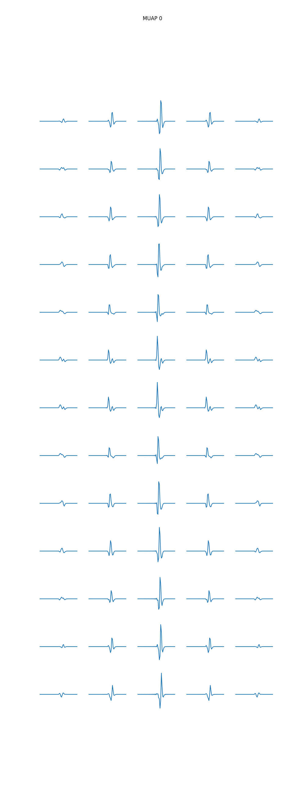
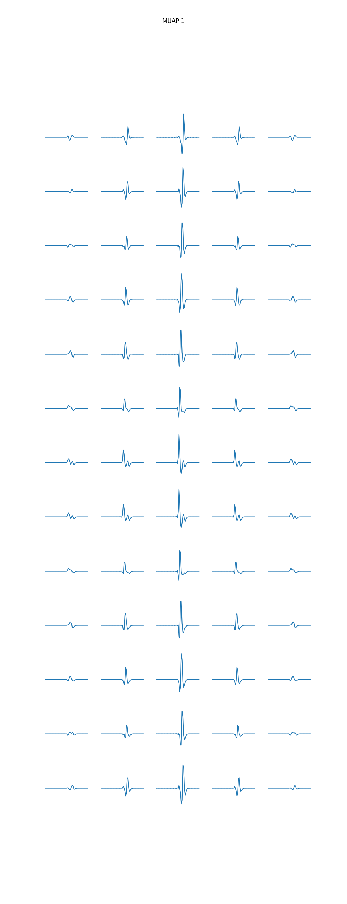
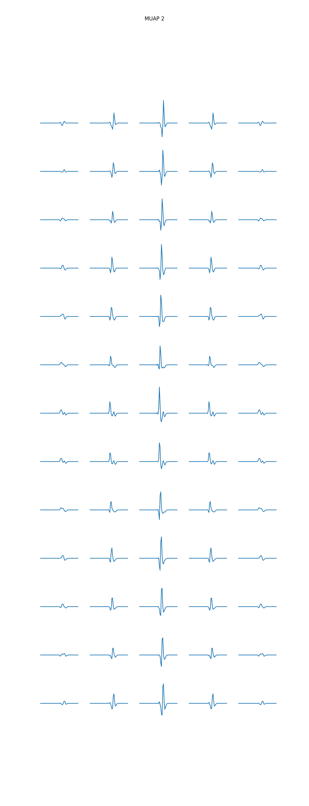
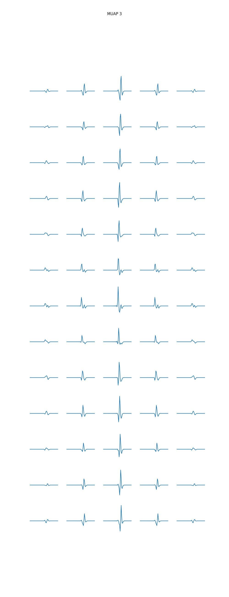
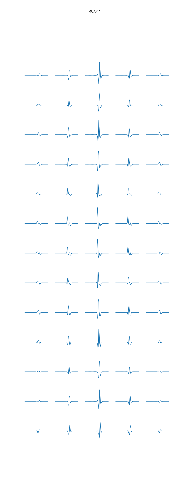
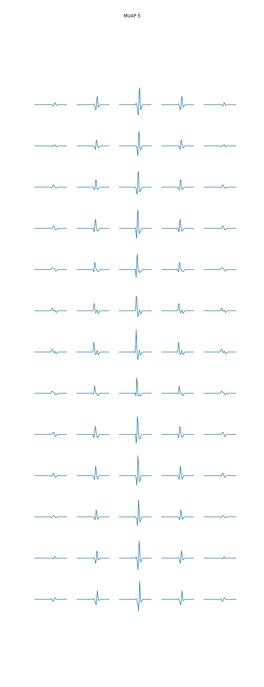
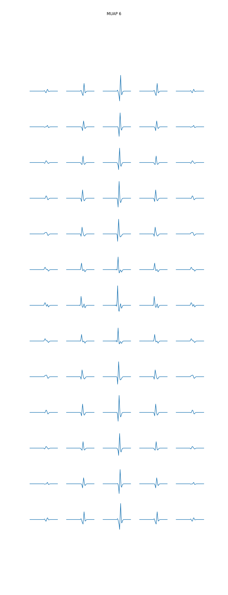
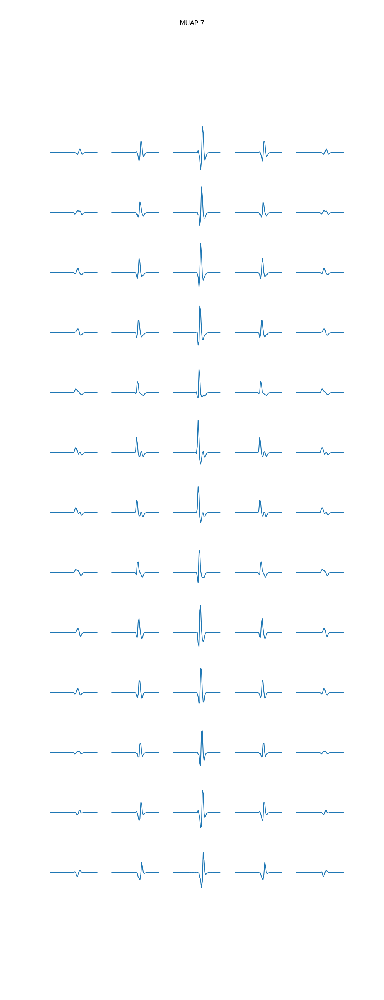
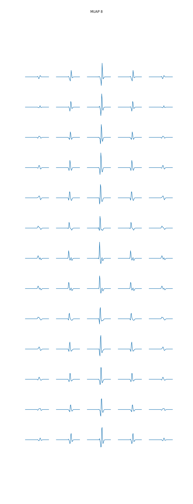
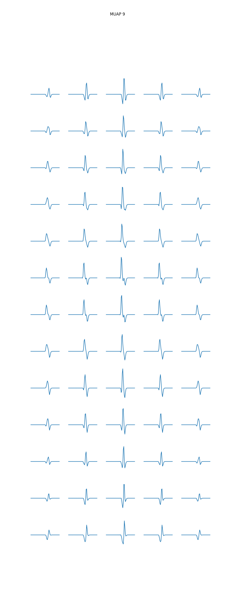
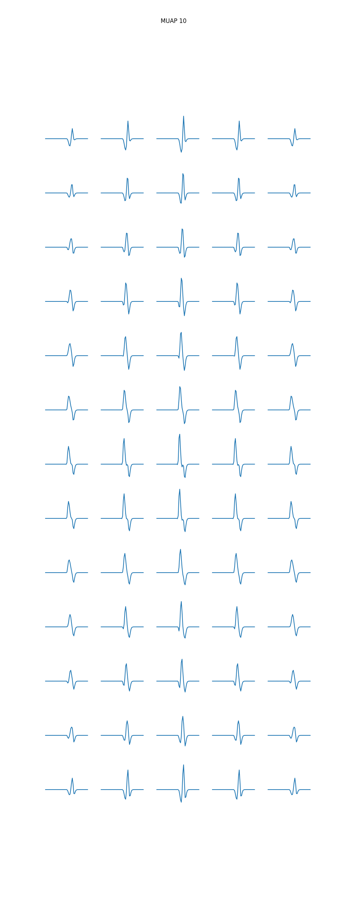
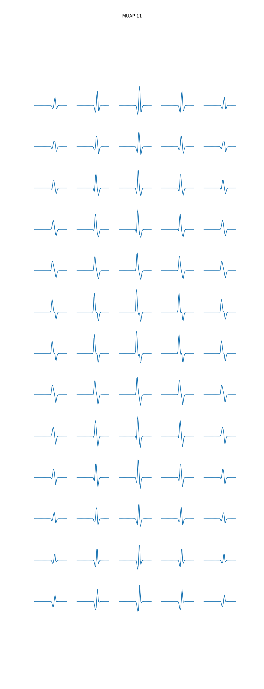
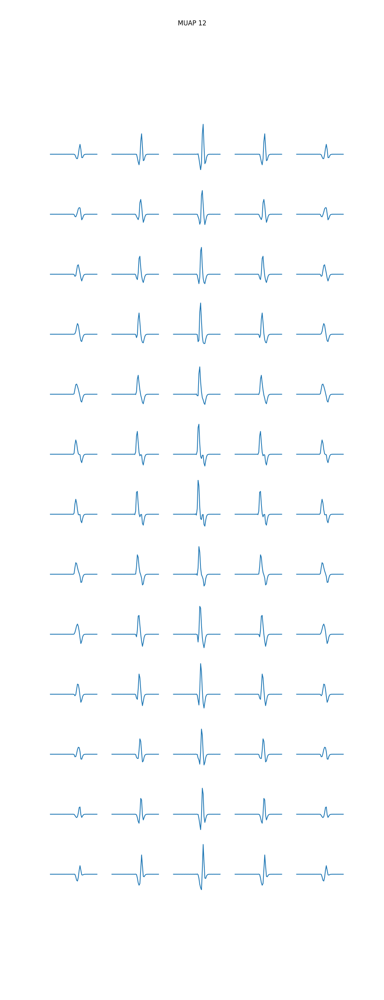
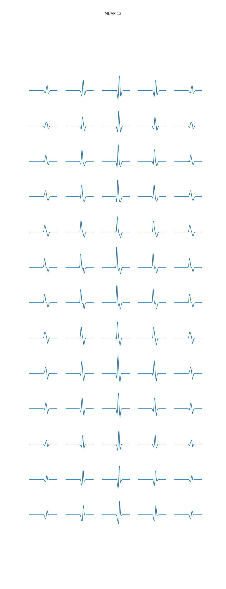
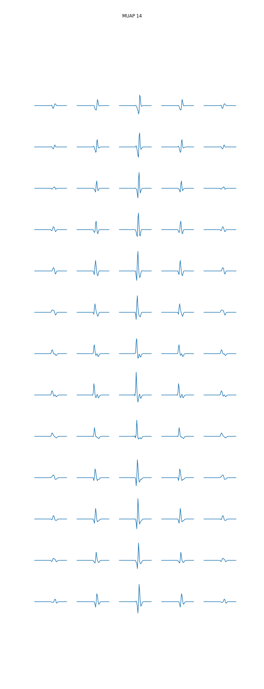
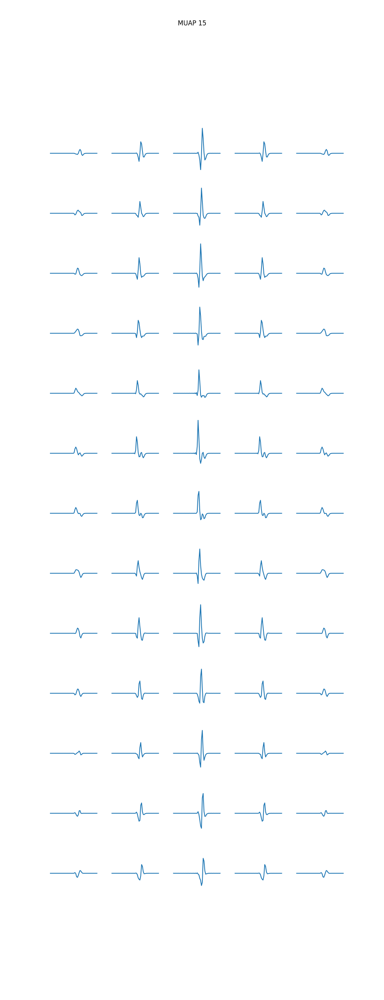
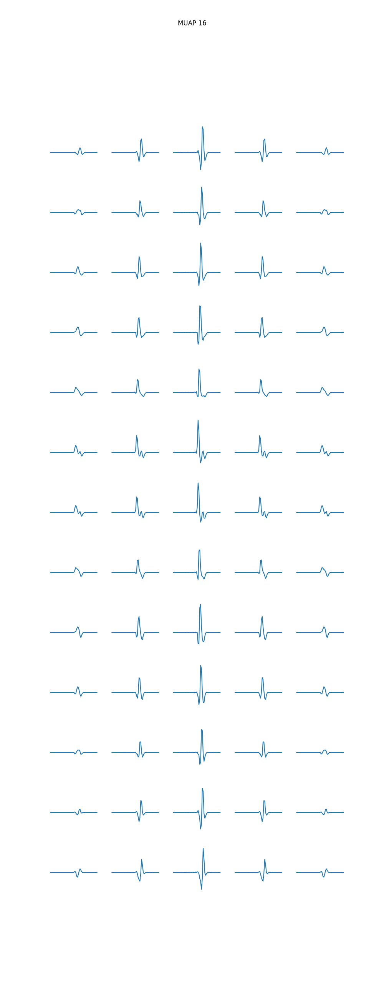
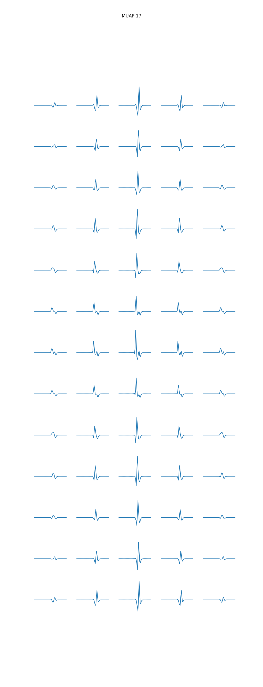
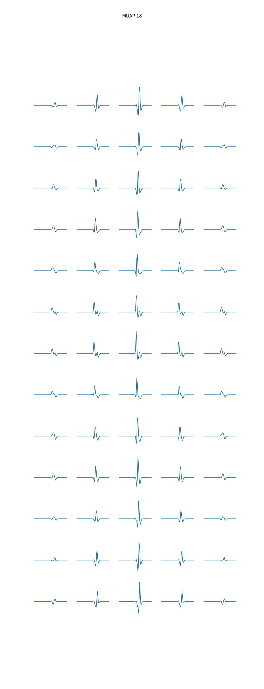
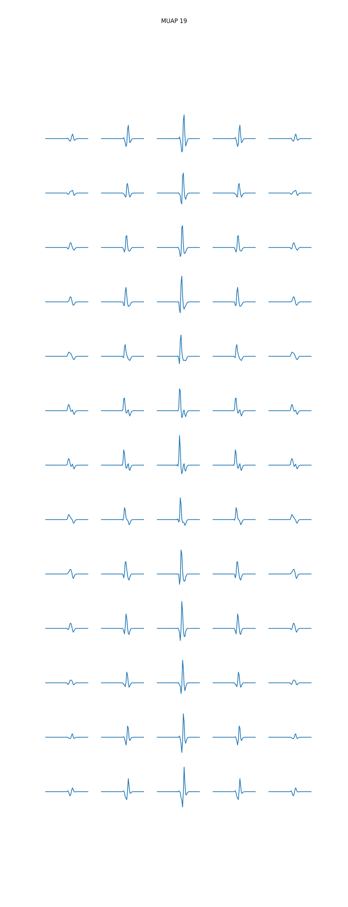
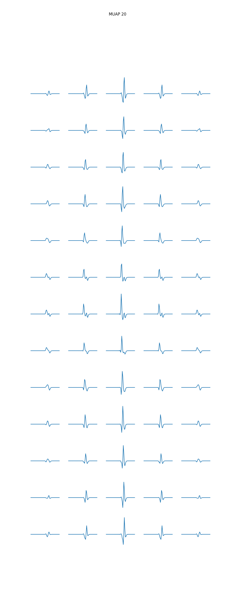
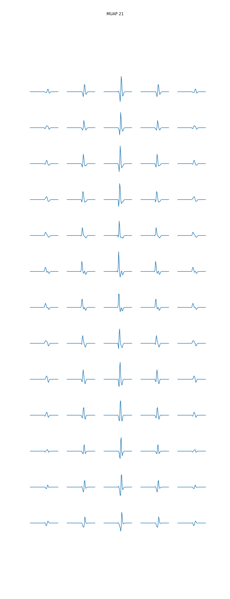
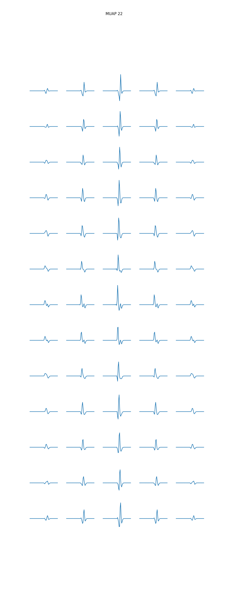
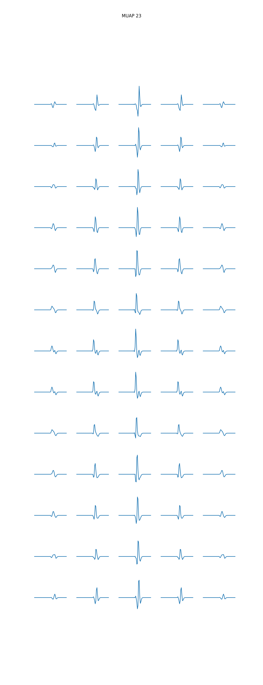
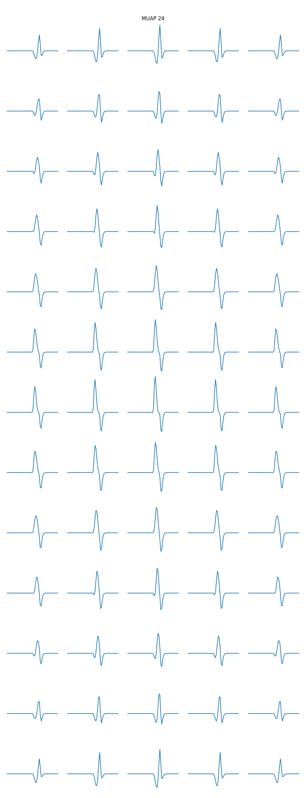
Concatenated MUAPs shape: (25, 13, 5, 256)
Plotting MUAPs: 0%| | 0/25 [00:00<?, ?it/s]
Plotting MUAPs: 4%|▍ | 1/25 [00:01<00:30, 1.28s/it]
Plotting MUAPs: 8%|▊ | 2/25 [00:02<00:29, 1.28s/it]
Plotting MUAPs: 12%|█▏ | 3/25 [00:03<00:28, 1.28s/it]
Plotting MUAPs: 16%|█▌ | 4/25 [00:05<00:27, 1.29s/it]
Plotting MUAPs: 20%|██ | 5/25 [00:06<00:25, 1.30s/it]
Plotting MUAPs: 24%|██▍ | 6/25 [00:07<00:24, 1.31s/it]
Plotting MUAPs: 28%|██▊ | 7/25 [00:09<00:23, 1.31s/it]
Plotting MUAPs: 32%|███▏ | 8/25 [00:10<00:22, 1.31s/it]
Plotting MUAPs: 36%|███▌ | 9/25 [00:11<00:20, 1.31s/it]
Plotting MUAPs: 40%|████ | 10/25 [00:13<00:19, 1.31s/it]
Plotting MUAPs: 44%|████▍ | 11/25 [00:14<00:18, 1.31s/it]
Plotting MUAPs: 48%|████▊ | 12/25 [00:15<00:17, 1.31s/it]
Plotting MUAPs: 52%|█████▏ | 13/25 [00:16<00:15, 1.32s/it]
Plotting MUAPs: 56%|█████▌ | 14/25 [00:18<00:14, 1.32s/it]
Plotting MUAPs: 60%|██████ | 15/25 [00:19<00:13, 1.33s/it]
Plotting MUAPs: 64%|██████▍ | 16/25 [00:20<00:11, 1.32s/it]
Plotting MUAPs: 68%|██████▊ | 17/25 [00:22<00:10, 1.32s/it]
Plotting MUAPs: 72%|███████▏ | 18/25 [00:23<00:09, 1.32s/it]
Plotting MUAPs: 76%|███████▌ | 19/25 [00:24<00:07, 1.33s/it]
Plotting MUAPs: 80%|████████ | 20/25 [00:26<00:06, 1.33s/it]
Plotting MUAPs: 84%|████████▍ | 21/25 [00:27<00:05, 1.33s/it]
Plotting MUAPs: 88%|████████▊ | 22/25 [00:28<00:03, 1.33s/it]
Plotting MUAPs: 92%|█████████▏| 23/25 [00:30<00:02, 1.33s/it]
Plotting MUAPs: 96%|█████████▌| 24/25 [00:31<00:01, 1.33s/it]
Plotting MUAPs: 100%|██████████| 25/25 [00:32<00:00, 1.33s/it]
Plotting MUAPs: 100%|██████████| 25/25 [00:32<00:00, 1.32s/it]
Total running time of the script: (16 minutes 59.499 seconds)